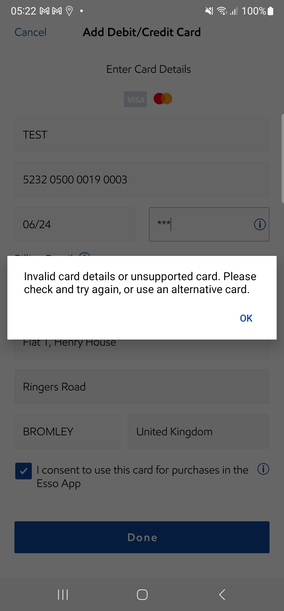
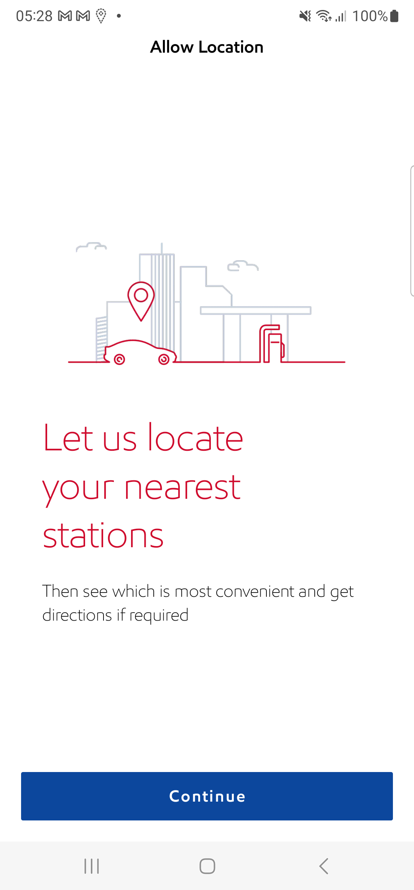
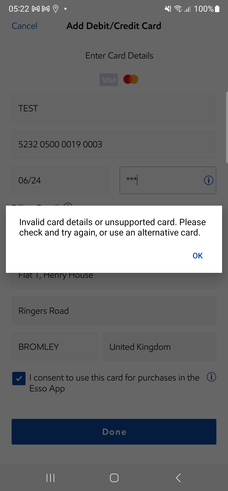
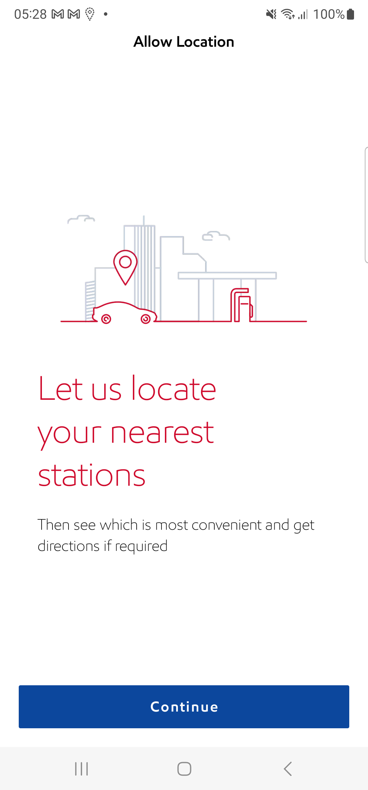

-
NonLoggedInDashboard
12:06:24 am / 00:16:44:922 Fail
NonLoggedInDashboard
06.20.2024 12:06:24 am 06.20.2024 12:23:09 am 00:16:44:922 · #test-id=1PassCheck whether System navigates user to login pageWhen user log out from the app if logged inAnd user clicks on Login IconAnd User taps on Login button in Login screen without entering the valuesThen Verify the inline error message during loginWhen Enter valid mail and tap doneThen Verify the inline error message for passwordWhen Enter the wrong password and tap loginThen Verify the popup contentPassCheck whether System navigates user to send linkWhen user log out from the app if logged inAnd user clicks on Login IconAnd user taps on Forgot password link in login screen in NLIDAnd user enters invalid email idAnd user taps on send button in Forgot Password ScreenThen Verify the inability to send the mailAnd user tabs on back button in the Forgot Password screenAnd user taps on Forgot password link in login screen in NLIDAnd User enters the "regressioncredentials2" valid mail id and taps send buttonThen Verify the mail is sentPassVerify the system should display the updated copy text of the ‘Don’t Have An Account? Sign Up!'Given user log out from the app if logged inWhen user clicks on Login IconThen user verifies the forgot login and sign up linkPassVerify the system should be navigated to the forgot password screen when the user taps on the 'Forgot Login?' button.Given user log out from the app if logged inWhen user clicks on Login IconWhen user taps on the forgot login linkThen verify it is navigated to the forgot password screenPassVerify the system should display the updated copy text of the ‘Forgot your password?'Given user log out from the app if logged inWhen user clicks on Login IconWhen user taps on the forgot login linkThen verify it is navigated to the forgot password screenThen verify the password screen textPassCheck Whether System is able to navigate login screenGiven user is on NLID screen after multiple launchThen user verifies the login button in the NLIDPassCheck Whether System is able to navigate login screen using device back buttonGiven user log out from the app if logged inAnd user clicks on Login IconAnd user taps on Forgot password link in login screen in NLIDAnd user tabs on back button in the Forgot Password screenAnd verify user navigates back to Login screenPassManual User - Verify the Esso app is not displaying the App Assistant in Support Centre screen (In NLID)When user log out from the app if logged inAnd user taps on More button in tab barAnd user taps on Support Centre iconThen user validates that the app assistant is not presentPassManual User - Verify the Esso app is not displaying the App Assistant in Station Finder default map view(In NLID)When user log out from the app if logged inWhen user taps on Station FinderThen user validates that the app assistant is not presentFailManual User - Verify the Esso app is not displaying the App Assistant in Station Finder list view(In NLID)When user log out from the app if logged inWhen user taps on Station FinderAnd user tap on list viewstepDefinitions.Hook.afterEachStep(io.cucumber.java.Scenario)47ae4786-fc12-4ac8-abca-1410758c3dc2Then user validates that the app assistant is not presentStep skippedPassManual User - Verify the Esso app is not displaying the App Assistant in More screen(in NLID)When user log out from the app if logged inAnd user taps on More button in tab barThen user validates that the app assistant is not presentPassManual User - Verify the Esso app is not displaying the App Assistant in NLID stateWhen user log out from the app if logged inThen user validates that the app assistant is not presentPassVerify that Whether the app is displaying 3 dots button after the Google SSO button on NLIDWhen user log out from the app if logged inThen user validates SSO logos and three dots in the NLIDPassVerify that Whether the app should close the custom pop up when user taps on the 'X' buttonWhen user log out from the app if logged inAnd user taps on the three dots in the NLIDThen user validates the SSO logos in the modal popup in the nlidWhen the user taps on the close button in the modal popupThen user verifies the app redirects back to NLIDPassCheck whether the user is able to verify he don't see the account details from NLIDWhen user log out from the app if logged inAnd user taps on More button in tab barAnd user taps on fuel iconWhen user verifies the broadcast bannerPassVerify the user is able to see the updated Esso logo in the "NLID" screenWhen user log out from the app if logged inThen Check for Esso logo on NLIDPassVerify the user is able to see the updated Esso logo in the "NLID" screenWhen user log out from the app if logged inThen Check for Esso logo on NLIDPassVerify that Whether the app is displaying a custom popup with the list of available SSO authentication methodsAnd user taps on the three dots in the NLIDThen user validates the SSO logos in the modal popup in the nlidAnd User validates modal popup titleThen the user taps on the close button in the modal popupPassVerify that whether app dismiss the broadcast banner on NLID without the user interactionAnd user taps on More button in tab barAnd user taps on fuel iconWhen user verifies the broadcast bannerThen user confirms the banner board is not presentPassVerify that the app should not display the ‘Esso App Feedback’ section on the 'Support Centre' screen. (NLID)And user taps on More button in tab barAnd User looks for Esso App Feedback option -
NativePassword
12:23:09 am / 00:11:55:059 Pass
NativePassword
06.20.2024 12:23:09 am 06.20.2024 12:35:04 am 00:11:55:059 · #test-id=218PassCheck whether the user is able to see the save password prompt while logging in with unsaved login credentialsWhen user log out from the app if logged inWhen user taps on register button from Login screenThen user should be navigated to Manual Register screenThen enter First NameThen enter Last NameThen enter "chibisakkrava.d+" Email addressThen enter passwordAnd confirm passwordThen click the check box for acceptThen click on continue button from NLIDAnd validate the OS Native password pop upWhen user clicks the save password buttonPassCheck whether the user is able to Save password for the registered user (Android Specific)When user log out from the app if logged inWhen user taps on register button from Login screenThen user should be navigated to Manual Register screenThen enter First NameThen enter Last NameThen enter "testesssoapp2021+" Email addressThen enter passwordAnd confirm passwordThen click the check box for acceptThen click on continue button from NLIDWhen user clicks the save password buttonThen App should navigates to Confirm your email address screenPassCheck whether the user is able to Save password for the registered userWhen user log out from the app if logged inWhen user taps on register button from Login screenThen user should be navigated to Manual Register screenThen enter First NameThen enter Last NameThen enter "chibisakkrava.d+" Email addressThen enter passwordAnd confirm passwordThen click the check box for acceptWhen click on the continue button in registration screenAnd validate the OS Native password pop upWhen user clicks the save password buttonThen App should navigates to Confirm your email address screenPassCheck whether the user is able to see the save password prompt while logging in with unsaved login credentialsWhen user log out from the app if logged inWhen user taps on register button from Login screenThen user should be navigated to Manual Register screenThen enter First NameThen enter Last NameThen enter "testesssoapp2021+" Email addressThen enter passwordAnd confirm passwordThen click the check box for acceptThen click on continue button from NLIDAnd validate the OS Native password pop upWhen user clicks the save password buttonPassCheck whether the user is able to Save password for the registered userWhen user log out from the app if logged inWhen user taps on register button from Login screenThen user should be navigated to Manual Register screenThen enter First NameThen enter Last NameThen enter "chibisakkrava.d+" Email addressThen enter passwordAnd confirm passwordThen click the check box for acceptWhen click on the continue button in registration screenAnd validate the OS Native password pop upWhen user clicks the Not now buttonThen App should navigates to Confirm your email address screenPassCheck whether the user is able to view the saved email address on the keyboardWhen user log out from the app if logged inAnd user clicks on Login IconWhen user taps on email tabAnd user checks the suggestions on the keyboardAnd user clicks the mail suggestion from the keyboardThen user validates the password getting displayed -
Offers
12:35:04 am / 01:27:04:858 Fail
Offers
06.20.2024 12:35:04 am 06.20.2024 2:02:09 am 01:27:04:858 · #test-id=373FailLID- Add Nectar Card and verify on Registration flowWhen user log out from the app if logged inWhen user taps on register button from Login screenThen user should be navigated to Manual Register screenThen enter First NameThen enter Last NameThen enter "chibisakkrava.d+" Email addressThen enter passwordAnd confirm passwordThen click the check box for acceptWhen click on continue button from register screenWhen user tap on Skip buttonThen the system should display Skip warning popupWhen user tap on Skip anywayThen app to dismiss the popup and navigate the user to LID after reviewWhen user taps on OffersThen verify user is able to Navigate Offers screenWhen user tap on add nectar button in offers screenThen user is navigated to add nectar screenAnd enter nectar card value "NectarCardAddAndVerify" and tap on next buttonWhen user clicks on Continue button under 'Card Added successfully' alertThen enter "NectarCardAddAndVerify" Nectar card number and passwordstepDefinitions.Hook.afterEachStep(io.cucumber.java.Scenario)5baa3c8d-730a-438c-9a38-6ab6e2ef5665Then validate nectar card number and point balance in offers screenStep skippedPassManual User - Verify the Esso app is not displaying the App Assistant in Offer screen (Nectar card added and verified)When user is on NLID screenAnd user taps on OffersThen user validates that the app assistant is not presentPassManual User - Verify the Esso app is not displaying the App Assistant in Offer screen (Nectar card not added)Given user is on NLID screenAnd user taps on More button in tab barWhen user navigates to Account screenAnd delete added nectar card if existsAnd user taps on OffersThen user validates that the app assistant is not presentPassAccount : Account screen UI and Alignment ,Before adding Nectar CardGiven user is on NLID screenAnd user taps on More button in tab barWhen user navigates to Account screenThen tap on add nectar card from account screenThen user is navigated to add nectar screenAnd enter nectar card value "NectarCardAddAndVerify" and tap on next buttonThen user tap on verify laterThen Validate skip click on skip buttonThen validate added nectar card "NectarCardAddAndVerify" in the accountPassManual User - Verify the Esso app is not displaying the App Assistant in Offer screen (Nectar card added but verified)When user is on NLID screenAnd user taps on OffersThen user validates that the app assistant is not presentPassVerify if user is able to see the 'Nectar card added successfully' screen from complete your profile screenWhen user log out from the app if logged inWhen user taps on register button from Login screenThen user should be navigated to Manual Register screenWhen enter First NameAnd enter Last NameAnd enter "chibisakkrava.d+" Email addressAnd enter passwordAnd confirm passwordAnd click the check box for acceptAnd click on continue button from register screenThen App should navigates to Confirm your email address screenAnd user should see details in contextual registration screenWhen user tap on Skip buttonAnd user tap on Skip anywayThen app to dismiss the popup and navigate the user to LID after reviewAnd user taps on the complete profileAnd user clicks on Add nectarAnd user clicks on the get started iconThen user is navigated to add nectar screenAnd enter nectar card value "NectarCardAddAndVerify" and tap on next buttonThen the user validates the nectar card added successfully screenPassAccounts - "Add Nectar card" and Verify the CardWhen user log out from the app if logged inAnd user clicks on Login IconAnd I enter "regressioncredentials2" in login detailsAnd user taps login button in login screenGiven user is on NLID screenAnd user taps on More button in tab barWhen user navigates to Account screenAnd delete added nectar card if existsThen tap on add nectar card from account screenThen user is navigated to add nectar screenAnd enter nectar card value "NectarCardAddAndVerify" and tap on next buttonWhen user clicks on Continue button under 'Card Added successfully' alertThen enter "NectarCardAddAndVerify" Nectar card number and passwordAnd navigate to the Nectar card section from account screenThen validate added nectar card "NectarCardAddAndVerify" in the accountPassDaisy Ph2 -Sprint 2: Verify the Point balance on offers screenGiven user is on NLID screenThen user taps on OffersThen verify nectar points comma seperator on offers screenPassStation Finder : "Nectar Points" is selected along with one other filters button "APPLY 1 FILTER" should be displayedGiven user is on NLID screenThen user taps on Station FinderWhen user tap on filter iconThen select Nectar Points filterAnd validate apply filter buttonPassEsso Daisy Ph2 : Verify the Nectar points balance and offer banner on LID screenAnd user is on NLID screenThen Verify the Nectar Card points in LID screenFailEsso Daisy Ph2 : Verify the Nectar points balance and offer banner on LID screenAnd user is on NLID screenAnd Verify that tick mark is displayed on the offersstepDefinitions.Hook.afterEachStep(io.cucumber.java.Scenario)f01ec272-3152-4a6e-8fe4-2842bbccf7eaPassCheck whether User navigates to Offers screen from tab barGiven user is on NLID screenWhen user taps on OffersThen validate nectar card number and point balance in offers screenAnd validate offers displayed in offer screenFailOffers- load to card - Terms & Condition pop up by tapping on T&C linkGiven user is on NLID screenThen user taps on OffersAnd validate offers displayed in offer screenThen tap on view offers buttonstepDefinitions.Hook.afterEachStep(io.cucumber.java.Scenario)3bd5e4da-f93e-43da-ab36-f9f274195a12And validate offer detailsStep skippedThen tap on Terms & conditions linkStep skippedAnd validate Terms & conditions overlayStep skippedThen close the Terms & conditions overlayStep skippedPassOffers- Load to Card : View the balance point in offers screen 1 When no points are accumulatedGiven user is on NLID screenAnd user taps on More button in tab barWhen user navigates to Account screenAnd delete added nectar card if existsThen user adds a nectar card and taps verify laterThen user taps on OffersThen validate point balance as nill in offers screen when user has no pointsFailVerify the app should be able to go back to the entry point screen when the user selects the “Cancel and return to Esso” or “back/cancel” link. >Transaction complete > Add and verify nectar cardGiven user is on NLID screenAnd user taps on More button in tab barWhen user navigates to Account screenAnd delete added nectar card if existsAnd user taps on fuel iconWhen user taps on start button in LIDAnd user is navigated to Select your pump screenAnd user selects pump number "1" to start fuellingAnd user selects the pump from 'Select your Pump' page and taps on continue buttonAnd user verify the MFA screenAnd user tap on Continue button in MFA screenThen the user is navigated to Confirm payment screenAnd user confirms the paymentThen validate add nectar card button displayed in transaction complete screenstepDefinitions.Hook.afterEachStep(io.cucumber.java.Scenario)18bacacf-233d-42f3-8131-2e75fd8fb09fAnd tap on the Add Nectar Card button in Transaction complete ScreenStep skippedAnd verify the Add nectar card screenStep skippedThen tap on Add now button in Add Nectar Card ScreenStep skippedAnd enter nectar card value "NectarCardAddAndVerify" and tap on next buttonStep skippedWhen user clicks on Continue button under 'Card Added successfully' alertStep skippedWhen tap on 'Cancel and Return to ESSO' link in 'Link your account' ScreenStep skippedAnd click on Ok button in the modal popup in the Nectar card pageStep skippedThen user lands on Verify Card Screen and taps on skip buttonStep skippedThen validate verify nectar card link displayed in transaction complete screenStep skippedPassVerify the app should be able to go back to the entry point screen when the user selects the “Cancel and return to Esso” or “back/cancel” link. >Account screen >Add and verify nectar cardGiven user is on NLID screenAnd user taps on More button in tab barWhen user navigates to Account screenAnd delete added nectar card if existsThen tap on add nectar card from account screenThen user is navigated to add nectar screenAnd enter nectar card value "NectarCardAddAndVerify" and tap on next buttonWhen user clicks on Continue button under 'Card Added successfully' alertWhen tap on 'Cancel and Return to ESSO' link in 'Link your account' ScreenAnd click on Ok button in the modal popup in the Nectar card pageThen user lands on Verify Card Screen and taps on skip buttonThen user verifies the user redirected to Account screenFailVerify the app should be able to go back to the entry point screen when the user selects the “Cancel and return to Esso” or “back/cancel” link. >Transaction complete > Verify Nectar card addedGiven user is on NLID screenWhen user taps on start button in LIDAnd user is navigated to Select your pump screenAnd user selects pump number "2" to start fuellingAnd user selects the pump from 'Select your Pump' page and taps on continue buttonAnd user verify the MFA screenAnd user tap on Continue button in MFA screenThen the user is navigated to Confirm payment screenAnd user confirms the paymentThen validate verify nectar card link displayed in transaction complete screenstepDefinitions.Hook.afterEachStep(io.cucumber.java.Scenario)40a8437d-2c3b-4d99-8f59-314a9a644fc1When tap on the Verify Nectar Card link in Transaction complete ScreenStep skippedWhen user clicks on Continue button under 'Card Added successfully' alertStep skippedWhen tap on 'Cancel and Return to ESSO' link in 'Link your account' ScreenStep skippedAnd click on Ok button in the modal popup in the Nectar card pageStep skippedThen validate verify nectar card link displayed in transaction complete screenStep skippedFailVerify the app should be able to go back to the entry point screen when the user selects the “Cancel and return to Esso” or “back/cancel” link. >LID > Add and verify nectar cards (promotion message on LID)Given user is on NLID screenAnd user taps on More button in tab barWhen user navigates to Account screenAnd delete added nectar card if existsAnd user taps on fuel iconWhen user tap on learn more link in LID screenThen User is navigated to Add Nectar Card screenWhen click on Get Started button on Add Nectar Card screenThen user is navigated to add nectar screenAnd enter nectar card value "NectarCardAddAndVerify" and tap on next buttonWhen user clicks on Continue button under 'Card Added successfully' alertWhen tap on 'Cancel and Return to ESSO' link in 'Link your account' ScreenAnd click on Ok button in the modal popup in the Nectar card pageThen user lands on Verify Card Screen and taps on skip buttonThen Verify user navigated back to LID screenstepDefinitions.Hook.afterEachStep(io.cucumber.java.Scenario)fb7756f7-1fed-4975-91a2-88dac70592e8PassVerify the app should be able to go back to the entry point screen when the user selects the “Cancel and return to Esso” or “back/cancel” link. >Payment details screen > Add and verify nectar cardGiven user is on NLID screenAnd user taps on More button in tab barWhen user navigates to Account screenAnd delete added nectar card if existsWhen user taps on fuel icon and start fuelling buttonAnd user is navigated to Select your pump screenAnd user selects pump number "1" to start fuellingAnd user selects the pump from 'Select your Pump' page and taps on continue buttonWhen user tap on Continue button in MFA screenThen the user is navigated to Confirm payment screenAnd Click on Change payment linkAnd user adds the Nectar card details by clicking the Add nectar card in Payment details screenThen user is navigated to add nectar screenAnd enter nectar card value "NectarCardAddAndVerify" and tap on next buttonWhen user clicks on Continue button under 'Card Added successfully' alertWhen tap on 'Cancel and Return to ESSO' link in 'Link your account' ScreenAnd click on Ok button in the modal popup in the Nectar card pageThen user lands on Verify Card Screen and taps on skip buttonThen verify if the user lands on Payment Details ScreenFailVerify the app should be able to go back to the entry point screen when the user selects the “Cancel and return to Esso” or “back/cancel” link. >LID > Add and verify nectar cards (promotion message on LID)Given user is on NLID screenWhen user taps on fuel iconThen verify whether See your Nectar balance link is displayed on LIDAnd tap on See your Nectar balance LinkWhen user clicks on Continue button under 'Card Added successfully' alertWhen tap on 'Cancel and Return to ESSO' link in 'Link your account' ScreenstepDefinitions.Hook.afterEachStep(io.cucumber.java.Scenario)265f4a6a-4f34-47e1-8a80-02aec14c9f2aAnd click on Ok button in the modal popup in the Nectar card pageStep skippedThen user lands on Verify Card Screen and taps on skip buttonStep skippedThen verify whether See your Nectar balance link is displayed on LIDStep skippedPassVerify the app should be able to go back to the entry point screen when the user selects the “Cancel and return to Esso” or “back/cancel” link. >Offer > Nectar card added - VerifyGiven user is on NLID screenWhen user taps on OffersAnd tap on Verify Nectar button in offers ScreenWhen user clicks on Continue button under 'Card Added successfully' alertWhen tap on 'Cancel and Return to ESSO' link in 'Link your account' ScreenAnd click on Ok button in the modal popup in the Nectar card pageThen user Verifies the Nectar card button in the Offers ScreenPassVerify the app should be able to go back to the entry point screen when the user selects the “Cancel and return to Esso” or “back/cancel” link. >Offer > Add and verify nectar cardGiven user is on NLID screenAnd user taps on More button in tab barWhen user navigates to Account screenAnd delete added nectar card if existsWhen user taps on OffersWhen user taps on 'Get Exclusive offers' in the offers screenAnd enter nectar card value "NectarCardAddAndVerify" and tap on next buttonWhen user clicks on Continue button under 'Card Added successfully' alertWhen tap on 'Cancel and Return to ESSO' link in 'Link your account' ScreenAnd click on Ok button in the modal popup in the Nectar card pageThen user lands on Verify Card Screen and taps on skip buttonThen user Verifies the Nectar card button in the Offers ScreenFailLID - Add Nectar card (valid nectar card number) from Dashboard screenAnd user is on NLID screenAnd user taps on More button in tab barWhen user navigates to Account screenAnd delete added nectar card if existsAnd user taps on fuel iconAnd user is on NLID screenWhen user tap on learn more link in LID screenThen User is navigated to Add Nectar Card screenWhen click on Get Started button on Add Nectar Card screenThen user is navigated to add nectar screenAnd enter nectar card value "NectarCardAddAndVerify" and tap on next buttonWhen user clicks on Continue button under 'Card Added successfully' alertThen enter "NectarCardAddAndVerify" Nectar card number and passwordstepDefinitions.Hook.afterEachStep(io.cucumber.java.Scenario)25574cf9-e217-4d70-be41-2da21ac7298dAnd user is on NLID screenStep skippedAnd user taps on More button in tab barStep skippedWhen user navigates to Account screenStep skippedPassOffers UI and alignment for all the New offer screenAnd user is on NLID screenAnd user taps on More button in tab barWhen user navigates to Account screenAnd navigate to the Nectar card sectionAnd Delete the Nectar card if it is presentAnd user taps on fuel iconWhen user taps on OffersThen verify user is able to Navigate Offers screenAnd user validates offers screenWhen user taps on "More about collecting points" linkAnd user sees how to collect points overlayWhen user tap on add nectar button in offers screenThen user is navigated to add nectar screenAnd enter nectar card value "NectarCardAddAndVerify" and tap on next buttonThen user verifies the Nectar Added success pop-up and skips verificationWhen Validate skip click on skip buttonAnd verify if the user is navigated to Verify Offers screenPassDo you have a Nectar card should not be displayed and user navigate to 'Add Nectar Card'Given user is on NLID screenAnd user taps on More button in tab barWhen user navigates to Account screenAnd delete added nectar card if existsWhen user taps on OffersThen verify user is able to Navigate Offers screenWhen user tap on add nectar button in offers screenThen user is navigated to add nectar screenPassDaisy Phase 2 Esso app : From LID add nectar card and verify the nectar cardGiven user is on NLID screenAnd user taps on More button in tab barWhen user navigates to Account screenAnd user verifies Add Nectar card sectionThen Add and verify Nectar cardPassGoogle Sign In Registration->Verify whether the app marks the profile completion task 'Add Nectar Card' as complete when the user skip/cancel adding the Nectar card from the Complete Your Profile->Add Nectar Card launch screenGiven user log out from the app if logged inAnd user taps on "Google" icon in the NLIDAnd I enter SSO login details for "Google"When user is on NLID screenAnd user taps on More button in tab barWhen user navigates to Account screenAnd user verifies the Account title in the account sectionAnd user taps on delete your account in account screenAnd user taps on delete in delete your account screenAnd tap on Ok ButtonThen user verifies the app redirects back to NLIDAnd user taps on "Google" icon in the NLIDAnd I enter SSO login details for "Google"Then user registers the SSO user by accepting the terms and conditions screenWhen user is on NLID screenAnd user taps on the complete profileAnd user clicks on Add nectarAnd user taps on cancel button in the add nectar card launch screen from Profile completionThen user clicks on Add nectarAnd user verifies the completed pop up message and clicks ok buttonAnd user taps on back and navigates to LIDThen user verifies the progress in the LIDPassGoogle sign in Registration->Verify whether the app marks the profile completion task 'Add Nectar Card' as complete when the user skip adding the Nectar card from the Complete Your Profile > Add Nectar Card launch screen > Add Nectar Card screenGiven user is on NLID screenAnd user taps on More button in tab barWhen user navigates to Account screenAnd user verifies the Account title in the account sectionAnd user taps on delete your account in account screenAnd user taps on delete in delete your account screenAnd tap on Ok ButtonThen user verifies the app redirects back to NLIDAnd user taps on "Google" icon in the NLIDAnd I enter SSO login details for "Google"Then user registers the SSO user by accepting the terms and conditions screenWhen user is on NLID screenAnd user taps on the complete profileAnd user clicks on Add nectarAnd user clicks on the get started iconAnd user taps on cancel button in the add nectar card screen from Profile completionAnd user taps on cancel button in the add nectar card launch screen from Profile completionThen user clicks on Add nectarAnd user verifies the completed pop up message and clicks ok buttonAnd user taps on back and navigates to LIDThen user verifies the progress in the LIDPassGoogle SSO Registration->Verify whether the app marks the profile completion task 'Add Nectar Card' as complete when the user skip adding the Nectar card from Offer Screen >Add Nectar Card screenGiven user is on NLID screenAnd user taps on More button in tab barWhen user navigates to Account screenAnd user verifies the Account title in the account sectionAnd user taps on delete your account in account screenAnd user taps on delete in delete your account screenAnd tap on Ok ButtonThen user verifies the app redirects back to NLIDAnd user taps on "Google" icon in the NLIDAnd I enter SSO login details for "Google"Then user registers the SSO user by accepting the terms and conditions screenWhen user is on NLID screenAnd user clicks on offer iconAnd user clicks Add Nectar Card from offer screenAnd user taps on cancel button in the add nectar card screen from Profile completionWhen user taps on fuel icon and navigate to LID screenAnd user taps on the complete profileAnd user clicks on Add nectarThen user verifies the completed pop up message and clicks ok buttonAnd user taps on back and navigates to LIDThen user verifies the progress in the LIDPassGoogle Signin Registration->Verify whether the app marks the profile completion task 'Add Nectar Card' as complete when the user skip adding the Nectar card from the Offer screen (Add your Nectar card to get exclusive Offers' link)> Add Nectar Card screenGiven user is on NLID screenAnd user taps on More button in tab barWhen user navigates to Account screenAnd user verifies the Account title in the account sectionAnd user taps on delete your account in account screenAnd user taps on delete in delete your account screenAnd tap on Ok ButtonThen user verifies the app redirects back to NLIDAnd user taps on "Google" icon in the NLIDAnd I enter SSO login details for "Google"Then user registers the SSO user by accepting the terms and conditions screenWhen user is on NLID screenAnd user clicks on offer iconWhen user taps on 'Get Exclusive offers' in the offers screenAnd user taps on cancel button in the add nectar card screen from Profile completionWhen user taps on fuel icon and navigate to LID screenAnd user taps on the complete profileAnd user clicks on Add nectarThen user verifies the completed pop up message and clicks ok buttonAnd user taps on back and navigates to LIDThen user verifies the progress in the LIDFailGoogle Sign In Registration->Verify whether the app marks the profile completion task 'Add Nectar Card' as complete when the user skip/cancel adding the Nectar card from the LID->Add Nectar Card launch screenGiven user is on NLID screenAnd user taps on More button in tab barWhen user navigates to Account screenAnd user verifies the Account title in the account sectionAnd user taps on delete your account in account screenAnd user taps on delete in delete your account screenAnd tap on Ok ButtonThen user verifies the app redirects back to NLIDAnd user taps on "Google" icon in the NLIDAnd I enter SSO login details for "Google"Then user registers the SSO user by accepting the terms and conditions screenWhen user is on NLID screenAnd user taps on the complete profileAnd user taps on add payment methodThen user verifies the Add Payment method screenWhen user taps on Credit Debit card in Add Payment Method screenWhen user is on setup PIN screenWhen user enters four digit PINThen user tap on continue button in enter PIN screenThen tap on ok button and close location copy textThen enter name of the cardThen enter "5232 0500 0019 0003" card numberThen enter expiry dateThen enter CVVThen enter postal codeThen enter address line1Then enter Address line2Then enter cityThen check consent checkboxThen user clicks on continue button in Card screenstepDefinitions.Hook.afterEachStep(io.cucumber.java.Scenario)50df94f2-f2c7-446a-a8ee-4a05ca6ae680When user tap done button to navigate verify screen "Payment method added successfully"Step skippedWhen user tap on payment method added successfully screen continue buttonStep skippedAnd user taps on back and navigates to LIDStep skippedAnd user taps on Add nectar card link in LIDStep skippedAnd user taps on cancel button in the add nectar card launch screen from Profile completionStep skippedAnd user taps on the complete profileStep skippedAnd user clicks on Add nectarStep skippedThen user verifies the completed pop up message and clicks ok buttonStep skippedAnd user taps on back and navigates to LIDStep skippedThen user verifies the progress in the LIDStep skippedFailGoogle Sign In Registration->Verify whether the app marks the profile completion task 'Add Nectar Card'as complete when the user skip adding the Nectar card from the LID > Add Nectar Card launch screen > Add Nectar Card screenGiven user is on NLID screenAnd user taps on More button in tab barWhen user navigates to Account screenAnd user verifies the Account title in the account sectionAnd user taps on delete your account in account screenAnd user taps on delete in delete your account screenAnd tap on Ok ButtonThen user verifies the app redirects back to NLIDAnd user taps on "Google" icon in the NLIDAnd I enter SSO login details for "Google"Then user registers the SSO user by accepting the terms and conditions screenWhen user is on NLID screenAnd user taps on the complete profileAnd user taps on add payment methodThen user verifies the Add Payment method screenWhen user taps on Credit Debit card in Add Payment Method screenWhen user is on setup PIN screenWhen user enters four digit PINThen user tap on continue button in enter PIN screenThen tap on ok button and close location copy textThen enter name of the cardThen enter "5232 0500 0019 0003" card numberThen enter expiry dateThen enter CVVThen enter postal codeThen enter address line1Then enter Address line2Then enter cityThen check consent checkboxThen user clicks on continue button in Card screenstepDefinitions.Hook.afterEachStep(io.cucumber.java.Scenario)2a6905f6-a4fc-4a4c-a526-6650e3588bbaWhen user tap done button to navigate verify screen "Payment method added successfully"Step skippedWhen user tap on payment method added successfully screen continue buttonStep skippedAnd user taps on back and navigates to LIDStep skippedAnd user taps on Add nectar card link in LIDStep skippedAnd user clicks on the get started iconStep skippedAnd user taps on cancel button in the add nectar card screen from Profile completionStep skippedAnd user taps on cancel button in the add nectar card launch screen from Profile completionStep skippedAnd user taps on the complete profileStep skippedAnd user clicks on Add nectarStep skippedThen user verifies the completed pop up message and clicks ok buttonStep skippedAnd user taps on back and navigates to LIDStep skippedThen user verifies the progress in the LIDStep skippedFailGoogle Sign In Registration->Verify whether the app marks the profile completion task 'Add Nectar Card' as complete when the user skip adding the Nectar card from the Payment details Screen>Add Nectar Card screenGiven user is on NLID screenAnd user taps on More button in tab barWhen user navigates to Account screenAnd user verifies the Account title in the account sectionAnd user taps on delete your account in account screenAnd user taps on delete in delete your account screenAnd tap on Ok ButtonThen user verifies the app redirects back to NLIDAnd user taps on "Google" icon in the NLIDAnd I enter SSO login details for "Google"Then user registers the SSO user by accepting the terms and conditions screenWhen user is on NLID screenAnd user taps on the complete profileAnd user taps on add payment methodThen user verifies the Add Payment method screenWhen user taps on Credit Debit card in Add Payment Method screenWhen user is on setup PIN screenWhen user enters four digit PINThen user tap on continue button in enter PIN screenThen tap on ok button and close location copy textThen enter name of the cardThen enter "5232 0500 0019 0003" card numberThen enter expiry dateThen enter CVVThen enter postal codeThen enter address line1Then enter Address line2Then enter cityThen check consent checkboxThen user clicks on continue button in Card screenstepDefinitions.Hook.afterEachStep(io.cucumber.java.Scenario)48195fab-ed40-43e9-9d77-29c5e210e791When user tap done button to navigate verify screen "Payment method added successfully"Step skippedWhen user tap on payment method added successfully screen continue buttonStep skippedAnd user taps on back and navigates to LIDStep skippedWhen user taps on fuel icon and start fuelling buttonStep skippedAnd user is navigated to Select your pump screenStep skippedAnd user selects pump number "1" to start fuellingStep skippedAnd user selects the pump from 'Select your Pump' page and taps on continue buttonStep skippedWhen user tap on Continue button in MFA screenStep skippedThen the user is navigated to Confirm payment screenStep skippedAnd Click on Change payment linkStep skippedAnd user adds the Nectar card details by clicking the Add nectar card in Payment details screenStep skippedThen user is navigated to add nectar screenStep skippedAnd user taps on cancel button in the add nectar card screen from Profile completionStep skippedWhen the user taps on continue button in the Payment Details ScreenStep skippedWhen user taps on cancel button in the bottom of the screenStep skippedThen user validates the cancel transaction popupStep skippedWhen user taps on cancel trasaction button in the cancel transaction popupStep skippedThen user navigates back to the LID screenStep skippedAnd user taps on the complete profileStep skippedAnd user clicks on Add nectarStep skippedThen user verifies the completed pop up message and clicks ok buttonStep skippedAnd user taps on back and navigates to LIDStep skippedThen user verifies the progress in the LIDStep skippedFailGoogle Sign in Registration->Verify whether the app marks the profile completion task 'Add Nectar Card' as complete when the user skip adding the Nectar card from the Transaction Complete screen > Do you have a Nectar Card?->Add Nectar Card screenGiven user is on NLID screenAnd user taps on More button in tab barWhen user navigates to Account screenAnd user verifies the Account title in the account sectionAnd user taps on delete your account in account screenAnd user taps on delete in delete your account screenAnd tap on Ok ButtonThen user verifies the app redirects back to NLIDAnd user taps on "Google" icon in the NLIDAnd I enter SSO login details for "Google"Then user registers the SSO user by accepting the terms and conditions screenWhen user is on NLID screenAnd user taps on the complete profileAnd user taps on add payment methodThen user verifies the Add Payment method screenWhen user taps on Credit Debit card in Add Payment Method screenWhen user is on setup PIN screenWhen user enters four digit PINThen user tap on continue button in enter PIN screenThen tap on ok button and close location copy textThen enter name of the cardThen enter "5232 0500 0019 0003" card numberThen enter expiry dateThen enter CVVThen enter postal codeThen enter address line1Then enter Address line2Then enter cityThen check consent checkboxThen user clicks on continue button in Card screenstepDefinitions.Hook.afterEachStep(io.cucumber.java.Scenario)d9eb0278-a5c5-4451-9194-d0329f2f4087When user tap done button to navigate verify screen "Payment method added successfully"Step skippedWhen user tap on payment method added successfully screen continue buttonStep skippedAnd user taps on back and navigates to LIDStep skippedWhen user taps on fuel icon and start fuelling buttonStep skippedAnd user is navigated to Select your pump screenStep skippedAnd user selects pump number "2" to start fuellingStep skippedAnd user selects the pump from 'Select your Pump' page and taps on continue buttonStep skippedWhen user tap on Continue button in MFA screenStep skippedThen the user is navigated to Confirm payment screenStep skippedAnd user confirms card paymentStep skippedThen user land on enter PIN screenStep skippedWhen user enters four digit PINStep skippedThen user tap on continue button in enter PIN screenStep skippedWhen user lands on authorize payment screenStep skippedWhen user lands on card verification screenStep skippedAnd enter valid password and click on submit buttonStep skippedThen user is navigated to start fueling now screenStep skippedAnd then to now fuelingStep skippedAnd user verify the Transaction Complete screenStep skippedThen validate add nectar card button displayed in transaction complete screenStep skippedAnd user adds the Nectar card details by clicking the Add nectar card in Transaction Complete screenStep skippedThen verify the Add nectar card screenStep skippedAnd user taps on cancel button in the Do you have a Nectar card screenStep skippedThen user tap on Done button in Transaction Complete screenStep skippedAnd close the thank you screen if displayedStep skippedAnd user taps on the complete profileStep skippedAnd user clicks on Add nectarStep skippedThen user verifies the completed pop up message and clicks ok buttonStep skippedAnd user taps on back and navigates to LIDStep skippedThen user verifies the progress in the LIDStep skippedFailGoogleSSO Registration->Verify whether the app marks the profile completion task 'Add Nectar Card' as complete when the user skip adding the Nectar card from the Transaction Complete screen > Do you have a Nectar Card?->Add Nectar Card screen>Yes, Add NowGiven user is on NLID screenAnd user taps on More button in tab barWhen user navigates to Account screenAnd user verifies the Account title in the account sectionAnd user taps on delete your account in account screenAnd user taps on delete in delete your account screenAnd tap on Ok ButtonThen user verifies the app redirects back to NLIDAnd user taps on "Google" icon in the NLIDAnd I enter SSO login details for "Google"Then user registers the SSO user by accepting the terms and conditions screenWhen user is on NLID screenAnd user taps on the complete profileAnd user taps on add payment methodThen user verifies the Add Payment method screenWhen user taps on Credit Debit card in Add Payment Method screenWhen user is on setup PIN screenWhen user enters four digit PINThen user tap on continue button in enter PIN screenThen tap on ok button and close location copy textThen enter name of the cardThen enter "5232 0500 0019 0003" card numberThen enter expiry dateThen enter CVVThen enter postal codeThen enter address line1Then enter Address line2Then enter cityThen check consent checkboxThen user clicks on continue button in Card screenstepDefinitions.Hook.afterEachStep(io.cucumber.java.Scenario)2b76a21e-0aa0-4ec4-a21b-9b8ba413a6f9When user tap done button to navigate verify screen "Payment method added successfully"Step skippedWhen user tap on payment method added successfully screen continue buttonStep skippedAnd user taps on back and navigates to LIDStep skippedWhen user taps on fuel icon and start fuelling buttonStep skippedAnd user is navigated to Select your pump screenStep skippedAnd user selects pump number "3" to start fuellingStep skippedAnd user selects the pump from 'Select your Pump' page and taps on continue buttonStep skippedWhen user tap on Continue button in MFA screenStep skippedThen the user is navigated to Confirm payment screenStep skippedAnd user confirms card paymentStep skippedThen user land on enter PIN screenStep skippedWhen user enters four digit PINStep skippedThen user tap on continue button in enter PIN screenStep skippedWhen user lands on authorize payment screenStep skippedWhen user lands on card verification screenStep skippedAnd enter valid password and click on submit buttonStep skippedThen user is navigated to start fueling now screenStep skippedAnd then to now fuelingStep skippedAnd user verify the Transaction Complete screenStep skippedThen validate add nectar card button displayed in transaction complete screenStep skippedAnd user adds the Nectar card details by clicking the Add nectar card in Transaction Complete screenStep skippedThen verify the Add nectar card screenStep skippedAnd user taps on Yes add now button from add nectar card screenStep skippedAnd user taps on cancel button in the Do you have a Nectar card screenStep skippedThen user tap on Done button in Transaction Complete screenStep skippedAnd close the thank you screen if displayedStep skippedAnd user taps on the complete profileStep skippedAnd user clicks on Add nectarStep skippedThen user verifies the completed pop up message and clicks ok buttonStep skippedAnd user taps on back and navigates to LIDStep skippedThen user verifies the progress in the LIDStep skippedPassVerify Account screen UI and Alignment ,after adding Nectar CardAnd user log out from the app if logged inWhen user taps on register button from Login screenThen user should be navigated to Manual Register screenThen enter First NameThen enter Last NameThen enter Email address as "chibisakkrava.d+"Then enter passwordAnd confirm passwordThen click the check box for acceptWhen click on continue button from register screenWhen user tap on Skip buttonThen the system should display Skip warning popupWhen user tap on Skip anywayThen app to dismiss the popup and navigate the user to LID after reviewAnd user taps on More button in tab barWhen user navigates to Account screenAnd user verifies Add Nectar card sectionThen Add and verify Nectar card -
PayOutside
2:02:09 am / 00:51:15:656 Fail
PayOutside
06.20.2024 2:02:09 am 06.20.2024 2:53:24 am 00:51:15:656 · #test-id=1,736FailSprint 2 - Payoutside : Verify Transaction Complete screen for "Added nectar card.. " messageWhen user taps on fuel icon and start fuelling buttonstepDefinitions.Hook.afterEachStep(io.cucumber.java.Scenario)089f2fe4-9385-4a31-89fd-45ba4499723cAnd user is navigated to Select your pump screenStep skippedAnd user selects pump number "1" to start fuellingStep skippedAnd user selects the pump from 'Select your Pump' page and taps on continue buttonStep skippedWhen user tap on Continue button in MFA screenStep skippedThen the user is navigated to Confirm payment screenStep skippedAnd user confirms card paymentStep skippedThen user land on enter PIN screenStep skippedWhen user enters four digit PINStep skippedThen user tap on continue button in enter PIN screenStep skippedWhen user lands on card verification screenStep skippedAnd enter valid password and click on submit buttonStep skippedThen user is navigated to start fueling now screenStep skippedAnd then to now fuelingStep skippedAnd user verify the Transaction Complete screenStep skippedThen validate add nectar card button displayed in transaction complete screenStep skippedAnd user adds the Nectar card details by clicking the Add nectar card in Transaction Complete screenStep skippedThen user is navigated to add nectar screenStep skippedAnd enter nectar card value "NectarCardAddAndVerify" and tap on next buttonStep skippedWhen user clicks on Verify Later button under 'Card Added successfully' alertStep skippedThen verify if the user is in the Transaction Complete Screen with the context to verify the nectar cardStep skippedThen user tap on Done button in Transaction Complete screenStep skippedAnd close the thank you screen if displayedStep skippedFailTransaction Complete Screen Displays Verify your Nectar card to get exclusive Esso rewards when Card is not verified and card is verifiedAnd user is on NLID screenWhen user taps on start button in LIDAnd user is navigated to Select your pump screenstepDefinitions.Hook.afterEachStep(io.cucumber.java.Scenario)2cc24b8a-88c3-4124-81c4-508fd4f50a4eAnd user selects pump number "2" to start fuellingStep skippedAnd user selects the pump from 'Select your Pump' page and taps on continue buttonStep skippedWhen user tap on Continue button in MFA screenStep skippedThen the user is navigated to Confirm payment screenStep skippedAnd user confirms card paymentStep skippedThen user land on enter PIN screenStep skippedWhen user enters four digit PINStep skippedThen user tap on continue button in enter PIN screenStep skippedWhen user lands on authorize payment screenStep skippedWhen user lands on card verification screenStep skippedAnd enter valid password and click on submit buttonStep skippedThen user is navigated to start fueling now screenStep skippedAnd then to now fuelingStep skippedAnd user verify the Transaction Complete screenStep skippedAnd validate verify nectar card link displayed in transaction complete screenStep skippedAnd tap on the Verify Nectar Card link in Transaction complete ScreenStep skippedThen enter "NectarCardAddAndVerify" Nectar card number and password from Transaciton complete screenStep skippedThen verify if the user is in the Transaction Complete Screen with the context to see rewardsStep skippedThen user tap on Done button in Transaction Complete screenStep skippedAnd close the thank you screen if displayedStep skippedFailComplete the Fuelling transaction with Nectar card is verified and verify the Transaction complete screenAnd user is on NLID screenWhen user taps on start button in LIDAnd user is navigated to Select your pump screenstepDefinitions.Hook.afterEachStep(io.cucumber.java.Scenario)e4988eec-4ced-437d-8416-143e41336f04And user selects pump number "3" to start fuellingStep skippedAnd user selects the pump from 'Select your Pump' page and taps on continue buttonStep skippedWhen user tap on Continue button in MFA screenStep skippedThen the user is navigated to Confirm payment screenStep skippedAnd user confirms card paymentStep skippedThen user land on enter PIN screenStep skippedWhen user enters four digit PINStep skippedThen user tap on continue button in enter PIN screenStep skippedWhen user lands on authorize payment screenStep skippedWhen user lands on card verification screenStep skippedAnd enter valid password and click on submit buttonStep skippedThen user is navigated to start fueling now screenStep skippedAnd then to now fuelingStep skippedAnd user verify the Transaction Complete screenStep skippedThen user tap done in the Transaction Complete screenStep skippedAnd close the thank you screen if displayedStep skippedFailComplete the Fuelling transaction and verify the Transaction Details screenAnd user is on NLID screenWhen user taps on start button in LIDAnd user is navigated to Select your pump screenstepDefinitions.Hook.afterEachStep(io.cucumber.java.Scenario)7c1c35a9-5766-4270-ad26-ed1c933e267bAnd user selects pump number "4" to start fuellingStep skippedAnd user selects the pump from 'Select your Pump' page and taps on continue buttonStep skippedWhen user tap on Continue button in MFA screenStep skippedThen the user is navigated to Confirm payment screenStep skippedAnd user confirms card paymentStep skippedThen user land on enter PIN screenStep skippedWhen user enters four digit PINStep skippedThen user tap on continue button in enter PIN screenStep skippedWhen user lands on authorize payment screenStep skippedWhen user lands on card verification screenStep skippedAnd enter valid password and click on submit buttonStep skippedThen user is navigated to start fueling now screenStep skippedAnd then to now fuelingStep skippedAnd user verify the Transaction Complete screenStep skippedAnd user taps on the Transaction Details screenStep skippedAnd Verify all the fields are present in Transaction Details screenStep skippedFailVerify whether the user is able to see the view link in Transaction Details screenWhen user is on NLID screenWhen user taps on start button in LIDAnd user is navigated to Select your pump screenstepDefinitions.Hook.afterEachStep(io.cucumber.java.Scenario)2ef95f1a-3780-4a36-81b4-873d1da3c471And user selects pump number "5" to start fuellingStep skippedAnd user selects the pump from 'Select your Pump' page and taps on continue buttonStep skippedAnd user verify the MFA screenStep skippedAnd user tap on Continue button in MFA screenStep skippedThen the user is navigated to Confirm payment screenStep skippedAnd user confirms card paymentStep skippedThen user land on enter PIN screenStep skippedWhen user enters four digit PINStep skippedThen user tap on continue button in enter PIN screenStep skippedWhen user lands on authorize payment screenStep skippedWhen user lands on card verification screenStep skippedAnd enter valid password and click on submit buttonStep skippedThen user is navigated to start fueling now screenStep skippedAnd then to now fuelingStep skippedThen user checks the details in the transaction summary screenStep skippedThen Tap on Transaction Details link in Transaction Complete ScreenStep skippedThen the system displays the view link for receiptStep skippedAnd the user should view the receipt after clicking view in Transaction Details screenStep skippedPassVerify whether the system displays the copy text msgWhen user is on NLID screenWhen user taps on More button in tab barAnd user navigates to Account screenThen user should opt out for receipts by email checkboxThen user should validate the receipt checkbox copy text for not opting to receive emailsWhen the system displays the confirmation popup for not receiving mailsThen tap on ok button and close receipt checkbox copy textFailVerify whether the system is able to make service call and display authorization screenWhen user is on NLID screenWhen user taps on start button in LIDAnd user is navigated to Select your pump screenstepDefinitions.Hook.afterEachStep(io.cucumber.java.Scenario)05390cda-31b7-4d87-9ae3-cba3205ff592And user selects pump number "6" to start fuellingStep skippedAnd user selects the pump from 'Select your Pump' page and taps on continue buttonStep skippedAnd user verify the MFA screenStep skippedWhen user tap on Continue button in MFA screenStep skippedThen the user is navigated to Confirm payment screenStep skippedThen user verify the confirms the payment screenStep skippedAnd user confirms card paymentStep skippedThen user land on enter PIN screenStep skippedWhen user enters four digit PINStep skippedThen user tap on continue button in enter PIN screenStep skippedWhen user lands on authorize payment screenStep skippedWhen user lands on card verification screenStep skippedAnd enter valid password and click on submit buttonStep skippedThen user is navigated to start fueling now screenStep skippedAnd then to now fuelingStep skippedThen user tap on Done button in Transaction Complete screenStep skippedFailVerify whether the system is able to display loader while authorization is in progressWhen user is on NLID screenWhen user taps on start button in LIDAnd user is navigated to Select your pump screenstepDefinitions.Hook.afterEachStep(io.cucumber.java.Scenario)3f766683-ceda-4eff-8895-fde3222aeb39And user selects pump number "7" to start fuellingStep skippedAnd user selects the pump from 'Select your Pump' page and taps on continue buttonStep skippedAnd user verify the MFA screenStep skippedWhen user tap on Continue button in MFA screenStep skippedThen the user is navigated to Confirm payment screenStep skippedThen user verify the confirms the payment screenStep skippedAnd user confirms card paymentStep skippedThen user land on enter PIN screenStep skippedWhen user enters four digit PINStep skippedThen user tap on continue button in enter PIN screenStep skippedWhen user lands on authorize payment screenStep skippedFailSprint 2 Pay outside : Complete the fuelling transaction without verifying nectar card and Verify the Transaction complete screenGiven user is on NLID screenAnd user taps on More button in tab barWhen user navigates to Account screenAnd delete added nectar card if existsAnd navigate to the Nectar card sectionAnd user taps on Add nectar card in Account screenThen user is navigated to add nectar screenAnd enter nectar card value "NectarCardAddAndVerify" and tap on next buttonThen user tap on verify laterAnd navigate to the Nectar card section from account screenAnd user taps on More button in tab barWhen user tap on LID screenAnd close the modal popupWhen user taps on start button in LIDAnd user is navigated to Select your pump screenstepDefinitions.Hook.afterEachStep(io.cucumber.java.Scenario)aa1e1600-731e-484a-8f06-3c0ef4f097dd And user selects pump number "3" to start fuellingStep skippedAnd user selects the pump from 'Select your Pump' page and taps on continue buttonStep skippedWhen user tap on Continue button in MFA screenStep skippedThen the user is navigated to Confirm payment screenStep skippedAnd user confirms card paymentStep skippedThen user land on enter PIN screenStep skippedWhen user enters four digit PINStep skippedThen user tap on continue button in enter PIN screenStep skippedWhen user lands on authorize payment screenStep skippedWhen user lands on card verification screenStep skippedAnd enter valid password and click on submit buttonStep skippedThen user is navigated to start fueling now screenStep skippedAnd then to now fuelingStep skippedAnd user verify the Transaction Complete screenStep skippedAnd validate verify nectar card link displayed in transaction complete screenStep skippedAnd tap on the Verify Nectar Card link in Transaction complete ScreenStep skippedThen enter "NectarCardAddAndVerify" Nectar card number and password from Transaciton complete screenStep skippedThen verify if the user is in the Transaction Complete Screen with the context to see rewardsStep skippedFailManual user - The app should display not display last 4 digits of the card number used in a COF(Master card) transaction on the Transaction complete screenGiven user is on NLID screenWhen user taps on start button in LIDAnd user is navigated to Select your pump screenstepDefinitions.Hook.afterEachStep(io.cucumber.java.Scenario)bab253ee-aa9c-4da7-a894-b21e21611ed0And user selects pump number "1" to start fuellingStep skippedAnd user selects the pump from 'Select your Pump' page and taps on continue buttonStep skippedWhen user tap on Continue button in MFA screenStep skippedThen the user is navigated to Confirm payment screenStep skippedAnd user confirms card paymentStep skippedThen user land on enter PIN screenStep skippedWhen user enters four digit PINStep skippedThen user tap on continue button in enter PIN screenStep skippedWhen user lands on card verification screenStep skippedAnd enter valid password and click on submit buttonStep skippedThen user is navigated to start fueling now screenStep skippedAnd then to now fuelingStep skippedThen user verify the Transaction Complete screenStep skippedAnd user verifies the card number with asterisk is not present in the Transaction Complete screenStep skippedFailVerify if the user is able to see the updated LID variation with the Add Payment Method’ button (Manual Login user)Given user is on NLID screenAnd user taps on More button in tab barWhen user navigates to Account screenThen user clicks on edit in the added payment method without phone and other paymentstepDefinitions.Hook.afterEachStep(io.cucumber.java.Scenario)e10a4d86-18d9-4faa-8fff-48dd8443e42fThen user taps delete in the Edit Payment Method screenStep skippedThen user taps on delete button in the Delete popup msgStep skippedThen app to dismiss the popup when the user taps on OK buttonStep skippedAnd user verifies the account pageStep skippedAnd user taps on fuel icon and navigate to LID screenStep skippedThen validtes the add payment button present in Lid screenStep skippedFailVerify if the user is able to see the updated LID variation with the Add Payment Method’ button (Manual Login user)Given user log out from the app if logged inAnd user clicks on Login IconWhen I enter "FrictEssoPsword" in login detailsAnd user taps login button in login screenAnd user is on NLID screenGiven user is on NLID screenThen validtes the add payment button present in Lid screenstepDefinitions.Hook.afterEachStep(io.cucumber.java.Scenario)bd145d36-8677-4a24-9fb2-825afd12a3c1FailManual user - The app should display the last 4 digits of the card number used in a COF(Visa) transaction on the Transaction Details screenAnd user navigated to NLID ScreenWhen user taps on start button in LIDAnd user is navigated to Select your pump screenAnd user selects pump number "2" to start fuellingAnd user selects the pump from 'Select your Pump' page and taps on continue buttonWhen user tap on Continue button in MFA screenThen the user is navigated to Confirm payment screenAnd user confirms card paymentThen user land on enter PIN screenWhen user enters four digit PINThen user tap on continue button in enter PIN screenWhen user lands on authorize payment screenThen user verify the Transaction Complete screenstepDefinitions.Hook.afterEachStep(io.cucumber.java.Scenario)7f655a62-9900-4a55-8b08-93526ab14eacAnd Tap on Transaction Details link in Transaction Complete ScreenStep skippedThen user verifies that the "VISA" payment method "0014" is present with asterisksStep skippedFailManual user - Verify whether app displaying ‘Google Pay’ as an available payment method in Add Payment Method screenGiven user is on NLID screenAnd user taps on More button in tab barWhen user navigates to Account screenAnd user verifies the account pageThen user clicks on edit in the added payment method without phone and other paymentThen user taps delete in the Edit Payment Method screenThen user taps on delete button in the Delete popup msgThen app to dismiss the popup when the user taps on OK buttonAnd user verifies the account pageThen user tap on add card button in accountThen verify the googlepay displayed as first payment in add payment methodstepDefinitions.Hook.afterEachStep(io.cucumber.java.Scenario)61fbf4ea-0b1f-4578-803f-811a0e81ec42PassManual user - Verify whether app displaying ‘Google Pay’ as an available payment method in Add Payment Method screenGiven user is on NLID screenAnd user taps on add payment button present in Lid screenThen user verifies the Add Payment method screenThen verify the googlepay displayed as first payment in add payment methodPassVerify the app is displaying the "GPay" payment buttonGiven user is on NLID screenAnd user taps on More button in tab barWhen user navigates to Account screenAnd user verifies the account pageThen user tap on add card button in accountWhen user taps on Google pay in Add Payment Method screenThen user validates the popup after adding Google PayThen user taps on OK button in the Google PayWhen user taps on fuel icon and navigate to LID screenWhen user taps on start button in LIDAnd user is navigated to Select your pump screenAnd user selects pump number "1" to start fuellingAnd user selects the pump from 'Select your Pump' page and taps on continue buttonWhen user tap on Continue button in MFA screenThen the user is navigated to Confirm payment screenThen the user validates whether Gpay button is updated in the Confirm Payment screenPassVerify the app is displaying Google Pay as the selected payment method on the Confirm Payment screen (Site Check-In)Given user is on NLID screenWhen user taps on start button in LIDAnd user is navigated to Select your pump screenAnd user selects pump number "1" to start fuellingAnd user selects the pump from 'Select your Pump' page and taps on continue buttonWhen user tap on Continue button in MFA screenThen the user is navigated to Confirm payment screenThen the user validates whether Google Pay is updated in the Confirm Payment screenPassVerify the app is displaying Google Pay as the selected payment method on the Confirm Payment screen when Pump is changedGiven user is on NLID screenWhen user taps on start button in LIDAnd user selects pump number "1" to start fuellingAnd user selects the pump from 'Select your Pump' page and taps on continue buttonWhen user tap on Continue button in MFA screenThen the user validates the confirm payment screen and validates the pump number "1"When the user taps on edit button in the selected pumpAnd user selects pump number "4" to start fuellingAnd user selects the pump from 'Select your Pump' page and taps on continue buttonThen the user validates the confirm payment screen and validates the pump number "4"Then the user validates whether Google Pay is updated in the Confirm Payment screenPassVerify the app is displaying Google Pay as the selected payment method on the Confirm Payment screen when MFA is changedGiven user is on NLID screenWhen user taps on start button in LIDAnd user selects pump number "1" to start fuellingAnd user selects the pump from 'Select your Pump' page and taps on continue buttonWhen user tap on Continue button in MFA screenThen the user validates whether "100" is updated in the Confirm Payment screenWhen the user taps on edit button in the Mfa sectionWhen the user taps "70" in the ruler in the Mfa screen and validates the continue button is updatedWhen user tap on Continue button in MFA screenThen the user validates whether "70" is updated in the Confirm Payment screenThen the user validates whether Google Pay is updated in the Confirm Payment screenPassVerify the app is displaying Google Pay as a "Selected payment method" on the "Payment Details" screenGiven user is on NLID screenWhen user taps on start button in LIDAnd user is navigated to Select your pump screenAnd user selects pump number "1" to start fuellingAnd user selects the pump from 'Select your Pump' page and taps on continue buttonWhen user tap on Continue button in MFA screenThen the user is navigated to Confirm payment screenWhen the user taps on edit button in the payment method in confirm payment screenThen the user validates Google Pay payment method present in payment details screenPassManual user - Verify the app is displaying Google Pay as the 1st payment methodGiven user is on NLID screenWhen user taps on start button in LIDAnd user is navigated to Select your pump screenAnd user selects pump number "1" to start fuellingAnd user selects the pump from 'Select your Pump' page and taps on continue buttonWhen user tap on Continue button in MFA screenThen the user is navigated to Confirm payment screenWhen the user taps on edit button in the payment method in confirm payment screenThen verify the google pay displayed as a first paymentPassVerify the app is allowing the user to cancel the Google Pay paymentGiven user is on NLID screenWhen user taps on start button in LIDAnd user is navigated to Select your pump screenAnd user selects pump number "1" to start fuellingAnd user selects the pump from 'Select your Pump' page and taps on continue buttonWhen user tap on Continue button in MFA screenThen the user validates whether Google Pay is updated in the Confirm Payment screenWhen user taps on cancel button from confirm payment screenThen user validates the cancel transaction popupWhen user taps on cancel trasaction button in the cancel transaction popupAnd user taps on More button in tab barWhen user navigates to Account screenWhen user unlink the added googlepay paymentThen user validates the popup once the unlink is clickedAnd user taps on unlink buttonWhen verify the displayed popup once it is unlinkedThen user taps on OK button in popupPassSelect your Pump Screen while PayOutsideGiven user log out from the app if logged inAnd user clicks on Login IconWhen I enter "regressioncredentials2" in login detailsAnd user taps login button in login screenWhen user is on NLID screenWhen user taps on start button in LIDAnd user is navigated to Select your pump screenAnd user selects pump number "1" to start fuellingAnd user selects the pump from 'Select your Pump' page and taps on continue buttonWhen user tap on Continue button in MFA screenThen the user is navigated to Confirm payment screenPassVerify app should display a static message “Don’t lift the nozzle just yet.“ (Manual Registered User - Site CheckIn)Given user is on NLID screenWhen user taps on start button in LIDAnd user selects pump number "1" to start fuellingAnd user selects the pump from 'Select your Pump' page and taps on continue buttonAnd user tap on Continue button in MFA screenThen the user is navigated to Confirm payment screenAnd user confirms card paymentThen validate the message Dont lift the nozzle just yetPassVerify app should display a static message “You can lift the nozzle now.“ (Manual Registered User - Site CheckIn)Given user is on NLID screenWhen user taps on start button in LIDAnd user selects pump number "1" to start fuellingAnd user selects the pump from 'Select your Pump' page and taps on continue buttonAnd user tap on Continue button in MFA screenThen the user is navigated to Confirm payment screenAnd user confirms card paymentThen validate the message Dont lift the nozzle just yetThen user is navigated to start fueling now screenThen validate the title You can lift the nozzle nowPassVerify that system should able to display the ‘Check you’ve paid before leaving' pop-up on start fueling screen. (site checkin)Given user is on NLID screenWhen user taps on start button in LIDAnd user selects pump number "1" to start fuellingAnd user selects the pump from 'Select your Pump' page and taps on continue buttonAnd user tap on Continue button in MFA screenThen the user is navigated to Confirm payment screenAnd user confirms card paymentThen validate the title and message of the custom popup in start fueling screen then taps on Ok buttonFailCheck if user is able to close the pop up manually if they want to by selecting 'ok' on the pop up window of Drive Off in Login flowGiven user is on NLID screenWhen user taps on start button in LIDAnd user selects pump number "2" to start fuellingAnd user selects the pump from 'Select your Pump' page and taps on continue buttonAnd user tap on Continue button in MFA screenThen the user is navigated to Confirm payment screenAnd user confirms card paymentThen validate the title and message of the custom popup in start fueling screen then taps on Ok buttonAnd then to now fuelingAnd user verify the Transaction Complete screenstepDefinitions.Hook.afterEachStep(io.cucumber.java.Scenario)895942be-f2fe-493a-b175-f0fa419d20f8PassAdd nectar card from Payment details screen after adding nectar cardAnd user is on NLID screenAnd user taps on More button in tab barWhen user navigates to Account screenAnd delete added nectar card if existsWhen user taps on fuel icon and start fuelling buttonAnd user is navigated to Select your pump screenAnd user selects pump number "1" to start fuellingAnd user selects the pump from 'Select your Pump' page and taps on continue buttonWhen user tap on Continue button in MFA screenThen the user is navigated to Confirm payment screenAnd Click on Change payment linkAnd user verifies Payment details screen before adding nectar cardAnd user adds the Nectar card details by clicking the Add nectar card in Payment details screenThen user is navigated to add nectar screenAnd enter nectar card value "NectarCardAddAndVerify" and tap on next buttonWhen user clicks on Verify Later button under 'Card Added successfully' alertThen user lands on Verify Card Screen and taps on skip buttonThen user verify the payment details screen with Nectar cardFailAdd and verify nectar card from Payment details screenAnd user is on NLID screenAnd user taps on More button in tab barWhen user navigates to Account screenAnd delete added nectar card if existsWhen user taps on fuel icon and start fuelling buttonAnd user is navigated to Select your pump screenAnd user selects pump number "2" to start fuellingAnd user selects the pump from 'Select your Pump' page and taps on continue buttonWhen user tap on Continue button in MFA screenThen the user is navigated to Confirm payment screenAnd Click on Change payment linkAnd user adds the Nectar card details by clicking the Add nectar card in Payment details screenThen user is navigated to add nectar screenAnd enter nectar card value "NectarCardAddAndVerify" and tap on next buttonWhen user clicks on Continue button under 'Card Added successfully' alertThen enter "NectarCardAddAndVerify" Nectar card number and passwordstepDefinitions.Hook.afterEachStep(io.cucumber.java.Scenario)82b57cae-ece0-4c99-93fb-6b335dbb2904Then user verify the payment details screen with Nectar cardStep skippedPassVerify whether system should display a pop-up on the ‘Confirm payment’ screen when the user taps on the edit buttonAnd user is on NLID screenAnd user taps on More button in tab barWhen user navigates to Account screenAnd navigate to the Nectar card sectionAnd Delete the Nectar card if it is presentWhen user taps on fuel icon and start fuelling buttonAnd user is navigated to Select your pump screenAnd user selects pump number "2" to start fuellingAnd user selects the pump from 'Select your Pump' page and taps on continue buttonWhen user tap on Continue button in MFA screenThen the user is navigated to Confirm payment screenAnd Click on reward Edit button in Payment confirmation screenThen Verify the Message is displayedAnd Click Ok button on Redemption PopupFailVerify whether the system is able to cancel the transaction when the user taps on cancel optionAnd user is on NLID screenWhen user taps on start button in LIDAnd user is navigated to Select your pump screenAnd user selects pump number "8" to start fuellingAnd user selects the pump from 'Select your Pump' page and taps on continue buttonAnd user verify the MFA screenWhen user tap on Continue button in MFA screenThen the user is navigated to Confirm payment screenThen user verify the confirms the payment screenAnd user confirms the paymentThen user lands on authorize payment screenstepDefinitions.Hook.afterEachStep(io.cucumber.java.Scenario)89c78a16-f134-43eb-9da2-48e6ad312ad7When user taps on cancel button in the 'Start fuelling now' pageStep skippedThen the system displays the cancellation popupStep skippedAnd app to dismiss the popup when the user taps on OK buttonStep skippedAnd system cancels the transaction and returns to the 'Confirm Payment' ScreenStep skippedFailVerify whether the user is able to see the following elements on the Transaction summary screenWhen user is on NLID screenWhen user taps on start button in LIDAnd user is navigated to Select your pump screenAnd user selects pump number "9" to start fuellingAnd user selects the pump from 'Select your Pump' page and taps on continue buttonAnd user verify the MFA screenAnd user tap on Continue button in MFA screenThen the user is navigated to Confirm payment screenAnd user confirms the paymentThen the system should display the authorization screenstepDefinitions.Hook.afterEachStep(io.cucumber.java.Scenario)b767ab27-d3e8-40a2-a78b-b80de1c428b8
And user selects pump number "3" to start fuellingStep skippedAnd user selects the pump from 'Select your Pump' page and taps on continue buttonStep skippedWhen user tap on Continue button in MFA screenStep skippedThen the user is navigated to Confirm payment screenStep skippedAnd user confirms card paymentStep skippedThen user land on enter PIN screenStep skippedWhen user enters four digit PINStep skippedThen user tap on continue button in enter PIN screenStep skippedWhen user lands on authorize payment screenStep skippedWhen user lands on card verification screenStep skippedAnd enter valid password and click on submit buttonStep skippedThen user is navigated to start fueling now screenStep skippedAnd then to now fuelingStep skippedAnd user verify the Transaction Complete screenStep skippedAnd validate verify nectar card link displayed in transaction complete screenStep skippedAnd tap on the Verify Nectar Card link in Transaction complete ScreenStep skippedThen enter "NectarCardAddAndVerify" Nectar card number and password from Transaciton complete screenStep skippedThen verify if the user is in the Transaction Complete Screen with the context to see rewardsStep skippedFailManual user - The app should display not display last 4 digits of the card number used in a COF(Master card) transaction on the Transaction complete screenGiven user is on NLID screenWhen user taps on start button in LIDAnd user is navigated to Select your pump screenstepDefinitions.Hook.afterEachStep(io.cucumber.java.Scenario)bab253ee-aa9c-4da7-a894-b21e21611ed0And user selects pump number "1" to start fuellingStep skippedAnd user selects the pump from 'Select your Pump' page and taps on continue buttonStep skippedWhen user tap on Continue button in MFA screenStep skippedThen the user is navigated to Confirm payment screenStep skippedAnd user confirms card paymentStep skippedThen user land on enter PIN screenStep skippedWhen user enters four digit PINStep skippedThen user tap on continue button in enter PIN screenStep skippedWhen user lands on card verification screenStep skippedAnd enter valid password and click on submit buttonStep skippedThen user is navigated to start fueling now screenStep skippedAnd then to now fuelingStep skippedThen user verify the Transaction Complete screenStep skippedAnd user verifies the card number with asterisk is not present in the Transaction Complete screenStep skippedFailVerify if the user is able to see the updated LID variation with the Add Payment Method’ button (Manual Login user)Given user is on NLID screenAnd user taps on More button in tab barWhen user navigates to Account screenThen user clicks on edit in the added payment method without phone and other paymentstepDefinitions.Hook.afterEachStep(io.cucumber.java.Scenario)e10a4d86-18d9-4faa-8fff-48dd8443e42fThen user taps delete in the Edit Payment Method screenStep skippedThen user taps on delete button in the Delete popup msgStep skippedThen app to dismiss the popup when the user taps on OK buttonStep skippedAnd user verifies the account pageStep skippedAnd user taps on fuel icon and navigate to LID screenStep skippedThen validtes the add payment button present in Lid screenStep skippedFailVerify if the user is able to see the updated LID variation with the Add Payment Method’ button (Manual Login user)Given user log out from the app if logged inAnd user clicks on Login IconWhen I enter "FrictEssoPsword" in login detailsAnd user taps login button in login screenAnd user is on NLID screenGiven user is on NLID screenThen validtes the add payment button present in Lid screenstepDefinitions.Hook.afterEachStep(io.cucumber.java.Scenario)bd145d36-8677-4a24-9fb2-825afd12a3c1FailManual user - The app should display the last 4 digits of the card number used in a COF(Visa) transaction on the Transaction Details screenAnd user navigated to NLID ScreenWhen user taps on start button in LIDAnd user is navigated to Select your pump screenAnd user selects pump number "2" to start fuellingAnd user selects the pump from 'Select your Pump' page and taps on continue buttonWhen user tap on Continue button in MFA screenThen the user is navigated to Confirm payment screenAnd user confirms card paymentThen user land on enter PIN screenWhen user enters four digit PINThen user tap on continue button in enter PIN screenWhen user lands on authorize payment screenThen user verify the Transaction Complete screenstepDefinitions.Hook.afterEachStep(io.cucumber.java.Scenario)7f655a62-9900-4a55-8b08-93526ab14eacAnd Tap on Transaction Details link in Transaction Complete ScreenStep skippedThen user verifies that the "VISA" payment method "0014" is present with asterisksStep skippedFailManual user - Verify whether app displaying ‘Google Pay’ as an available payment method in Add Payment Method screenGiven user is on NLID screenAnd user taps on More button in tab barWhen user navigates to Account screenAnd user verifies the account pageThen user clicks on edit in the added payment method without phone and other paymentThen user taps delete in the Edit Payment Method screenThen user taps on delete button in the Delete popup msgThen app to dismiss the popup when the user taps on OK buttonAnd user verifies the account pageThen user tap on add card button in accountThen verify the googlepay displayed as first payment in add payment methodstepDefinitions.Hook.afterEachStep(io.cucumber.java.Scenario)61fbf4ea-0b1f-4578-803f-811a0e81ec42PassManual user - Verify whether app displaying ‘Google Pay’ as an available payment method in Add Payment Method screenGiven user is on NLID screenAnd user taps on add payment button present in Lid screenThen user verifies the Add Payment method screenThen verify the googlepay displayed as first payment in add payment methodPassVerify the app is displaying the "GPay" payment buttonGiven user is on NLID screenAnd user taps on More button in tab barWhen user navigates to Account screenAnd user verifies the account pageThen user tap on add card button in accountWhen user taps on Google pay in Add Payment Method screenThen user validates the popup after adding Google PayThen user taps on OK button in the Google PayWhen user taps on fuel icon and navigate to LID screenWhen user taps on start button in LIDAnd user is navigated to Select your pump screenAnd user selects pump number "1" to start fuellingAnd user selects the pump from 'Select your Pump' page and taps on continue buttonWhen user tap on Continue button in MFA screenThen the user is navigated to Confirm payment screenThen the user validates whether Gpay button is updated in the Confirm Payment screenPassVerify the app is displaying Google Pay as the selected payment method on the Confirm Payment screen (Site Check-In)Given user is on NLID screenWhen user taps on start button in LIDAnd user is navigated to Select your pump screenAnd user selects pump number "1" to start fuellingAnd user selects the pump from 'Select your Pump' page and taps on continue buttonWhen user tap on Continue button in MFA screenThen the user is navigated to Confirm payment screenThen the user validates whether Google Pay is updated in the Confirm Payment screenPassVerify the app is displaying Google Pay as the selected payment method on the Confirm Payment screen when Pump is changedGiven user is on NLID screenWhen user taps on start button in LIDAnd user selects pump number "1" to start fuellingAnd user selects the pump from 'Select your Pump' page and taps on continue buttonWhen user tap on Continue button in MFA screenThen the user validates the confirm payment screen and validates the pump number "1"When the user taps on edit button in the selected pumpAnd user selects pump number "4" to start fuellingAnd user selects the pump from 'Select your Pump' page and taps on continue buttonThen the user validates the confirm payment screen and validates the pump number "4"Then the user validates whether Google Pay is updated in the Confirm Payment screenPassVerify the app is displaying Google Pay as the selected payment method on the Confirm Payment screen when MFA is changedGiven user is on NLID screenWhen user taps on start button in LIDAnd user selects pump number "1" to start fuellingAnd user selects the pump from 'Select your Pump' page and taps on continue buttonWhen user tap on Continue button in MFA screenThen the user validates whether "100" is updated in the Confirm Payment screenWhen the user taps on edit button in the Mfa sectionWhen the user taps "70" in the ruler in the Mfa screen and validates the continue button is updatedWhen user tap on Continue button in MFA screenThen the user validates whether "70" is updated in the Confirm Payment screenThen the user validates whether Google Pay is updated in the Confirm Payment screenPassVerify the app is displaying Google Pay as a "Selected payment method" on the "Payment Details" screenGiven user is on NLID screenWhen user taps on start button in LIDAnd user is navigated to Select your pump screenAnd user selects pump number "1" to start fuellingAnd user selects the pump from 'Select your Pump' page and taps on continue buttonWhen user tap on Continue button in MFA screenThen the user is navigated to Confirm payment screenWhen the user taps on edit button in the payment method in confirm payment screenThen the user validates Google Pay payment method present in payment details screenPassManual user - Verify the app is displaying Google Pay as the 1st payment methodGiven user is on NLID screenWhen user taps on start button in LIDAnd user is navigated to Select your pump screenAnd user selects pump number "1" to start fuellingAnd user selects the pump from 'Select your Pump' page and taps on continue buttonWhen user tap on Continue button in MFA screenThen the user is navigated to Confirm payment screenWhen the user taps on edit button in the payment method in confirm payment screenThen verify the google pay displayed as a first paymentPassVerify the app is allowing the user to cancel the Google Pay paymentGiven user is on NLID screenWhen user taps on start button in LIDAnd user is navigated to Select your pump screenAnd user selects pump number "1" to start fuellingAnd user selects the pump from 'Select your Pump' page and taps on continue buttonWhen user tap on Continue button in MFA screenThen the user validates whether Google Pay is updated in the Confirm Payment screenWhen user taps on cancel button from confirm payment screenThen user validates the cancel transaction popupWhen user taps on cancel trasaction button in the cancel transaction popupAnd user taps on More button in tab barWhen user navigates to Account screenWhen user unlink the added googlepay paymentThen user validates the popup once the unlink is clickedAnd user taps on unlink buttonWhen verify the displayed popup once it is unlinkedThen user taps on OK button in popupPassSelect your Pump Screen while PayOutsideGiven user log out from the app if logged inAnd user clicks on Login IconWhen I enter "regressioncredentials2" in login detailsAnd user taps login button in login screenWhen user is on NLID screenWhen user taps on start button in LIDAnd user is navigated to Select your pump screenAnd user selects pump number "1" to start fuellingAnd user selects the pump from 'Select your Pump' page and taps on continue buttonWhen user tap on Continue button in MFA screenThen the user is navigated to Confirm payment screenPassVerify app should display a static message “Don’t lift the nozzle just yet.“ (Manual Registered User - Site CheckIn)Given user is on NLID screenWhen user taps on start button in LIDAnd user selects pump number "1" to start fuellingAnd user selects the pump from 'Select your Pump' page and taps on continue buttonAnd user tap on Continue button in MFA screenThen the user is navigated to Confirm payment screenAnd user confirms card paymentThen validate the message Dont lift the nozzle just yetPassVerify app should display a static message “You can lift the nozzle now.“ (Manual Registered User - Site CheckIn)Given user is on NLID screenWhen user taps on start button in LIDAnd user selects pump number "1" to start fuellingAnd user selects the pump from 'Select your Pump' page and taps on continue buttonAnd user tap on Continue button in MFA screenThen the user is navigated to Confirm payment screenAnd user confirms card paymentThen validate the message Dont lift the nozzle just yetThen user is navigated to start fueling now screenThen validate the title You can lift the nozzle nowPassVerify that system should able to display the ‘Check you’ve paid before leaving' pop-up on start fueling screen. (site checkin)Given user is on NLID screenWhen user taps on start button in LIDAnd user selects pump number "1" to start fuellingAnd user selects the pump from 'Select your Pump' page and taps on continue buttonAnd user tap on Continue button in MFA screenThen the user is navigated to Confirm payment screenAnd user confirms card paymentThen validate the title and message of the custom popup in start fueling screen then taps on Ok buttonFailCheck if user is able to close the pop up manually if they want to by selecting 'ok' on the pop up window of Drive Off in Login flowGiven user is on NLID screenWhen user taps on start button in LIDAnd user selects pump number "2" to start fuellingAnd user selects the pump from 'Select your Pump' page and taps on continue buttonAnd user tap on Continue button in MFA screenThen the user is navigated to Confirm payment screenAnd user confirms card paymentThen validate the title and message of the custom popup in start fueling screen then taps on Ok buttonAnd then to now fuelingAnd user verify the Transaction Complete screenstepDefinitions.Hook.afterEachStep(io.cucumber.java.Scenario)895942be-f2fe-493a-b175-f0fa419d20f8PassAdd nectar card from Payment details screen after adding nectar cardAnd user is on NLID screenAnd user taps on More button in tab barWhen user navigates to Account screenAnd delete added nectar card if existsWhen user taps on fuel icon and start fuelling buttonAnd user is navigated to Select your pump screenAnd user selects pump number "1" to start fuellingAnd user selects the pump from 'Select your Pump' page and taps on continue buttonWhen user tap on Continue button in MFA screenThen the user is navigated to Confirm payment screenAnd Click on Change payment linkAnd user verifies Payment details screen before adding nectar cardAnd user adds the Nectar card details by clicking the Add nectar card in Payment details screenThen user is navigated to add nectar screenAnd enter nectar card value "NectarCardAddAndVerify" and tap on next buttonWhen user clicks on Verify Later button under 'Card Added successfully' alertThen user lands on Verify Card Screen and taps on skip buttonThen user verify the payment details screen with Nectar cardFailAdd and verify nectar card from Payment details screenAnd user is on NLID screenAnd user taps on More button in tab barWhen user navigates to Account screenAnd delete added nectar card if existsWhen user taps on fuel icon and start fuelling buttonAnd user is navigated to Select your pump screenAnd user selects pump number "2" to start fuellingAnd user selects the pump from 'Select your Pump' page and taps on continue buttonWhen user tap on Continue button in MFA screenThen the user is navigated to Confirm payment screenAnd Click on Change payment linkAnd user adds the Nectar card details by clicking the Add nectar card in Payment details screenThen user is navigated to add nectar screenAnd enter nectar card value "NectarCardAddAndVerify" and tap on next buttonWhen user clicks on Continue button under 'Card Added successfully' alertThen enter "NectarCardAddAndVerify" Nectar card number and passwordstepDefinitions.Hook.afterEachStep(io.cucumber.java.Scenario)82b57cae-ece0-4c99-93fb-6b335dbb2904Then user verify the payment details screen with Nectar cardStep skippedPassVerify whether system should display a pop-up on the ‘Confirm payment’ screen when the user taps on the edit buttonAnd user is on NLID screenAnd user taps on More button in tab barWhen user navigates to Account screenAnd navigate to the Nectar card sectionAnd Delete the Nectar card if it is presentWhen user taps on fuel icon and start fuelling buttonAnd user is navigated to Select your pump screenAnd user selects pump number "2" to start fuellingAnd user selects the pump from 'Select your Pump' page and taps on continue buttonWhen user tap on Continue button in MFA screenThen the user is navigated to Confirm payment screenAnd Click on reward Edit button in Payment confirmation screenThen Verify the Message is displayedAnd Click Ok button on Redemption PopupFailVerify whether the system is able to cancel the transaction when the user taps on cancel optionAnd user is on NLID screenWhen user taps on start button in LIDAnd user is navigated to Select your pump screenAnd user selects pump number "8" to start fuellingAnd user selects the pump from 'Select your Pump' page and taps on continue buttonAnd user verify the MFA screenWhen user tap on Continue button in MFA screenThen the user is navigated to Confirm payment screenThen user verify the confirms the payment screenAnd user confirms the paymentThen user lands on authorize payment screenstepDefinitions.Hook.afterEachStep(io.cucumber.java.Scenario)89c78a16-f134-43eb-9da2-48e6ad312ad7When user taps on cancel button in the 'Start fuelling now' pageStep skippedThen the system displays the cancellation popupStep skippedAnd app to dismiss the popup when the user taps on OK buttonStep skippedAnd system cancels the transaction and returns to the 'Confirm Payment' ScreenStep skippedFailVerify whether the user is able to see the following elements on the Transaction summary screenWhen user is on NLID screenWhen user taps on start button in LIDAnd user is navigated to Select your pump screenAnd user selects pump number "9" to start fuellingAnd user selects the pump from 'Select your Pump' page and taps on continue buttonAnd user verify the MFA screenAnd user tap on Continue button in MFA screenThen the user is navigated to Confirm payment screenAnd user confirms the paymentThen the system should display the authorization screenstepDefinitions.Hook.afterEachStep(io.cucumber.java.Scenario)b767ab27-d3e8-40a2-a78b-b80de1c428b8 Then user checks the details in the transaction summary screenStep skippedThen Tap on Transaction Details link in Transaction Complete ScreenStep skippedThen Verify all the fields are present in Transaction Details screenStep skipped
Then user checks the details in the transaction summary screenStep skippedThen Tap on Transaction Details link in Transaction Complete ScreenStep skippedThen Verify all the fields are present in Transaction Details screenStep skipped -
PaymentMethod
2:53:24 am / 00:08:15:893 Fail
PaymentMethod
06.20.2024 2:53:24 am 06.20.2024 3:01:40 am 00:08:15:893 · #test-id=2,727PassCheck whether the icons of all app supported credit cards are displayed on Add Payment Method screen. Current supported cards are Visa, MastercardWhen user log out from the app if logged inAnd user clicks on Login IconWhen I enter "regressioncredentials2" in login detailsAnd user taps login button in login screenAnd user is on NLID screenAnd user taps on More button in tab barWhen user navigates to Account screenThen user tap on add card button in accountWhen user taps on Credit Debit card in Add Payment Method screenAnd Verify Visa card icon is displayedAnd Verify Master card icon is displayedPassCheck whether the user is able to see the following components in user credit card info.Given user is on NLID screenAnd user taps on More button in tab barWhen user navigates to Account screenThen user tap on add card button in accountWhen user taps on Credit Debit card in Add Payment Method screenAnd Verify Visa card icon is displayedAnd Verify Master card icon is displayedAnd Verify Card Name text box is displayedAnd Verify Card number text box is displayedThen verify Card expire date text box is displayedAnd verify Post code text box is displayedThen verify billing address text box is displayedAnd Verify Search button is displayedPassCheck whether the user is able to see the following components on the Payment Card Method screenGiven user is on NLID screenAnd user taps on More button in tab barWhen user navigates to Account screenThen user tap on add card button in accountWhen user taps on Credit Debit card in Add Payment Method screenAnd Verify Search button is displayedAnd Verify User is able to see 'Skip' buttonPassCheck whether the System not to display results, if user enters invalid post code and taps on Done.Given user is on NLID screenAnd user taps on More button in tab barWhen user navigates to Account screenThen user tap on add card button in accountWhen user taps on Credit Debit card in Add Payment Method screenAnd Enter the PostCode in search boxThen Click on Search buttonAnd Verify that No Result displayedPassCheck whether the System able to close the info overlay as the USER taps on ‘GOT IT’ buttonGiven user is on NLID screenAnd user taps on More button in tab barWhen user navigates to Account screenThen user tap on add card button in accountWhen user taps on Credit Debit card in Add Payment Method screenAnd Click on i icon in the security fieldThen Click on Got it button on popup screenPassCheck whether the user is able to choose the default credit card for payment by tapping on 'Choose Default Card'.Given user is on NLID screenAnd user taps on More button in tab barWhen user navigates to Account screenThen Click on Choose Default Card linkFailCheck whether the system should allow user to delete 'Default' 'credit card'.Given user is on NLID screenAnd user taps on More button in tab barWhen user navigates to Account screenAnd User Tap Edit card button with mobile numberAnd user tap on Delete Card buttonstepDefinitions.Hook.afterEachStep(io.cucumber.java.Scenario)7793d2bd-5d73-4e16-981f-9b12a7abe949 And user should verify the CT "Are you sure you want to delete this card?"Step skippedAnd user should verify cancel and delete buttonStep skipped
And user should verify the CT "Are you sure you want to delete this card?"Step skippedAnd user should verify cancel and delete buttonStep skipped -
ProfileCompletion
3:01:40 am / 00:52:54:066 Fail
ProfileCompletion
06.20.2024 3:01:40 am 06.20.2024 3:54:34 am 00:52:54:066 · #test-id=2,863PassCheck Whether system completes "Add Nectar" task also circular indicator is increased to ten percentWhen user log out from the app if logged inWhen user taps on register button from Login screenThen user should be navigated to Manual Register screenThen enter First NameThen enter Last NameThen enter Email address as "chibisakkrava.d+"Then enter passwordAnd confirm passwordThen click the check box for acceptThen user selects the receive mails checkboxWhen click on continue button from register screenWhen user tap on Skip buttonThen the system should display Skip warning popupWhen user tap on Skip anywayThen app to dismiss the popup and navigate the user to LID after reviewAnd user verifies the forty percent in indicatorAnd user taps on the complete profileThen user clicks on Add nectarAnd user clicks on the get started iconAnd user enters the card details and click next iconAnd user clicks on continue in add nectar cardThen user skips the verification pageThen user clicks on Add nectarAnd user verifies the completed pop up message and clicks ok buttonAnd user taps on back and navigates to LIDThen user verifies the progress in the LIDPassManual user - Verify the user is able to see the updated Esso logo in the "LID" screenWhen user is on NLID screenThen verify the updated esso logo is displayedPassVerify if system mark the task as completed when user has already selected the receipts and marketing checkboxWhen user is on NLID screenAnd user taps on the complete profileWhen user taps on the Email Preferences in Complete your profile screenAnd user verifies the completed pop up message and clicks ok buttonThen user verifies permission settings in the Complete your profile screenPassVerify that system should not display the ‘Maximum Fuelling Amount’ task on the 'Complete Your Profile' screenWhen user is on NLID screenAnd user taps on the complete profileThen user verifies maximum fueling amount is not presentPassVerify that system should display the updated list of tasks in the 'Complete Your Profile' screen .When user is on NLID screenAnd user taps on the complete profileThen user verifies the User Profile section in Complete your profile screenThen user verifies permission settings in the Complete your profile screenThen user verifies Email settings in the Complete your profile screenThen user verifies Payment and Loyalty in the Complete your profile screenPassVerify that system should be able to see 40% profile completion on LIDWhen user log out from the app if logged inWhen user taps on register button from Login screenThen user should be navigated to Manual Register screenThen enter First NameThen enter Last NameThen enter Email address as "chibisakkrava.d+"Then enter passwordAnd confirm passwordThen click the check box for acceptThen user selects the receive mails checkboxWhen click on continue button from register screenWhen user tap on Skip buttonThen the system should display Skip warning popupWhen user tap on Skip anywayThen app to dismiss the popup and navigate the user to LID after reviewWhen user is on NLID screenAnd user taps on the complete profileWhen user taps on the Accepted Privacy Policy and Terms and conditionsAnd user verifies the completed pop up message and clicks ok buttonWhen user taps on the Set First and Last NameAnd user verifies the completed pop up message and clicks ok buttonWhen user taps on the NotificationsAnd user verifies the completed pop up message and clicks ok buttonAnd user taps on back and navigates to LIDThen user verifies the forty percent in indicatorPassVerify that system should be able to see 50% profile completion on LIDWhen user is on NLID screenAnd user taps on the complete profileWhen user taps on the Accepted Privacy Policy and Terms and conditionsAnd user verifies the completed pop up message and clicks ok buttonWhen user taps on the Set First and Last NameAnd user verifies the completed pop up message and clicks ok buttonWhen user taps on add payment methodWhen user taps on Credit Debit card in Add Payment Method screenWhen user is on setup PIN screenWhen user enters four digit PINThen user tap on continue button in enter PIN screenThen tap on ok button and close location copy textThen enter name of the cardThen enter "4006 3400 0000 0014" card numberThen enter expiry dateThen enter CVVThen enter postal codeThen enter address line1Then enter Address line2Then enter cityAnd check consent checkboxThen user clicks on continue button in Card screenWhen user tap done button to navigate verify screen "Payment method added successfully"When user tap on payment method added successfully screen continue buttonWhen user taps on the NotificationsAnd user verifies the completed pop up message and clicks ok buttonAnd user taps on back and navigates to LIDThen user verifies the fifty percent in indicatorPassVerify that system should be able to see 70% profile completion on LIDWhen user is on NLID screenAnd user taps on the complete profileWhen user taps on the Accepted Privacy Policy and Terms and conditionsAnd user verifies the completed pop up message and clicks ok buttonWhen user taps on the Set First and Last NameAnd user verifies the completed pop up message and clicks ok buttonWhen user taps on add payment methodAnd user verifies the completed pop up message and clicks ok buttonThen user clicks on Add nectarAnd user clicks on the get started iconThen user is navigated to add nectar screenAnd user enters the card details and click next iconAnd user clicks on continue in add nectar cardThen user skips the verification pageWhen user taps on the NotificationsAnd user verifies the completed pop up message and clicks ok buttonAnd user taps on back and navigates to LIDThen validate the seventy percent profile completion on LIDPassVerify whether application is not displaying add mobile number task in manual Profile completion ScreenWhen user is on NLID screenAnd user taps on the complete profileThen user confirms the mobile number field is not present in the Completes your profile screenFailVerify whether application is not displaying add mobile number task in Linked-in Profile completion ScreenGiven user log out from the app if logged inAnd user taps on "Linkedin" icon in the NLIDAnd I enter SSO login details for "Linkedin"stepDefinitions.Hook.afterEachStep(io.cucumber.java.Scenario)353b366a-3e10-4547-9ad2-da4e1c9c9339Given user is on NLID screenStep skippedAnd user taps on the complete profileStep skippedThen user confirms the mobile number field is not present in the Completes your profile screenStep skippedPassCheck Whether the system displays "Complete your profile" ScreenWhen user log out from the app if logged inWhen user taps on register button from Login screenThen user should be navigated to Manual Register screenThen enter First NameThen enter Last NameThen enter Email address as "chibisakkrava.d+"Then enter passwordAnd confirm passwordThen click the check box for acceptWhen click on continue button from register screenWhen user tap on Skip buttonThen the system should display Skip warning popupWhen user tap on Skip anywayThen app to dismiss the popup and navigate the user to LID after reviewAnd user taps on the complete profileAnd user verifies the "Completes your profile" screenThen user verifies the User Profile section in Complete your profile screenThen user verifies permission settings in the Complete your profile screenThen user verifies Email settings in the Complete your profile screenThen user verifies Payment and Loyalty in the Complete your profile screenPassCheck Whether the system displays email resend confirmation pop-upWhen user log out from the app if logged inWhen user taps on register button from Login screenThen user should be navigated to Manual Register screenThen enter First NameThen enter Last NameThen enter Email address as "chibisakkrava.d+"Then enter passwordAnd confirm passwordThen click the check box for acceptWhen click on continue button from register screenWhen user tap on Skip buttonThen the system should display Skip warning popupWhen user tap on Skip anywayThen app to dismiss the popup and navigate the user to LID after reviewAnd user taps on Resend Email link below the Open Inbox linkAnd user verifies the confirmation pop up messageThen user tap on OK button from the confirmation popupThen user verifies the circular indicator in the LIDPassCheck Whether system resends the verification emailWhen user log out from the app if logged inWhen user taps on register button from Login screenThen user should be navigated to Manual Register screenThen enter First NameThen enter Last NameThen enter Email address as "chibisakkrava.d+"Then enter passwordAnd confirm passwordThen click the check box for acceptWhen click on continue button from register screenWhen user tap on Skip buttonThen the system should display Skip warning popupWhen user tap on Skip anywayThen app to dismiss the popup and navigate the user to LID after reviewAnd user taps on Resend Email link below the Open Inbox linkAnd user verifies the confirmation pop up messagePassCheck Whether System verifies the Start Fueling pop upWhen user log out from the app if logged inWhen user taps on register button from Login screenThen user should be navigated to Manual Register screenThen enter First NameThen enter Last NameThen enter Email address as "chibisakkrava.d+"Then enter passwordAnd confirm passwordThen click the check box for acceptWhen click on continue button from register screenWhen user tap on Skip buttonThen the system should display Skip warning popupWhen user tap on Skip anywayThen app to dismiss the popup and navigate the user to LID after reviewAnd user taps on start fuelling button in LIDThen system should display verification pop upAnd user tap on ok buttonPassCheck Whether System shows tick mark for default apps completed while registrationWhen user log out from the app if logged inWhen user taps on register button from Login screenThen user should be navigated to Manual Register screenThen enter First NameThen enter Last NameThen enter Email address as "chibisakkrava.d+"Then enter passwordAnd confirm passwordThen click the check box for acceptWhen click on continue button from register screenWhen user tap on Skip buttonThen the system should display Skip warning popupWhen user tap on Skip anywayThen app to dismiss the popup and navigate the user to LID after reviewAnd user taps on the complete profileThen user verifies the completed Accept privacy and Terms taskAnd user verifies the completed Set First Name and Last Name taskAnd user verifies the completed Notifications taskPassCheck Whether system skips the Nectar verification and navigates back to Account screenWhen user log out from the app if logged inWhen user taps on register button from Login screenThen user should be navigated to Manual Register screenThen enter First NameThen enter Last NameThen enter Email address as "chibisakkrava.d+"Then enter passwordAnd confirm passwordThen click the check box for acceptWhen click on continue button from register screenWhen user tap on Skip buttonThen the system should display Skip warning popupWhen user tap on Skip anywayThen app to dismiss the popup and navigate the user to LID after reviewAnd user taps on More button in tab barWhen user navigates to Account screenThen user clicks on Add nectar card buttonAnd user enters the card details and click next iconAnd user clicks on continue in add nectar cardThen user skips the verification pageAnd user verifies the account pagePassVerify if user is able to navigate to the ‘Add Payment Method’ screen from Complete your profile screenWhen user is on NLID screenAnd user taps on the complete profileAnd user taps on add payment methodThen user verifies the Add Payment method screenPassManual user - Verify whether app displaying ‘Google Pay’ as an available payment method in Add Payment Method screen- From Complete your profileWhen user is on NLID screenAnd user taps on the complete profileAnd user taps on add payment methodThen user verifies the Add Payment method screenThen verify the googlepay displayed as first payment in add payment methodPassCheck Whether system continues the Nectar verification and navigates back to Offer ScreenWhen user log out from the app if logged inWhen user taps on register button from Login screenThen user should be navigated to Manual Register screenThen enter First NameThen enter Last NameThen enter Email address as "chibisakkrava.d+"Then enter passwordAnd confirm passwordThen click the check box for acceptWhen click on continue button from register screenWhen user tap on Skip buttonThen the system should display Skip warning popupWhen user tap on Skip anywayThen app to dismiss the popup and navigate the user to LID after reviewAnd user clicks on offer iconThen user clicks Add Nectar Card from offer screenAnd user enters the card details and click next iconAnd user clicks on continue in add nectar cardThen user skips the verification pageAnd user verifies the offer pagePassCheck Whether the system completes "Add Nectar" taskWhen user log out from the app if logged inWhen user taps on register button from Login screenThen user should be navigated to Manual Register screenThen enter First NameThen enter Last NameThen enter Email address as "chibisakkrava.d+"Then enter passwordAnd confirm passwordThen click the check box for acceptWhen click on continue button from register screenWhen user tap on Skip buttonThen the system should display Skip warning popupWhen user tap on Skip anywayThen app to dismiss the popup and navigate the user to LID after reviewAnd user verifies the forty percent in indicatorAnd user taps on the complete profileThen user clicks on Add nectarAnd user clicks on the get started iconAnd user enters the card details and click next iconAnd user clicks on continue in add nectar cardThen user skips the verification pageThen user clicks on Add nectarAnd user verifies the completed pop up message and clicks ok buttonPassCheck Whether System not displays the tick mark on not completed task in listWhen user is on NLID screenAnd user taps on the complete profileThen user verifies the User Profile section in Complete your profile screenThen user verifies permission settings in the Complete your profile screenThen user verifies Email settings in the Complete your profile screenThen user verifies Payment and Loyalty in the Complete your profile screenWhen user verify without tick mark on the taskPassCheck Whether System does not displays the circular indicatorWhen user is on NLID screenThen user verifies the circular indicator in the LIDPassCheck Whether system completes the Add Payment in Account Screen and navigates backWhen user log out from the app if logged inWhen user taps on register button from Login screenThen user should be navigated to Manual Register screenThen enter First NameThen enter Last NameThen enter Email address as "chibisakkrava.d+"Then enter passwordAnd confirm passwordThen click the check box for acceptWhen click on continue button from register screenWhen user tap on Skip buttonThen the system should display Skip warning popupWhen user tap on Skip anywayThen app to dismiss the popup and navigate the user to LID after reviewAnd user is on NLID screenAnd user taps on More button in tab barWhen user navigates to Account screenThen user tap on add card button in accountWhen user taps on Credit Debit card in Add Payment Method screenThen Enter pinThen user clicks on ok button in esso pin successfulAnd user skips the biometrics screen if presentAnd user enters the card details except "fingerprint checkbox"And check consent checkboxThen user clicks on continue button in Card screenWhen user tap done button to navigate verify screen "Payment method added successfully"When user tap on payment method added successfully screen continue buttonThen user verifies the success set Default payment popupAnd user verifies the account pageThen user clicks on edit in the added payment method without phone and other paymentThen user taps delete in the Edit Payment Method screenThen user taps on delete button in the Delete popup msgThen app to dismiss the popup when the user taps on OK buttonAnd user verifies the account pageAnd user navigated to NLID ScreenAnd user taps on the complete profileThen user taps on add payment methodThen user verifies whether the task is completedFailCheck Whether System displays the nectar pointsWhen user log out from the app if logged inWhen user clicks on Login IconWhen I enter "regressioncredentials2" in login detailsAnd user taps login button in login screenGiven user is on NLID screenAnd user taps on More button in tab barWhen user navigates to Account screenAnd delete added nectar card if existsThen tap on add nectar card from account screenThen user is navigated to add nectar screenAnd enter nectar card value "NectarCardAddAndVerify" and tap on next buttonWhen user clicks on Continue button under 'Card Added successfully' alertThen enter "NectarCardAddAndVerify" Nectar card number and passwordstepDefinitions.Hook.afterEachStep(io.cucumber.java.Scenario)e7c3a821-4931-4ff8-8b8c-1a7be0ea40a7And navigate to the Nectar card section from account screenStep skippedAnd user taps on fuel iconStep skippedGiven user is on NLID screenStep skippedThen user verifies the circular indicator in the LIDStep skippedThen user verifies the nectar points in dashboardStep skippedThen user verifies the nectar thumbnails in the LIDStep skippedPassCheck Whether system completes any task on the complete profile listWhen user log out from the app if logged inWhen user taps on register button from Login screenThen user should be navigated to Manual Register screenThen enter First NameThen enter Last NameThen enter Email address as "chibisakkrava.d+"Then enter passwordAnd confirm passwordThen click the check box for acceptWhen click on continue button from register screenWhen user tap on Skip buttonThen the system should display Skip warning popupWhen user tap on Skip anywayThen app to dismiss the popup and navigate the user to LID after reviewAnd user taps on the complete profileWhen user taps on the Email Preferences in Complete your profile screenAnd user verifies the Email Preferences screenAnd user taps on the accept email preferencesAnd User taps on Continue button in the email preferences screenThen user verifies whether the email preferences task is completedAnd User taps on Continue button in the email preferences set successfully screenPassCheck Whether System displays the Already completed pop up by clicking the completed task in listWhen user is on NLID screenAnd user taps on the complete profileWhen user taps on the Email Preferences in Complete your profile screenAnd user verifies the Add Mobile Number confirmation pop up with messageAnd user accepts the pop up message -
SSO
3:54:34 am / 00:14:51:565 Fail
SSO
06.20.2024 3:54:34 am 06.20.2024 4:09:26 am 00:14:51:565 · #test-id=3,694FailVerify if SSO Linked In based Esso app user navigate to 'Forgot PIN' screen to trigger a reset PIN email from confirm payment screenGiven user log out from the app if logged inAnd user taps on "LinkedIn" icon in the NLIDAnd I enter SSO login details for "LinkedIn"Given user is on NLID screenWhen user taps on start button in LIDAnd user is navigated to Select your pump screenstepDefinitions.Hook.afterEachStep(io.cucumber.java.Scenario)1d5709ca-3a6d-426b-82fc-becf6f880e02And user selects pump number "2" to start fuellingStep skippedAnd user selects the pump from 'Select your Pump' page and taps on continue buttonStep skippedWhen user tap on Continue button in MFA screenStep skippedThen the user is navigated to Confirm payment screenStep skippedAnd user confirms card paymentStep skippedWhen user taps on Forgot your pin linkStep skippedThen user is navigated to Forgot Pin ScreenStep skippedAnd Veirfy all the elements are present in Forgot Pin ScreenStep skippedAnd user taps on send button in Forgot Pin ScreenStep skippedThen verify the confirmation pop up is displayedStep skippedAnd tap on Ok ButtonStep skippedThen the user is navigated to Confirm payment screenStep skippedPassVerify if SSO Linked in based Esso app user navigate to 'Forgot PIN' screen to trigger a reset PIN emailGiven user is on NLID screenAnd user taps on More button in tab barWhen user navigates to Account screenThen user clicks on edit in the pin without phoneWhen user taps on Forgot your pin linkThen user is navigated to Forgot Pin ScreenAnd Veirfy all the elements are present in Forgot Pin ScreenAnd user taps on send button in Forgot Pin ScreenThen verify the confirmation pop up is displayedAnd tap on Ok ButtonThen user verifies the user redirected to Account screenPassApp should allow the LinkedIn user to register again with the deleted accountWhen user is on NLID screenAnd user taps on More button in tab barWhen user navigates to Account screenAnd user verifies the Account title in the account sectionAnd user taps on delete your account in account screenAnd user verifies the delete your account screenAnd user taps on delete in delete your account screenAnd user verifies the delete your account popupAnd tap on Ok ButtonThen user verifies the app redirects back to NLIDFailVerify whether application is not displaying add mobile number task in Linked-in registraion flowGiven user log out from the app if logged inAnd user taps on "LinkedIn" icon in the NLIDAnd I enter SSO login details for "LinkedIn"stepDefinitions.Hook.afterEachStep(io.cucumber.java.Scenario)bac2045f-2c01-4da3-9734-d107d594952fThen user navigates to the SSO registration screenStep skippedThen user verifies the mobile number field is not present in the SSO registraion flowStep skippedThen user registers the SSO user by accepting the terms and conditions screenStep skippedWhen user is on NLID screenStep skippedPassLinked-In user - Verify the user is able to see the updated Esso logo in the "LID" screenThen verify the updated esso logo is displayedFailVerify if SSO Facebook based Esso app user navigate to 'Forgot PIN' screen to trigger a reset PIN email from confirm payment screenWhen user taps on start button in LIDAnd user is navigated to Select your pump screenstepDefinitions.Hook.afterEachStep(io.cucumber.java.Scenario)3474536b-b1c7-4134-ad07-a284f21b4786And user selects pump number "2" to start fuellingStep skippedAnd user selects the pump from 'Select your Pump' page and taps on continue buttonStep skippedWhen user tap on Continue button in MFA screenStep skippedThen the user is navigated to Confirm payment screenStep skippedAnd user confirms card paymentStep skippedWhen user taps on Forgot your pin linkStep skippedThen user is navigated to Forgot Pin ScreenStep skippedAnd Veirfy all the elements are present in Forgot Pin ScreenStep skippedAnd user taps on send button in Forgot Pin ScreenStep skippedThen verify the confirmation pop up is displayedStep skippedAnd tap on Ok ButtonStep skippedThen the user is navigated to Confirm payment screenStep skippedFailVerify if SSO Facebook based Esso app user navigate to 'Forgot PIN' screen to trigger a reset PIN emailGiven user is on NLID screenAnd user taps on More button in tab barWhen user navigates to Account screenThen user clicks on edit in the pin without phonestepDefinitions.Hook.afterEachStep(io.cucumber.java.Scenario)48534f07-1c68-49a8-bb50-2d445d588431When user taps on Forgot your pin linkStep skippedThen user is navigated to Forgot Pin ScreenStep skippedAnd Veirfy all the elements are present in Forgot Pin ScreenStep skippedAnd user taps on send button in Forgot Pin ScreenStep skippedThen verify the confirmation pop up is displayedStep skippedAnd tap on Ok ButtonStep skippedThen user verifies the user redirected to Account screenStep skippedFailCheck Whether System displays the confirmation for the transactionGiven user is on NLID screenWhen user taps on start button in LIDAnd user is navigated to Select your pump screenstepDefinitions.Hook.afterEachStep(io.cucumber.java.Scenario)6e736211-bc6b-4436-8757-f4f47bbc6590And user selects pump number "1" to start fuellingStep skippedAnd user selects the pump from 'Select your Pump' page and taps on continue buttonStep skippedAnd user verify the MFA screenStep skippedWhen user tap on Continue button in MFA screenStep skippedThen the user is navigated to Confirm payment screenStep skippedThen user verify the confirms the payment screenStep skippedWhen user confirms card paymentStep skippedAnd Enter pin in the fuelling flowStep skippedAnd Verify that Please wait screen is displayedStep skippedThen Start fuelling screen now is displayedStep skippedFailApp should allow the Facebook user to register again with the deleted accountWhen user is on NLID screenAnd user taps on More button in tab barWhen user navigates to Account screenAnd user verifies the Account title in the account sectionstepDefinitions.Hook.afterEachStep(io.cucumber.java.Scenario)55ee450a-caaa-4264-b046-e837021d7470And user taps on delete your account in account screenStep skippedAnd user verifies the delete your account screenStep skippedAnd user taps on delete in delete your account screenStep skippedAnd user verifies the delete your account popupStep skippedAnd tap on Ok ButtonStep skippedThen user verifies the app redirects back to NLIDStep skippedAnd user taps on "Facebook" icon in the NLIDStep skippedAnd I enter SSO login details for "Facebook"Step skippedThen user navigates to the SSO registration screenStep skippedThen user registers the SSO user by accepting the terms and conditions screenStep skippedWhen user is on NLID screenStep skippedFailSSO User - Verify whether app is displaying the Credit/Debit Card info icon pop-up on the Add Payment Method screenGiven user is on NLID screenAnd user validates the add payment link present in LID screenstepDefinitions.Hook.afterEachStep(io.cucumber.java.Scenario)4fac062f-4629-458f-81cb-e1bfb9c25178 When user taps on add payment link present in LID screenStep skippedThen user verifies the Add Payment method screenStep skippedThen user verifies the info icon present and taps on the buttonStep skippedWhen user verifies the text present under info icon and taps on ok buttonStep skippedThen user verifies the Add Payment method screenStep skippedFailDismiss the Identify Confirmation prompt as per ‘Requirement 1.e’ if the user has tapped on the button(Social) > Social Login)Given user is on NLID screenAnd user taps on More button in tab barWhen user navigates to Account screenThen user tap on add card button in accountstepDefinitions.Hook.afterEachStep(io.cucumber.java.Scenario)967957c1-b2f1-4717-8726-05acf054b59a
When user taps on add payment link present in LID screenStep skippedThen user verifies the Add Payment method screenStep skippedThen user verifies the info icon present and taps on the buttonStep skippedWhen user verifies the text present under info icon and taps on ok buttonStep skippedThen user verifies the Add Payment method screenStep skippedFailDismiss the Identify Confirmation prompt as per ‘Requirement 1.e’ if the user has tapped on the button(Social) > Social Login)Given user is on NLID screenAnd user taps on More button in tab barWhen user navigates to Account screenThen user tap on add card button in accountstepDefinitions.Hook.afterEachStep(io.cucumber.java.Scenario)967957c1-b2f1-4717-8726-05acf054b59a When user taps on Credit Debit card in Add Payment Method screenStep skippedWhen user is on setup PIN screenStep skippedWhen user enters four digit PINStep skippedThen user tap on continue button in enter PIN screenStep skippedThen tap on ok button and close location copy textStep skippedThen user lands on Add debit/credit card screenStep skippedThen enter name of the cardStep skippedThen enter "5426 0640 0042 5174" card numberStep skippedThen enter expiry dateStep skippedThen enter CVVStep skippedThen enter postal codeStep skippedThen enter address line1Step skippedThen enter Address line2Step skippedThen enter cityStep skippedThen check consent checkboxStep skippedAnd tap on continue button in add payment screenStep skippedThen user verifies the completed popup message for card addedStep skippedAnd user clicks on ok button in card added messageStep skippedThen validate identity confirmation titleStep skippedThen validate if user is on 3ds password screenStep skippedFailSystem to display ‘Custom UI’ if the challenge flow is issued for the COF onboarding(Registration (Social) > Social Login)Given user is on NLID screenAnd user taps on More button in tab barWhen user navigates to Account screenThen user tap on add card button in accountstepDefinitions.Hook.afterEachStep(io.cucumber.java.Scenario)2440c14b-dbc3-43f8-b2e3-7a0484bc9869When user taps on Credit Debit card in Add Payment Method screenStep skippedThen user lands on Add debit/credit card screenStep skippedThen enter name of the cardStep skippedThen enter "5426 0640 0042 5174" card numberStep skippedThen enter expiry dateStep skippedThen enter CVVStep skippedThen enter postal codeStep skippedThen enter address line1Step skippedThen enter Address line2Step skippedThen enter cityStep skippedThen check consent checkboxStep skippedAnd tap on continue button in add payment screenStep skippedThen validate identity confirmation titleStep skippedThen validate if user is on 3ds password screenStep skippedPassLID -SSO Facebook user- Verify that whether App is app displaying a broadcast banner on the LIDWhen user verifies the broadcast bannerPassFB user - Verify the user is able to see the updated Esso logo in the "LID" screenThen verify the updated esso logo is displayedFailVerify whether application is not displaying add mobile number task in Linked-in Profile completion on LIDGiven user log out from the app if logged inAnd user taps on "LinkedIn" icon in the NLIDAnd I enter SSO login details for "LinkedIn"stepDefinitions.Hook.afterEachStep(io.cucumber.java.Scenario)bf96f94e-8a79-4bf1-9d2b-3492ed2be8ccWhen user is on NLID screenStep skippedAnd user taps on the complete profileStep skippedThen user confirms the mobile number field is not present in the Completes your profile screenStep skipped
When user taps on Credit Debit card in Add Payment Method screenStep skippedWhen user is on setup PIN screenStep skippedWhen user enters four digit PINStep skippedThen user tap on continue button in enter PIN screenStep skippedThen tap on ok button and close location copy textStep skippedThen user lands on Add debit/credit card screenStep skippedThen enter name of the cardStep skippedThen enter "5426 0640 0042 5174" card numberStep skippedThen enter expiry dateStep skippedThen enter CVVStep skippedThen enter postal codeStep skippedThen enter address line1Step skippedThen enter Address line2Step skippedThen enter cityStep skippedThen check consent checkboxStep skippedAnd tap on continue button in add payment screenStep skippedThen user verifies the completed popup message for card addedStep skippedAnd user clicks on ok button in card added messageStep skippedThen validate identity confirmation titleStep skippedThen validate if user is on 3ds password screenStep skippedFailSystem to display ‘Custom UI’ if the challenge flow is issued for the COF onboarding(Registration (Social) > Social Login)Given user is on NLID screenAnd user taps on More button in tab barWhen user navigates to Account screenThen user tap on add card button in accountstepDefinitions.Hook.afterEachStep(io.cucumber.java.Scenario)2440c14b-dbc3-43f8-b2e3-7a0484bc9869When user taps on Credit Debit card in Add Payment Method screenStep skippedThen user lands on Add debit/credit card screenStep skippedThen enter name of the cardStep skippedThen enter "5426 0640 0042 5174" card numberStep skippedThen enter expiry dateStep skippedThen enter CVVStep skippedThen enter postal codeStep skippedThen enter address line1Step skippedThen enter Address line2Step skippedThen enter cityStep skippedThen check consent checkboxStep skippedAnd tap on continue button in add payment screenStep skippedThen validate identity confirmation titleStep skippedThen validate if user is on 3ds password screenStep skippedPassLID -SSO Facebook user- Verify that whether App is app displaying a broadcast banner on the LIDWhen user verifies the broadcast bannerPassFB user - Verify the user is able to see the updated Esso logo in the "LID" screenThen verify the updated esso logo is displayedFailVerify whether application is not displaying add mobile number task in Linked-in Profile completion on LIDGiven user log out from the app if logged inAnd user taps on "LinkedIn" icon in the NLIDAnd I enter SSO login details for "LinkedIn"stepDefinitions.Hook.afterEachStep(io.cucumber.java.Scenario)bf96f94e-8a79-4bf1-9d2b-3492ed2be8ccWhen user is on NLID screenStep skippedAnd user taps on the complete profileStep skippedThen user confirms the mobile number field is not present in the Completes your profile screenStep skipped -
StationFinder
4:09:26 am / 00:54:06:286 Fail
StationFinder
06.20.2024 4:09:26 am 06.20.2024 5:03:32 am 00:54:06:286 · #test-id=4,054FailEnsure that the system to allow user to view the station markersWhen user log out from the app if logged inThen user taps on Station FinderWhen user enters search term in station finderstepDefinitions.Hook.afterEachStep(io.cucumber.java.Scenario)032bc2c5-48ab-4e7c-98ac-1096df58c0aeThen user validates cluster displayed in map areaStep skippedWhen user tap on a clusterStep skippedThen map gets zoomed in to display cluster and map pinsStep skippedFailCheck whether logged-in user should be able to see icons next to the services & facilities available in the ‘Filter by’ screen.When user log out from the app if logged inThen user taps on Station FinderWhen user tap on filter iconstepDefinitions.Hook.afterEachStep(io.cucumber.java.Scenario)d116aafc-f20b-4ee8-9071-0bcc88513026Then Verify the app display icons next to all available services and facilitiesStep skippedFailVerify Non logged in user should see the station distance in miles for station in Station Details screenGiven user is on NLID screenWhen user taps on Station FinderThen the system navigates to the Esso Station Finder ScreenstepDefinitions.Hook.afterEachStep(io.cucumber.java.Scenario)324b716f-99e1-4b66-9921-136baa81a2d7When user clicks on the search field in the Esso Station Finder ScreenStep skippedWhen user enters search term in station finderStep skippedWhen user tap on list viewStep skippedThen verify whether System is able to get the consolidated list of all available fueling stations with complete detailsStep skippedAnd user selects a station from the listStep skippedThen verify user is in the Station details screenStep skippedThen user verify the app display the direct distance in miles for station in Station Details screenStep skippedPassCheck whether system not able to update the filters for Find Esso Stations screen, if user has tapped on Cancel buttonWhen user log out from the app if logged inWhen user taps on register button from Login screenThen user should be navigated to Manual Register screenThen enter First NameThen enter Last NameThen enter Email address as "chibisakkrava.d+"Then enter passwordAnd confirm passwordThen click the check box for acceptWhen click on continue button from register screenWhen user tap on Skip buttonThen the system should display Skip warning popupWhen user tap on Skip anywayThen app to dismiss the popup and navigate the user to LID after reviewThen user taps on Station FinderWhen user tap on filter iconWhen taps on any of the services and facilitiesThen verify if a tick mark is displayed next to the selected servicesAnd verify the change in Apply Filter buttonWhen user taps on cancel button in Filter By ScreenThen the system navigates to the Esso Station Finder ScreenFailCheck whether System show results based on entered Postcode on the map view as well as the list view(search field will accept alphabets and numbers)When user log out from the app if logged inWhen user taps on register button from Login screenThen user should be navigated to Manual Register screenThen enter First NameThen enter Last NameThen enter Email address as "chibisakkrava.d+"Then enter passwordAnd confirm passwordThen click the check box for acceptWhen click on continue button from register screenWhen user tap on Skip buttonThen the system should display Skip warning popupWhen user tap on Skip anywayThen app to dismiss the popup and navigate the user to LID after reviewThen user taps on Station FinderWhen user clicks on the search field in the Esso Station Finder ScreenWhen user enters search term in station finderWhen user tap on list viewThen verify whether System is able to get the consolidated list of all available fueling stations with complete detailsstepDefinitions.Hook.afterEachStep(io.cucumber.java.Scenario)cac41202-e861-4f94-a60f-22d8b623466bPassVerify system to display the available stations when user navigates to station finder maps in under 3 seconds.When user log out from the app if logged inThen user taps on Station FinderThen verify the available station is displayed under 3 secondsPassCheck whether System able to display Welcome to (Fuel Station Name) when the user is at the Fuel stationWhen user log out from the app if logged inAnd user clicks on Login IconWhen I enter "regressioncredentials2" in login detailsAnd user taps login button in login screenGiven user is on NLID screenThen user verify the Welcome to Station name in the LID screenFailCheck whether logged in user should see icons next to each service & facilities available in the respective stationGiven user is on NLID screenAnd user taps on More button in tab barWhen user navigates to Account screenAnd delete added nectar card if existsThen tap on add nectar card from account screenThen user is navigated to add nectar screenAnd enter nectar card value "NectarCardAddAndVerify" and tap on next buttonWhen user clicks on Continue button under 'Card Added successfully' alertThen enter "NectarCardAddAndVerify" Nectar card number and passwordAnd navigate to the Nectar card section from account screenWhen user taps on Station FinderThen the system navigates to the Esso Station Finder ScreenstepDefinitions.Hook.afterEachStep(io.cucumber.java.Scenario)8d21019a-8a7f-487d-bb28-b7e243a4496bWhen user clicks on the search field in the Esso Station Finder ScreenStep skippedWhen user enters search term in station finderStep skippedWhen user tap on list viewStep skippedThen verify whether System is able to get the consolidated list of all available fueling stations with complete detailsStep skippedAnd user selects a station from the listStep skippedThen verify user is in the Station details screenStep skippedThen verify the app display icons next to all available services and facilities in the respective stationStep skippedFailCheck whether logged in user should see the station distance in miles for station in Station Details screenGiven user is on NLID screenWhen user taps on Station FinderThen the system navigates to the Esso Station Finder ScreenWhen user clicks on the search field in the Esso Station Finder ScreenWhen user enters search term in station finderWhen user tap on list viewThen verify whether System is able to get the consolidated list of all available fueling stations with complete detailsstepDefinitions.Hook.afterEachStep(io.cucumber.java.Scenario)be527493-9734-4899-b3b7-d7682f8fc197 And user selects a station from the listStep skippedThen verify user is in the Station details screenStep skippedThen user verify the app display the direct distance in miles for station in Station Details screenStep skippedPassCheck whether logged-in user should be able to see icons next to the services & facilities available in the ‘Filter by’ screen.Given user is on NLID screenThen user taps on Station FinderWhen user tap on filter iconThen Verify the app display icons next to all available services and facilitiesFailCheck whether the system displays all fueling station sites in the visible map area matching Station listGiven user is on NLID screenThen user taps on Station FinderWhen user enters search term in station finderAnd check the stations are displayed in the station finder screenstepDefinitions.Hook.afterEachStep(io.cucumber.java.Scenario)249f52b9-3af0-4cee-8677-814713b2af16FailCheck whether System to allow user to make a call when tapping on the phone numberWhen user is on NLID screenThen user taps on Station FinderWhen user enters search term in station finderWhen user tap on list viewThen user selects a station from the listThen verify user is in the Station details screenstepDefinitions.Hook.afterEachStep(io.cucumber.java.Scenario)da667aa7-3902-447d-80e3-c28604c2a87aThen verify whether System to display phone number in station details screenStep skippedWhen user taps on phone numberStep skippedAnd check whether the System displays prompt with phone number with Call and cancel buttonStep skippedWhen user taps on cancel button the system should close the promptStep skippedThen verify user is in the Station details screenStep skippedAnd System to navigate user to device level to make a call to the station when user tap on Call buttonStep skippedPassVerify whether the system is able to display the following components as part of Station finderWhen user is on NLID screenThen user taps on Station FinderThen Verify whether the system is able to display the following components as part of Station finderPassCheck whether user navigates to station finder maps and experiences a delay equivalent to the large number of stations to be retrieved in the mapped areaWhen user is on NLID screenThen user taps on Station FinderThen check the map is displayed in the station finder screenFailCheck whether system to navigate user back to Fuel Finder screenWhen user is on NLID screenWhen user taps on Station FinderWhen user enters search term in station finderThen verify if the Mobile pay stations is selected by defaultWhen user tap on list viewThen verify whether System is able to get the consolidated list of all available fueling stations with complete detailsstepDefinitions.Hook.afterEachStep(io.cucumber.java.Scenario)0a0415b6-7446-4510-a371-9f12d167ca79FailCheck whether System is able to get the consolidated list of all available fueling stations with complete detailsWhen user is on NLID screenWhen user taps on Station FinderWhen user enters search term in station finderAnd user tap on list viewThen verify whether System is able to get the consolidated list of all available fueling stations with complete detailsstepDefinitions.Hook.afterEachStep(io.cucumber.java.Scenario)6718dbf1-e94b-4d8d-906a-b2d5c82a7747FailCheck whether System to take the USER to the station detail screen for a mobile pay enabled station if USER taps on the icon for mobile pay enabled stationWhen user is on NLID screenWhen user taps on Station FinderWhen user taps on Mobile pay Stations in Esso Station Finder ScreenWhen user enters search term in station finderWhen user tap on list viewThen verify whether System is able to get the consolidated list of all available fueling stations with complete detailsstepDefinitions.Hook.afterEachStep(io.cucumber.java.Scenario)e0971389-b099-475b-bec2-fdce1a41c6cdThen user selects a station from the listStep skippedThen verify user is in the Station details screenStep skippedPassCheck whether service option available under filterWhen user is on NLID screenThen user taps on Station FinderWhen user tap on filter iconThen Verify the System is able to display the following components as part of Filter By screenWhen taps on any of the services and facilitiesThen verify if a tick mark is displayed next to the selected servicesAnd verify the change in Apply Filter buttonFailCheck whether System is able to load below mentioned details for fuel station list view in the following orderWhen user is on NLID screenThen user taps on Station FinderWhen user enters search term in station finderWhen user tap on list viewThen verify whether System is able to get the consolidated list of all available fueling stations with complete detailsstepDefinitions.Hook.afterEachStep(io.cucumber.java.Scenario)f1d19666-c3d7-40cb-9521-ee04fac17b82Then user verify the app display the direct distance of the stations from device locationStep skippedPassCheck whether System is able to display the following components as part of Filter By screen.When user is on NLID screenThen user taps on Station FinderWhen user tap on filter iconThen Verify the System is able to display the following components as part of Filter By screenFailVerify whether View offer loads Non load to card offer in the Offers sectionWhen user is on NLID screenThen user taps on OffersAnd validate offers displayed in offer screenThen tap on view offers buttonstepDefinitions.Hook.afterEachStep(io.cucumber.java.Scenario)48e19df1-28e1-4423-9271-87e0e62e1f2fAnd validate offer detailsStep skippedThen tap on Terms & conditions linkStep skippedAnd validate Terms & conditions overlayStep skippedThen close the Terms & conditions overlayStep skippedFailCheck whether System is able to make the service call and load the nearby fueling stations by making a service calls and load the nearby fueling stationsWhen user is on NLID screenWhen user taps on Station FinderAnd user tap on list viewThen verify whether System is able to get the consolidated list of all available fueling stations with complete detailsstepDefinitions.Hook.afterEachStep(io.cucumber.java.Scenario)5f3f3c6b-2c20-4a50-b504-358c0694784aFailCheck whether System to take the USER to the station detail screen for a not mobile pay enabled station, if USER taps on the icon for non-mobile pay enabled station.When user is on NLID screenWhen user taps on Station FinderWhen user enters search term with a non mobile station in station finderWhen user tap on list viewThen verify whether System is able to get the consolidated list of all available fueling stations with complete detailsstepDefinitions.Hook.afterEachStep(io.cucumber.java.Scenario)bac80f09-39c0-4c3d-a1ec-10c1b26946e0Then user selects a station from the listStep skippedThen verify user is in the Station details screenStep skippedAnd check whether System displays Opening Hours details in Station Details screenStep skippedFailCheck whether System to display Service and Facilities details in Station Details screenWhen user is on NLID screenThen user taps on Station FinderWhen user enters search term in station finderWhen user tap on list viewThen user selects a station from the listThen verify the app display icons next to all available services and facilities in the respective stationstepDefinitions.Hook.afterEachStep(io.cucumber.java.Scenario)c0aad430-ac81-417f-a09e-3738111f0c2cPassVerify Non logged in user should see the station distance in miles for each station in the list stationsWhen user log out from the app if logged inWhen user taps on Station FinderThen the system navigates to the Esso Station Finder ScreenWhen user clicks on the search field in the Esso Station Finder ScreenWhen user enters search term in station finderWhen user tap on list viewThen verify whether System is able to get the consolidated list of all available fueling stations with complete detailsAnd user selects a station from the listThen verify user is in the Station details screenThen user verify the app display the direct distance in miles for station in Station Details screenPassManual User - Verify the Esso app is not displaying the App Assistant in Station Finder default map viewWhen user is on NLID screenWhen user taps on Station FinderThen user validates that the app assistant is not presentFailManual User - Verify the Esso app is not displaying the App Assistant in Station Finder list viewWhen user is on NLID screenWhen user taps on Station FinderAnd user tap on list viewstepDefinitions.Hook.afterEachStep(io.cucumber.java.Scenario)962aedf8-dff0-4efe-abe8-98809e7bdd92Then user validates that the app assistant is not presentStep skippedFailCheck whether System to display Search button as enabled once has not entered any keyword for search text/input field.When user is on NLID screenWhen user taps on Station FinderThen the system navigates to the Esso Station Finder ScreenstepDefinitions.Hook.afterEachStep(io.cucumber.java.Scenario)cc896f79-57ea-472a-a5e8-969c858b31b7When user clicks on the search field in the Esso Station Finder ScreenStep skippedThen search button is enabled in the system keyboardStep skipped
And user selects a station from the listStep skippedThen verify user is in the Station details screenStep skippedThen user verify the app display the direct distance in miles for station in Station Details screenStep skippedPassCheck whether logged-in user should be able to see icons next to the services & facilities available in the ‘Filter by’ screen.Given user is on NLID screenThen user taps on Station FinderWhen user tap on filter iconThen Verify the app display icons next to all available services and facilitiesFailCheck whether the system displays all fueling station sites in the visible map area matching Station listGiven user is on NLID screenThen user taps on Station FinderWhen user enters search term in station finderAnd check the stations are displayed in the station finder screenstepDefinitions.Hook.afterEachStep(io.cucumber.java.Scenario)249f52b9-3af0-4cee-8677-814713b2af16FailCheck whether System to allow user to make a call when tapping on the phone numberWhen user is on NLID screenThen user taps on Station FinderWhen user enters search term in station finderWhen user tap on list viewThen user selects a station from the listThen verify user is in the Station details screenstepDefinitions.Hook.afterEachStep(io.cucumber.java.Scenario)da667aa7-3902-447d-80e3-c28604c2a87aThen verify whether System to display phone number in station details screenStep skippedWhen user taps on phone numberStep skippedAnd check whether the System displays prompt with phone number with Call and cancel buttonStep skippedWhen user taps on cancel button the system should close the promptStep skippedThen verify user is in the Station details screenStep skippedAnd System to navigate user to device level to make a call to the station when user tap on Call buttonStep skippedPassVerify whether the system is able to display the following components as part of Station finderWhen user is on NLID screenThen user taps on Station FinderThen Verify whether the system is able to display the following components as part of Station finderPassCheck whether user navigates to station finder maps and experiences a delay equivalent to the large number of stations to be retrieved in the mapped areaWhen user is on NLID screenThen user taps on Station FinderThen check the map is displayed in the station finder screenFailCheck whether system to navigate user back to Fuel Finder screenWhen user is on NLID screenWhen user taps on Station FinderWhen user enters search term in station finderThen verify if the Mobile pay stations is selected by defaultWhen user tap on list viewThen verify whether System is able to get the consolidated list of all available fueling stations with complete detailsstepDefinitions.Hook.afterEachStep(io.cucumber.java.Scenario)0a0415b6-7446-4510-a371-9f12d167ca79FailCheck whether System is able to get the consolidated list of all available fueling stations with complete detailsWhen user is on NLID screenWhen user taps on Station FinderWhen user enters search term in station finderAnd user tap on list viewThen verify whether System is able to get the consolidated list of all available fueling stations with complete detailsstepDefinitions.Hook.afterEachStep(io.cucumber.java.Scenario)6718dbf1-e94b-4d8d-906a-b2d5c82a7747FailCheck whether System to take the USER to the station detail screen for a mobile pay enabled station if USER taps on the icon for mobile pay enabled stationWhen user is on NLID screenWhen user taps on Station FinderWhen user taps on Mobile pay Stations in Esso Station Finder ScreenWhen user enters search term in station finderWhen user tap on list viewThen verify whether System is able to get the consolidated list of all available fueling stations with complete detailsstepDefinitions.Hook.afterEachStep(io.cucumber.java.Scenario)e0971389-b099-475b-bec2-fdce1a41c6cdThen user selects a station from the listStep skippedThen verify user is in the Station details screenStep skippedPassCheck whether service option available under filterWhen user is on NLID screenThen user taps on Station FinderWhen user tap on filter iconThen Verify the System is able to display the following components as part of Filter By screenWhen taps on any of the services and facilitiesThen verify if a tick mark is displayed next to the selected servicesAnd verify the change in Apply Filter buttonFailCheck whether System is able to load below mentioned details for fuel station list view in the following orderWhen user is on NLID screenThen user taps on Station FinderWhen user enters search term in station finderWhen user tap on list viewThen verify whether System is able to get the consolidated list of all available fueling stations with complete detailsstepDefinitions.Hook.afterEachStep(io.cucumber.java.Scenario)f1d19666-c3d7-40cb-9521-ee04fac17b82Then user verify the app display the direct distance of the stations from device locationStep skippedPassCheck whether System is able to display the following components as part of Filter By screen.When user is on NLID screenThen user taps on Station FinderWhen user tap on filter iconThen Verify the System is able to display the following components as part of Filter By screenFailVerify whether View offer loads Non load to card offer in the Offers sectionWhen user is on NLID screenThen user taps on OffersAnd validate offers displayed in offer screenThen tap on view offers buttonstepDefinitions.Hook.afterEachStep(io.cucumber.java.Scenario)48e19df1-28e1-4423-9271-87e0e62e1f2fAnd validate offer detailsStep skippedThen tap on Terms & conditions linkStep skippedAnd validate Terms & conditions overlayStep skippedThen close the Terms & conditions overlayStep skippedFailCheck whether System is able to make the service call and load the nearby fueling stations by making a service calls and load the nearby fueling stationsWhen user is on NLID screenWhen user taps on Station FinderAnd user tap on list viewThen verify whether System is able to get the consolidated list of all available fueling stations with complete detailsstepDefinitions.Hook.afterEachStep(io.cucumber.java.Scenario)5f3f3c6b-2c20-4a50-b504-358c0694784aFailCheck whether System to take the USER to the station detail screen for a not mobile pay enabled station, if USER taps on the icon for non-mobile pay enabled station.When user is on NLID screenWhen user taps on Station FinderWhen user enters search term with a non mobile station in station finderWhen user tap on list viewThen verify whether System is able to get the consolidated list of all available fueling stations with complete detailsstepDefinitions.Hook.afterEachStep(io.cucumber.java.Scenario)bac80f09-39c0-4c3d-a1ec-10c1b26946e0Then user selects a station from the listStep skippedThen verify user is in the Station details screenStep skippedAnd check whether System displays Opening Hours details in Station Details screenStep skippedFailCheck whether System to display Service and Facilities details in Station Details screenWhen user is on NLID screenThen user taps on Station FinderWhen user enters search term in station finderWhen user tap on list viewThen user selects a station from the listThen verify the app display icons next to all available services and facilities in the respective stationstepDefinitions.Hook.afterEachStep(io.cucumber.java.Scenario)c0aad430-ac81-417f-a09e-3738111f0c2cPassVerify Non logged in user should see the station distance in miles for each station in the list stationsWhen user log out from the app if logged inWhen user taps on Station FinderThen the system navigates to the Esso Station Finder ScreenWhen user clicks on the search field in the Esso Station Finder ScreenWhen user enters search term in station finderWhen user tap on list viewThen verify whether System is able to get the consolidated list of all available fueling stations with complete detailsAnd user selects a station from the listThen verify user is in the Station details screenThen user verify the app display the direct distance in miles for station in Station Details screenPassManual User - Verify the Esso app is not displaying the App Assistant in Station Finder default map viewWhen user is on NLID screenWhen user taps on Station FinderThen user validates that the app assistant is not presentFailManual User - Verify the Esso app is not displaying the App Assistant in Station Finder list viewWhen user is on NLID screenWhen user taps on Station FinderAnd user tap on list viewstepDefinitions.Hook.afterEachStep(io.cucumber.java.Scenario)962aedf8-dff0-4efe-abe8-98809e7bdd92Then user validates that the app assistant is not presentStep skippedFailCheck whether System to display Search button as enabled once has not entered any keyword for search text/input field.When user is on NLID screenWhen user taps on Station FinderThen the system navigates to the Esso Station Finder ScreenstepDefinitions.Hook.afterEachStep(io.cucumber.java.Scenario)cc896f79-57ea-472a-a5e8-969c858b31b7When user clicks on the search field in the Esso Station Finder ScreenStep skippedThen search button is enabled in the system keyboardStep skipped -
UKRegressionFeatures
5:03:32 am / 01:05:15:171 Fail
UKRegressionFeatures
06.20.2024 5:03:32 am 06.20.2024 6:08:47 am 01:05:15:171 · #test-id=4,555FailCheck whether System to display PayPal AccountWhen user log out from the app if logged inAnd user clicks on Login IconWhen I enter "regressioncredentials2" in login detailsAnd user taps login button in login screenGiven user is on NLID screenAnd user taps on More button in tab barWhen user navigates to Account screenAnd user taps on Edit Pay Pal account in Account screenstepDefinitions.Hook.afterEachStep(io.cucumber.java.Scenario)6e19cc9a-c011-43d2-a3de-114db1a2dd8aThen user verifies the user redirected to Account screenStep skippedPassLID- Nectar Card not verified /Vaulted to the accountAnd user is on NLID screenAnd user taps on More button in tab barWhen user navigates to Account screenAnd delete added nectar card if existsAnd tap on add nectar card from account screenAnd enter nectar card value "NectarCardAddAndVerify" and tap on next buttonWhen user clicks on Continue button under 'Card Added successfully' alertThen enter "NectarCardAddAndVerify" Nectar card number and passwordAnd close the modal popupAnd user taps on More button in tab barWhen user navigates to Account screenAnd navigate to the Nectar card sectionThen validate added nectar card "NectarCardAddAndVerify" in the accountThen delete added nectar cardPassApp should allow the Manual user to register again with the deleted accountWhen user is on NLID screenAnd user taps on More button in tab barWhen user navigates to Account screenAnd user verifies the Account title in the account sectionAnd user takes the mail id of the userAnd user taps on delete your account in account screenAnd user verifies the delete your account screenAnd user taps on delete in delete your account screenAnd user verifies the delete your account popupAnd tap on Ok ButtonThen user verifies the app redirects back to NLIDWhen user taps on register button from Login screenThen user should be navigated to Manual Register screenThen enter First NameThen enter Last NameAnd user enter the auto generated mail after deleting the userThen enter passwordAnd confirm passwordThen click the check box for acceptWhen click on continue button from register screenThen App should navigates to Confirm your email address screenPassCheck whether System to display copy text XX as promptWhen user log out from the app if logged inAnd user clicks on Login IconWhen I enter "FrictEssoPsword" in login detailsAnd user taps login button in login screenGiven user is on NLID screenWhen user taps on More button in tab barWhen user navigates to Account screenAnd user verifies the Account title in the account sectionAnd user should verify the masked password and edit button in the account sectionWhen user taps on edit usr pwdThen user verifies the edit password titleAnd user enters the current password from the "FrictEssoPsword"And user enters a New Password to change the passwordAnd user enters a Confirm New Password to change the passwordThen user tap on Done buttonThen verify copy text message for password changedAnd Tap on OK button in the popupThen user verifies the app redirects back to NLIDFailCheck Whether System displays the tutorial screen and clicks ok button in the Non logged in dashboard screenWhen user log out from the app if logged inAnd user taps on More button in tab barAnd user taps on Share logs in the MenuThen user sends the share logs to the "regressioncredentials2" to get the logsstepDefinitions.Hook.afterEachStep(io.cucumber.java.Scenario)e0c00fe3-74c5-4904-ae80-11c4bc4cc4ba Given reset the appStep skippedThen Verify the Cookie page elementsStep skippedAnd Click Accept all button in the cookie pageStep skippedThen user validates tutorial screenStep skippedWhen user tap on next buttonStep skippedThen Validate second screenStep skippedWhen user tap on next buttonStep skippedThen Validate third screenStep skippedAnd user clicks on GET STARTED buttonStep skippedThen Validate the welcome pop-up messageStep skippedPassVerify the app is displaying the privacy options on the Settings screen as disabled for Google signed in userGiven reset the appThen Verify the Cookie page elementsWhen the user taps on the Reject all button in the privacy screenAnd user taps on SKIP button in the tutorial screenThen user naviagtes to the NLID screen after tutorial screensAnd user is on NLID screenAnd user taps on "Google" icon in the NLIDAnd I enter SSO login details for "Google"When user is on NLID screenAnd user taps on More button in tab barAnd user taps on settings button in more screenThen user verifies the Functional and Analytics options are disabledFailThe app should display the updated site check-in tutorial screen #1 (Google User.)When user is on NLID screenAnd user taps on More button in tab barWhen user navigates to Account screenAnd user verifies the Account title in the account sectionAnd user taps on delete your account in account screenAnd user verifies the delete your account screenAnd user taps on delete in delete your account screenAnd user verifies the delete your account popupAnd tap on Ok ButtonThen user verifies the app redirects back to NLIDAnd user taps on "Google" icon in the NLIDAnd I enter SSO login details for "Google"Then user registers the SSO user by accepting the terms and conditions screenWhen user is on NLID screenAnd user taps on More button in tab barWhen user navigates to Account screenAnd user tap on add card button in accountWhen user taps on Credit Debit card in Add Payment Method screenWhen user is on setup PIN screenWhen user enters four digit PINThen user tap on continue button in enter PIN screenThen tap on ok button and close location copy textThen user lands on Add debit/credit card screenThen enter name of the cardThen enter "5232 0500 0019 0003" card numberThen enter expiry dateThen enter CVVThen enter postal codeThen enter address line1Then enter Address line2Then enter cityThen check consent checkboxThen user clicks on continue button in Card screenstepDefinitions.Hook.afterEachStep(io.cucumber.java.Scenario)95ff85e3-4c47-4069-8a08-f70cc8267194When user tap done button to navigate verify screen "Payment method added successfully"Step skippedWhen user tap on payment method added successfully screen continue buttonStep skippedAnd user verifies the account pageStep skippedThen user taps on Station FinderStep skippedWhen user taps on Continue button in Let us locate nearest station screenStep skippedThen system displays the popup with the contentsStep skippedWhen user taps on any of the following using the App buttonStep skippedThen the system navigates to the Esso Station Finder ScreenStep skippedAnd user navigated to NLID ScreenStep skippedWhen user taps on start button in LIDStep skippedThen user validates the first tutorial screen during fuellingStep skippedPassVerify whether System is able to display Copy Text, as user taps on Continue buttonGiven reset the appThen verify that Welcome screen screen is displayedAnd user taps on SKIP button in the tutorial screenThen user naviagtes to the NLID screen after tutorial screensThen user taps on Station FinderWhen user verify the location permission screen and bypass the screenThen system displays the popup with the contentsFailCheck whether System is able to perform below mentioned actions if, user has tapped on Always allow/Only while using the app button a.Enable the location access for the appGiven reset the appThen verify that Welcome screen screen is displayedAnd user taps on SKIP button in the tutorial screenThen user naviagtes to the NLID screen after tutorial screensThen user taps on Station FinderWhen user verify the Location Permission screenWhen user taps on Continue button in Let us locate nearest station screenstepDefinitions.Hook.afterEachStep(io.cucumber.java.Scenario)e85ad3e3-5dcc-4020-9d10-2cb96e301a21Then system displays the popup with the contentsStep skippedWhen user taps on any of the following using the App buttonStep skippedThen the system navigates to the Esso Station Finder ScreenStep skippedPassInstall & Launch : Install& Launch Esso app Launch Screen 3 UI and Alignment and animationGiven reset the appThen user validates tutorial screenWhen user tap on next buttonThen Validate second screenWhen user tap on next buttonThen Validate third screenAnd user clicks on GET STARTED buttonThen user naviagtes to the NLID screen after tutorial screensFailVerify 'PROFILE COMPLETION AT XX%' button with an increment of 10% for 'Location Services' task is completedWhen user log out from the app if logged inWhen user taps on register button from Login screenThen user should be navigated to Manual Register screenThen enter First NameThen enter Last NameThen enter Email address as "chibisakkrava.d+"Then enter passwordAnd confirm passwordThen click the check box for acceptWhen click on continue button from register screenWhen user tap on Skip buttonThen the system should display Skip warning popupWhen user tap on Skip anywayThen app to dismiss the popup and navigate the user to LID after reviewAnd user taps on the complete profileThen user verifies permission settings in the Complete your profile screenWhen user taps on location button in the complete profile screenWhen user verify the location permission screen and bypass the screenstepDefinitions.Hook.afterEachStep(io.cucumber.java.Scenario)82ad1add-5288-4344-ac57-ff09fc9d5984Then system displays the popup with the contentsStep skippedWhen user taps on any of the following using the App buttonStep skippedWhen user taps on Continue button in Allow Location screenStep skippedThen user verifies permission settings in the Complete your profile screenStep skippedWhen user taps on location button in the complete profile screenStep skippedAnd user verifies the completed pop up message and clicks ok buttonStep skippedAnd user taps on back and navigates to LIDStep skippedThen user verifies the progress in the LIDStep skippedPassInstall& Launch Esso app Launch 1 Screen UI and Alignment and animationGiven reset the appThen verify that Welcome screen screen is displayedAnd user taps on SKIP button in the tutorial screenThen user naviagtes to the NLID screen after tutorial screensPassInstall& Launch Esso app Launch Screen 2 UI and Alignment and animationGiven reset the appThen verify that Welcome screen screen is displayed and Pump in welcome screenAnd Verify Pay securely from your car screen displayedAnd user taps on SKIP button in the tutorial screenThen user naviagtes to the NLID screen after tutorial screensFailCheck whether System should not to display distance and other details for Fuel Finder button if user has not given location access for the app and distance should be calculated from the London locationWhen user is on NLID screenThen user taps on Station FinderWhen user verify the location permission screen and bypass the screenThen system displays the popup with the contents and tap don't allowstepDefinitions.Hook.afterEachStep(io.cucumber.java.Scenario)df4951d5-5981-4912-ba92-08a8ba9229afThen system should display the location access for the appStep skippedAnd verify whether the system navigate back to the fuel finder screenStep skippedWhen user enters search term in station finderStep skippedWhen user tap on list viewStep skippedThen user selects a station from the listStep skippedThen user taps on GOT IT buttonStep skippedThen verify user is in the Station details screenStep skippedThen user verify whether the distance is not presentStep skippedPassInstall & Launch : Install& Launch Esso app Launch Screen 3 UI and Alignment and animationGiven reset the appThen user validates tutorial screenWhen user tap on next buttonThen Validate second screenWhen user tap on next buttonThen Validate third screenWhen user taps on Get Started button in the tutorial screenThen user naviagtes to the NLID screen after tutorial screensPassVerify the app is displaying a 'Reject All' button on the Privacy screen during 1st time app launchGiven reset the appThen Verify the Cookie page elementsAnd user validates whether the Reject all button is present in the privacy screenPassVerify the app is allowing the user to reject all the privacy optionsWhen the user taps on the Reject all button in the privacy screenAnd user taps on SKIP button in the tutorial screenThen user naviagtes to the NLID screen after tutorial screensAnd user is on NLID screenAnd user taps on More button in tab barAnd user taps on settings button in more screenThen user verifies the Functional and Analytics options are disabledPassCheck whether System is able to display any reference to Nectar in Filters, Services and FacilitiesWhen user is on NLID screenWhen user taps on register button from Login screenThen user should be navigated to Manual Register screenThen enter First NameThen enter Last NameThen enter Email address as "chibisakkrava.d+"Then enter passwordAnd confirm passwordThen click the check box for acceptWhen click on continue button from register screenWhen user tap on Skip buttonThen the system should display Skip warning popupWhen user tap on Skip anywayThen app to dismiss the popup and navigate the user to LID after reviewThen user taps on Station FinderWhen user verify the location permission screen and bypass the screenWhen user taps on any of the following using the App buttonWhen user taps on Continue button in Allow Location screenWhen user tap on filter iconThen Verify the app display icons next to all available services and facilitiesAnd verify whether the system displays reference to nectarPassVerify the app is displaying the privacy options on the Settings screen as disabled for manual userAnd user is on NLID screenAnd user taps on More button in tab barAnd user taps on settings button in more screenThen user verifies the Functional and Analytics options are disabledPassVerify the app is displaying the privacy options on the Settings screen as disabled for FB userGiven user log out from the app if logged inAnd user taps on "Facebook" icon in the NLIDAnd I enter SSO login details for "Facebook"When user is on NLID screenAnd user taps on More button in tab barAnd user taps on settings button in more screenThen user verifies the Functional and Analytics options are disabledFailVerify that the should allow the user to cancel the transaction prior to payment authorisation. (Scan QR code screen)Given user is on NLID screenThen user taps on Station FinderWhen user verify the location permission screen and bypass the screenstepDefinitions.Hook.afterEachStep(io.cucumber.java.Scenario)bfb1a6dd-ee34-4a4e-9656-3343331b8523
Given reset the appStep skippedThen Verify the Cookie page elementsStep skippedAnd Click Accept all button in the cookie pageStep skippedThen user validates tutorial screenStep skippedWhen user tap on next buttonStep skippedThen Validate second screenStep skippedWhen user tap on next buttonStep skippedThen Validate third screenStep skippedAnd user clicks on GET STARTED buttonStep skippedThen Validate the welcome pop-up messageStep skippedPassVerify the app is displaying the privacy options on the Settings screen as disabled for Google signed in userGiven reset the appThen Verify the Cookie page elementsWhen the user taps on the Reject all button in the privacy screenAnd user taps on SKIP button in the tutorial screenThen user naviagtes to the NLID screen after tutorial screensAnd user is on NLID screenAnd user taps on "Google" icon in the NLIDAnd I enter SSO login details for "Google"When user is on NLID screenAnd user taps on More button in tab barAnd user taps on settings button in more screenThen user verifies the Functional and Analytics options are disabledFailThe app should display the updated site check-in tutorial screen #1 (Google User.)When user is on NLID screenAnd user taps on More button in tab barWhen user navigates to Account screenAnd user verifies the Account title in the account sectionAnd user taps on delete your account in account screenAnd user verifies the delete your account screenAnd user taps on delete in delete your account screenAnd user verifies the delete your account popupAnd tap on Ok ButtonThen user verifies the app redirects back to NLIDAnd user taps on "Google" icon in the NLIDAnd I enter SSO login details for "Google"Then user registers the SSO user by accepting the terms and conditions screenWhen user is on NLID screenAnd user taps on More button in tab barWhen user navigates to Account screenAnd user tap on add card button in accountWhen user taps on Credit Debit card in Add Payment Method screenWhen user is on setup PIN screenWhen user enters four digit PINThen user tap on continue button in enter PIN screenThen tap on ok button and close location copy textThen user lands on Add debit/credit card screenThen enter name of the cardThen enter "5232 0500 0019 0003" card numberThen enter expiry dateThen enter CVVThen enter postal codeThen enter address line1Then enter Address line2Then enter cityThen check consent checkboxThen user clicks on continue button in Card screenstepDefinitions.Hook.afterEachStep(io.cucumber.java.Scenario)95ff85e3-4c47-4069-8a08-f70cc8267194When user tap done button to navigate verify screen "Payment method added successfully"Step skippedWhen user tap on payment method added successfully screen continue buttonStep skippedAnd user verifies the account pageStep skippedThen user taps on Station FinderStep skippedWhen user taps on Continue button in Let us locate nearest station screenStep skippedThen system displays the popup with the contentsStep skippedWhen user taps on any of the following using the App buttonStep skippedThen the system navigates to the Esso Station Finder ScreenStep skippedAnd user navigated to NLID ScreenStep skippedWhen user taps on start button in LIDStep skippedThen user validates the first tutorial screen during fuellingStep skippedPassVerify whether System is able to display Copy Text, as user taps on Continue buttonGiven reset the appThen verify that Welcome screen screen is displayedAnd user taps on SKIP button in the tutorial screenThen user naviagtes to the NLID screen after tutorial screensThen user taps on Station FinderWhen user verify the location permission screen and bypass the screenThen system displays the popup with the contentsFailCheck whether System is able to perform below mentioned actions if, user has tapped on Always allow/Only while using the app button a.Enable the location access for the appGiven reset the appThen verify that Welcome screen screen is displayedAnd user taps on SKIP button in the tutorial screenThen user naviagtes to the NLID screen after tutorial screensThen user taps on Station FinderWhen user verify the Location Permission screenWhen user taps on Continue button in Let us locate nearest station screenstepDefinitions.Hook.afterEachStep(io.cucumber.java.Scenario)e85ad3e3-5dcc-4020-9d10-2cb96e301a21Then system displays the popup with the contentsStep skippedWhen user taps on any of the following using the App buttonStep skippedThen the system navigates to the Esso Station Finder ScreenStep skippedPassInstall & Launch : Install& Launch Esso app Launch Screen 3 UI and Alignment and animationGiven reset the appThen user validates tutorial screenWhen user tap on next buttonThen Validate second screenWhen user tap on next buttonThen Validate third screenAnd user clicks on GET STARTED buttonThen user naviagtes to the NLID screen after tutorial screensFailVerify 'PROFILE COMPLETION AT XX%' button with an increment of 10% for 'Location Services' task is completedWhen user log out from the app if logged inWhen user taps on register button from Login screenThen user should be navigated to Manual Register screenThen enter First NameThen enter Last NameThen enter Email address as "chibisakkrava.d+"Then enter passwordAnd confirm passwordThen click the check box for acceptWhen click on continue button from register screenWhen user tap on Skip buttonThen the system should display Skip warning popupWhen user tap on Skip anywayThen app to dismiss the popup and navigate the user to LID after reviewAnd user taps on the complete profileThen user verifies permission settings in the Complete your profile screenWhen user taps on location button in the complete profile screenWhen user verify the location permission screen and bypass the screenstepDefinitions.Hook.afterEachStep(io.cucumber.java.Scenario)82ad1add-5288-4344-ac57-ff09fc9d5984Then system displays the popup with the contentsStep skippedWhen user taps on any of the following using the App buttonStep skippedWhen user taps on Continue button in Allow Location screenStep skippedThen user verifies permission settings in the Complete your profile screenStep skippedWhen user taps on location button in the complete profile screenStep skippedAnd user verifies the completed pop up message and clicks ok buttonStep skippedAnd user taps on back and navigates to LIDStep skippedThen user verifies the progress in the LIDStep skippedPassInstall& Launch Esso app Launch 1 Screen UI and Alignment and animationGiven reset the appThen verify that Welcome screen screen is displayedAnd user taps on SKIP button in the tutorial screenThen user naviagtes to the NLID screen after tutorial screensPassInstall& Launch Esso app Launch Screen 2 UI and Alignment and animationGiven reset the appThen verify that Welcome screen screen is displayed and Pump in welcome screenAnd Verify Pay securely from your car screen displayedAnd user taps on SKIP button in the tutorial screenThen user naviagtes to the NLID screen after tutorial screensFailCheck whether System should not to display distance and other details for Fuel Finder button if user has not given location access for the app and distance should be calculated from the London locationWhen user is on NLID screenThen user taps on Station FinderWhen user verify the location permission screen and bypass the screenThen system displays the popup with the contents and tap don't allowstepDefinitions.Hook.afterEachStep(io.cucumber.java.Scenario)df4951d5-5981-4912-ba92-08a8ba9229afThen system should display the location access for the appStep skippedAnd verify whether the system navigate back to the fuel finder screenStep skippedWhen user enters search term in station finderStep skippedWhen user tap on list viewStep skippedThen user selects a station from the listStep skippedThen user taps on GOT IT buttonStep skippedThen verify user is in the Station details screenStep skippedThen user verify whether the distance is not presentStep skippedPassInstall & Launch : Install& Launch Esso app Launch Screen 3 UI and Alignment and animationGiven reset the appThen user validates tutorial screenWhen user tap on next buttonThen Validate second screenWhen user tap on next buttonThen Validate third screenWhen user taps on Get Started button in the tutorial screenThen user naviagtes to the NLID screen after tutorial screensPassVerify the app is displaying a 'Reject All' button on the Privacy screen during 1st time app launchGiven reset the appThen Verify the Cookie page elementsAnd user validates whether the Reject all button is present in the privacy screenPassVerify the app is allowing the user to reject all the privacy optionsWhen the user taps on the Reject all button in the privacy screenAnd user taps on SKIP button in the tutorial screenThen user naviagtes to the NLID screen after tutorial screensAnd user is on NLID screenAnd user taps on More button in tab barAnd user taps on settings button in more screenThen user verifies the Functional and Analytics options are disabledPassCheck whether System is able to display any reference to Nectar in Filters, Services and FacilitiesWhen user is on NLID screenWhen user taps on register button from Login screenThen user should be navigated to Manual Register screenThen enter First NameThen enter Last NameThen enter Email address as "chibisakkrava.d+"Then enter passwordAnd confirm passwordThen click the check box for acceptWhen click on continue button from register screenWhen user tap on Skip buttonThen the system should display Skip warning popupWhen user tap on Skip anywayThen app to dismiss the popup and navigate the user to LID after reviewThen user taps on Station FinderWhen user verify the location permission screen and bypass the screenWhen user taps on any of the following using the App buttonWhen user taps on Continue button in Allow Location screenWhen user tap on filter iconThen Verify the app display icons next to all available services and facilitiesAnd verify whether the system displays reference to nectarPassVerify the app is displaying the privacy options on the Settings screen as disabled for manual userAnd user is on NLID screenAnd user taps on More button in tab barAnd user taps on settings button in more screenThen user verifies the Functional and Analytics options are disabledPassVerify the app is displaying the privacy options on the Settings screen as disabled for FB userGiven user log out from the app if logged inAnd user taps on "Facebook" icon in the NLIDAnd I enter SSO login details for "Facebook"When user is on NLID screenAnd user taps on More button in tab barAnd user taps on settings button in more screenThen user verifies the Functional and Analytics options are disabledFailVerify that the should allow the user to cancel the transaction prior to payment authorisation. (Scan QR code screen)Given user is on NLID screenThen user taps on Station FinderWhen user verify the location permission screen and bypass the screenstepDefinitions.Hook.afterEachStep(io.cucumber.java.Scenario)bfb1a6dd-ee34-4a4e-9656-3343331b8523 Then system displays the popup with the contents and tap don't allowStep skippedThen system should display the location access for the appStep skippedAnd verify whether the system navigate back to the fuel finder screenStep skippedThen Click on fuel tabStep skippedWhen user taps on start button in LIDStep skippedWhen user taps on cancel button in the bottom of the screenStep skippedThen user validates the cancel transaction popupStep skippedWhen user taps on cancel trasaction button in the cancel transaction popupStep skippedThen user navigates back to the LID screenStep skippedFailVerify that the application should not cancel the transaction (Scan QR code screen)Given user is on NLID screenWhen user taps on start button in LIDWhen user taps on cancel button in the bottom of the screenThen user validates the cancel transaction popupWhen user taps on close button in the cancel transaction popupThen Verify user is navigated to Scan QR Code screenstepDefinitions.Hook.afterEachStep(io.cucumber.java.Scenario)3d45196a-5cf7-4d7e-8771-bb6dcd26205bFailVerify the app is displaying the privacy options on the Settings screen as disabled for Linked-In userGiven user log out from the app if logged inAnd user taps on "LinkedIn" icon in the NLIDAnd I enter SSO login details for "LinkedIn"stepDefinitions.Hook.afterEachStep(io.cucumber.java.Scenario)f14c91c9-f90a-44ab-8508-dd5ac5c7cf27When user is on NLID screenStep skippedAnd user taps on More button in tab barStep skippedAnd user taps on settings button in more screenStep skippedThen user verifies the Functional and Analytics options are disabledStep skippedPassVerify the app is displaying the privacy options on the Settings screen as disabledAnd user log out from the app if logged inAnd user taps on More button in tab barAnd user taps on settings button in more screenThen user verifies the Functional and Analytics options are disabledFailCheck whether System to convert full Map View into split Map View and List View, if user has tapped on List Stations buttonWhen user is on NLID screenWhen user taps on Station FinderWhen user enters search term in station finderstepDefinitions.Hook.afterEachStep(io.cucumber.java.Scenario)c6a8ddd4-98e8-48db-96ce-775ba800c5f8When user tap on list viewStep skippedThen verify whether system convert full Map View into split Map View and List View if user has tapped on List Stations buttonStep skippedFailCheck whether system to Get Directions as button , on tapping USER will be navigating to the route map view,Displaying the route to the destination(fuel station)When user is on NLID screenThen user taps on Station FinderWhen user enters search term in station finderstepDefinitions.Hook.afterEachStep(io.cucumber.java.Scenario)1024c6ad-7ed2-43e7-8d6f-b96b9323d6efWhen user tap on list viewStep skippedThen user selects a station from the listStep skippedThen user taps on GOT IT buttonStep skippedThen verify user is in the Station details screenStep skippedWhen user taps on Get Directions ButtonStep skippedThen user navigates to the route map viewStep skippedFailCheck whether system to search for given keyword and load the station listing based on keyword entered by the user as user taps on Search button from keyboardWhen user is on NLID screenWhen user taps on Station FinderWhen user enters search term in station finderstepDefinitions.Hook.afterEachStep(io.cucumber.java.Scenario)df8df97d-b94c-4d89-9d4f-b6bef3dd796c
Then system displays the popup with the contents and tap don't allowStep skippedThen system should display the location access for the appStep skippedAnd verify whether the system navigate back to the fuel finder screenStep skippedThen Click on fuel tabStep skippedWhen user taps on start button in LIDStep skippedWhen user taps on cancel button in the bottom of the screenStep skippedThen user validates the cancel transaction popupStep skippedWhen user taps on cancel trasaction button in the cancel transaction popupStep skippedThen user navigates back to the LID screenStep skippedFailVerify that the application should not cancel the transaction (Scan QR code screen)Given user is on NLID screenWhen user taps on start button in LIDWhen user taps on cancel button in the bottom of the screenThen user validates the cancel transaction popupWhen user taps on close button in the cancel transaction popupThen Verify user is navigated to Scan QR Code screenstepDefinitions.Hook.afterEachStep(io.cucumber.java.Scenario)3d45196a-5cf7-4d7e-8771-bb6dcd26205bFailVerify the app is displaying the privacy options on the Settings screen as disabled for Linked-In userGiven user log out from the app if logged inAnd user taps on "LinkedIn" icon in the NLIDAnd I enter SSO login details for "LinkedIn"stepDefinitions.Hook.afterEachStep(io.cucumber.java.Scenario)f14c91c9-f90a-44ab-8508-dd5ac5c7cf27When user is on NLID screenStep skippedAnd user taps on More button in tab barStep skippedAnd user taps on settings button in more screenStep skippedThen user verifies the Functional and Analytics options are disabledStep skippedPassVerify the app is displaying the privacy options on the Settings screen as disabledAnd user log out from the app if logged inAnd user taps on More button in tab barAnd user taps on settings button in more screenThen user verifies the Functional and Analytics options are disabledFailCheck whether System to convert full Map View into split Map View and List View, if user has tapped on List Stations buttonWhen user is on NLID screenWhen user taps on Station FinderWhen user enters search term in station finderstepDefinitions.Hook.afterEachStep(io.cucumber.java.Scenario)c6a8ddd4-98e8-48db-96ce-775ba800c5f8When user tap on list viewStep skippedThen verify whether system convert full Map View into split Map View and List View if user has tapped on List Stations buttonStep skippedFailCheck whether system to Get Directions as button , on tapping USER will be navigating to the route map view,Displaying the route to the destination(fuel station)When user is on NLID screenThen user taps on Station FinderWhen user enters search term in station finderstepDefinitions.Hook.afterEachStep(io.cucumber.java.Scenario)1024c6ad-7ed2-43e7-8d6f-b96b9323d6efWhen user tap on list viewStep skippedThen user selects a station from the listStep skippedThen user taps on GOT IT buttonStep skippedThen verify user is in the Station details screenStep skippedWhen user taps on Get Directions ButtonStep skippedThen user navigates to the route map viewStep skippedFailCheck whether system to search for given keyword and load the station listing based on keyword entered by the user as user taps on Search button from keyboardWhen user is on NLID screenWhen user taps on Station FinderWhen user enters search term in station finderstepDefinitions.Hook.afterEachStep(io.cucumber.java.Scenario)df8df97d-b94c-4d89-9d4f-b6bef3dd796c And user tap on list viewStep skippedThen verify whether System is able to get the consolidated list of all available fueling stations with complete detailsStep skippedFailCheck whether System able to display the map view after applying the filterWhen user is on NLID screenThen user taps on Station FinderWhen user tap on filter iconstepDefinitions.Hook.afterEachStep(io.cucumber.java.Scenario)4f720890-d393-4759-a90e-86c7ad4953a9Then Verify the System is able to display the following components as part of Filter By screenStep skippedWhen taps on any of the services and facilitiesStep skippedThen verify if a tick mark is displayed next to the selected servicesStep skippedAnd verify the change in Apply Filter buttonStep skippedWhen user clicks on Apply filter buttonStep skippedThen the system navigates to the Esso Station Finder ScreenStep skippedFailCheck whether System to display Opening Hours details in Station Details screenWhen user is on NLID screenThen user taps on Station FinderWhen user enters search term in station finderstepDefinitions.Hook.afterEachStep(io.cucumber.java.Scenario)d4a5dab9-fbd2-4660-9a8c-52b8c408ae46When user tap on list viewStep skippedThen user selects a station from the listStep skippedThen verify user is in the Station details screenStep skippedAnd check whether System displays Opening Hours details in Station Details screenStep skippedFailCheck whether System show results based on entered City on the map view as well as the list view(search field will accept alphabets and numbers)When user is on NLID screenThen user taps on Station FinderThen the system navigates to the Esso Station Finder ScreenstepDefinitions.Hook.afterEachStep(io.cucumber.java.Scenario)5930f456-a477-4c97-8200-db028b98c9afWhen user enters search term in station finderStep skippedWhen user tap on list viewStep skippedThen check whether System show results based on entered city on the map as well as list viewStep skippedFailCheck whether logged in user should see the station distance in miles for each station in the list stationsWhen user is on NLID screenAnd close the modal popupWhen user taps on Station FinderThen the system navigates to the Esso Station Finder ScreenstepDefinitions.Hook.afterEachStep(io.cucumber.java.Scenario)77720d90-a922-469f-bb13-71d061cfb520When user clicks on the search field in the Esso Station Finder ScreenStep skippedWhen user enters search term in station finderStep skippedThen verify if the Mobile pay stations is selected by defaultStep skippedWhen user tap on list viewStep skippedThen verify whether System is able to get the consolidated list of all available fueling stations with complete detailsStep skippedAnd user verify the app display the direct distance of the stations from device locationStep skippedFailCheck whether Non logged in user should see icons next to each service & facilities available in the respective stationWhen user log out from the app if logged inWhen user taps on Station FinderThen the system navigates to the Esso Station Finder ScreenstepDefinitions.Hook.afterEachStep(io.cucumber.java.Scenario)6bf6c60e-3d39-4b1b-b140-1379794b98b0
And user tap on list viewStep skippedThen verify whether System is able to get the consolidated list of all available fueling stations with complete detailsStep skippedFailCheck whether System able to display the map view after applying the filterWhen user is on NLID screenThen user taps on Station FinderWhen user tap on filter iconstepDefinitions.Hook.afterEachStep(io.cucumber.java.Scenario)4f720890-d393-4759-a90e-86c7ad4953a9Then Verify the System is able to display the following components as part of Filter By screenStep skippedWhen taps on any of the services and facilitiesStep skippedThen verify if a tick mark is displayed next to the selected servicesStep skippedAnd verify the change in Apply Filter buttonStep skippedWhen user clicks on Apply filter buttonStep skippedThen the system navigates to the Esso Station Finder ScreenStep skippedFailCheck whether System to display Opening Hours details in Station Details screenWhen user is on NLID screenThen user taps on Station FinderWhen user enters search term in station finderstepDefinitions.Hook.afterEachStep(io.cucumber.java.Scenario)d4a5dab9-fbd2-4660-9a8c-52b8c408ae46When user tap on list viewStep skippedThen user selects a station from the listStep skippedThen verify user is in the Station details screenStep skippedAnd check whether System displays Opening Hours details in Station Details screenStep skippedFailCheck whether System show results based on entered City on the map view as well as the list view(search field will accept alphabets and numbers)When user is on NLID screenThen user taps on Station FinderThen the system navigates to the Esso Station Finder ScreenstepDefinitions.Hook.afterEachStep(io.cucumber.java.Scenario)5930f456-a477-4c97-8200-db028b98c9afWhen user enters search term in station finderStep skippedWhen user tap on list viewStep skippedThen check whether System show results based on entered city on the map as well as list viewStep skippedFailCheck whether logged in user should see the station distance in miles for each station in the list stationsWhen user is on NLID screenAnd close the modal popupWhen user taps on Station FinderThen the system navigates to the Esso Station Finder ScreenstepDefinitions.Hook.afterEachStep(io.cucumber.java.Scenario)77720d90-a922-469f-bb13-71d061cfb520When user clicks on the search field in the Esso Station Finder ScreenStep skippedWhen user enters search term in station finderStep skippedThen verify if the Mobile pay stations is selected by defaultStep skippedWhen user tap on list viewStep skippedThen verify whether System is able to get the consolidated list of all available fueling stations with complete detailsStep skippedAnd user verify the app display the direct distance of the stations from device locationStep skippedFailCheck whether Non logged in user should see icons next to each service & facilities available in the respective stationWhen user log out from the app if logged inWhen user taps on Station FinderThen the system navigates to the Esso Station Finder ScreenstepDefinitions.Hook.afterEachStep(io.cucumber.java.Scenario)6bf6c60e-3d39-4b1b-b140-1379794b98b0 When user clicks on the search field in the Esso Station Finder ScreenStep skippedWhen user enters search term in station finderStep skippedThen verify if the Mobile pay stations is selected by defaultStep skippedWhen user tap on list viewStep skippedThen verify whether System is able to get the consolidated list of all available fueling stations with complete detailsStep skippedAnd user selects a station from the listStep skippedThen verify user is in the Station details screenStep skippedThen verify the app display icons next to all available services and facilities in the respective stationStep skippedFailCheck whether the system displays the available stations when user navigates to station finder maps in under 3 seconds.Given reset the appThen verify that Welcome screen screen is displayedAnd user taps on SKIP button in the tutorial screenThen user naviagtes to the NLID screen after tutorial screensThen user taps on Station FinderWhen user verify the location permission screen and bypass the screenWhen user taps on any of the following using the App buttonThen check the map is displayed in the station finder screenstepDefinitions.Hook.afterEachStep(io.cucumber.java.Scenario)c6f2ef60-eafe-463a-ae0e-6ff70d7289dfThen Check whether multiple stations are displayed in clusterStep skippedPassVerify the user should able to display the Analytics & Performance section with a checkbox.Given reset the appThen user should redirect to Data Privacy landing page screenWhen user taps on manage optionsThen user should redirect to Manage your cookie settings screenThen user should view title as Analytics & Performance for the analytics sectionThen user should see Analytics & Performance checkbox for the analytics sectionThen user should see the copy text as the content in the Analytics & Performance sectionPassVerify the user should able to unselect/select the analytics check box.When user taps on manage optionsThen user should redirect to Manage your cookie settings screenThen user should view title as Analytics & Performance for the analytics sectionThen user should see Analytics & Performance checkbox for the analytics sectionThen user should be able to select Analytics & Performance checkboxThen user should be able to unselect Analytics & Performance checkboxPassVerify the user should able to display the Functional section with a checkbox.Given user taps on manage optionsThen user should redirect to Manage your cookie settings screenThen user should view title as Functional for the Functional sectionThen user should see Functional checkbox for the Functional sectionThen user should see the copy text as the content in the Functional sectionPassVerify the user should able to unselect/select the Functional check box.Given user taps on manage optionsThen user should redirect to Manage your cookie settings screenThen user should view title as Functional for the Functional sectionThen user should see Functional checkbox for the Functional sectionThen user should be able to select Functional checkboxThen user should be able to unselect Functional checkboxPassVerify the user should able to navigate back to the Data Privacy landing page screenGiven reset the appThen user should redirect to Data Privacy landing page screenWhen user taps on manage optionsThen user should redirect to Manage your cookie settings screenWhen user taps back on manage your cookie settings screenPassVerify the user should retain the previous selection made by the user on the ‘MANAGE OPTIONS' screen.When user taps on manage optionsThen user should redirect to Manage your cookie settings screenWhen user should be able to select Analytics & Performance checkboxWhen user should be able to select Functional checkboxWhen user taps back on manage your cookie settings screenWhen user taps on manage optionsThen App should show the selected options retainedPassVerify the user should able to accept the user privacy settings for Analytics & Performance/Functional from the ‘MANAGE OPTIONS' screen.When user taps on manage optionsThen user should redirect to Manage your cookie settings screenWhen user should be able to select Analytics & Performance checkboxWhen user should be able to select Functional checkboxWhen user taps on confirm on manage your cookie settings screenThen user should redirected to tutorial screenPassVerify for user privacy policy selection in settings screenGiven reset the appThen application should display cookie settingThen application should display Accept All buttonThen application should display Reject All buttonThen application should display Manage Options buttonWhen user taps on Accept All buttonWhen user tap on next buttonThen Validate second screenWhen user tap on next buttonThen Validate third screenWhen user taps on Get Started button in the tutorial screenThen user allows notificationThen click on OK button on NLIDAnd user taps on More button in tab barAnd user taps on settings button in more screenThen app should display Location ServicesThen app should display NotificationsThen app should display Camera AccessThen app should display Analytics and PerformanceThen app should display FunctionalPassVerify for the Analytics & Performance section under Cookie Settings in settings screenGiven reset the appThen application should display cookie settingThen application should display Accept All buttonThen application should display Reject All buttonThen application should display Manage Options buttonWhen user taps on Accept All buttonWhen user tap on next buttonThen Validate second screenWhen user tap on next buttonThen Validate third screenWhen user taps on Get Started button in the tutorial screenThen user allows notificationThen click on OK button on NLIDAnd user taps on More button in tab barAnd user taps on settings button in more screenThen app should display Location ServicesThen app should display NotificationsThen app should display Camera AccessThen app should display Analytics and PerformancePassVerify for the Functional section under Cookie Settings in settings screenGiven reset the appThen application should display cookie settingThen application should display Accept All buttonThen application should display Reject All buttonThen application should display Manage Options buttonWhen user taps on Accept All buttonWhen user tap on next buttonThen Validate second screenWhen user tap on next buttonThen Validate third screenWhen user taps on Get Started button in the tutorial screenThen user allows notificationThen click on OK button on NLIDAnd user taps on More button in tab barAnd user taps on settings button in more screenThen app should display Location ServicesThen app should display NotificationsThen app should display Camera AccessThen app should display FunctionalPassVerify the user should able to allow accept the user privacy settings for Analytics & Performance from the ‘Setting' screen.Given reset the appThen application should display cookie settingThen application should display Accept All buttonThen application should display Reject All buttonThen application should display Manage Options buttonWhen user taps on Accept All buttonWhen user tap on next buttonThen Validate second screenWhen user tap on next buttonThen Validate third screenWhen user taps on Get Started button in the tutorial screenThen user allows notificationThen click on OK button on NLIDAnd user taps on More button in tab barAnd user taps on settings button in more screenThen app should display Location ServicesThen app should display NotificationsThen app should display Camera AccessThen app should display Analytics and PerformanceThen user toggles Analytics & Performance to allowPassVerify the user should able to allow accept the user privacy settings for Functional from the ‚ÄòSetting' screen.Given reset the appThen application should display cookie settingThen application should display Accept All buttonThen application should display Reject All buttonThen application should display Manage Options buttonWhen user taps on Accept All buttonWhen user tap on next buttonThen Validate second screenWhen user tap on next buttonThen Validate third screenWhen user taps on Get Started button in the tutorial screenThen user allows notificationThen click on OK button on NLIDAnd user taps on More button in tab barAnd user taps on settings button in more screenThen app should display Location ServicesThen app should display NotificationsThen app should display Camera AccessThen app should display FunctionalThen user toggles Functional to allowPassVerify the user should able to decline accept the user privacy settings for Analytics & Performance from the ‘Setting' screen.Given reset the appThen application should display cookie settingThen application should display Accept All buttonThen application should display Reject All buttonThen application should display Manage Options buttonWhen user taps on Accept All buttonWhen user tap on next buttonThen Validate second screenWhen user tap on next buttonThen Validate third screenWhen user taps on Get Started button in the tutorial screenThen user allows notificationThen click on OK button on NLIDAnd user taps on More button in tab barAnd user taps on settings button in more screenThen app should display Location ServicesThen app should display NotificationsThen app should display Camera AccessThen app should display Analytics and PerformanceThen user toggles Analytics & Performance to declinePassVerify the user should able to decline accept the user privacy settings for Functional from the ‚ÄòSetting' screen.Given reset the appThen application should display cookie settingThen application should display Accept All buttonThen application should display Reject All buttonThen application should display Manage Options buttonWhen user taps on Accept All buttonWhen user tap on next buttonThen Validate second screenWhen user tap on next buttonThen Validate third screenWhen user taps on Get Started button in the tutorial screenThen user allows notificationThen click on OK button on NLIDAnd user taps on More button in tab barAnd user taps on settings button in more screenThen app should display Location ServicesThen app should display NotificationsThen app should display Camera AccessThen app should display FunctionalThen user toggles Functional to decline
When user clicks on the search field in the Esso Station Finder ScreenStep skippedWhen user enters search term in station finderStep skippedThen verify if the Mobile pay stations is selected by defaultStep skippedWhen user tap on list viewStep skippedThen verify whether System is able to get the consolidated list of all available fueling stations with complete detailsStep skippedAnd user selects a station from the listStep skippedThen verify user is in the Station details screenStep skippedThen verify the app display icons next to all available services and facilities in the respective stationStep skippedFailCheck whether the system displays the available stations when user navigates to station finder maps in under 3 seconds.Given reset the appThen verify that Welcome screen screen is displayedAnd user taps on SKIP button in the tutorial screenThen user naviagtes to the NLID screen after tutorial screensThen user taps on Station FinderWhen user verify the location permission screen and bypass the screenWhen user taps on any of the following using the App buttonThen check the map is displayed in the station finder screenstepDefinitions.Hook.afterEachStep(io.cucumber.java.Scenario)c6f2ef60-eafe-463a-ae0e-6ff70d7289dfThen Check whether multiple stations are displayed in clusterStep skippedPassVerify the user should able to display the Analytics & Performance section with a checkbox.Given reset the appThen user should redirect to Data Privacy landing page screenWhen user taps on manage optionsThen user should redirect to Manage your cookie settings screenThen user should view title as Analytics & Performance for the analytics sectionThen user should see Analytics & Performance checkbox for the analytics sectionThen user should see the copy text as the content in the Analytics & Performance sectionPassVerify the user should able to unselect/select the analytics check box.When user taps on manage optionsThen user should redirect to Manage your cookie settings screenThen user should view title as Analytics & Performance for the analytics sectionThen user should see Analytics & Performance checkbox for the analytics sectionThen user should be able to select Analytics & Performance checkboxThen user should be able to unselect Analytics & Performance checkboxPassVerify the user should able to display the Functional section with a checkbox.Given user taps on manage optionsThen user should redirect to Manage your cookie settings screenThen user should view title as Functional for the Functional sectionThen user should see Functional checkbox for the Functional sectionThen user should see the copy text as the content in the Functional sectionPassVerify the user should able to unselect/select the Functional check box.Given user taps on manage optionsThen user should redirect to Manage your cookie settings screenThen user should view title as Functional for the Functional sectionThen user should see Functional checkbox for the Functional sectionThen user should be able to select Functional checkboxThen user should be able to unselect Functional checkboxPassVerify the user should able to navigate back to the Data Privacy landing page screenGiven reset the appThen user should redirect to Data Privacy landing page screenWhen user taps on manage optionsThen user should redirect to Manage your cookie settings screenWhen user taps back on manage your cookie settings screenPassVerify the user should retain the previous selection made by the user on the ‘MANAGE OPTIONS' screen.When user taps on manage optionsThen user should redirect to Manage your cookie settings screenWhen user should be able to select Analytics & Performance checkboxWhen user should be able to select Functional checkboxWhen user taps back on manage your cookie settings screenWhen user taps on manage optionsThen App should show the selected options retainedPassVerify the user should able to accept the user privacy settings for Analytics & Performance/Functional from the ‘MANAGE OPTIONS' screen.When user taps on manage optionsThen user should redirect to Manage your cookie settings screenWhen user should be able to select Analytics & Performance checkboxWhen user should be able to select Functional checkboxWhen user taps on confirm on manage your cookie settings screenThen user should redirected to tutorial screenPassVerify for user privacy policy selection in settings screenGiven reset the appThen application should display cookie settingThen application should display Accept All buttonThen application should display Reject All buttonThen application should display Manage Options buttonWhen user taps on Accept All buttonWhen user tap on next buttonThen Validate second screenWhen user tap on next buttonThen Validate third screenWhen user taps on Get Started button in the tutorial screenThen user allows notificationThen click on OK button on NLIDAnd user taps on More button in tab barAnd user taps on settings button in more screenThen app should display Location ServicesThen app should display NotificationsThen app should display Camera AccessThen app should display Analytics and PerformanceThen app should display FunctionalPassVerify for the Analytics & Performance section under Cookie Settings in settings screenGiven reset the appThen application should display cookie settingThen application should display Accept All buttonThen application should display Reject All buttonThen application should display Manage Options buttonWhen user taps on Accept All buttonWhen user tap on next buttonThen Validate second screenWhen user tap on next buttonThen Validate third screenWhen user taps on Get Started button in the tutorial screenThen user allows notificationThen click on OK button on NLIDAnd user taps on More button in tab barAnd user taps on settings button in more screenThen app should display Location ServicesThen app should display NotificationsThen app should display Camera AccessThen app should display Analytics and PerformancePassVerify for the Functional section under Cookie Settings in settings screenGiven reset the appThen application should display cookie settingThen application should display Accept All buttonThen application should display Reject All buttonThen application should display Manage Options buttonWhen user taps on Accept All buttonWhen user tap on next buttonThen Validate second screenWhen user tap on next buttonThen Validate third screenWhen user taps on Get Started button in the tutorial screenThen user allows notificationThen click on OK button on NLIDAnd user taps on More button in tab barAnd user taps on settings button in more screenThen app should display Location ServicesThen app should display NotificationsThen app should display Camera AccessThen app should display FunctionalPassVerify the user should able to allow accept the user privacy settings for Analytics & Performance from the ‘Setting' screen.Given reset the appThen application should display cookie settingThen application should display Accept All buttonThen application should display Reject All buttonThen application should display Manage Options buttonWhen user taps on Accept All buttonWhen user tap on next buttonThen Validate second screenWhen user tap on next buttonThen Validate third screenWhen user taps on Get Started button in the tutorial screenThen user allows notificationThen click on OK button on NLIDAnd user taps on More button in tab barAnd user taps on settings button in more screenThen app should display Location ServicesThen app should display NotificationsThen app should display Camera AccessThen app should display Analytics and PerformanceThen user toggles Analytics & Performance to allowPassVerify the user should able to allow accept the user privacy settings for Functional from the ‚ÄòSetting' screen.Given reset the appThen application should display cookie settingThen application should display Accept All buttonThen application should display Reject All buttonThen application should display Manage Options buttonWhen user taps on Accept All buttonWhen user tap on next buttonThen Validate second screenWhen user tap on next buttonThen Validate third screenWhen user taps on Get Started button in the tutorial screenThen user allows notificationThen click on OK button on NLIDAnd user taps on More button in tab barAnd user taps on settings button in more screenThen app should display Location ServicesThen app should display NotificationsThen app should display Camera AccessThen app should display FunctionalThen user toggles Functional to allowPassVerify the user should able to decline accept the user privacy settings for Analytics & Performance from the ‘Setting' screen.Given reset the appThen application should display cookie settingThen application should display Accept All buttonThen application should display Reject All buttonThen application should display Manage Options buttonWhen user taps on Accept All buttonWhen user tap on next buttonThen Validate second screenWhen user tap on next buttonThen Validate third screenWhen user taps on Get Started button in the tutorial screenThen user allows notificationThen click on OK button on NLIDAnd user taps on More button in tab barAnd user taps on settings button in more screenThen app should display Location ServicesThen app should display NotificationsThen app should display Camera AccessThen app should display Analytics and PerformanceThen user toggles Analytics & Performance to declinePassVerify the user should able to decline accept the user privacy settings for Functional from the ‚ÄòSetting' screen.Given reset the appThen application should display cookie settingThen application should display Accept All buttonThen application should display Reject All buttonThen application should display Manage Options buttonWhen user taps on Accept All buttonWhen user tap on next buttonThen Validate second screenWhen user tap on next buttonThen Validate third screenWhen user taps on Get Started button in the tutorial screenThen user allows notificationThen click on OK button on NLIDAnd user taps on More button in tab barAnd user taps on settings button in more screenThen app should display Location ServicesThen app should display NotificationsThen app should display Camera AccessThen app should display FunctionalThen user toggles Functional to decline
-
org.openqa.selenium.TimeoutException
1 tests
org.openqa.selenium.TimeoutException
1 failedStatus Timestamp TestName Fail 02:51:22 am Then user lands on authorize payment screen PayOutside.Verify whether the system is able to cancel the transaction when the user taps on cancel option.Then user lands on authorize payment screen -
java.lang.IndexOutOfBoundsException
8 tests
java.lang.IndexOutOfBoundsException
8 failedStatus Timestamp TestName Fail 04:20:43 am Then verify whether System is able to get the consolidated list of all available fueling stations with complete details StationFinder.Check whether System show results based on entered Postcode on the map view as well as the list view(search field will accept alphabets and numbers).Then verify whether System is able to get the consolidated list of all available fueling stations with complete detailsFail 04:30:30 am Then verify whether System is able to get the consolidated list of all available fueling stations with complete details StationFinder.Check whether logged in user should see the station distance in miles for station in Station Details screen.Then verify whether System is able to get the consolidated list of all available fueling stations with complete detailsFail 04:40:39 am Then verify whether System is able to get the consolidated list of all available fueling stations with complete details StationFinder.Check whether system to navigate user back to Fuel Finder screen.Then verify whether System is able to get the consolidated list of all available fueling stations with complete detailsFail 04:42:25 am Then verify whether System is able to get the consolidated list of all available fueling stations with complete details StationFinder.Check whether System is able to get the consolidated list of all available fueling stations with complete details.Then verify whether System is able to get the consolidated list of all available fueling stations with complete detailsFail 04:44:17 am Then verify whether System is able to get the consolidated list of all available fueling stations with complete details StationFinder.Check whether System to take the USER to the station detail screen for a mobile pay enabled station if USER taps on the icon for mobile pay enabled station.Then verify whether System is able to get the consolidated list of all available fueling stations with complete detailsFail 04:47:42 am Then verify whether System is able to get the consolidated list of all available fueling stations with complete details StationFinder.Check whether System is able to load below mentioned details for fuel station list view in the following order.Then verify whether System is able to get the consolidated list of all available fueling stations with complete detailsFail 04:51:42 am Then verify whether System is able to get the consolidated list of all available fueling stations with complete details StationFinder.Check whether System is able to make the service call and load the nearby fueling stations by making a service calls and load the nearby fueling stations.Then verify whether System is able to get the consolidated list of all available fueling stations with complete detailsFail 04:53:20 am Then verify whether System is able to get the consolidated list of all available fueling stations with complete details StationFinder.Check whether System to take the USER to the station detail screen for a not mobile pay enabled station, if USER taps on the icon for non-mobile pay enabled station..Then verify whether System is able to get the consolidated list of all available fueling stations with complete details -
java.lang.AssertionError
34 tests
java.lang.AssertionError
34 failedStatus Timestamp TestName Fail 00:15:10 am And user tap on list view NonLoggedInDashboard.Manual User - Verify the Esso app is not displaying the App Assistant in Station Finder list view(In NLID).And user tap on list viewFail 01:43:02 am Then user clicks on continue button in Card screen Offers.Google Sign In Registration->Verify whether the app marks the profile completion task 'Add Nectar Card' as complete when the user skip/cancel adding the Nectar card from the LID->Add Nectar Card launch screen.Then user clicks on continue button in Card screenFail 01:46:48 am Then user clicks on continue button in Card screen Offers.Google Sign In Registration->Verify whether the app marks the profile completion task 'Add Nectar Card'as complete when the user skip adding the Nectar card from the LID > Add Nectar Card launch screen > Add Nectar Card screen.Then user clicks on continue button in Card screenFail 01:50:34 am Then user clicks on continue button in Card screen Offers.Google Sign In Registration->Verify whether the app marks the profile completion task 'Add Nectar Card' as complete when the user skip adding the Nectar card from the Payment details Screen>Add Nectar Card screen.Then user clicks on continue button in Card screenFail 01:54:16 am Then user clicks on continue button in Card screen Offers.Google Sign in Registration->Verify whether the app marks the profile completion task 'Add Nectar Card' as complete when the user skip adding the Nectar card from the Transaction Complete screen > Do you have a Nectar Card?->Add Nectar Card screen.Then user clicks on continue button in Card screenFail 01:58:03 am Then user clicks on continue button in Card screen Offers.GoogleSSO Registration->Verify whether the app marks the profile completion task 'Add Nectar Card' as complete when the user skip adding the Nectar card from the Transaction Complete screen > Do you have a Nectar Card?->Add Nectar Card screen>Yes, Add Now.Then user clicks on continue button in Card screenFail 02:02:14 am When user taps on fuel icon and start fuelling button PayOutside.Sprint 2 - Payoutside : Verify Transaction Complete screen for "Added nectar card.. " message.When user taps on fuel icon and start fuelling buttonFail 02:02:48 am And user is navigated to Select your pump screen PayOutside.Transaction Complete Screen Displays Verify your Nectar card to get exclusive Esso rewards when Card is not verified and card is verified.And user is navigated to Select your pump screenFail 02:03:48 am And user is navigated to Select your pump screen PayOutside.Complete the Fuelling transaction with Nectar card is verified and verify the Transaction complete screen.And user is navigated to Select your pump screenFail 02:04:48 am And user is navigated to Select your pump screen PayOutside.Complete the Fuelling transaction and verify the Transaction Details screen.And user is navigated to Select your pump screenFail 02:05:48 am And user is navigated to Select your pump screen PayOutside.Verify whether the user is able to see the view link in Transaction Details screen.And user is navigated to Select your pump screenFail 02:07:39 am And user is navigated to Select your pump screen PayOutside.Verify whether the system is able to make service call and display authorization screen.And user is navigated to Select your pump screenFail 02:08:39 am And user is navigated to Select your pump screen PayOutside.Verify whether the system is able to display loader while authorization is in progress.And user is navigated to Select your pump screenFail 02:11:32 am And user is navigated to Select your pump screen PayOutside.Sprint 2 Pay outside : Complete the fuelling transaction without verifying nectar card and Verify the Transaction complete screen.And user is navigated to Select your pump screenFail 02:12:32 am And user is navigated to Select your pump screen PayOutside.Manual user - The app should display not display last 4 digits of the card number used in a COF(Master card) transaction on the Transaction complete screen.And user is navigated to Select your pump screenFail 02:13:47 am Then user clicks on edit in the added payment method without phone and other payment PayOutside.Verify if the user is able to see the updated LID variation with the Add Payment Method’ button (Manual Login user).Then user clicks on edit in the added payment method without phone and other paymentFail 02:18:23 am Then user verify the Transaction Complete screen PayOutside.Manual user - The app should display the last 4 digits of the card number used in a COF(Visa) transaction on the Transaction Details screen.Then user verify the Transaction Complete screenFail 02:40:33 am And user verify the Transaction Complete screen PayOutside.Check if user is able to close the pop up manually if they want to by selecting 'ok' on the pop up window of Drive Off in Login flow.And user verify the Transaction Complete screenFail 02:53:09 am Then the system should display the authorization screen PayOutside.Verify whether the user is able to see the following elements on the Transaction summary screen.Then the system should display the authorization screenFail 03:56:56 am And user is navigated to Select your pump screen SSO.Verify if SSO Linked In based Esso app user navigate to 'Forgot PIN' screen to trigger a reset PIN email from confirm payment screen.And user is navigated to Select your pump screenFail 04:01:18 am And user is navigated to Select your pump screen SSO.Verify if SSO Facebook based Esso app user navigate to 'Forgot PIN' screen to trigger a reset PIN email from confirm payment screen.And user is navigated to Select your pump screenFail 04:02:34 am Then user clicks on edit in the pin without phone SSO.Verify if SSO Facebook based Esso app user navigate to 'Forgot PIN' screen to trigger a reset PIN email.Then user clicks on edit in the pin without phoneFail 04:03:23 am And user is navigated to Select your pump screen SSO.Check Whether System displays the confirmation for the transaction.And user is navigated to Select your pump screenFail 04:11:54 am When user tap on filter icon StationFinder.Check whether logged-in user should be able to see icons next to the services & facilities available in the ‘Filter by’ screen..When user tap on filter iconFail 05:01:36 am And user tap on list view StationFinder.Manual User - Verify the Esso app is not displaying the App Assistant in Station Finder list view.And user tap on list viewFail 05:05:15 am And user taps on Edit Pay Pal account in Account screen UKRegressionFeatures.Check whether System to display PayPal Account.And user taps on Edit Pay Pal account in Account screenFail 05:21:52 am Then user clicks on continue button in Card screen UKRegressionFeatures.The app should display the updated site check-in tutorial screen #1 (Google User.).Then user clicks on continue button in Card screenFail 05:25:29 am When user taps on Continue button in Let us locate nearest station screen UKRegressionFeatures.Check whether System is able to perform below mentioned actions if, user has tapped on Always allow/Only while using the app button a.Enable the location access for the app.When user taps on Continue button in Let us locate nearest station screenFail 05:28:35 am When user verify the location permission screen and bypass the screen UKRegressionFeatures.Verify 'PROFILE COMPLETION AT XX%' button with an increment of 10% for 'Location Services' task is completed.When user verify the location permission screen and bypass the screenFail 05:31:02 am Then system displays the popup with the contents and tap don't allow UKRegressionFeatures.Check whether System should not to display distance and other details for Fuel Finder button if user has not given location access for the app and distance should be calculated from the London location.Then system displays the popup with the contents and tap don't allowFail 05:41:04 am When user verify the location permission screen and bypass the screen UKRegressionFeatures.Verify that the should allow the user to cancel the transaction prior to payment authorisation. (Scan QR code screen).When user verify the location permission screen and bypass the screenFail 05:41:56 am Then Verify user is navigated to Scan QR Code screen UKRegressionFeatures.Verify that the application should not cancel the transaction (Scan QR code screen).Then Verify user is navigated to Scan QR Code screenFail 05:50:10 am When user tap on filter icon UKRegressionFeatures.Check whether System able to display the map view after applying the filter.When user tap on filter iconFail 05:58:39 am Then check the map is displayed in the station finder screen UKRegressionFeatures.Check whether the system displays the available stations when user navigates to station finder maps in under 3 seconds..Then check the map is displayed in the station finder screen -
org.openqa.selenium.InvalidElementStateException
2 tests
org.openqa.selenium.InvalidElementStateException
2 failedStatus Timestamp TestName Fail 01:20:27 am Then enter "NectarCardAddAndVerify" Nectar card number and password Offers.LID - Add Nectar card (valid nectar card number) from Dashboard screen.Then enter "NectarCardAddAndVerify" Nectar card number and passwordFail 05:16:00 am Then user sends the share logs to the "regressioncredentials2" to get the logs UKRegressionFeatures.Check Whether System displays the tutorial screen and clicks ok button in the Non logged in dashboard screen.Then user sends the share logs to the "regressioncredentials2" to get the logs -
java.lang.NullPointerException
1 tests
java.lang.NullPointerException
1 failedStatus Timestamp TestName Fail 03:15:55 am And I enter SSO login details for "Linkedin" ProfileCompletion.Verify whether application is not displaying add mobile number task in Linked-in Profile completion Screen.And I enter SSO login details for "Linkedin" -
org.openqa.selenium.NoSuchElementException
34 tests
org.openqa.selenium.NoSuchElementException
34 failedStatus Timestamp TestName Fail 00:37:03 am Then enter "NectarCardAddAndVerify" Nectar card number and password Offers.LID- Add Nectar Card and verify on Registration flow.Then enter "NectarCardAddAndVerify" Nectar card number and passwordFail 00:54:04 am And Verify that tick mark is displayed on the offers Offers.Esso Daisy Ph2 : Verify the Nectar points balance and offer banner on LID screen.And Verify that tick mark is displayed on the offersFail 00:56:49 am Then tap on view offers button Offers.Offers- load to card - Terms & Condition pop up by tapping on T&C link.Then tap on view offers buttonFail 01:00:43 am Then validate add nectar card button displayed in transaction complete screen Offers.Verify the app should be able to go back to the entry point screen when the user selects the “Cancel and return to Esso” or “back/cancel” link. >Transaction complete > Add and verify nectar card.Then validate add nectar card button displayed in transaction complete screenFail 01:04:39 am Then validate verify nectar card link displayed in transaction complete screen Offers.Verify the app should be able to go back to the entry point screen when the user selects the “Cancel and return to Esso” or “back/cancel” link. >Transaction complete > Verify Nectar card added.Then validate verify nectar card link displayed in transaction complete screenFail 01:07:25 am Then Verify user navigated back to LID screen Offers.Verify the app should be able to go back to the entry point screen when the user selects the “Cancel and return to Esso” or “back/cancel” link. >LID > Add and verify nectar cards (promotion message on LID).Then Verify user navigated back to LID screenFail 01:16:00 am When tap on 'Cancel and Return to ESSO' link in 'Link your account' Screen Offers.Verify the app should be able to go back to the entry point screen when the user selects the “Cancel and return to Esso” or “back/cancel” link. >LID > Add and verify nectar cards (promotion message on LID).When tap on 'Cancel and Return to ESSO' link in 'Link your account' ScreenFail 02:16:43 am Then validtes the add payment button present in Lid screen PayOutside.Verify if the user is able to see the updated LID variation with the Add Payment Method’ button (Manual Login user).Then validtes the add payment button present in Lid screenFail 02:20:57 am Then verify the googlepay displayed as first payment in add payment method PayOutside.Manual user - Verify whether app displaying ‘Google Pay’ as an available payment method in Add Payment Method screen.Then verify the googlepay displayed as first payment in add payment methodFail 02:46:56 am Then enter "NectarCardAddAndVerify" Nectar card number and password PayOutside.Add and verify nectar card from Payment details screen.Then enter "NectarCardAddAndVerify" Nectar card number and passwordFail 03:01:23 am And user tap on Delete Card button PaymentMethod.Check whether the system should allow user to delete 'Default' 'credit card'..And user tap on Delete Card buttonFail 03:48:40 am Then enter "NectarCardAddAndVerify" Nectar card number and password ProfileCompletion.Check Whether System displays the nectar points.Then enter "NectarCardAddAndVerify" Nectar card number and passwordFail 04:00:22 am And I enter SSO login details for "LinkedIn" SSO.Verify whether application is not displaying add mobile number task in Linked-in registraion flow.And I enter SSO login details for "LinkedIn"Fail 04:04:38 am And user verifies the Account title in the account section SSO.App should allow the Facebook user to register again with the deleted account.And user verifies the Account title in the account sectionFail 04:05:17 am And user validates the add payment link present in LID screen SSO.SSO User - Verify whether app is displaying the Credit/Debit Card info icon pop-up on the Add Payment Method screen.And user validates the add payment link present in LID screenFail 04:06:02 am Then user tap on add card button in account SSO.Dismiss the Identify Confirmation prompt as per ‘Requirement 1.e’ if the user has tapped on the button(Social) > Social Login).Then user tap on add card button in accountFail 04:07:15 am Then user tap on add card button in account SSO.System to display ‘Custom UI’ if the challenge flow is issued for the COF onboarding(Registration (Social) > Social Login).Then user tap on add card button in accountFail 04:09:06 am And I enter SSO login details for "LinkedIn" SSO.Verify whether application is not displaying add mobile number task in Linked-in Profile completion on LID.And I enter SSO login details for "LinkedIn"Fail 04:10:22 am When user enters search term in station finder StationFinder.Ensure that the system to allow user to view the station markers.When user enters search term in station finderFail 04:13:30 am Then the system navigates to the Esso Station Finder Screen StationFinder.Verify Non logged in user should see the station distance in miles for station in Station Details screen.Then the system navigates to the Esso Station Finder ScreenFail 04:28:14 am Then the system navigates to the Esso Station Finder Screen StationFinder.Check whether logged in user should see icons next to each service & facilities available in the respective station.Then the system navigates to the Esso Station Finder ScreenFail 04:33:46 am And check the stations are displayed in the station finder screen StationFinder.Check whether the system displays all fueling station sites in the visible map area matching Station list.And check the stations are displayed in the station finder screenFail 04:35:47 am Then verify user is in the Station details screen StationFinder.Check whether System to allow user to make a call when tapping on the phone number.Then verify user is in the Station details screenFail 04:50:29 am Then tap on view offers button StationFinder.Verify whether View offer loads Non load to card offer in the Offers section.Then tap on view offers buttonFail 04:55:16 am Then verify the app display icons next to all available services and facilities in the respective station StationFinder.Check whether System to display Service and Facilities details in Station Details screen.Then verify the app display icons next to all available services and facilities in the respective stationFail 05:02:51 am Then the system navigates to the Esso Station Finder Screen StationFinder.Check whether System to display Search button as enabled once has not entered any keyword for search text/input field..Then the system navigates to the Esso Station Finder ScreenFail 05:44:00 am And I enter SSO login details for "LinkedIn" UKRegressionFeatures.Verify the app is displaying the privacy options on the Settings screen as disabled for Linked-In user.And I enter SSO login details for "LinkedIn"Fail 05:45:59 am When user enters search term in station finder UKRegressionFeatures.Check whether System to convert full Map View into split Map View and List View, if user has tapped on List Stations button.When user enters search term in station finderFail 05:47:22 am When user enters search term in station finder UKRegressionFeatures.Check whether system to Get Directions as button , on tapping USER will be navigating to the route map view,Displaying the route to the destination(fuel station).When user enters search term in station finderFail 05:48:45 am When user enters search term in station finder UKRegressionFeatures.Check whether system to search for given keyword and load the station listing based on keyword entered by the user as user taps on Search button from keyboard.When user enters search term in station finderFail 05:51:46 am When user enters search term in station finder UKRegressionFeatures.Check whether System to display Opening Hours details in Station Details screen.When user enters search term in station finderFail 05:53:09 am Then the system navigates to the Esso Station Finder Screen UKRegressionFeatures.Check whether System show results based on entered City on the map view as well as the list view(search field will accept alphabets and numbers).Then the system navigates to the Esso Station Finder ScreenFail 05:54:57 am Then the system navigates to the Esso Station Finder Screen UKRegressionFeatures.Check whether logged in user should see the station distance in miles for each station in the list stations.Then the system navigates to the Esso Station Finder ScreenFail 05:56:36 am Then the system navigates to the Esso Station Finder Screen UKRegressionFeatures.Check whether Non logged in user should see icons next to each service & facilities available in the respective station.Then the system navigates to the Esso Station Finder Screen
-
@R123
21 tests
@R123
16 passed 5 failedStatus Timestamp TestName Pass 00:11:34 am Manual User - Verify the Esso app is not displaying the App Assistant in Support Centre screen (In NLID) NonLoggedInDashboard.Manual User - Verify the Esso app is not displaying the App Assistant in Support Centre screen (In NLID)Pass 00:12:46 am Manual User - Verify the Esso app is not displaying the App Assistant in Station Finder default map view(In NLID) NonLoggedInDashboard.Manual User - Verify the Esso app is not displaying the App Assistant in Station Finder default map view(In NLID)Fail 00:14:12 am Manual User - Verify the Esso app is not displaying the App Assistant in Station Finder list view(In NLID) NonLoggedInDashboard.Manual User - Verify the Esso app is not displaying the App Assistant in Station Finder list view(In NLID)Pass 00:15:37 am Manual User - Verify the Esso app is not displaying the App Assistant in More screen(in NLID) NonLoggedInDashboard.Manual User - Verify the Esso app is not displaying the App Assistant in More screen(in NLID)Pass 00:16:46 am Manual User - Verify the Esso app is not displaying the App Assistant in NLID state NonLoggedInDashboard.Manual User - Verify the Esso app is not displaying the App Assistant in NLID statePass 00:17:42 am Verify that Whether the app is displaying 3 dots button after the Google SSO button on NLID NonLoggedInDashboard.Verify that Whether the app is displaying 3 dots button after the Google SSO button on NLIDPass 00:18:21 am Verify that Whether the app should close the custom pop up when user taps on the 'X' button NonLoggedInDashboard.Verify that Whether the app should close the custom pop up when user taps on the 'X' buttonPass 00:38:45 am Manual User - Verify the Esso app is not displaying the App Assistant in Offer screen (Nectar card added and verified) Offers.Manual User - Verify the Esso app is not displaying the App Assistant in Offer screen (Nectar card added and verified)Pass 00:39:42 am Manual User - Verify the Esso app is not displaying the App Assistant in Offer screen (Nectar card not added) Offers.Manual User - Verify the Esso app is not displaying the App Assistant in Offer screen (Nectar card not added)Pass 00:42:19 am Manual User - Verify the Esso app is not displaying the App Assistant in Offer screen (Nectar card added but verified) Offers.Manual User - Verify the Esso app is not displaying the App Assistant in Offer screen (Nectar card added but verified)Pass 04:59:28 am Manual User - Verify the Esso app is not displaying the App Assistant in Station Finder default map view StationFinder.Manual User - Verify the Esso app is not displaying the App Assistant in Station Finder default map viewFail 05:00:47 am Manual User - Verify the Esso app is not displaying the App Assistant in Station Finder list view StationFinder.Manual User - Verify the Esso app is not displaying the App Assistant in Station Finder list viewPass 05:16:07 am Verify the app is displaying the privacy options on the Settings screen as disabled for Google signed in user UKRegressionFeatures.Verify the app is displaying the privacy options on the Settings screen as disabled for Google signed in userPass 05:32:23 am Verify the app is displaying a 'Reject All' button on the Privacy screen during 1st time app launch UKRegressionFeatures.Verify the app is displaying a 'Reject All' button on the Privacy screen during 1st time app launchPass 05:32:49 am Verify the app is allowing the user to reject all the privacy options UKRegressionFeatures.Verify the app is allowing the user to reject all the privacy optionsPass 05:37:04 am Verify the app is displaying the privacy options on the Settings screen as disabled for manual user UKRegressionFeatures.Verify the app is displaying the privacy options on the Settings screen as disabled for manual userPass 05:37:46 am Verify the app is displaying the privacy options on the Settings screen as disabled for FB user UKRegressionFeatures.Verify the app is displaying the privacy options on the Settings screen as disabled for FB userFail 05:40:05 am Verify that the should allow the user to cancel the transaction prior to payment authorisation. (Scan QR code screen) UKRegressionFeatures.Verify that the should allow the user to cancel the transaction prior to payment authorisation. (Scan QR code screen)Fail 05:41:27 am Verify that the application should not cancel the transaction (Scan QR code screen) UKRegressionFeatures.Verify that the application should not cancel the transaction (Scan QR code screen)Fail 05:42:05 am Verify the app is displaying the privacy options on the Settings screen as disabled for Linked-In user UKRegressionFeatures.Verify the app is displaying the privacy options on the Settings screen as disabled for Linked-In userPass 05:44:20 am Verify the app is displaying the privacy options on the Settings screen as disabled UKRegressionFeatures.Verify the app is displaying the privacy options on the Settings screen as disabled -
@P11270-4955
1 tests
@P11270-4955
1 passedStatus Timestamp TestName Pass 04:48:06 am Check whether System is able to display the following components as part of Filter By screen. StationFinder.Check whether System is able to display the following components as part of Filter By screen. -
@P11270-11504
1 tests
@P11270-11504
1 failedStatus Timestamp TestName Fail 04:28:55 am Check whether logged in user should see the station distance in miles for station in Station Details screen StationFinder.Check whether logged in user should see the station distance in miles for station in Station Details screen -
@P11270-13174
1 tests
@P11270-13174
1 passedStatus Timestamp TestName Pass 00:51:43 am Station Finder : "Nectar Points" is selected along with one other filters button "APPLY 1 FILTER" should be displayed Offers.Station Finder : "Nectar Points" is selected along with one other filters button "APPLY 1 FILTER" should be displayed -
@P11270-38689
1 tests
@P11270-38689
1 passedStatus Timestamp TestName Pass 03:04:57 am Manual user - Verify the user is able to see the updated Esso logo in the "LID" screen ProfileCompletion.Manual user - Verify the user is able to see the updated Esso logo in the "LID" screen -
@P11270-36998
1 tests
@P11270-36998
1 failedStatus Timestamp TestName Fail 05:00:47 am Manual User - Verify the Esso app is not displaying the App Assistant in Station Finder list view StationFinder.Manual User - Verify the Esso app is not displaying the App Assistant in Station Finder list view -
@P11270-11966
1 tests
@P11270-11966
1 passedStatus Timestamp TestName Pass 03:16:23 am Check Whether the system displays "Complete your profile" Screen ProfileCompletion.Check Whether the system displays "Complete your profile" Screen -
@P11270-32308
1 tests
@P11270-32308
1 passedStatus Timestamp TestName Pass 01:27:32 am Google Sign In Registration->Verify whether the app marks the profile completion task 'Add Nectar Card' as complete when the user skip/cancel adding the Nectar card from the Complete Your Profile->Add Nectar Card launch screen Offers.Google Sign In Registration->Verify whether the app marks the profile completion task 'Add Nectar Card' as complete when the user skip/cancel adding the Nectar card from the Complete Your Profile->Add Nectar Card launch screen -
@P11270-21740
1 tests
@P11270-21740
1 passedStatus Timestamp TestName Pass 06:04:42 am Verify the user should able to allow accept the user privacy settings for Analytics & Performance from the ‘Setting' screen. UKRegressionFeatures.Verify the user should able to allow accept the user privacy settings for Analytics & Performance from the ‘Setting' screen. -
@P11270-4817
1 tests
@P11270-4817
1 passedStatus Timestamp TestName Pass 00:08:14 am Check whether System navigates user to send link NonLoggedInDashboard.Check whether System navigates user to send link -
@P11270-4959-Station
1 tests
@P11270-4959-Station
1 failedStatus Timestamp TestName Fail 05:50:56 am Check whether System to display Opening Hours details in Station Details screen UKRegressionFeatures.Check whether System to display Opening Hours details in Station Details screen -
@P11270-10113
1 tests
@P11270-10113
1 passedStatus Timestamp TestName Pass 02:58:52 am Check whether the System able to close the info overlay as the USER taps on ‘GOT IT’ button PaymentMethod.Check whether the System able to close the info overlay as the USER taps on ‘GOT IT’ button -
@P11270-16359
1 tests
@P11270-16359
1 failedStatus Timestamp TestName Fail 05:15:18 am Check Whether System displays the tutorial screen and clicks ok button in the Non logged in dashboard screen UKRegressionFeatures.Check Whether System displays the tutorial screen and clicks ok button in the Non logged in dashboard screen -
@P11270-39650
1 tests
@P11270-39650
1 failedStatus Timestamp TestName Fail 02:20:02 am Manual user - Verify whether app displaying ‘Google Pay’ as an available payment method in Add Payment Method screen PayOutside.Manual user - Verify whether app displaying ‘Google Pay’ as an available payment method in Add Payment Method screen -
@P11270-12017
1 tests
@P11270-12017
1 passedStatus Timestamp TestName Pass 03:36:40 am Check Whether the system completes "Add Nectar" task ProfileCompletion.Check Whether the system completes "Add Nectar" task -
@P11270-13110
1 tests
@P11270-13110
1 passedStatus Timestamp TestName Pass 02:42:12 am Add nectar card from Payment details screen after adding nectar card PayOutside.Add nectar card from Payment details screen after adding nectar card -
@Sprintandroid2320
4 tests
@Sprintandroid2320
3 passed 1 failedStatus Timestamp TestName Pass 02:35:44 am Verify app should display a static message “Don’t lift the nozzle just yet.“ (Manual Registered User - Site CheckIn) PayOutside.Verify app should display a static message “Don’t lift the nozzle just yet.“ (Manual Registered User - Site CheckIn)Pass 02:36:55 am Verify app should display a static message “You can lift the nozzle now.“ (Manual Registered User - Site CheckIn) PayOutside.Verify app should display a static message “You can lift the nozzle now.“ (Manual Registered User - Site CheckIn)Pass 02:38:13 am Verify that system should able to display the ‘Check you’ve paid before leaving' pop-up on start fueling screen. (site checkin) PayOutside.Verify that system should able to display the ‘Check you’ve paid before leaving' pop-up on start fueling screen. (site checkin)Fail 02:39:23 am Check if user is able to close the pop up manually if they want to by selecting 'ok' on the pop up window of Drive Off in Login flow PayOutside.Check if user is able to close the pop up manually if they want to by selecting 'ok' on the pop up window of Drive Off in Login flow -
@P11270-13138
1 tests
@P11270-13138
1 passedStatus Timestamp TestName Pass 05:25:48 am Install & Launch : Install& Launch Esso app Launch Screen 3 UI and Alignment and animation UKRegressionFeatures.Install & Launch : Install& Launch Esso app Launch Screen 3 UI and Alignment and animation -
@P11270-36742
1 tests
@P11270-36742
1 failedStatus Timestamp TestName Fail 05:40:05 am Verify that the should allow the user to cancel the transaction prior to payment authorisation. (Scan QR code screen) UKRegressionFeatures.Verify that the should allow the user to cancel the transaction prior to payment authorisation. (Scan QR code screen) -
@P11270-10114
1 tests
@P11270-10114
1 failedStatus Timestamp TestName Fail 03:00:41 am Check whether the system should allow user to delete 'Default' 'credit card'. PaymentMethod.Check whether the system should allow user to delete 'Default' 'credit card'. -
@P11270-30649
1 tests
@P11270-30649
1 failedStatus Timestamp TestName Fail 03:59:44 am Verify whether application is not displaying add mobile number task in Linked-in registraion flow SSO.Verify whether application is not displaying add mobile number task in Linked-in registraion flow -
@P11270-39576
1 tests
@P11270-39576
1 passedStatus Timestamp TestName Pass 03:33:20 am Manual user - Verify whether app displaying ‘Google Pay’ as an available payment method in Add Payment Method screen- From Complete your profile ProfileCompletion.Manual user - Verify whether app displaying ‘Google Pay’ as an available payment method in Add Payment Method screen- From Complete your profile -
@P11270-32403
1 tests
@P11270-32403
1 failedStatus Timestamp TestName Fail 01:47:13 am Google Sign In Registration->Verify whether the app marks the profile completion task 'Add Nectar Card' as complete when the user skip adding the Nectar card from the Payment details Screen>Add Nectar Card screen Offers.Google Sign In Registration->Verify whether the app marks the profile completion task 'Add Nectar Card' as complete when the user skip adding the Nectar card from the Payment details Screen>Add Nectar Card screen -
@P11270-37322
1 tests
@P11270-37322
1 passedStatus Timestamp TestName Pass 05:32:23 am Verify the app is displaying a 'Reject All' button on the Privacy screen during 1st time app launch UKRegressionFeatures.Verify the app is displaying a 'Reject All' button on the Privacy screen during 1st time app launch -
@P11270-39889
1 tests
@P11270-39889
1 passedStatus Timestamp TestName Pass 02:24:23 am Verify the app is displaying Google Pay as the selected payment method on the Confirm Payment screen (Site Check-In) PayOutside.Verify the app is displaying Google Pay as the selected payment method on the Confirm Payment screen (Site Check-In) -
@P11270-15737
1 tests
@P11270-15737
1 failedStatus Timestamp TestName Fail 04:01:58 am Verify if SSO Facebook based Esso app user navigate to 'Forgot PIN' screen to trigger a reset PIN email SSO.Verify if SSO Facebook based Esso app user navigate to 'Forgot PIN' screen to trigger a reset PIN email -
@P11270-25922
1 tests
@P11270-25922
1 passedStatus Timestamp TestName Pass 02:38:13 am Verify that system should able to display the ‘Check you’ve paid before leaving' pop-up on start fueling screen. (site checkin) PayOutside.Verify that system should able to display the ‘Check you’ve paid before leaving' pop-up on start fueling screen. (site checkin) -
@P11270-13120
1 tests
@P11270-13120
1 failedStatus Timestamp TestName Fail 04:09:26 am Ensure that the system to allow user to view the station markers StationFinder.Ensure that the system to allow user to view the station markers -
@P11270-32911
1 tests
@P11270-32911
1 passedStatus Timestamp TestName Pass 01:37:01 am Google Signin Registration->Verify whether the app marks the profile completion task 'Add Nectar Card' as complete when the user skip adding the Nectar card from the Offer screen (Add your Nectar card to get exclusive Offers' link)> Add Nectar Card screen Offers.Google Signin Registration->Verify whether the app marks the profile completion task 'Add Nectar Card' as complete when the user skip adding the Nectar card from the Offer screen (Add your Nectar card to get exclusive Offers' link)> Add Nectar Card screen -
@P11270-26060
1 tests
@P11270-26060
1 failedStatus Timestamp TestName Fail 02:39:23 am Check if user is able to close the pop up manually if they want to by selecting 'ok' on the pop up window of Drive Off in Login flow PayOutside.Check if user is able to close the pop up manually if they want to by selecting 'ok' on the pop up window of Drive Off in Login flow -
@P11270-12015
1 tests
@P11270-12015
1 passedStatus Timestamp TestName Pass 03:01:40 am Check Whether system completes "Add Nectar" task also circular indicator is increased to ten percent ProfileCompletion.Check Whether system completes "Add Nectar" task also circular indicator is increased to ten percent -
@P11270-30651
1 tests
@P11270-30651
1 failedStatus Timestamp TestName Fail 04:08:27 am Verify whether application is not displaying add mobile number task in Linked-in Profile completion on LID SSO.Verify whether application is not displaying add mobile number task in Linked-in Profile completion on LID -
@P11270-4952
1 tests
@P11270-4952
1 failedStatus Timestamp TestName Fail 04:46:21 am Check whether System is able to load below mentioned details for fuel station list view in the following order StationFinder.Check whether System is able to load below mentioned details for fuel station list view in the following order -
@P11270-11498
1 tests
@P11270-11498
1 passedStatus Timestamp TestName Pass 04:30:54 am Check whether logged-in user should be able to see icons next to the services & facilities available in the ‘Filter by’ screen. StationFinder.Check whether logged-in user should be able to see icons next to the services & facilities available in the ‘Filter by’ screen. -
@P11270-33160
1 tests
@P11270-33160
1 failedStatus Timestamp TestName Fail 01:54:42 am GoogleSSO Registration->Verify whether the app marks the profile completion task 'Add Nectar Card' as complete when the user skip adding the Nectar card from the Transaction Complete screen > Do you have a Nectar Card?->Add Nectar Card screen>Yes, Add Now Offers.GoogleSSO Registration->Verify whether the app marks the profile completion task 'Add Nectar Card' as complete when the user skip adding the Nectar card from the Transaction Complete screen > Do you have a Nectar Card?->Add Nectar Card screen>Yes, Add Now -
@P11270-13151
1 tests
@P11270-13151
1 failedStatus Timestamp TestName Fail 02:02:09 am Sprint 2 - Payoutside : Verify Transaction Complete screen for "Added nectar card.. " message PayOutside.Sprint 2 - Payoutside : Verify Transaction Complete screen for "Added nectar card.. " message -
@P11270-21715
1 tests
@P11270-21715
1 passedStatus Timestamp TestName Pass 06:02:41 am Verify for the Analytics & Performance section under Cookie Settings in settings screen UKRegressionFeatures.Verify for the Analytics & Performance section under Cookie Settings in settings screen -
@P11270-15744
1 tests
@P11270-15744
1 failedStatus Timestamp TestName Fail 03:54:34 am Verify if SSO Linked In based Esso app user navigate to 'Forgot PIN' screen to trigger a reset PIN email from confirm payment screen SSO.Verify if SSO Linked In based Esso app user navigate to 'Forgot PIN' screen to trigger a reset PIN email from confirm payment screen -
@P11270-12014
1 tests
@P11270-12014
1 passedStatus Timestamp TestName Pass 03:33:54 am Check Whether system continues the Nectar verification and navigates back to Offer Screen ProfileCompletion.Check Whether system continues the Nectar verification and navigates back to Offer Screen -
@P11270-33077
1 tests
@P11270-33077
1 passedStatus Timestamp TestName Pass 01:34:20 am Google SSO Registration->Verify whether the app marks the profile completion task 'Add Nectar Card' as complete when the user skip adding the Nectar card from Offer Screen >Add Nectar Card screen Offers.Google SSO Registration->Verify whether the app marks the profile completion task 'Add Nectar Card' as complete when the user skip adding the Nectar card from Offer Screen >Add Nectar Card screen -
@P11270-13157-Station
1 tests
@P11270-13157-Station
1 passedStatus Timestamp TestName Pass 05:33:48 am Check whether System is able to display any reference to Nectar in Filters, Services and Facilities UKRegressionFeatures.Check whether System is able to display any reference to Nectar in Filters, Services and Facilities -
@P11270-13180
1 tests
@P11270-13180
1 failedStatus Timestamp TestName Fail 02:04:28 am Complete the Fuelling transaction and verify the Transaction Details screen PayOutside.Complete the Fuelling transaction and verify the Transaction Details screen -
@P11270-38590
1 tests
@P11270-38590
1 passedStatus Timestamp TestName Pass 00:18:58 am Check whether the user is able to verify he don't see the account details from NLID NonLoggedInDashboard.Check whether the user is able to verify he don't see the account details from NLID -
@P11270-10116
1 tests
@P11270-10116
1 passedStatus Timestamp TestName Pass 02:57:06 am Check whether the user is able to see the following components on the Payment Card Method screen PaymentMethod.Check whether the user is able to see the following components on the Payment Card Method screen -
@P11270-36703
1 tests
@P11270-36703
1 passedStatus Timestamp TestName Pass 00:22:34 am Verify that the app should not display the ‘Esso App Feedback’ section on the 'Support Centre' screen. (NLID) NonLoggedInDashboard.Verify that the app should not display the ‘Esso App Feedback’ section on the 'Support Centre' screen. (NLID) -
@P11270-37331
1 tests
@P11270-37331
1 passedStatus Timestamp TestName Pass 05:16:07 am Verify the app is displaying the privacy options on the Settings screen as disabled for Google signed in user UKRegressionFeatures.Verify the app is displaying the privacy options on the Settings screen as disabled for Google signed in user -
@P11270-13142
1 tests
@P11270-13142
1 failedStatus Timestamp TestName Fail 02:09:19 am Sprint 2 Pay outside : Complete the fuelling transaction without verifying nectar card and Verify the Transaction complete screen PayOutside.Sprint 2 Pay outside : Complete the fuelling transaction without verifying nectar card and Verify the Transaction complete screen -
@P11270-39892
1 tests
@P11270-39892
1 passedStatus Timestamp TestName Pass 02:27:12 am Verify the app is displaying Google Pay as the selected payment method on the Confirm Payment screen when MFA is changed PayOutside.Verify the app is displaying Google Pay as the selected payment method on the Confirm Payment screen when MFA is changed -
@P11270-28444
1 tests
@P11270-28444
1 failedStatus Timestamp TestName Fail 04:04:03 am App should allow the Facebook user to register again with the deleted account SSO.App should allow the Facebook user to register again with the deleted account -
@P11270-13156
1 tests
@P11270-13156
1 failedStatus Timestamp TestName Fail 04:49:40 am Verify whether View offer loads Non load to card offer in the Offers section StationFinder.Verify whether View offer loads Non load to card offer in the Offers section -
@P11270-38688
1 tests
@P11270-38688
1 passedStatus Timestamp TestName Pass 00:20:32 am Verify the user is able to see the updated Esso logo in the "NLID" screen NonLoggedInDashboard.Verify the user is able to see the updated Esso logo in the "NLID" screen -
@P11270-36685
1 tests
@P11270-36685
1 passedStatus Timestamp TestName Pass 00:21:08 am Verify that Whether the app is displaying a custom popup with the list of available SSO authentication methods NonLoggedInDashboard.Verify that Whether the app is displaying a custom popup with the list of available SSO authentication methods -
@P11270-4822
1 tests
@P11270-4822
1 passedStatus Timestamp TestName Pass 00:10:59 am Check Whether System is able to navigate login screen using device back button NonLoggedInDashboard.Check Whether System is able to navigate login screen using device back button -
@P11270-18330
1 tests
@P11270-18330
1 passedStatus Timestamp TestName Pass 01:01:45 am Verify the app should be able to go back to the entry point screen when the user selects the “Cancel and return to Esso” or “back/cancel” link. >Account screen >Add and verify nectar card Offers.Verify the app should be able to go back to the entry point screen when the user selects the “Cancel and return to Esso” or “back/cancel” link. >Account screen >Add and verify nectar card -
@P11270-10115
1 tests
@P11270-10115
1 passedStatus Timestamp TestName Pass 02:57:56 am Check whether the System not to display results, if user enters invalid post code and taps on Done. PaymentMethod.Check whether the System not to display results, if user enters invalid post code and taps on Done. -
@P11270-32310
1 tests
@P11270-32310
1 passedStatus Timestamp TestName Pass 01:31:53 am Google sign in Registration->Verify whether the app marks the profile completion task 'Add Nectar Card' as complete when the user skip adding the Nectar card from the Complete Your Profile > Add Nectar Card launch screen > Add Nectar Card screen Offers.Google sign in Registration->Verify whether the app marks the profile completion task 'Add Nectar Card' as complete when the user skip adding the Nectar card from the Complete Your Profile > Add Nectar Card launch screen > Add Nectar Card screen -
@P11270-10118
1 tests
@P11270-10118
1 passedStatus Timestamp TestName Pass 02:53:24 am Check whether the icons of all app supported credit cards are displayed on Add Payment Method screen. Current supported cards are Visa, Mastercard PaymentMethod.Check whether the icons of all app supported credit cards are displayed on Add Payment Method screen. Current supported cards are Visa, Mastercard -
@P11270-4973-Station
1 tests
@P11270-4973-Station
1 failedStatus Timestamp TestName Fail 05:47:56 am Check whether system to search for given keyword and load the station listing based on keyword entered by the user as user taps on Search button from keyboard UKRegressionFeatures.Check whether system to search for given keyword and load the station listing based on keyword entered by the user as user taps on Search button from keyboard -
@P11270-11969
1 tests
@P11270-11969
1 passedStatus Timestamp TestName Pass 03:39:33 am Check Whether System not displays the tick mark on not completed task in list ProfileCompletion.Check Whether System not displays the tick mark on not completed task in list -
@SprintiOS2321
5 tests
@SprintiOS2321
4 passed 1 failedStatus Timestamp TestName Pass 03:05:21 am Verify if system mark the task as completed when user has already selected the receipts and marketing checkbox ProfileCompletion.Verify if system mark the task as completed when user has already selected the receipts and marketing checkboxPass 03:32:45 am Verify if user is able to navigate to the ‘Add Payment Method’ screen from Complete your profile screen ProfileCompletion.Verify if user is able to navigate to the ‘Add Payment Method’ screen from Complete your profile screenPass 03:58:34 am App should allow the LinkedIn user to register again with the deleted account SSO.App should allow the LinkedIn user to register again with the deleted accountFail 03:59:44 am Verify whether application is not displaying add mobile number task in Linked-in registraion flow SSO.Verify whether application is not displaying add mobile number task in Linked-in registraion flowPass 05:09:22 am App should allow the Manual user to register again with the deleted account UKRegressionFeatures.App should allow the Manual user to register again with the deleted account -
@P11270-4943-Station
1 tests
@P11270-4943-Station
1 failedStatus Timestamp TestName Fail 05:52:20 am Check whether System show results based on entered City on the map view as well as the list view(search field will accept alphabets and numbers) UKRegressionFeatures.Check whether System show results based on entered City on the map view as well as the list view(search field will accept alphabets and numbers) -
@P11270-37004
1 tests
@P11270-37004
1 passedStatus Timestamp TestName Pass 00:42:19 am Manual User - Verify the Esso app is not displaying the App Assistant in Offer screen (Nectar card added but verified) Offers.Manual User - Verify the Esso app is not displaying the App Assistant in Offer screen (Nectar card added but verified) -
@P11270-13144
1 tests
@P11270-13144
1 failedStatus Timestamp TestName Fail 02:44:41 am Add and verify nectar card from Payment details screen PayOutside.Add and verify nectar card from Payment details screen -
@P11270-5011
1 tests
@P11270-5011
1 failedStatus Timestamp TestName Fail 05:03:32 am Check whether System to display PayPal Account UKRegressionFeatures.Check whether System to display PayPal Account -
@AndroidRegression
217 tests
@AndroidRegression
137 passed 80 failedStatus Timestamp TestName Pass 00:06:24 am Check whether System navigates user to login page NonLoggedInDashboard.Check whether System navigates user to login pagePass 00:08:14 am Check whether System navigates user to send link NonLoggedInDashboard.Check whether System navigates user to send linkPass 00:08:58 am Verify the system should display the updated copy text of the ‘Don’t Have An Account? Sign Up!' NonLoggedInDashboard.Verify the system should display the updated copy text of the ‘Don’t Have An Account? Sign Up!'Pass 00:09:31 am Verify the system should be navigated to the forgot password screen when the user taps on the 'Forgot Login?' button. NonLoggedInDashboard.Verify the system should be navigated to the forgot password screen when the user taps on the 'Forgot Login?' button.Pass 00:10:05 am Verify the system should display the updated copy text of the ‘Forgot your password?' NonLoggedInDashboard.Verify the system should display the updated copy text of the ‘Forgot your password?'Pass 00:10:39 am Check Whether System is able to navigate login screen NonLoggedInDashboard.Check Whether System is able to navigate login screenPass 00:10:59 am Check Whether System is able to navigate login screen using device back button NonLoggedInDashboard.Check Whether System is able to navigate login screen using device back buttonPass 00:11:34 am Manual User - Verify the Esso app is not displaying the App Assistant in Support Centre screen (In NLID) NonLoggedInDashboard.Manual User - Verify the Esso app is not displaying the App Assistant in Support Centre screen (In NLID)Pass 00:12:46 am Manual User - Verify the Esso app is not displaying the App Assistant in Station Finder default map view(In NLID) NonLoggedInDashboard.Manual User - Verify the Esso app is not displaying the App Assistant in Station Finder default map view(In NLID)Fail 00:14:12 am Manual User - Verify the Esso app is not displaying the App Assistant in Station Finder list view(In NLID) NonLoggedInDashboard.Manual User - Verify the Esso app is not displaying the App Assistant in Station Finder list view(In NLID)Pass 00:15:37 am Manual User - Verify the Esso app is not displaying the App Assistant in More screen(in NLID) NonLoggedInDashboard.Manual User - Verify the Esso app is not displaying the App Assistant in More screen(in NLID)Pass 00:16:46 am Manual User - Verify the Esso app is not displaying the App Assistant in NLID state NonLoggedInDashboard.Manual User - Verify the Esso app is not displaying the App Assistant in NLID statePass 00:17:42 am Verify that Whether the app is displaying 3 dots button after the Google SSO button on NLID NonLoggedInDashboard.Verify that Whether the app is displaying 3 dots button after the Google SSO button on NLIDPass 00:18:21 am Verify that Whether the app should close the custom pop up when user taps on the 'X' button NonLoggedInDashboard.Verify that Whether the app should close the custom pop up when user taps on the 'X' buttonPass 00:18:58 am Check whether the user is able to verify he don't see the account details from NLID NonLoggedInDashboard.Check whether the user is able to verify he don't see the account details from NLIDPass 00:19:57 am Verify the user is able to see the updated Esso logo in the "NLID" screen NonLoggedInDashboard.Verify the user is able to see the updated Esso logo in the "NLID" screenPass 00:20:32 am Verify the user is able to see the updated Esso logo in the "NLID" screen NonLoggedInDashboard.Verify the user is able to see the updated Esso logo in the "NLID" screenPass 00:21:08 am Verify that Whether the app is displaying a custom popup with the list of available SSO authentication methods NonLoggedInDashboard.Verify that Whether the app is displaying a custom popup with the list of available SSO authentication methodsPass 00:21:32 am Verify that whether app dismiss the broadcast banner on NLID without the user interaction NonLoggedInDashboard.Verify that whether app dismiss the broadcast banner on NLID without the user interactionPass 00:22:34 am Verify that the app should not display the ‘Esso App Feedback’ section on the 'Support Centre' screen. (NLID) NonLoggedInDashboard.Verify that the app should not display the ‘Esso App Feedback’ section on the 'Support Centre' screen. (NLID)Pass 00:23:09 am Check whether the user is able to see the save password prompt while logging in with unsaved login credentials NativePassword.Check whether the user is able to see the save password prompt while logging in with unsaved login credentialsPass 00:24:26 am Check whether the user is able to Save password for the registered user (Android Specific) NativePassword.Check whether the user is able to Save password for the registered user (Android Specific)Pass 00:26:26 am Check whether the user is able to Save password for the registered user NativePassword.Check whether the user is able to Save password for the registered userPass 00:28:46 am Check whether the user is able to see the save password prompt while logging in with unsaved login credentials NativePassword.Check whether the user is able to see the save password prompt while logging in with unsaved login credentialsPass 00:30:52 am Check whether the user is able to Save password for the registered user NativePassword.Check whether the user is able to Save password for the registered userPass 00:33:13 am Check whether the user is able to view the saved email address on the keyboard NativePassword.Check whether the user is able to view the saved email address on the keyboardFail 00:35:04 am LID- Add Nectar Card and verify on Registration flow Offers.LID- Add Nectar Card and verify on Registration flowPass 00:38:45 am Manual User - Verify the Esso app is not displaying the App Assistant in Offer screen (Nectar card added and verified) Offers.Manual User - Verify the Esso app is not displaying the App Assistant in Offer screen (Nectar card added and verified)Pass 00:39:42 am Manual User - Verify the Esso app is not displaying the App Assistant in Offer screen (Nectar card not added) Offers.Manual User - Verify the Esso app is not displaying the App Assistant in Offer screen (Nectar card not added)Pass 00:41:15 am Account : Account screen UI and Alignment ,Before adding Nectar Card Offers.Account : Account screen UI and Alignment ,Before adding Nectar CardPass 00:42:19 am Manual User - Verify the Esso app is not displaying the App Assistant in Offer screen (Nectar card added but verified) Offers.Manual User - Verify the Esso app is not displaying the App Assistant in Offer screen (Nectar card added but verified)Pass 00:43:17 am Verify if user is able to see the 'Nectar card added successfully' screen from complete your profile screen Offers.Verify if user is able to see the 'Nectar card added successfully' screen from complete your profile screenPass 00:45:57 am Accounts - "Add Nectar card" and Verify the Card Offers.Accounts - "Add Nectar card" and Verify the CardPass 00:51:03 am Daisy Ph2 -Sprint 2: Verify the Point balance on offers screen Offers.Daisy Ph2 -Sprint 2: Verify the Point balance on offers screenPass 00:51:43 am Station Finder : "Nectar Points" is selected along with one other filters button "APPLY 1 FILTER" should be displayed Offers.Station Finder : "Nectar Points" is selected along with one other filters button "APPLY 1 FILTER" should be displayedPass 00:53:08 am Esso Daisy Ph2 : Verify the Nectar points balance and offer banner on LID screen Offers.Esso Daisy Ph2 : Verify the Nectar points balance and offer banner on LID screenFail 00:53:44 am Esso Daisy Ph2 : Verify the Nectar points balance and offer banner on LID screen Offers.Esso Daisy Ph2 : Verify the Nectar points balance and offer banner on LID screenPass 00:54:56 am Check whether User navigates to Offers screen from tab bar Offers.Check whether User navigates to Offers screen from tab barFail 00:56:00 am Offers- load to card - Terms & Condition pop up by tapping on T&C link Offers.Offers- load to card - Terms & Condition pop up by tapping on T&C linkPass 00:56:58 am Offers- Load to Card : View the balance point in offers screen 1 When no points are accumulated Offers.Offers- Load to Card : View the balance point in offers screen 1 When no points are accumulatedFail 00:58:39 am Verify the app should be able to go back to the entry point screen when the user selects the “Cancel and return to Esso” or “back/cancel” link. >Transaction complete > Add and verify nectar card Offers.Verify the app should be able to go back to the entry point screen when the user selects the “Cancel and return to Esso” or “back/cancel” link. >Transaction complete > Add and verify nectar cardPass 01:01:45 am Verify the app should be able to go back to the entry point screen when the user selects the “Cancel and return to Esso” or “back/cancel” link. >Account screen >Add and verify nectar card Offers.Verify the app should be able to go back to the entry point screen when the user selects the “Cancel and return to Esso” or “back/cancel” link. >Account screen >Add and verify nectar cardFail 01:03:23 am Verify the app should be able to go back to the entry point screen when the user selects the “Cancel and return to Esso” or “back/cancel” link. >Transaction complete > Verify Nectar card added Offers.Verify the app should be able to go back to the entry point screen when the user selects the “Cancel and return to Esso” or “back/cancel” link. >Transaction complete > Verify Nectar card addedFail 01:05:43 am Verify the app should be able to go back to the entry point screen when the user selects the “Cancel and return to Esso” or “back/cancel” link. >LID > Add and verify nectar cards (promotion message on LID) Offers.Verify the app should be able to go back to the entry point screen when the user selects the “Cancel and return to Esso” or “back/cancel” link. >LID > Add and verify nectar cards (promotion message on LID)Pass 01:12:57 am Verify the app should be able to go back to the entry point screen when the user selects the “Cancel and return to Esso” or “back/cancel” link. >Payment details screen > Add and verify nectar card Offers.Verify the app should be able to go back to the entry point screen when the user selects the “Cancel and return to Esso” or “back/cancel” link. >Payment details screen > Add and verify nectar cardFail 01:15:28 am Verify the app should be able to go back to the entry point screen when the user selects the “Cancel and return to Esso” or “back/cancel” link. >LID > Add and verify nectar cards (promotion message on LID) Offers.Verify the app should be able to go back to the entry point screen when the user selects the “Cancel and return to Esso” or “back/cancel” link. >LID > Add and verify nectar cards (promotion message on LID)Pass 01:16:18 am Verify the app should be able to go back to the entry point screen when the user selects the “Cancel and return to Esso” or “back/cancel” link. >Offer > Nectar card added - Verify Offers.Verify the app should be able to go back to the entry point screen when the user selects the “Cancel and return to Esso” or “back/cancel” link. >Offer > Nectar card added - VerifyPass 01:17:07 am Verify the app should be able to go back to the entry point screen when the user selects the “Cancel and return to Esso” or “back/cancel” link. >Offer > Add and verify nectar card Offers.Verify the app should be able to go back to the entry point screen when the user selects the “Cancel and return to Esso” or “back/cancel” link. >Offer > Add and verify nectar cardFail 01:18:43 am LID - Add Nectar card (valid nectar card number) from Dashboard screen Offers.LID - Add Nectar card (valid nectar card number) from Dashboard screenPass 01:22:27 am Offers UI and alignment for all the New offer screen Offers.Offers UI and alignment for all the New offer screenPass 01:24:59 am Do you have a Nectar card should not be displayed and user navigate to 'Add Nectar Card' Offers.Do you have a Nectar card should not be displayed and user navigate to 'Add Nectar Card'Pass 01:26:16 am Daisy Phase 2 Esso app : From LID add nectar card and verify the nectar card Offers.Daisy Phase 2 Esso app : From LID add nectar card and verify the nectar cardPass 01:27:32 am Google Sign In Registration->Verify whether the app marks the profile completion task 'Add Nectar Card' as complete when the user skip/cancel adding the Nectar card from the Complete Your Profile->Add Nectar Card launch screen Offers.Google Sign In Registration->Verify whether the app marks the profile completion task 'Add Nectar Card' as complete when the user skip/cancel adding the Nectar card from the Complete Your Profile->Add Nectar Card launch screenPass 01:31:53 am Google sign in Registration->Verify whether the app marks the profile completion task 'Add Nectar Card' as complete when the user skip adding the Nectar card from the Complete Your Profile > Add Nectar Card launch screen > Add Nectar Card screen Offers.Google sign in Registration->Verify whether the app marks the profile completion task 'Add Nectar Card' as complete when the user skip adding the Nectar card from the Complete Your Profile > Add Nectar Card launch screen > Add Nectar Card screenPass 01:34:20 am Google SSO Registration->Verify whether the app marks the profile completion task 'Add Nectar Card' as complete when the user skip adding the Nectar card from Offer Screen >Add Nectar Card screen Offers.Google SSO Registration->Verify whether the app marks the profile completion task 'Add Nectar Card' as complete when the user skip adding the Nectar card from Offer Screen >Add Nectar Card screenPass 01:37:01 am Google Signin Registration->Verify whether the app marks the profile completion task 'Add Nectar Card' as complete when the user skip adding the Nectar card from the Offer screen (Add your Nectar card to get exclusive Offers' link)> Add Nectar Card screen Offers.Google Signin Registration->Verify whether the app marks the profile completion task 'Add Nectar Card' as complete when the user skip adding the Nectar card from the Offer screen (Add your Nectar card to get exclusive Offers' link)> Add Nectar Card screenFail 01:39:43 am Google Sign In Registration->Verify whether the app marks the profile completion task 'Add Nectar Card' as complete when the user skip/cancel adding the Nectar card from the LID->Add Nectar Card launch screen Offers.Google Sign In Registration->Verify whether the app marks the profile completion task 'Add Nectar Card' as complete when the user skip/cancel adding the Nectar card from the LID->Add Nectar Card launch screenFail 01:43:28 am Google Sign In Registration->Verify whether the app marks the profile completion task 'Add Nectar Card'as complete when the user skip adding the Nectar card from the LID > Add Nectar Card launch screen > Add Nectar Card screen Offers.Google Sign In Registration->Verify whether the app marks the profile completion task 'Add Nectar Card'as complete when the user skip adding the Nectar card from the LID > Add Nectar Card launch screen > Add Nectar Card screenFail 01:47:13 am Google Sign In Registration->Verify whether the app marks the profile completion task 'Add Nectar Card' as complete when the user skip adding the Nectar card from the Payment details Screen>Add Nectar Card screen Offers.Google Sign In Registration->Verify whether the app marks the profile completion task 'Add Nectar Card' as complete when the user skip adding the Nectar card from the Payment details Screen>Add Nectar Card screenFail 01:50:59 am Google Sign in Registration->Verify whether the app marks the profile completion task 'Add Nectar Card' as complete when the user skip adding the Nectar card from the Transaction Complete screen > Do you have a Nectar Card?->Add Nectar Card screen Offers.Google Sign in Registration->Verify whether the app marks the profile completion task 'Add Nectar Card' as complete when the user skip adding the Nectar card from the Transaction Complete screen > Do you have a Nectar Card?->Add Nectar Card screenFail 01:54:42 am GoogleSSO Registration->Verify whether the app marks the profile completion task 'Add Nectar Card' as complete when the user skip adding the Nectar card from the Transaction Complete screen > Do you have a Nectar Card?->Add Nectar Card screen>Yes, Add Now Offers.GoogleSSO Registration->Verify whether the app marks the profile completion task 'Add Nectar Card' as complete when the user skip adding the Nectar card from the Transaction Complete screen > Do you have a Nectar Card?->Add Nectar Card screen>Yes, Add NowPass 01:58:29 am Verify Account screen UI and Alignment ,after adding Nectar Card Offers.Verify Account screen UI and Alignment ,after adding Nectar CardFail 02:02:09 am Sprint 2 - Payoutside : Verify Transaction Complete screen for "Added nectar card.. " message PayOutside.Sprint 2 - Payoutside : Verify Transaction Complete screen for "Added nectar card.. " messageFail 02:02:28 am Transaction Complete Screen Displays Verify your Nectar card to get exclusive Esso rewards when Card is not verified and card is verified PayOutside.Transaction Complete Screen Displays Verify your Nectar card to get exclusive Esso rewards when Card is not verified and card is verifiedFail 02:03:28 am Complete the Fuelling transaction with Nectar card is verified and verify the Transaction complete screen PayOutside.Complete the Fuelling transaction with Nectar card is verified and verify the Transaction complete screenFail 02:04:28 am Complete the Fuelling transaction and verify the Transaction Details screen PayOutside.Complete the Fuelling transaction and verify the Transaction Details screenFail 02:05:28 am Verify whether the user is able to see the view link in Transaction Details screen PayOutside.Verify whether the user is able to see the view link in Transaction Details screenPass 02:06:28 am Verify whether the system displays the copy text msg PayOutside.Verify whether the system displays the copy text msgFail 02:07:19 am Verify whether the system is able to make service call and display authorization screen PayOutside.Verify whether the system is able to make service call and display authorization screenFail 02:08:19 am Verify whether the system is able to display loader while authorization is in progress PayOutside.Verify whether the system is able to display loader while authorization is in progressFail 02:09:19 am Sprint 2 Pay outside : Complete the fuelling transaction without verifying nectar card and Verify the Transaction complete screen PayOutside.Sprint 2 Pay outside : Complete the fuelling transaction without verifying nectar card and Verify the Transaction complete screenFail 02:12:12 am Manual user - The app should display not display last 4 digits of the card number used in a COF(Master card) transaction on the Transaction complete screen PayOutside.Manual user - The app should display not display last 4 digits of the card number used in a COF(Master card) transaction on the Transaction complete screenFail 02:13:12 am Verify if the user is able to see the updated LID variation with the Add Payment Method’ button (Manual Login user) PayOutside.Verify if the user is able to see the updated LID variation with the Add Payment Method’ button (Manual Login user)Fail 02:14:28 am Verify if the user is able to see the updated LID variation with the Add Payment Method’ button (Manual Login user) PayOutside.Verify if the user is able to see the updated LID variation with the Add Payment Method’ button (Manual Login user)Fail 02:17:02 am Manual user - The app should display the last 4 digits of the card number used in a COF(Visa) transaction on the Transaction Details screen PayOutside.Manual user - The app should display the last 4 digits of the card number used in a COF(Visa) transaction on the Transaction Details screenFail 02:20:02 am Manual user - Verify whether app displaying ‘Google Pay’ as an available payment method in Add Payment Method screen PayOutside.Manual user - Verify whether app displaying ‘Google Pay’ as an available payment method in Add Payment Method screenPass 02:21:06 am Manual user - Verify whether app displaying ‘Google Pay’ as an available payment method in Add Payment Method screen PayOutside.Manual user - Verify whether app displaying ‘Google Pay’ as an available payment method in Add Payment Method screenPass 02:22:11 am Verify the app is displaying the "GPay" payment button PayOutside.Verify the app is displaying the "GPay" payment buttonPass 02:24:23 am Verify the app is displaying Google Pay as the selected payment method on the Confirm Payment screen (Site Check-In) PayOutside.Verify the app is displaying Google Pay as the selected payment method on the Confirm Payment screen (Site Check-In)Pass 02:25:26 am Verify the app is displaying Google Pay as the selected payment method on the Confirm Payment screen when Pump is changed PayOutside.Verify the app is displaying Google Pay as the selected payment method on the Confirm Payment screen when Pump is changedPass 02:27:12 am Verify the app is displaying Google Pay as the selected payment method on the Confirm Payment screen when MFA is changed PayOutside.Verify the app is displaying Google Pay as the selected payment method on the Confirm Payment screen when MFA is changedPass 02:28:19 am Verify the app is displaying Google Pay as a "Selected payment method" on the "Payment Details" screen PayOutside.Verify the app is displaying Google Pay as a "Selected payment method" on the "Payment Details" screenPass 02:29:25 am Manual user - Verify the app is displaying Google Pay as the 1st payment method PayOutside.Manual user - Verify the app is displaying Google Pay as the 1st payment methodPass 02:30:32 am Verify the app is allowing the user to cancel the Google Pay payment PayOutside.Verify the app is allowing the user to cancel the Google Pay paymentPass 02:32:19 am Select your Pump Screen while PayOutside PayOutside.Select your Pump Screen while PayOutsidePass 02:35:44 am Verify app should display a static message “Don’t lift the nozzle just yet.“ (Manual Registered User - Site CheckIn) PayOutside.Verify app should display a static message “Don’t lift the nozzle just yet.“ (Manual Registered User - Site CheckIn)Pass 02:36:55 am Verify app should display a static message “You can lift the nozzle now.“ (Manual Registered User - Site CheckIn) PayOutside.Verify app should display a static message “You can lift the nozzle now.“ (Manual Registered User - Site CheckIn)Pass 02:38:13 am Verify that system should able to display the ‘Check you’ve paid before leaving' pop-up on start fueling screen. (site checkin) PayOutside.Verify that system should able to display the ‘Check you’ve paid before leaving' pop-up on start fueling screen. (site checkin)Fail 02:39:23 am Check if user is able to close the pop up manually if they want to by selecting 'ok' on the pop up window of Drive Off in Login flow PayOutside.Check if user is able to close the pop up manually if they want to by selecting 'ok' on the pop up window of Drive Off in Login flowPass 02:42:12 am Add nectar card from Payment details screen after adding nectar card PayOutside.Add nectar card from Payment details screen after adding nectar cardFail 02:44:41 am Add and verify nectar card from Payment details screen PayOutside.Add and verify nectar card from Payment details screenPass 02:48:02 am Verify whether system should display a pop-up on the ‘Confirm payment’ screen when the user taps on the edit button PayOutside.Verify whether system should display a pop-up on the ‘Confirm payment’ screen when the user taps on the edit buttonFail 02:49:59 am Verify whether the system is able to cancel the transaction when the user taps on cancel option PayOutside.Verify whether the system is able to cancel the transaction when the user taps on cancel optionFail 02:51:45 am Verify whether the user is able to see the following elements on the Transaction summary screen PayOutside.Verify whether the user is able to see the following elements on the Transaction summary screenPass 02:53:24 am Check whether the icons of all app supported credit cards are displayed on Add Payment Method screen. Current supported cards are Visa, Mastercard PaymentMethod.Check whether the icons of all app supported credit cards are displayed on Add Payment Method screen. Current supported cards are Visa, MastercardPass 02:56:11 am Check whether the user is able to see the following components in user credit card info. PaymentMethod.Check whether the user is able to see the following components in user credit card info.Pass 02:57:06 am Check whether the user is able to see the following components on the Payment Card Method screen PaymentMethod.Check whether the user is able to see the following components on the Payment Card Method screenPass 02:57:56 am Check whether the System not to display results, if user enters invalid post code and taps on Done. PaymentMethod.Check whether the System not to display results, if user enters invalid post code and taps on Done.Pass 02:58:52 am Check whether the System able to close the info overlay as the USER taps on ‘GOT IT’ button PaymentMethod.Check whether the System able to close the info overlay as the USER taps on ‘GOT IT’ buttonPass 02:59:46 am Check whether the user is able to choose the default credit card for payment by tapping on 'Choose Default Card'. PaymentMethod.Check whether the user is able to choose the default credit card for payment by tapping on 'Choose Default Card'.Fail 03:00:41 am Check whether the system should allow user to delete 'Default' 'credit card'. PaymentMethod.Check whether the system should allow user to delete 'Default' 'credit card'.Pass 03:01:40 am Check Whether system completes "Add Nectar" task also circular indicator is increased to ten percent ProfileCompletion.Check Whether system completes "Add Nectar" task also circular indicator is increased to ten percentPass 03:04:57 am Manual user - Verify the user is able to see the updated Esso logo in the "LID" screen ProfileCompletion.Manual user - Verify the user is able to see the updated Esso logo in the "LID" screenPass 03:05:21 am Verify if system mark the task as completed when user has already selected the receipts and marketing checkbox ProfileCompletion.Verify if system mark the task as completed when user has already selected the receipts and marketing checkboxPass 03:06:03 am Verify that system should not display the ‘Maximum Fuelling Amount’ task on the 'Complete Your Profile' screen ProfileCompletion.Verify that system should not display the ‘Maximum Fuelling Amount’ task on the 'Complete Your Profile' screenPass 03:06:31 am Verify that system should display the updated list of tasks in the 'Complete Your Profile' screen . ProfileCompletion.Verify that system should display the updated list of tasks in the 'Complete Your Profile' screen .Pass 03:07:16 am Verify that system should be able to see 40% profile completion on LID ProfileCompletion.Verify that system should be able to see 40% profile completion on LIDPass 03:10:23 am Verify that system should be able to see 50% profile completion on LID ProfileCompletion.Verify that system should be able to see 50% profile completion on LIDPass 03:12:56 am Verify that system should be able to see 70% profile completion on LID ProfileCompletion.Verify that system should be able to see 70% profile completion on LIDPass 03:14:10 am Verify whether application is not displaying add mobile number task in manual Profile completion Screen ProfileCompletion.Verify whether application is not displaying add mobile number task in manual Profile completion ScreenFail 03:14:39 am Verify whether application is not displaying add mobile number task in Linked-in Profile completion Screen ProfileCompletion.Verify whether application is not displaying add mobile number task in Linked-in Profile completion ScreenPass 03:16:23 am Check Whether the system displays "Complete your profile" Screen ProfileCompletion.Check Whether the system displays "Complete your profile" ScreenPass 03:18:38 am Check Whether the system displays email resend confirmation pop-up ProfileCompletion.Check Whether the system displays email resend confirmation pop-upPass 03:21:19 am Check Whether system resends the verification email ProfileCompletion.Check Whether system resends the verification emailPass 03:23:54 am Check Whether System verifies the Start Fueling pop up ProfileCompletion.Check Whether System verifies the Start Fueling pop upPass 03:26:29 am Check Whether System shows tick mark for default apps completed while registration ProfileCompletion.Check Whether System shows tick mark for default apps completed while registrationPass 03:29:16 am Check Whether system skips the Nectar verification and navigates back to Account screen ProfileCompletion.Check Whether system skips the Nectar verification and navigates back to Account screenPass 03:32:45 am Verify if user is able to navigate to the ‘Add Payment Method’ screen from Complete your profile screen ProfileCompletion.Verify if user is able to navigate to the ‘Add Payment Method’ screen from Complete your profile screenPass 03:33:20 am Manual user - Verify whether app displaying ‘Google Pay’ as an available payment method in Add Payment Method screen- From Complete your profile ProfileCompletion.Manual user - Verify whether app displaying ‘Google Pay’ as an available payment method in Add Payment Method screen- From Complete your profilePass 03:33:54 am Check Whether system continues the Nectar verification and navigates back to Offer Screen ProfileCompletion.Check Whether system continues the Nectar verification and navigates back to Offer ScreenPass 03:36:40 am Check Whether the system completes "Add Nectar" task ProfileCompletion.Check Whether the system completes "Add Nectar" taskPass 03:39:33 am Check Whether System not displays the tick mark on not completed task in list ProfileCompletion.Check Whether System not displays the tick mark on not completed task in listPass 03:40:23 am Check Whether System does not displays the circular indicator ProfileCompletion.Check Whether System does not displays the circular indicatorPass 03:40:47 am Check Whether system completes the Add Payment in Account Screen and navigates back ProfileCompletion.Check Whether system completes the Add Payment in Account Screen and navigates backFail 03:45:41 am Check Whether System displays the nectar points ProfileCompletion.Check Whether System displays the nectar pointsPass 03:50:26 am Check Whether system completes any task on the complete profile list ProfileCompletion.Check Whether system completes any task on the complete profile listPass 03:53:56 am Check Whether System displays the Already completed pop up by clicking the completed task in list ProfileCompletion.Check Whether System displays the Already completed pop up by clicking the completed task in listFail 03:54:34 am Verify if SSO Linked In based Esso app user navigate to 'Forgot PIN' screen to trigger a reset PIN email from confirm payment screen SSO.Verify if SSO Linked In based Esso app user navigate to 'Forgot PIN' screen to trigger a reset PIN email from confirm payment screenPass 03:57:36 am Verify if SSO Linked in based Esso app user navigate to 'Forgot PIN' screen to trigger a reset PIN email SSO.Verify if SSO Linked in based Esso app user navigate to 'Forgot PIN' screen to trigger a reset PIN emailPass 03:58:34 am App should allow the LinkedIn user to register again with the deleted account SSO.App should allow the LinkedIn user to register again with the deleted accountFail 03:59:44 am Verify whether application is not displaying add mobile number task in Linked-in registraion flow SSO.Verify whether application is not displaying add mobile number task in Linked-in registraion flowPass 04:00:42 am Linked-In user - Verify the user is able to see the updated Esso logo in the "LID" screen SSO.Linked-In user - Verify the user is able to see the updated Esso logo in the "LID" screenFail 04:01:03 am Verify if SSO Facebook based Esso app user navigate to 'Forgot PIN' screen to trigger a reset PIN email from confirm payment screen SSO.Verify if SSO Facebook based Esso app user navigate to 'Forgot PIN' screen to trigger a reset PIN email from confirm payment screenFail 04:01:58 am Verify if SSO Facebook based Esso app user navigate to 'Forgot PIN' screen to trigger a reset PIN email SSO.Verify if SSO Facebook based Esso app user navigate to 'Forgot PIN' screen to trigger a reset PIN emailFail 04:03:03 am Check Whether System displays the confirmation for the transaction SSO.Check Whether System displays the confirmation for the transactionFail 04:04:03 am App should allow the Facebook user to register again with the deleted account SSO.App should allow the Facebook user to register again with the deleted accountFail 04:04:58 am SSO User - Verify whether app is displaying the Credit/Debit Card info icon pop-up on the Add Payment Method screen SSO.SSO User - Verify whether app is displaying the Credit/Debit Card info icon pop-up on the Add Payment Method screenFail 04:05:26 am Dismiss the Identify Confirmation prompt as per ‘Requirement 1.e’ if the user has tapped on the button(Social) > Social Login) SSO.Dismiss the Identify Confirmation prompt as per ‘Requirement 1.e’ if the user has tapped on the button(Social) > Social Login)Fail 04:06:40 am System to display ‘Custom UI’ if the challenge flow is issued for the COF onboarding(Registration (Social) > Social Login) SSO.System to display ‘Custom UI’ if the challenge flow is issued for the COF onboarding(Registration (Social) > Social Login)Pass 04:07:53 am LID -SSO Facebook user- Verify that whether App is app displaying a broadcast banner on the LID SSO.LID -SSO Facebook user- Verify that whether App is app displaying a broadcast banner on the LIDPass 04:08:07 am FB user - Verify the user is able to see the updated Esso logo in the "LID" screen SSO.FB user - Verify the user is able to see the updated Esso logo in the "LID" screenFail 04:08:27 am Verify whether application is not displaying add mobile number task in Linked-in Profile completion on LID SSO.Verify whether application is not displaying add mobile number task in Linked-in Profile completion on LIDFail 04:09:26 am Ensure that the system to allow user to view the station markers StationFinder.Ensure that the system to allow user to view the station markersFail 04:10:57 am Check whether logged-in user should be able to see icons next to the services & facilities available in the ‘Filter by’ screen. StationFinder.Check whether logged-in user should be able to see icons next to the services & facilities available in the ‘Filter by’ screen.Fail 04:12:40 am Verify Non logged in user should see the station distance in miles for station in Station Details screen StationFinder.Verify Non logged in user should see the station distance in miles for station in Station Details screenPass 04:14:11 am Check whether system not able to update the filters for Find Esso Stations screen, if user has tapped on Cancel button StationFinder.Check whether system not able to update the filters for Find Esso Stations screen, if user has tapped on Cancel buttonFail 04:17:19 am Check whether System show results based on entered Postcode on the map view as well as the list view(search field will accept alphabets and numbers) StationFinder.Check whether System show results based on entered Postcode on the map view as well as the list view(search field will accept alphabets and numbers)Pass 04:21:07 am Verify system to display the available stations when user navigates to station finder maps in under 3 seconds. StationFinder.Verify system to display the available stations when user navigates to station finder maps in under 3 seconds.Pass 04:22:55 am Check whether System able to display Welcome to (Fuel Station Name) when the user is at the Fuel station StationFinder.Check whether System able to display Welcome to (Fuel Station Name) when the user is at the Fuel stationFail 04:24:25 am Check whether logged in user should see icons next to each service & facilities available in the respective station StationFinder.Check whether logged in user should see icons next to each service & facilities available in the respective stationFail 04:28:55 am Check whether logged in user should see the station distance in miles for station in Station Details screen StationFinder.Check whether logged in user should see the station distance in miles for station in Station Details screenPass 04:30:54 am Check whether logged-in user should be able to see icons next to the services & facilities available in the ‘Filter by’ screen. StationFinder.Check whether logged-in user should be able to see icons next to the services & facilities available in the ‘Filter by’ screen.Fail 04:32:31 am Check whether the system displays all fueling station sites in the visible map area matching Station list StationFinder.Check whether the system displays all fueling station sites in the visible map area matching Station listFail 04:34:14 am Check whether System to allow user to make a call when tapping on the phone number StationFinder.Check whether System to allow user to make a call when tapping on the phone numberPass 04:36:26 am Verify whether the system is able to display the following components as part of Station finder StationFinder.Verify whether the system is able to display the following components as part of Station finderPass 04:38:03 am Check whether user navigates to station finder maps and experiences a delay equivalent to the large number of stations to be retrieved in the mapped area StationFinder.Check whether user navigates to station finder maps and experiences a delay equivalent to the large number of stations to be retrieved in the mapped areaFail 04:39:14 am Check whether system to navigate user back to Fuel Finder screen StationFinder.Check whether system to navigate user back to Fuel Finder screenFail 04:41:03 am Check whether System is able to get the consolidated list of all available fueling stations with complete details StationFinder.Check whether System is able to get the consolidated list of all available fueling stations with complete detailsFail 04:42:49 am Check whether System to take the USER to the station detail screen for a mobile pay enabled station if USER taps on the icon for mobile pay enabled station StationFinder.Check whether System to take the USER to the station detail screen for a mobile pay enabled station if USER taps on the icon for mobile pay enabled stationPass 04:44:42 am Check whether service option available under filter StationFinder.Check whether service option available under filterFail 04:46:21 am Check whether System is able to load below mentioned details for fuel station list view in the following order StationFinder.Check whether System is able to load below mentioned details for fuel station list view in the following orderPass 04:48:06 am Check whether System is able to display the following components as part of Filter By screen. StationFinder.Check whether System is able to display the following components as part of Filter By screen.Fail 04:49:40 am Verify whether View offer loads Non load to card offer in the Offers section StationFinder.Verify whether View offer loads Non load to card offer in the Offers sectionFail 04:50:38 am Check whether System is able to make the service call and load the nearby fueling stations by making a service calls and load the nearby fueling stations StationFinder.Check whether System is able to make the service call and load the nearby fueling stations by making a service calls and load the nearby fueling stationsFail 04:52:06 am Check whether System to take the USER to the station detail screen for a not mobile pay enabled station, if USER taps on the icon for non-mobile pay enabled station. StationFinder.Check whether System to take the USER to the station detail screen for a not mobile pay enabled station, if USER taps on the icon for non-mobile pay enabled station.Fail 04:53:44 am Check whether System to display Service and Facilities details in Station Details screen StationFinder.Check whether System to display Service and Facilities details in Station Details screenPass 04:55:33 am Verify Non logged in user should see the station distance in miles for each station in the list stations StationFinder.Verify Non logged in user should see the station distance in miles for each station in the list stationsPass 04:59:28 am Manual User - Verify the Esso app is not displaying the App Assistant in Station Finder default map view StationFinder.Manual User - Verify the Esso app is not displaying the App Assistant in Station Finder default map viewFail 05:00:47 am Manual User - Verify the Esso app is not displaying the App Assistant in Station Finder list view StationFinder.Manual User - Verify the Esso app is not displaying the App Assistant in Station Finder list viewFail 05:02:02 am Check whether System to display Search button as enabled once has not entered any keyword for search text/input field. StationFinder.Check whether System to display Search button as enabled once has not entered any keyword for search text/input field.Fail 05:03:32 am Check whether System to display PayPal Account UKRegressionFeatures.Check whether System to display PayPal AccountPass 05:05:35 am LID- Nectar Card not verified /Vaulted to the account UKRegressionFeatures.LID- Nectar Card not verified /Vaulted to the accountPass 05:09:22 am App should allow the Manual user to register again with the deleted account UKRegressionFeatures.App should allow the Manual user to register again with the deleted accountPass 05:11:37 am Check whether System to display copy text XX as prompt UKRegressionFeatures.Check whether System to display copy text XX as promptFail 05:15:18 am Check Whether System displays the tutorial screen and clicks ok button in the Non logged in dashboard screen UKRegressionFeatures.Check Whether System displays the tutorial screen and clicks ok button in the Non logged in dashboard screenPass 05:16:07 am Verify the app is displaying the privacy options on the Settings screen as disabled for Google signed in user UKRegressionFeatures.Verify the app is displaying the privacy options on the Settings screen as disabled for Google signed in userFail 05:18:07 am The app should display the updated site check-in tutorial screen #1 (Google User.) UKRegressionFeatures.The app should display the updated site check-in tutorial screen #1 (Google User.)Pass 05:22:17 am Verify whether System is able to display Copy Text, as user taps on Continue button UKRegressionFeatures.Verify whether System is able to display Copy Text, as user taps on Continue buttonFail 05:24:09 am Check whether System is able to perform below mentioned actions if, user has tapped on Always allow/Only while using the app button a.Enable the location access for the app UKRegressionFeatures.Check whether System is able to perform below mentioned actions if, user has tapped on Always allow/Only while using the app button a.Enable the location access for the appPass 05:25:48 am Install & Launch : Install& Launch Esso app Launch Screen 3 UI and Alignment and animation UKRegressionFeatures.Install & Launch : Install& Launch Esso app Launch Screen 3 UI and Alignment and animationFail 05:26:39 am Verify 'PROFILE COMPLETION AT XX%' button with an increment of 10% for 'Location Services' task is completed UKRegressionFeatures.Verify 'PROFILE COMPLETION AT XX%' button with an increment of 10% for 'Location Services' task is completedPass 05:28:42 am Install& Launch Esso app Launch 1 Screen UI and Alignment and animation UKRegressionFeatures.Install& Launch Esso app Launch 1 Screen UI and Alignment and animationPass 05:29:22 am Install& Launch Esso app Launch Screen 2 UI and Alignment and animation UKRegressionFeatures.Install& Launch Esso app Launch Screen 2 UI and Alignment and animationFail 05:30:05 am Check whether System should not to display distance and other details for Fuel Finder button if user has not given location access for the app and distance should be calculated from the London location UKRegressionFeatures.Check whether System should not to display distance and other details for Fuel Finder button if user has not given location access for the app and distance should be calculated from the London locationPass 05:31:29 am Install & Launch : Install& Launch Esso app Launch Screen 3 UI and Alignment and animation UKRegressionFeatures.Install & Launch : Install& Launch Esso app Launch Screen 3 UI and Alignment and animationPass 05:32:23 am Verify the app is displaying a 'Reject All' button on the Privacy screen during 1st time app launch UKRegressionFeatures.Verify the app is displaying a 'Reject All' button on the Privacy screen during 1st time app launchPass 05:32:49 am Verify the app is allowing the user to reject all the privacy options UKRegressionFeatures.Verify the app is allowing the user to reject all the privacy optionsPass 05:33:48 am Check whether System is able to display any reference to Nectar in Filters, Services and Facilities UKRegressionFeatures.Check whether System is able to display any reference to Nectar in Filters, Services and FacilitiesPass 05:37:04 am Verify the app is displaying the privacy options on the Settings screen as disabled for manual user UKRegressionFeatures.Verify the app is displaying the privacy options on the Settings screen as disabled for manual userPass 05:37:46 am Verify the app is displaying the privacy options on the Settings screen as disabled for FB user UKRegressionFeatures.Verify the app is displaying the privacy options on the Settings screen as disabled for FB userFail 05:40:05 am Verify that the should allow the user to cancel the transaction prior to payment authorisation. (Scan QR code screen) UKRegressionFeatures.Verify that the should allow the user to cancel the transaction prior to payment authorisation. (Scan QR code screen)Fail 05:41:27 am Verify that the application should not cancel the transaction (Scan QR code screen) UKRegressionFeatures.Verify that the application should not cancel the transaction (Scan QR code screen)Fail 05:42:05 am Verify the app is displaying the privacy options on the Settings screen as disabled for Linked-In user UKRegressionFeatures.Verify the app is displaying the privacy options on the Settings screen as disabled for Linked-In userPass 05:44:20 am Verify the app is displaying the privacy options on the Settings screen as disabled UKRegressionFeatures.Verify the app is displaying the privacy options on the Settings screen as disabledFail 05:45:09 am Check whether System to convert full Map View into split Map View and List View, if user has tapped on List Stations button UKRegressionFeatures.Check whether System to convert full Map View into split Map View and List View, if user has tapped on List Stations buttonFail 05:46:33 am Check whether system to Get Directions as button , on tapping USER will be navigating to the route map view,Displaying the route to the destination(fuel station) UKRegressionFeatures.Check whether system to Get Directions as button , on tapping USER will be navigating to the route map view,Displaying the route to the destination(fuel station)Fail 05:47:56 am Check whether system to search for given keyword and load the station listing based on keyword entered by the user as user taps on Search button from keyboard UKRegressionFeatures.Check whether system to search for given keyword and load the station listing based on keyword entered by the user as user taps on Search button from keyboardFail 05:49:19 am Check whether System able to display the map view after applying the filter UKRegressionFeatures.Check whether System able to display the map view after applying the filterFail 05:50:56 am Check whether System to display Opening Hours details in Station Details screen UKRegressionFeatures.Check whether System to display Opening Hours details in Station Details screenFail 05:52:20 am Check whether System show results based on entered City on the map view as well as the list view(search field will accept alphabets and numbers) UKRegressionFeatures.Check whether System show results based on entered City on the map view as well as the list view(search field will accept alphabets and numbers)Fail 05:53:50 am Check whether logged in user should see the station distance in miles for each station in the list stations UKRegressionFeatures.Check whether logged in user should see the station distance in miles for each station in the list stationsFail 05:55:39 am Check whether Non logged in user should see icons next to each service & facilities available in the respective station UKRegressionFeatures.Check whether Non logged in user should see icons next to each service & facilities available in the respective stationFail 05:57:17 am Check whether the system displays the available stations when user navigates to station finder maps in under 3 seconds. UKRegressionFeatures.Check whether the system displays the available stations when user navigates to station finder maps in under 3 seconds.Pass 05:58:54 am Verify the user should able to display the Analytics & Performance section with a checkbox. UKRegressionFeatures.Verify the user should able to display the Analytics & Performance section with a checkbox.Pass 05:59:21 am Verify the user should able to unselect/select the analytics check box. UKRegressionFeatures.Verify the user should able to unselect/select the analytics check box.Pass 05:59:42 am Verify the user should able to display the Functional section with a checkbox. UKRegressionFeatures.Verify the user should able to display the Functional section with a checkbox.Pass 05:59:59 am Verify the user should able to unselect/select the Functional check box. UKRegressionFeatures.Verify the user should able to unselect/select the Functional check box.Pass 06:00:20 am Verify the user should able to navigate back to the Data Privacy landing page screen UKRegressionFeatures.Verify the user should able to navigate back to the Data Privacy landing page screenPass 06:00:48 am Verify the user should retain the previous selection made by the user on the ‘MANAGE OPTIONS' screen. UKRegressionFeatures.Verify the user should retain the previous selection made by the user on the ‘MANAGE OPTIONS' screen.Pass 06:01:15 am Verify the user should able to accept the user privacy settings for Analytics & Performance/Functional from the ‘MANAGE OPTIONS' screen. UKRegressionFeatures.Verify the user should able to accept the user privacy settings for Analytics & Performance/Functional from the ‘MANAGE OPTIONS' screen.Pass 06:01:40 am Verify for user privacy policy selection in settings screen UKRegressionFeatures.Verify for user privacy policy selection in settings screenPass 06:02:41 am Verify for the Analytics & Performance section under Cookie Settings in settings screen UKRegressionFeatures.Verify for the Analytics & Performance section under Cookie Settings in settings screenPass 06:03:41 am Verify for the Functional section under Cookie Settings in settings screen UKRegressionFeatures.Verify for the Functional section under Cookie Settings in settings screenPass 06:04:42 am Verify the user should able to allow accept the user privacy settings for Analytics & Performance from the ‘Setting' screen. UKRegressionFeatures.Verify the user should able to allow accept the user privacy settings for Analytics & Performance from the ‘Setting' screen.Pass 06:05:42 am Verify the user should able to allow accept the user privacy settings for Functional from the ‚ÄòSetting' screen. UKRegressionFeatures.Verify the user should able to allow accept the user privacy settings for Functional from the ‚ÄòSetting' screen.Pass 06:06:44 am Verify the user should able to decline accept the user privacy settings for Analytics & Performance from the ‘Setting' screen. UKRegressionFeatures.Verify the user should able to decline accept the user privacy settings for Analytics & Performance from the ‘Setting' screen.Pass 06:07:46 am Verify the user should able to decline accept the user privacy settings for Functional from the ‚ÄòSetting' screen. UKRegressionFeatures.Verify the user should able to decline accept the user privacy settings for Functional from the ‚ÄòSetting' screen. -
@P11270-13136-AppLaunch
1 tests
@P11270-13136-AppLaunch
1 passedStatus Timestamp TestName Pass 05:28:42 am Install& Launch Esso app Launch 1 Screen UI and Alignment and animation UKRegressionFeatures.Install& Launch Esso app Launch 1 Screen UI and Alignment and animation -
@SSO
15 tests
@SSO
5 passed 10 failedStatus Timestamp TestName Fail 03:54:34 am Verify if SSO Linked In based Esso app user navigate to 'Forgot PIN' screen to trigger a reset PIN email from confirm payment screen SSO.Verify if SSO Linked In based Esso app user navigate to 'Forgot PIN' screen to trigger a reset PIN email from confirm payment screenPass 03:57:36 am Verify if SSO Linked in based Esso app user navigate to 'Forgot PIN' screen to trigger a reset PIN email SSO.Verify if SSO Linked in based Esso app user navigate to 'Forgot PIN' screen to trigger a reset PIN emailPass 03:58:34 am App should allow the LinkedIn user to register again with the deleted account SSO.App should allow the LinkedIn user to register again with the deleted accountFail 03:59:44 am Verify whether application is not displaying add mobile number task in Linked-in registraion flow SSO.Verify whether application is not displaying add mobile number task in Linked-in registraion flowPass 04:00:42 am Linked-In user - Verify the user is able to see the updated Esso logo in the "LID" screen SSO.Linked-In user - Verify the user is able to see the updated Esso logo in the "LID" screenFail 04:01:03 am Verify if SSO Facebook based Esso app user navigate to 'Forgot PIN' screen to trigger a reset PIN email from confirm payment screen SSO.Verify if SSO Facebook based Esso app user navigate to 'Forgot PIN' screen to trigger a reset PIN email from confirm payment screenFail 04:01:58 am Verify if SSO Facebook based Esso app user navigate to 'Forgot PIN' screen to trigger a reset PIN email SSO.Verify if SSO Facebook based Esso app user navigate to 'Forgot PIN' screen to trigger a reset PIN emailFail 04:03:03 am Check Whether System displays the confirmation for the transaction SSO.Check Whether System displays the confirmation for the transactionFail 04:04:03 am App should allow the Facebook user to register again with the deleted account SSO.App should allow the Facebook user to register again with the deleted accountFail 04:04:58 am SSO User - Verify whether app is displaying the Credit/Debit Card info icon pop-up on the Add Payment Method screen SSO.SSO User - Verify whether app is displaying the Credit/Debit Card info icon pop-up on the Add Payment Method screenFail 04:05:26 am Dismiss the Identify Confirmation prompt as per ‘Requirement 1.e’ if the user has tapped on the button(Social) > Social Login) SSO.Dismiss the Identify Confirmation prompt as per ‘Requirement 1.e’ if the user has tapped on the button(Social) > Social Login)Fail 04:06:40 am System to display ‘Custom UI’ if the challenge flow is issued for the COF onboarding(Registration (Social) > Social Login) SSO.System to display ‘Custom UI’ if the challenge flow is issued for the COF onboarding(Registration (Social) > Social Login)Pass 04:07:53 am LID -SSO Facebook user- Verify that whether App is app displaying a broadcast banner on the LID SSO.LID -SSO Facebook user- Verify that whether App is app displaying a broadcast banner on the LIDPass 04:08:07 am FB user - Verify the user is able to see the updated Esso logo in the "LID" screen SSO.FB user - Verify the user is able to see the updated Esso logo in the "LID" screenFail 04:08:27 am Verify whether application is not displaying add mobile number task in Linked-in Profile completion on LID SSO.Verify whether application is not displaying add mobile number task in Linked-in Profile completion on LID -
@P11270-43189
1 tests
@P11270-43189
1 failedStatus Timestamp TestName Fail 02:17:02 am Manual user - The app should display the last 4 digits of the card number used in a COF(Visa) transaction on the Transaction Details screen PayOutside.Manual user - The app should display the last 4 digits of the card number used in a COF(Visa) transaction on the Transaction Details screen -
@P11270-11994
1 tests
@P11270-11994
1 passedStatus Timestamp TestName Pass 03:32:45 am Verify if user is able to navigate to the ‘Add Payment Method’ screen from Complete your profile screen ProfileCompletion.Verify if user is able to navigate to the ‘Add Payment Method’ screen from Complete your profile screen -
@P11270-13105
1 tests
@P11270-13105
1 passedStatus Timestamp TestName Pass 01:58:29 am Verify Account screen UI and Alignment ,after adding Nectar Card Offers.Verify Account screen UI and Alignment ,after adding Nectar Card -
@P11270-18331
1 tests
@P11270-18331
1 passedStatus Timestamp TestName Pass 01:17:07 am Verify the app should be able to go back to the entry point screen when the user selects the “Cancel and return to Esso” or “back/cancel” link. >Offer > Add and verify nectar card Offers.Verify the app should be able to go back to the entry point screen when the user selects the “Cancel and return to Esso” or “back/cancel” link. >Offer > Add and verify nectar card -
@P11270-33092
1 tests
@P11270-33092
1 failedStatus Timestamp TestName Fail 01:50:59 am Google Sign in Registration->Verify whether the app marks the profile completion task 'Add Nectar Card' as complete when the user skip adding the Nectar card from the Transaction Complete screen > Do you have a Nectar Card?->Add Nectar Card screen Offers.Google Sign in Registration->Verify whether the app marks the profile completion task 'Add Nectar Card' as complete when the user skip adding the Nectar card from the Transaction Complete screen > Do you have a Nectar Card?->Add Nectar Card screen -
@P11270-39890
1 tests
@P11270-39890
1 passedStatus Timestamp TestName Pass 02:22:11 am Verify the app is displaying the "GPay" payment button PayOutside.Verify the app is displaying the "GPay" payment button -
@P11270-13131-AppLaunch
1 tests
@P11270-13131-AppLaunch
1 passedStatus Timestamp TestName Pass 05:29:22 am Install& Launch Esso app Launch Screen 2 UI and Alignment and animation UKRegressionFeatures.Install& Launch Esso app Launch Screen 2 UI and Alignment and animation -
@SprintiOS2324
8 tests
@SprintiOS2324
4 passed 4 failedStatus Timestamp TestName Pass 00:08:58 am Verify the system should display the updated copy text of the ‘Don’t Have An Account? Sign Up!' NonLoggedInDashboard.Verify the system should display the updated copy text of the ‘Don’t Have An Account? Sign Up!'Pass 00:09:31 am Verify the system should be navigated to the forgot password screen when the user taps on the 'Forgot Login?' button. NonLoggedInDashboard.Verify the system should be navigated to the forgot password screen when the user taps on the 'Forgot Login?' button.Pass 00:10:05 am Verify the system should display the updated copy text of the ‘Forgot your password?' NonLoggedInDashboard.Verify the system should display the updated copy text of the ‘Forgot your password?'Pass 00:43:17 am Verify if user is able to see the 'Nectar card added successfully' screen from complete your profile screen Offers.Verify if user is able to see the 'Nectar card added successfully' screen from complete your profile screenFail 01:54:42 am GoogleSSO Registration->Verify whether the app marks the profile completion task 'Add Nectar Card' as complete when the user skip adding the Nectar card from the Transaction Complete screen > Do you have a Nectar Card?->Add Nectar Card screen>Yes, Add Now Offers.GoogleSSO Registration->Verify whether the app marks the profile completion task 'Add Nectar Card' as complete when the user skip adding the Nectar card from the Transaction Complete screen > Do you have a Nectar Card?->Add Nectar Card screen>Yes, Add NowFail 04:04:03 am App should allow the Facebook user to register again with the deleted account SSO.App should allow the Facebook user to register again with the deleted accountFail 04:05:26 am Dismiss the Identify Confirmation prompt as per ‘Requirement 1.e’ if the user has tapped on the button(Social) > Social Login) SSO.Dismiss the Identify Confirmation prompt as per ‘Requirement 1.e’ if the user has tapped on the button(Social) > Social Login)Fail 04:06:40 am System to display ‘Custom UI’ if the challenge flow is issued for the COF onboarding(Registration (Social) > Social Login) SSO.System to display ‘Custom UI’ if the challenge flow is issued for the COF onboarding(Registration (Social) > Social Login) -
@P11270-21427
1 tests
@P11270-21427
1 passedStatus Timestamp TestName Pass 00:08:58 am Verify the system should display the updated copy text of the ‘Don’t Have An Account? Sign Up!' NonLoggedInDashboard.Verify the system should display the updated copy text of the ‘Don’t Have An Account? Sign Up!' -
@P11270-10104
1 tests
@P11270-10104
1 failedStatus Timestamp TestName Fail 02:07:19 am Verify whether the system is able to make service call and display authorization screen PayOutside.Verify whether the system is able to make service call and display authorization screen -
@Sprintandroid2410
6 tests
@Sprintandroid2410
6 passedStatus Timestamp TestName Pass 00:18:58 am Check whether the user is able to verify he don't see the account details from NLID NonLoggedInDashboard.Check whether the user is able to verify he don't see the account details from NLIDPass 00:19:57 am Verify the user is able to see the updated Esso logo in the "NLID" screen NonLoggedInDashboard.Verify the user is able to see the updated Esso logo in the "NLID" screenPass 00:20:32 am Verify the user is able to see the updated Esso logo in the "NLID" screen NonLoggedInDashboard.Verify the user is able to see the updated Esso logo in the "NLID" screenPass 00:21:08 am Verify that Whether the app is displaying a custom popup with the list of available SSO authentication methods NonLoggedInDashboard.Verify that Whether the app is displaying a custom popup with the list of available SSO authentication methodsPass 00:21:32 am Verify that whether app dismiss the broadcast banner on NLID without the user interaction NonLoggedInDashboard.Verify that whether app dismiss the broadcast banner on NLID without the user interactionPass 00:22:34 am Verify that the app should not display the ‘Esso App Feedback’ section on the 'Support Centre' screen. (NLID) NonLoggedInDashboard.Verify that the app should not display the ‘Esso App Feedback’ section on the 'Support Centre' screen. (NLID) -
@P11270-13164
1 tests
@P11270-13164
1 failedStatus Timestamp TestName Fail 00:35:04 am LID- Add Nectar Card and verify on Registration flow Offers.LID- Add Nectar Card and verify on Registration flow -
@P11270-18326
1 tests
@P11270-18326
1 failedStatus Timestamp TestName Fail 01:15:28 am Verify the app should be able to go back to the entry point screen when the user selects the “Cancel and return to Esso” or “back/cancel” link. >LID > Add and verify nectar cards (promotion message on LID) Offers.Verify the app should be able to go back to the entry point screen when the user selects the “Cancel and return to Esso” or “back/cancel” link. >LID > Add and verify nectar cards (promotion message on LID) -
@P11270-29475
1 tests
@P11270-29475
1 passedStatus Timestamp TestName Pass 02:35:44 am Verify app should display a static message “Don’t lift the nozzle just yet.“ (Manual Registered User - Site CheckIn) PayOutside.Verify app should display a static message “Don’t lift the nozzle just yet.“ (Manual Registered User - Site CheckIn) -
@P11270-11499-Station
1 tests
@P11270-11499-Station
1 failedStatus Timestamp TestName Fail 05:55:39 am Check whether Non logged in user should see icons next to each service & facilities available in the respective station UKRegressionFeatures.Check whether Non logged in user should see icons next to each service & facilities available in the respective station -
@P11270-4821
1 tests
@P11270-4821
1 passedStatus Timestamp TestName Pass 00:08:14 am Check whether System navigates user to send link NonLoggedInDashboard.Check whether System navigates user to send link -
@iOSRegression
179 tests
@iOSRegression
107 passed 72 failedStatus Timestamp TestName Pass 00:06:24 am Check whether System navigates user to login page NonLoggedInDashboard.Check whether System navigates user to login pagePass 00:08:14 am Check whether System navigates user to send link NonLoggedInDashboard.Check whether System navigates user to send linkPass 00:08:58 am Verify the system should display the updated copy text of the ‘Don’t Have An Account? Sign Up!' NonLoggedInDashboard.Verify the system should display the updated copy text of the ‘Don’t Have An Account? Sign Up!'Pass 00:09:31 am Verify the system should be navigated to the forgot password screen when the user taps on the 'Forgot Login?' button. NonLoggedInDashboard.Verify the system should be navigated to the forgot password screen when the user taps on the 'Forgot Login?' button.Pass 00:10:05 am Verify the system should display the updated copy text of the ‘Forgot your password?' NonLoggedInDashboard.Verify the system should display the updated copy text of the ‘Forgot your password?'Pass 00:10:39 am Check Whether System is able to navigate login screen NonLoggedInDashboard.Check Whether System is able to navigate login screenPass 00:11:34 am Manual User - Verify the Esso app is not displaying the App Assistant in Support Centre screen (In NLID) NonLoggedInDashboard.Manual User - Verify the Esso app is not displaying the App Assistant in Support Centre screen (In NLID)Pass 00:12:46 am Manual User - Verify the Esso app is not displaying the App Assistant in Station Finder default map view(In NLID) NonLoggedInDashboard.Manual User - Verify the Esso app is not displaying the App Assistant in Station Finder default map view(In NLID)Fail 00:14:12 am Manual User - Verify the Esso app is not displaying the App Assistant in Station Finder list view(In NLID) NonLoggedInDashboard.Manual User - Verify the Esso app is not displaying the App Assistant in Station Finder list view(In NLID)Pass 00:15:37 am Manual User - Verify the Esso app is not displaying the App Assistant in More screen(in NLID) NonLoggedInDashboard.Manual User - Verify the Esso app is not displaying the App Assistant in More screen(in NLID)Pass 00:16:46 am Manual User - Verify the Esso app is not displaying the App Assistant in NLID state NonLoggedInDashboard.Manual User - Verify the Esso app is not displaying the App Assistant in NLID statePass 00:17:42 am Verify that Whether the app is displaying 3 dots button after the Google SSO button on NLID NonLoggedInDashboard.Verify that Whether the app is displaying 3 dots button after the Google SSO button on NLIDPass 00:18:21 am Verify that Whether the app should close the custom pop up when user taps on the 'X' button NonLoggedInDashboard.Verify that Whether the app should close the custom pop up when user taps on the 'X' buttonPass 00:18:58 am Check whether the user is able to verify he don't see the account details from NLID NonLoggedInDashboard.Check whether the user is able to verify he don't see the account details from NLIDPass 00:21:08 am Verify that Whether the app is displaying a custom popup with the list of available SSO authentication methods NonLoggedInDashboard.Verify that Whether the app is displaying a custom popup with the list of available SSO authentication methodsPass 00:21:32 am Verify that whether app dismiss the broadcast banner on NLID without the user interaction NonLoggedInDashboard.Verify that whether app dismiss the broadcast banner on NLID without the user interactionPass 00:22:34 am Verify that the app should not display the ‘Esso App Feedback’ section on the 'Support Centre' screen. (NLID) NonLoggedInDashboard.Verify that the app should not display the ‘Esso App Feedback’ section on the 'Support Centre' screen. (NLID)Pass 00:23:09 am Check whether the user is able to see the save password prompt while logging in with unsaved login credentials NativePassword.Check whether the user is able to see the save password prompt while logging in with unsaved login credentialsPass 00:26:26 am Check whether the user is able to Save password for the registered user NativePassword.Check whether the user is able to Save password for the registered userPass 00:30:52 am Check whether the user is able to Save password for the registered user NativePassword.Check whether the user is able to Save password for the registered userPass 00:33:13 am Check whether the user is able to view the saved email address on the keyboard NativePassword.Check whether the user is able to view the saved email address on the keyboardFail 00:35:04 am LID- Add Nectar Card and verify on Registration flow Offers.LID- Add Nectar Card and verify on Registration flowPass 00:38:45 am Manual User - Verify the Esso app is not displaying the App Assistant in Offer screen (Nectar card added and verified) Offers.Manual User - Verify the Esso app is not displaying the App Assistant in Offer screen (Nectar card added and verified)Pass 00:39:42 am Manual User - Verify the Esso app is not displaying the App Assistant in Offer screen (Nectar card not added) Offers.Manual User - Verify the Esso app is not displaying the App Assistant in Offer screen (Nectar card not added)Pass 00:41:15 am Account : Account screen UI and Alignment ,Before adding Nectar Card Offers.Account : Account screen UI and Alignment ,Before adding Nectar CardPass 00:42:19 am Manual User - Verify the Esso app is not displaying the App Assistant in Offer screen (Nectar card added but verified) Offers.Manual User - Verify the Esso app is not displaying the App Assistant in Offer screen (Nectar card added but verified)Pass 00:43:17 am Verify if user is able to see the 'Nectar card added successfully' screen from complete your profile screen Offers.Verify if user is able to see the 'Nectar card added successfully' screen from complete your profile screenPass 00:45:57 am Accounts - "Add Nectar card" and Verify the Card Offers.Accounts - "Add Nectar card" and Verify the CardPass 00:51:03 am Daisy Ph2 -Sprint 2: Verify the Point balance on offers screen Offers.Daisy Ph2 -Sprint 2: Verify the Point balance on offers screenPass 00:51:43 am Station Finder : "Nectar Points" is selected along with one other filters button "APPLY 1 FILTER" should be displayed Offers.Station Finder : "Nectar Points" is selected along with one other filters button "APPLY 1 FILTER" should be displayedPass 00:53:08 am Esso Daisy Ph2 : Verify the Nectar points balance and offer banner on LID screen Offers.Esso Daisy Ph2 : Verify the Nectar points balance and offer banner on LID screenFail 00:53:44 am Esso Daisy Ph2 : Verify the Nectar points balance and offer banner on LID screen Offers.Esso Daisy Ph2 : Verify the Nectar points balance and offer banner on LID screenPass 00:54:56 am Check whether User navigates to Offers screen from tab bar Offers.Check whether User navigates to Offers screen from tab barFail 00:56:00 am Offers- load to card - Terms & Condition pop up by tapping on T&C link Offers.Offers- load to card - Terms & Condition pop up by tapping on T&C linkPass 00:56:58 am Offers- Load to Card : View the balance point in offers screen 1 When no points are accumulated Offers.Offers- Load to Card : View the balance point in offers screen 1 When no points are accumulatedFail 00:58:39 am Verify the app should be able to go back to the entry point screen when the user selects the “Cancel and return to Esso” or “back/cancel” link. >Transaction complete > Add and verify nectar card Offers.Verify the app should be able to go back to the entry point screen when the user selects the “Cancel and return to Esso” or “back/cancel” link. >Transaction complete > Add and verify nectar cardPass 01:01:45 am Verify the app should be able to go back to the entry point screen when the user selects the “Cancel and return to Esso” or “back/cancel” link. >Account screen >Add and verify nectar card Offers.Verify the app should be able to go back to the entry point screen when the user selects the “Cancel and return to Esso” or “back/cancel” link. >Account screen >Add and verify nectar cardFail 01:03:23 am Verify the app should be able to go back to the entry point screen when the user selects the “Cancel and return to Esso” or “back/cancel” link. >Transaction complete > Verify Nectar card added Offers.Verify the app should be able to go back to the entry point screen when the user selects the “Cancel and return to Esso” or “back/cancel” link. >Transaction complete > Verify Nectar card addedFail 01:05:43 am Verify the app should be able to go back to the entry point screen when the user selects the “Cancel and return to Esso” or “back/cancel” link. >LID > Add and verify nectar cards (promotion message on LID) Offers.Verify the app should be able to go back to the entry point screen when the user selects the “Cancel and return to Esso” or “back/cancel” link. >LID > Add and verify nectar cards (promotion message on LID)Pass 01:12:57 am Verify the app should be able to go back to the entry point screen when the user selects the “Cancel and return to Esso” or “back/cancel” link. >Payment details screen > Add and verify nectar card Offers.Verify the app should be able to go back to the entry point screen when the user selects the “Cancel and return to Esso” or “back/cancel” link. >Payment details screen > Add and verify nectar cardFail 01:15:28 am Verify the app should be able to go back to the entry point screen when the user selects the “Cancel and return to Esso” or “back/cancel” link. >LID > Add and verify nectar cards (promotion message on LID) Offers.Verify the app should be able to go back to the entry point screen when the user selects the “Cancel and return to Esso” or “back/cancel” link. >LID > Add and verify nectar cards (promotion message on LID)Pass 01:16:18 am Verify the app should be able to go back to the entry point screen when the user selects the “Cancel and return to Esso” or “back/cancel” link. >Offer > Nectar card added - Verify Offers.Verify the app should be able to go back to the entry point screen when the user selects the “Cancel and return to Esso” or “back/cancel” link. >Offer > Nectar card added - VerifyPass 01:17:07 am Verify the app should be able to go back to the entry point screen when the user selects the “Cancel and return to Esso” or “back/cancel” link. >Offer > Add and verify nectar card Offers.Verify the app should be able to go back to the entry point screen when the user selects the “Cancel and return to Esso” or “back/cancel” link. >Offer > Add and verify nectar cardFail 01:18:43 am LID - Add Nectar card (valid nectar card number) from Dashboard screen Offers.LID - Add Nectar card (valid nectar card number) from Dashboard screenPass 01:22:27 am Offers UI and alignment for all the New offer screen Offers.Offers UI and alignment for all the New offer screenPass 01:24:59 am Do you have a Nectar card should not be displayed and user navigate to 'Add Nectar Card' Offers.Do you have a Nectar card should not be displayed and user navigate to 'Add Nectar Card'Pass 01:26:16 am Daisy Phase 2 Esso app : From LID add nectar card and verify the nectar card Offers.Daisy Phase 2 Esso app : From LID add nectar card and verify the nectar cardPass 01:27:32 am Google Sign In Registration->Verify whether the app marks the profile completion task 'Add Nectar Card' as complete when the user skip/cancel adding the Nectar card from the Complete Your Profile->Add Nectar Card launch screen Offers.Google Sign In Registration->Verify whether the app marks the profile completion task 'Add Nectar Card' as complete when the user skip/cancel adding the Nectar card from the Complete Your Profile->Add Nectar Card launch screenPass 01:31:53 am Google sign in Registration->Verify whether the app marks the profile completion task 'Add Nectar Card' as complete when the user skip adding the Nectar card from the Complete Your Profile > Add Nectar Card launch screen > Add Nectar Card screen Offers.Google sign in Registration->Verify whether the app marks the profile completion task 'Add Nectar Card' as complete when the user skip adding the Nectar card from the Complete Your Profile > Add Nectar Card launch screen > Add Nectar Card screenPass 01:34:20 am Google SSO Registration->Verify whether the app marks the profile completion task 'Add Nectar Card' as complete when the user skip adding the Nectar card from Offer Screen >Add Nectar Card screen Offers.Google SSO Registration->Verify whether the app marks the profile completion task 'Add Nectar Card' as complete when the user skip adding the Nectar card from Offer Screen >Add Nectar Card screenPass 01:37:01 am Google Signin Registration->Verify whether the app marks the profile completion task 'Add Nectar Card' as complete when the user skip adding the Nectar card from the Offer screen (Add your Nectar card to get exclusive Offers' link)> Add Nectar Card screen Offers.Google Signin Registration->Verify whether the app marks the profile completion task 'Add Nectar Card' as complete when the user skip adding the Nectar card from the Offer screen (Add your Nectar card to get exclusive Offers' link)> Add Nectar Card screenFail 01:39:43 am Google Sign In Registration->Verify whether the app marks the profile completion task 'Add Nectar Card' as complete when the user skip/cancel adding the Nectar card from the LID->Add Nectar Card launch screen Offers.Google Sign In Registration->Verify whether the app marks the profile completion task 'Add Nectar Card' as complete when the user skip/cancel adding the Nectar card from the LID->Add Nectar Card launch screenFail 01:43:28 am Google Sign In Registration->Verify whether the app marks the profile completion task 'Add Nectar Card'as complete when the user skip adding the Nectar card from the LID > Add Nectar Card launch screen > Add Nectar Card screen Offers.Google Sign In Registration->Verify whether the app marks the profile completion task 'Add Nectar Card'as complete when the user skip adding the Nectar card from the LID > Add Nectar Card launch screen > Add Nectar Card screenFail 01:47:13 am Google Sign In Registration->Verify whether the app marks the profile completion task 'Add Nectar Card' as complete when the user skip adding the Nectar card from the Payment details Screen>Add Nectar Card screen Offers.Google Sign In Registration->Verify whether the app marks the profile completion task 'Add Nectar Card' as complete when the user skip adding the Nectar card from the Payment details Screen>Add Nectar Card screenFail 01:50:59 am Google Sign in Registration->Verify whether the app marks the profile completion task 'Add Nectar Card' as complete when the user skip adding the Nectar card from the Transaction Complete screen > Do you have a Nectar Card?->Add Nectar Card screen Offers.Google Sign in Registration->Verify whether the app marks the profile completion task 'Add Nectar Card' as complete when the user skip adding the Nectar card from the Transaction Complete screen > Do you have a Nectar Card?->Add Nectar Card screenFail 01:54:42 am GoogleSSO Registration->Verify whether the app marks the profile completion task 'Add Nectar Card' as complete when the user skip adding the Nectar card from the Transaction Complete screen > Do you have a Nectar Card?->Add Nectar Card screen>Yes, Add Now Offers.GoogleSSO Registration->Verify whether the app marks the profile completion task 'Add Nectar Card' as complete when the user skip adding the Nectar card from the Transaction Complete screen > Do you have a Nectar Card?->Add Nectar Card screen>Yes, Add NowPass 01:58:29 am Verify Account screen UI and Alignment ,after adding Nectar Card Offers.Verify Account screen UI and Alignment ,after adding Nectar CardFail 02:02:09 am Sprint 2 - Payoutside : Verify Transaction Complete screen for "Added nectar card.. " message PayOutside.Sprint 2 - Payoutside : Verify Transaction Complete screen for "Added nectar card.. " messageFail 02:02:28 am Transaction Complete Screen Displays Verify your Nectar card to get exclusive Esso rewards when Card is not verified and card is verified PayOutside.Transaction Complete Screen Displays Verify your Nectar card to get exclusive Esso rewards when Card is not verified and card is verifiedFail 02:03:28 am Complete the Fuelling transaction with Nectar card is verified and verify the Transaction complete screen PayOutside.Complete the Fuelling transaction with Nectar card is verified and verify the Transaction complete screenFail 02:04:28 am Complete the Fuelling transaction and verify the Transaction Details screen PayOutside.Complete the Fuelling transaction and verify the Transaction Details screenPass 02:06:28 am Verify whether the system displays the copy text msg PayOutside.Verify whether the system displays the copy text msgFail 02:07:19 am Verify whether the system is able to make service call and display authorization screen PayOutside.Verify whether the system is able to make service call and display authorization screenFail 02:08:19 am Verify whether the system is able to display loader while authorization is in progress PayOutside.Verify whether the system is able to display loader while authorization is in progressFail 02:09:19 am Sprint 2 Pay outside : Complete the fuelling transaction without verifying nectar card and Verify the Transaction complete screen PayOutside.Sprint 2 Pay outside : Complete the fuelling transaction without verifying nectar card and Verify the Transaction complete screenFail 02:12:12 am Manual user - The app should display not display last 4 digits of the card number used in a COF(Master card) transaction on the Transaction complete screen PayOutside.Manual user - The app should display not display last 4 digits of the card number used in a COF(Master card) transaction on the Transaction complete screenFail 02:13:12 am Verify if the user is able to see the updated LID variation with the Add Payment Method’ button (Manual Login user) PayOutside.Verify if the user is able to see the updated LID variation with the Add Payment Method’ button (Manual Login user)Fail 02:14:28 am Verify if the user is able to see the updated LID variation with the Add Payment Method’ button (Manual Login user) PayOutside.Verify if the user is able to see the updated LID variation with the Add Payment Method’ button (Manual Login user)Fail 02:17:02 am Manual user - The app should display the last 4 digits of the card number used in a COF(Visa) transaction on the Transaction Details screen PayOutside.Manual user - The app should display the last 4 digits of the card number used in a COF(Visa) transaction on the Transaction Details screenPass 02:32:19 am Select your Pump Screen while PayOutside PayOutside.Select your Pump Screen while PayOutsidePass 02:35:44 am Verify app should display a static message “Don’t lift the nozzle just yet.“ (Manual Registered User - Site CheckIn) PayOutside.Verify app should display a static message “Don’t lift the nozzle just yet.“ (Manual Registered User - Site CheckIn)Pass 02:36:55 am Verify app should display a static message “You can lift the nozzle now.“ (Manual Registered User - Site CheckIn) PayOutside.Verify app should display a static message “You can lift the nozzle now.“ (Manual Registered User - Site CheckIn)Pass 02:38:13 am Verify that system should able to display the ‘Check you’ve paid before leaving' pop-up on start fueling screen. (site checkin) PayOutside.Verify that system should able to display the ‘Check you’ve paid before leaving' pop-up on start fueling screen. (site checkin)Fail 02:39:23 am Check if user is able to close the pop up manually if they want to by selecting 'ok' on the pop up window of Drive Off in Login flow PayOutside.Check if user is able to close the pop up manually if they want to by selecting 'ok' on the pop up window of Drive Off in Login flowPass 02:42:12 am Add nectar card from Payment details screen after adding nectar card PayOutside.Add nectar card from Payment details screen after adding nectar cardFail 02:44:41 am Add and verify nectar card from Payment details screen PayOutside.Add and verify nectar card from Payment details screenPass 02:48:02 am Verify whether system should display a pop-up on the ‘Confirm payment’ screen when the user taps on the edit button PayOutside.Verify whether system should display a pop-up on the ‘Confirm payment’ screen when the user taps on the edit buttonPass 02:53:24 am Check whether the icons of all app supported credit cards are displayed on Add Payment Method screen. Current supported cards are Visa, Mastercard PaymentMethod.Check whether the icons of all app supported credit cards are displayed on Add Payment Method screen. Current supported cards are Visa, MastercardPass 02:56:11 am Check whether the user is able to see the following components in user credit card info. PaymentMethod.Check whether the user is able to see the following components in user credit card info.Pass 02:57:06 am Check whether the user is able to see the following components on the Payment Card Method screen PaymentMethod.Check whether the user is able to see the following components on the Payment Card Method screenPass 02:57:56 am Check whether the System not to display results, if user enters invalid post code and taps on Done. PaymentMethod.Check whether the System not to display results, if user enters invalid post code and taps on Done.Pass 02:58:52 am Check whether the System able to close the info overlay as the USER taps on ‘GOT IT’ button PaymentMethod.Check whether the System able to close the info overlay as the USER taps on ‘GOT IT’ buttonPass 02:59:46 am Check whether the user is able to choose the default credit card for payment by tapping on 'Choose Default Card'. PaymentMethod.Check whether the user is able to choose the default credit card for payment by tapping on 'Choose Default Card'.Fail 03:00:41 am Check whether the system should allow user to delete 'Default' 'credit card'. PaymentMethod.Check whether the system should allow user to delete 'Default' 'credit card'.Pass 03:01:40 am Check Whether system completes "Add Nectar" task also circular indicator is increased to ten percent ProfileCompletion.Check Whether system completes "Add Nectar" task also circular indicator is increased to ten percentPass 03:05:21 am Verify if system mark the task as completed when user has already selected the receipts and marketing checkbox ProfileCompletion.Verify if system mark the task as completed when user has already selected the receipts and marketing checkboxPass 03:06:03 am Verify that system should not display the ‘Maximum Fuelling Amount’ task on the 'Complete Your Profile' screen ProfileCompletion.Verify that system should not display the ‘Maximum Fuelling Amount’ task on the 'Complete Your Profile' screenPass 03:06:31 am Verify that system should display the updated list of tasks in the 'Complete Your Profile' screen . ProfileCompletion.Verify that system should display the updated list of tasks in the 'Complete Your Profile' screen .Pass 03:07:16 am Verify that system should be able to see 40% profile completion on LID ProfileCompletion.Verify that system should be able to see 40% profile completion on LIDPass 03:10:23 am Verify that system should be able to see 50% profile completion on LID ProfileCompletion.Verify that system should be able to see 50% profile completion on LIDPass 03:12:56 am Verify that system should be able to see 70% profile completion on LID ProfileCompletion.Verify that system should be able to see 70% profile completion on LIDPass 03:14:10 am Verify whether application is not displaying add mobile number task in manual Profile completion Screen ProfileCompletion.Verify whether application is not displaying add mobile number task in manual Profile completion ScreenFail 03:14:39 am Verify whether application is not displaying add mobile number task in Linked-in Profile completion Screen ProfileCompletion.Verify whether application is not displaying add mobile number task in Linked-in Profile completion ScreenPass 03:16:23 am Check Whether the system displays "Complete your profile" Screen ProfileCompletion.Check Whether the system displays "Complete your profile" ScreenPass 03:18:38 am Check Whether the system displays email resend confirmation pop-up ProfileCompletion.Check Whether the system displays email resend confirmation pop-upPass 03:21:19 am Check Whether system resends the verification email ProfileCompletion.Check Whether system resends the verification emailPass 03:23:54 am Check Whether System verifies the Start Fueling pop up ProfileCompletion.Check Whether System verifies the Start Fueling pop upPass 03:26:29 am Check Whether System shows tick mark for default apps completed while registration ProfileCompletion.Check Whether System shows tick mark for default apps completed while registrationPass 03:29:16 am Check Whether system skips the Nectar verification and navigates back to Account screen ProfileCompletion.Check Whether system skips the Nectar verification and navigates back to Account screenPass 03:32:45 am Verify if user is able to navigate to the ‘Add Payment Method’ screen from Complete your profile screen ProfileCompletion.Verify if user is able to navigate to the ‘Add Payment Method’ screen from Complete your profile screenPass 03:33:54 am Check Whether system continues the Nectar verification and navigates back to Offer Screen ProfileCompletion.Check Whether system continues the Nectar verification and navigates back to Offer ScreenPass 03:36:40 am Check Whether the system completes "Add Nectar" task ProfileCompletion.Check Whether the system completes "Add Nectar" taskPass 03:39:33 am Check Whether System not displays the tick mark on not completed task in list ProfileCompletion.Check Whether System not displays the tick mark on not completed task in listPass 03:40:23 am Check Whether System does not displays the circular indicator ProfileCompletion.Check Whether System does not displays the circular indicatorPass 03:40:47 am Check Whether system completes the Add Payment in Account Screen and navigates back ProfileCompletion.Check Whether system completes the Add Payment in Account Screen and navigates backFail 03:45:41 am Check Whether System displays the nectar points ProfileCompletion.Check Whether System displays the nectar pointsPass 03:50:26 am Check Whether system completes any task on the complete profile list ProfileCompletion.Check Whether system completes any task on the complete profile listPass 03:53:56 am Check Whether System displays the Already completed pop up by clicking the completed task in list ProfileCompletion.Check Whether System displays the Already completed pop up by clicking the completed task in listFail 03:54:34 am Verify if SSO Linked In based Esso app user navigate to 'Forgot PIN' screen to trigger a reset PIN email from confirm payment screen SSO.Verify if SSO Linked In based Esso app user navigate to 'Forgot PIN' screen to trigger a reset PIN email from confirm payment screenPass 03:57:36 am Verify if SSO Linked in based Esso app user navigate to 'Forgot PIN' screen to trigger a reset PIN email SSO.Verify if SSO Linked in based Esso app user navigate to 'Forgot PIN' screen to trigger a reset PIN emailPass 03:58:34 am App should allow the LinkedIn user to register again with the deleted account SSO.App should allow the LinkedIn user to register again with the deleted accountFail 03:59:44 am Verify whether application is not displaying add mobile number task in Linked-in registraion flow SSO.Verify whether application is not displaying add mobile number task in Linked-in registraion flowPass 04:00:42 am Linked-In user - Verify the user is able to see the updated Esso logo in the "LID" screen SSO.Linked-In user - Verify the user is able to see the updated Esso logo in the "LID" screenFail 04:01:03 am Verify if SSO Facebook based Esso app user navigate to 'Forgot PIN' screen to trigger a reset PIN email from confirm payment screen SSO.Verify if SSO Facebook based Esso app user navigate to 'Forgot PIN' screen to trigger a reset PIN email from confirm payment screenFail 04:01:58 am Verify if SSO Facebook based Esso app user navigate to 'Forgot PIN' screen to trigger a reset PIN email SSO.Verify if SSO Facebook based Esso app user navigate to 'Forgot PIN' screen to trigger a reset PIN emailFail 04:03:03 am Check Whether System displays the confirmation for the transaction SSO.Check Whether System displays the confirmation for the transactionFail 04:04:03 am App should allow the Facebook user to register again with the deleted account SSO.App should allow the Facebook user to register again with the deleted accountFail 04:04:58 am SSO User - Verify whether app is displaying the Credit/Debit Card info icon pop-up on the Add Payment Method screen SSO.SSO User - Verify whether app is displaying the Credit/Debit Card info icon pop-up on the Add Payment Method screenFail 04:05:26 am Dismiss the Identify Confirmation prompt as per ‘Requirement 1.e’ if the user has tapped on the button(Social) > Social Login) SSO.Dismiss the Identify Confirmation prompt as per ‘Requirement 1.e’ if the user has tapped on the button(Social) > Social Login)Fail 04:06:40 am System to display ‘Custom UI’ if the challenge flow is issued for the COF onboarding(Registration (Social) > Social Login) SSO.System to display ‘Custom UI’ if the challenge flow is issued for the COF onboarding(Registration (Social) > Social Login)Pass 04:07:53 am LID -SSO Facebook user- Verify that whether App is app displaying a broadcast banner on the LID SSO.LID -SSO Facebook user- Verify that whether App is app displaying a broadcast banner on the LIDPass 04:08:07 am FB user - Verify the user is able to see the updated Esso logo in the "LID" screen SSO.FB user - Verify the user is able to see the updated Esso logo in the "LID" screenFail 04:08:27 am Verify whether application is not displaying add mobile number task in Linked-in Profile completion on LID SSO.Verify whether application is not displaying add mobile number task in Linked-in Profile completion on LIDFail 04:10:57 am Check whether logged-in user should be able to see icons next to the services & facilities available in the ‘Filter by’ screen. StationFinder.Check whether logged-in user should be able to see icons next to the services & facilities available in the ‘Filter by’ screen.Fail 04:12:40 am Verify Non logged in user should see the station distance in miles for station in Station Details screen StationFinder.Verify Non logged in user should see the station distance in miles for station in Station Details screenPass 04:14:11 am Check whether system not able to update the filters for Find Esso Stations screen, if user has tapped on Cancel button StationFinder.Check whether system not able to update the filters for Find Esso Stations screen, if user has tapped on Cancel buttonFail 04:17:19 am Check whether System show results based on entered Postcode on the map view as well as the list view(search field will accept alphabets and numbers) StationFinder.Check whether System show results based on entered Postcode on the map view as well as the list view(search field will accept alphabets and numbers)Pass 04:22:55 am Check whether System able to display Welcome to (Fuel Station Name) when the user is at the Fuel station StationFinder.Check whether System able to display Welcome to (Fuel Station Name) when the user is at the Fuel stationFail 04:24:25 am Check whether logged in user should see icons next to each service & facilities available in the respective station StationFinder.Check whether logged in user should see icons next to each service & facilities available in the respective stationFail 04:28:55 am Check whether logged in user should see the station distance in miles for station in Station Details screen StationFinder.Check whether logged in user should see the station distance in miles for station in Station Details screenPass 04:30:54 am Check whether logged-in user should be able to see icons next to the services & facilities available in the ‘Filter by’ screen. StationFinder.Check whether logged-in user should be able to see icons next to the services & facilities available in the ‘Filter by’ screen.Fail 04:34:14 am Check whether System to allow user to make a call when tapping on the phone number StationFinder.Check whether System to allow user to make a call when tapping on the phone numberPass 04:36:26 am Verify whether the system is able to display the following components as part of Station finder StationFinder.Verify whether the system is able to display the following components as part of Station finderPass 04:38:03 am Check whether user navigates to station finder maps and experiences a delay equivalent to the large number of stations to be retrieved in the mapped area StationFinder.Check whether user navigates to station finder maps and experiences a delay equivalent to the large number of stations to be retrieved in the mapped areaFail 04:39:14 am Check whether system to navigate user back to Fuel Finder screen StationFinder.Check whether system to navigate user back to Fuel Finder screenFail 04:41:03 am Check whether System is able to get the consolidated list of all available fueling stations with complete details StationFinder.Check whether System is able to get the consolidated list of all available fueling stations with complete detailsFail 04:42:49 am Check whether System to take the USER to the station detail screen for a mobile pay enabled station if USER taps on the icon for mobile pay enabled station StationFinder.Check whether System to take the USER to the station detail screen for a mobile pay enabled station if USER taps on the icon for mobile pay enabled stationPass 04:44:42 am Check whether service option available under filter StationFinder.Check whether service option available under filterFail 04:46:21 am Check whether System is able to load below mentioned details for fuel station list view in the following order StationFinder.Check whether System is able to load below mentioned details for fuel station list view in the following orderPass 04:48:06 am Check whether System is able to display the following components as part of Filter By screen. StationFinder.Check whether System is able to display the following components as part of Filter By screen.Fail 04:49:40 am Verify whether View offer loads Non load to card offer in the Offers section StationFinder.Verify whether View offer loads Non load to card offer in the Offers sectionFail 04:50:38 am Check whether System is able to make the service call and load the nearby fueling stations by making a service calls and load the nearby fueling stations StationFinder.Check whether System is able to make the service call and load the nearby fueling stations by making a service calls and load the nearby fueling stationsFail 04:52:06 am Check whether System to take the USER to the station detail screen for a not mobile pay enabled station, if USER taps on the icon for non-mobile pay enabled station. StationFinder.Check whether System to take the USER to the station detail screen for a not mobile pay enabled station, if USER taps on the icon for non-mobile pay enabled station.Fail 04:53:44 am Check whether System to display Service and Facilities details in Station Details screen StationFinder.Check whether System to display Service and Facilities details in Station Details screenPass 04:55:33 am Verify Non logged in user should see the station distance in miles for each station in the list stations StationFinder.Verify Non logged in user should see the station distance in miles for each station in the list stationsPass 04:59:28 am Manual User - Verify the Esso app is not displaying the App Assistant in Station Finder default map view StationFinder.Manual User - Verify the Esso app is not displaying the App Assistant in Station Finder default map viewFail 05:00:47 am Manual User - Verify the Esso app is not displaying the App Assistant in Station Finder list view StationFinder.Manual User - Verify the Esso app is not displaying the App Assistant in Station Finder list viewFail 05:03:32 am Check whether System to display PayPal Account UKRegressionFeatures.Check whether System to display PayPal AccountPass 05:05:35 am LID- Nectar Card not verified /Vaulted to the account UKRegressionFeatures.LID- Nectar Card not verified /Vaulted to the accountPass 05:09:22 am App should allow the Manual user to register again with the deleted account UKRegressionFeatures.App should allow the Manual user to register again with the deleted accountPass 05:11:37 am Check whether System to display copy text XX as prompt UKRegressionFeatures.Check whether System to display copy text XX as promptFail 05:15:18 am Check Whether System displays the tutorial screen and clicks ok button in the Non logged in dashboard screen UKRegressionFeatures.Check Whether System displays the tutorial screen and clicks ok button in the Non logged in dashboard screenPass 05:16:07 am Verify the app is displaying the privacy options on the Settings screen as disabled for Google signed in user UKRegressionFeatures.Verify the app is displaying the privacy options on the Settings screen as disabled for Google signed in userFail 05:18:07 am The app should display the updated site check-in tutorial screen #1 (Google User.) UKRegressionFeatures.The app should display the updated site check-in tutorial screen #1 (Google User.)Pass 05:22:17 am Verify whether System is able to display Copy Text, as user taps on Continue button UKRegressionFeatures.Verify whether System is able to display Copy Text, as user taps on Continue buttonFail 05:24:09 am Check whether System is able to perform below mentioned actions if, user has tapped on Always allow/Only while using the app button a.Enable the location access for the app UKRegressionFeatures.Check whether System is able to perform below mentioned actions if, user has tapped on Always allow/Only while using the app button a.Enable the location access for the appPass 05:25:48 am Install & Launch : Install& Launch Esso app Launch Screen 3 UI and Alignment and animation UKRegressionFeatures.Install & Launch : Install& Launch Esso app Launch Screen 3 UI and Alignment and animationFail 05:26:39 am Verify 'PROFILE COMPLETION AT XX%' button with an increment of 10% for 'Location Services' task is completed UKRegressionFeatures.Verify 'PROFILE COMPLETION AT XX%' button with an increment of 10% for 'Location Services' task is completedPass 05:28:42 am Install& Launch Esso app Launch 1 Screen UI and Alignment and animation UKRegressionFeatures.Install& Launch Esso app Launch 1 Screen UI and Alignment and animationPass 05:29:22 am Install& Launch Esso app Launch Screen 2 UI and Alignment and animation UKRegressionFeatures.Install& Launch Esso app Launch Screen 2 UI and Alignment and animationFail 05:30:05 am Check whether System should not to display distance and other details for Fuel Finder button if user has not given location access for the app and distance should be calculated from the London location UKRegressionFeatures.Check whether System should not to display distance and other details for Fuel Finder button if user has not given location access for the app and distance should be calculated from the London locationPass 05:31:29 am Install & Launch : Install& Launch Esso app Launch Screen 3 UI and Alignment and animation UKRegressionFeatures.Install & Launch : Install& Launch Esso app Launch Screen 3 UI and Alignment and animationPass 05:32:23 am Verify the app is displaying a 'Reject All' button on the Privacy screen during 1st time app launch UKRegressionFeatures.Verify the app is displaying a 'Reject All' button on the Privacy screen during 1st time app launchPass 05:32:49 am Verify the app is allowing the user to reject all the privacy options UKRegressionFeatures.Verify the app is allowing the user to reject all the privacy optionsPass 05:33:48 am Check whether System is able to display any reference to Nectar in Filters, Services and Facilities UKRegressionFeatures.Check whether System is able to display any reference to Nectar in Filters, Services and FacilitiesPass 05:37:04 am Verify the app is displaying the privacy options on the Settings screen as disabled for manual user UKRegressionFeatures.Verify the app is displaying the privacy options on the Settings screen as disabled for manual userPass 05:37:46 am Verify the app is displaying the privacy options on the Settings screen as disabled for FB user UKRegressionFeatures.Verify the app is displaying the privacy options on the Settings screen as disabled for FB userFail 05:40:05 am Verify that the should allow the user to cancel the transaction prior to payment authorisation. (Scan QR code screen) UKRegressionFeatures.Verify that the should allow the user to cancel the transaction prior to payment authorisation. (Scan QR code screen)Fail 05:41:27 am Verify that the application should not cancel the transaction (Scan QR code screen) UKRegressionFeatures.Verify that the application should not cancel the transaction (Scan QR code screen)Fail 05:42:05 am Verify the app is displaying the privacy options on the Settings screen as disabled for Linked-In user UKRegressionFeatures.Verify the app is displaying the privacy options on the Settings screen as disabled for Linked-In userPass 05:44:20 am Verify the app is displaying the privacy options on the Settings screen as disabled UKRegressionFeatures.Verify the app is displaying the privacy options on the Settings screen as disabledFail 05:45:09 am Check whether System to convert full Map View into split Map View and List View, if user has tapped on List Stations button UKRegressionFeatures.Check whether System to convert full Map View into split Map View and List View, if user has tapped on List Stations buttonFail 05:46:33 am Check whether system to Get Directions as button , on tapping USER will be navigating to the route map view,Displaying the route to the destination(fuel station) UKRegressionFeatures.Check whether system to Get Directions as button , on tapping USER will be navigating to the route map view,Displaying the route to the destination(fuel station)Fail 05:47:56 am Check whether system to search for given keyword and load the station listing based on keyword entered by the user as user taps on Search button from keyboard UKRegressionFeatures.Check whether system to search for given keyword and load the station listing based on keyword entered by the user as user taps on Search button from keyboardFail 05:49:19 am Check whether System able to display the map view after applying the filter UKRegressionFeatures.Check whether System able to display the map view after applying the filterFail 05:50:56 am Check whether System to display Opening Hours details in Station Details screen UKRegressionFeatures.Check whether System to display Opening Hours details in Station Details screenFail 05:52:20 am Check whether System show results based on entered City on the map view as well as the list view(search field will accept alphabets and numbers) UKRegressionFeatures.Check whether System show results based on entered City on the map view as well as the list view(search field will accept alphabets and numbers)Fail 05:53:50 am Check whether logged in user should see the station distance in miles for each station in the list stations UKRegressionFeatures.Check whether logged in user should see the station distance in miles for each station in the list stationsFail 05:55:39 am Check whether Non logged in user should see icons next to each service & facilities available in the respective station UKRegressionFeatures.Check whether Non logged in user should see icons next to each service & facilities available in the respective station -
@P11270-12659
1 tests
@P11270-12659
1 passedStatus Timestamp TestName Pass 00:28:46 am Check whether the user is able to see the save password prompt while logging in with unsaved login credentials NativePassword.Check whether the user is able to see the save password prompt while logging in with unsaved login credentials -
@P11270-13227
1 tests
@P11270-13227
1 passedStatus Timestamp TestName Pass 04:21:07 am Verify system to display the available stations when user navigates to station finder maps in under 3 seconds. StationFinder.Verify system to display the available stations when user navigates to station finder maps in under 3 seconds. -
@Sprintandroid2321
8 tests
@Sprintandroid2321
7 passed 1 failedStatus Timestamp TestName Pass 02:22:11 am Verify the app is displaying the "GPay" payment button PayOutside.Verify the app is displaying the "GPay" payment buttonPass 02:24:23 am Verify the app is displaying Google Pay as the selected payment method on the Confirm Payment screen (Site Check-In) PayOutside.Verify the app is displaying Google Pay as the selected payment method on the Confirm Payment screen (Site Check-In)Pass 02:25:26 am Verify the app is displaying Google Pay as the selected payment method on the Confirm Payment screen when Pump is changed PayOutside.Verify the app is displaying Google Pay as the selected payment method on the Confirm Payment screen when Pump is changedPass 02:27:12 am Verify the app is displaying Google Pay as the selected payment method on the Confirm Payment screen when MFA is changed PayOutside.Verify the app is displaying Google Pay as the selected payment method on the Confirm Payment screen when MFA is changedPass 02:28:19 am Verify the app is displaying Google Pay as a "Selected payment method" on the "Payment Details" screen PayOutside.Verify the app is displaying Google Pay as a "Selected payment method" on the "Payment Details" screenPass 02:29:25 am Manual user - Verify the app is displaying Google Pay as the 1st payment method PayOutside.Manual user - Verify the app is displaying Google Pay as the 1st payment methodPass 02:30:32 am Verify the app is allowing the user to cancel the Google Pay payment PayOutside.Verify the app is allowing the user to cancel the Google Pay paymentFail 05:18:07 am The app should display the updated site check-in tutorial screen #1 (Google User.) UKRegressionFeatures.The app should display the updated site check-in tutorial screen #1 (Google User.) -
@UK_Regression_Features
47 tests
@UK_Regression_Features
29 passed 18 failedStatus Timestamp TestName Fail 05:03:32 am Check whether System to display PayPal Account UKRegressionFeatures.Check whether System to display PayPal AccountPass 05:05:35 am LID- Nectar Card not verified /Vaulted to the account UKRegressionFeatures.LID- Nectar Card not verified /Vaulted to the accountPass 05:09:22 am App should allow the Manual user to register again with the deleted account UKRegressionFeatures.App should allow the Manual user to register again with the deleted accountPass 05:11:37 am Check whether System to display copy text XX as prompt UKRegressionFeatures.Check whether System to display copy text XX as promptFail 05:15:18 am Check Whether System displays the tutorial screen and clicks ok button in the Non logged in dashboard screen UKRegressionFeatures.Check Whether System displays the tutorial screen and clicks ok button in the Non logged in dashboard screenPass 05:16:07 am Verify the app is displaying the privacy options on the Settings screen as disabled for Google signed in user UKRegressionFeatures.Verify the app is displaying the privacy options on the Settings screen as disabled for Google signed in userFail 05:18:07 am The app should display the updated site check-in tutorial screen #1 (Google User.) UKRegressionFeatures.The app should display the updated site check-in tutorial screen #1 (Google User.)Pass 05:22:17 am Verify whether System is able to display Copy Text, as user taps on Continue button UKRegressionFeatures.Verify whether System is able to display Copy Text, as user taps on Continue buttonFail 05:24:09 am Check whether System is able to perform below mentioned actions if, user has tapped on Always allow/Only while using the app button a.Enable the location access for the app UKRegressionFeatures.Check whether System is able to perform below mentioned actions if, user has tapped on Always allow/Only while using the app button a.Enable the location access for the appPass 05:25:48 am Install & Launch : Install& Launch Esso app Launch Screen 3 UI and Alignment and animation UKRegressionFeatures.Install & Launch : Install& Launch Esso app Launch Screen 3 UI and Alignment and animationFail 05:26:39 am Verify 'PROFILE COMPLETION AT XX%' button with an increment of 10% for 'Location Services' task is completed UKRegressionFeatures.Verify 'PROFILE COMPLETION AT XX%' button with an increment of 10% for 'Location Services' task is completedPass 05:28:42 am Install& Launch Esso app Launch 1 Screen UI and Alignment and animation UKRegressionFeatures.Install& Launch Esso app Launch 1 Screen UI and Alignment and animationPass 05:29:22 am Install& Launch Esso app Launch Screen 2 UI and Alignment and animation UKRegressionFeatures.Install& Launch Esso app Launch Screen 2 UI and Alignment and animationFail 05:30:05 am Check whether System should not to display distance and other details for Fuel Finder button if user has not given location access for the app and distance should be calculated from the London location UKRegressionFeatures.Check whether System should not to display distance and other details for Fuel Finder button if user has not given location access for the app and distance should be calculated from the London locationPass 05:31:29 am Install & Launch : Install& Launch Esso app Launch Screen 3 UI and Alignment and animation UKRegressionFeatures.Install & Launch : Install& Launch Esso app Launch Screen 3 UI and Alignment and animationPass 05:32:23 am Verify the app is displaying a 'Reject All' button on the Privacy screen during 1st time app launch UKRegressionFeatures.Verify the app is displaying a 'Reject All' button on the Privacy screen during 1st time app launchPass 05:32:49 am Verify the app is allowing the user to reject all the privacy options UKRegressionFeatures.Verify the app is allowing the user to reject all the privacy optionsPass 05:33:48 am Check whether System is able to display any reference to Nectar in Filters, Services and Facilities UKRegressionFeatures.Check whether System is able to display any reference to Nectar in Filters, Services and FacilitiesPass 05:37:04 am Verify the app is displaying the privacy options on the Settings screen as disabled for manual user UKRegressionFeatures.Verify the app is displaying the privacy options on the Settings screen as disabled for manual userPass 05:37:46 am Verify the app is displaying the privacy options on the Settings screen as disabled for FB user UKRegressionFeatures.Verify the app is displaying the privacy options on the Settings screen as disabled for FB userFail 05:40:05 am Verify that the should allow the user to cancel the transaction prior to payment authorisation. (Scan QR code screen) UKRegressionFeatures.Verify that the should allow the user to cancel the transaction prior to payment authorisation. (Scan QR code screen)Fail 05:41:27 am Verify that the application should not cancel the transaction (Scan QR code screen) UKRegressionFeatures.Verify that the application should not cancel the transaction (Scan QR code screen)Fail 05:42:05 am Verify the app is displaying the privacy options on the Settings screen as disabled for Linked-In user UKRegressionFeatures.Verify the app is displaying the privacy options on the Settings screen as disabled for Linked-In userPass 05:44:20 am Verify the app is displaying the privacy options on the Settings screen as disabled UKRegressionFeatures.Verify the app is displaying the privacy options on the Settings screen as disabledFail 05:45:09 am Check whether System to convert full Map View into split Map View and List View, if user has tapped on List Stations button UKRegressionFeatures.Check whether System to convert full Map View into split Map View and List View, if user has tapped on List Stations buttonFail 05:46:33 am Check whether system to Get Directions as button , on tapping USER will be navigating to the route map view,Displaying the route to the destination(fuel station) UKRegressionFeatures.Check whether system to Get Directions as button , on tapping USER will be navigating to the route map view,Displaying the route to the destination(fuel station)Fail 05:47:56 am Check whether system to search for given keyword and load the station listing based on keyword entered by the user as user taps on Search button from keyboard UKRegressionFeatures.Check whether system to search for given keyword and load the station listing based on keyword entered by the user as user taps on Search button from keyboardFail 05:49:19 am Check whether System able to display the map view after applying the filter UKRegressionFeatures.Check whether System able to display the map view after applying the filterFail 05:50:56 am Check whether System to display Opening Hours details in Station Details screen UKRegressionFeatures.Check whether System to display Opening Hours details in Station Details screenFail 05:52:20 am Check whether System show results based on entered City on the map view as well as the list view(search field will accept alphabets and numbers) UKRegressionFeatures.Check whether System show results based on entered City on the map view as well as the list view(search field will accept alphabets and numbers)Fail 05:53:50 am Check whether logged in user should see the station distance in miles for each station in the list stations UKRegressionFeatures.Check whether logged in user should see the station distance in miles for each station in the list stationsFail 05:55:39 am Check whether Non logged in user should see icons next to each service & facilities available in the respective station UKRegressionFeatures.Check whether Non logged in user should see icons next to each service & facilities available in the respective stationFail 05:57:17 am Check whether the system displays the available stations when user navigates to station finder maps in under 3 seconds. UKRegressionFeatures.Check whether the system displays the available stations when user navigates to station finder maps in under 3 seconds.Pass 05:58:54 am Verify the user should able to display the Analytics & Performance section with a checkbox. UKRegressionFeatures.Verify the user should able to display the Analytics & Performance section with a checkbox.Pass 05:59:21 am Verify the user should able to unselect/select the analytics check box. UKRegressionFeatures.Verify the user should able to unselect/select the analytics check box.Pass 05:59:42 am Verify the user should able to display the Functional section with a checkbox. UKRegressionFeatures.Verify the user should able to display the Functional section with a checkbox.Pass 05:59:59 am Verify the user should able to unselect/select the Functional check box. UKRegressionFeatures.Verify the user should able to unselect/select the Functional check box.Pass 06:00:20 am Verify the user should able to navigate back to the Data Privacy landing page screen UKRegressionFeatures.Verify the user should able to navigate back to the Data Privacy landing page screenPass 06:00:48 am Verify the user should retain the previous selection made by the user on the ‘MANAGE OPTIONS' screen. UKRegressionFeatures.Verify the user should retain the previous selection made by the user on the ‘MANAGE OPTIONS' screen.Pass 06:01:15 am Verify the user should able to accept the user privacy settings for Analytics & Performance/Functional from the ‘MANAGE OPTIONS' screen. UKRegressionFeatures.Verify the user should able to accept the user privacy settings for Analytics & Performance/Functional from the ‘MANAGE OPTIONS' screen.Pass 06:01:40 am Verify for user privacy policy selection in settings screen UKRegressionFeatures.Verify for user privacy policy selection in settings screenPass 06:02:41 am Verify for the Analytics & Performance section under Cookie Settings in settings screen UKRegressionFeatures.Verify for the Analytics & Performance section under Cookie Settings in settings screenPass 06:03:41 am Verify for the Functional section under Cookie Settings in settings screen UKRegressionFeatures.Verify for the Functional section under Cookie Settings in settings screenPass 06:04:42 am Verify the user should able to allow accept the user privacy settings for Analytics & Performance from the ‘Setting' screen. UKRegressionFeatures.Verify the user should able to allow accept the user privacy settings for Analytics & Performance from the ‘Setting' screen.Pass 06:05:42 am Verify the user should able to allow accept the user privacy settings for Functional from the ‚ÄòSetting' screen. UKRegressionFeatures.Verify the user should able to allow accept the user privacy settings for Functional from the ‚ÄòSetting' screen.Pass 06:06:44 am Verify the user should able to decline accept the user privacy settings for Analytics & Performance from the ‘Setting' screen. UKRegressionFeatures.Verify the user should able to decline accept the user privacy settings for Analytics & Performance from the ‘Setting' screen.Pass 06:07:46 am Verify the user should able to decline accept the user privacy settings for Functional from the ‚ÄòSetting' screen. UKRegressionFeatures.Verify the user should able to decline accept the user privacy settings for Functional from the ‚ÄòSetting' screen. -
@iOSRegressionSet2
179 tests
@iOSRegressionSet2
107 passed 72 failedStatus Timestamp TestName Pass 00:06:24 am Check whether System navigates user to login page NonLoggedInDashboard.Check whether System navigates user to login pagePass 00:08:14 am Check whether System navigates user to send link NonLoggedInDashboard.Check whether System navigates user to send linkPass 00:08:58 am Verify the system should display the updated copy text of the ‘Don’t Have An Account? Sign Up!' NonLoggedInDashboard.Verify the system should display the updated copy text of the ‘Don’t Have An Account? Sign Up!'Pass 00:09:31 am Verify the system should be navigated to the forgot password screen when the user taps on the 'Forgot Login?' button. NonLoggedInDashboard.Verify the system should be navigated to the forgot password screen when the user taps on the 'Forgot Login?' button.Pass 00:10:05 am Verify the system should display the updated copy text of the ‘Forgot your password?' NonLoggedInDashboard.Verify the system should display the updated copy text of the ‘Forgot your password?'Pass 00:10:39 am Check Whether System is able to navigate login screen NonLoggedInDashboard.Check Whether System is able to navigate login screenPass 00:11:34 am Manual User - Verify the Esso app is not displaying the App Assistant in Support Centre screen (In NLID) NonLoggedInDashboard.Manual User - Verify the Esso app is not displaying the App Assistant in Support Centre screen (In NLID)Pass 00:12:46 am Manual User - Verify the Esso app is not displaying the App Assistant in Station Finder default map view(In NLID) NonLoggedInDashboard.Manual User - Verify the Esso app is not displaying the App Assistant in Station Finder default map view(In NLID)Fail 00:14:12 am Manual User - Verify the Esso app is not displaying the App Assistant in Station Finder list view(In NLID) NonLoggedInDashboard.Manual User - Verify the Esso app is not displaying the App Assistant in Station Finder list view(In NLID)Pass 00:15:37 am Manual User - Verify the Esso app is not displaying the App Assistant in More screen(in NLID) NonLoggedInDashboard.Manual User - Verify the Esso app is not displaying the App Assistant in More screen(in NLID)Pass 00:16:46 am Manual User - Verify the Esso app is not displaying the App Assistant in NLID state NonLoggedInDashboard.Manual User - Verify the Esso app is not displaying the App Assistant in NLID statePass 00:17:42 am Verify that Whether the app is displaying 3 dots button after the Google SSO button on NLID NonLoggedInDashboard.Verify that Whether the app is displaying 3 dots button after the Google SSO button on NLIDPass 00:18:21 am Verify that Whether the app should close the custom pop up when user taps on the 'X' button NonLoggedInDashboard.Verify that Whether the app should close the custom pop up when user taps on the 'X' buttonPass 00:18:58 am Check whether the user is able to verify he don't see the account details from NLID NonLoggedInDashboard.Check whether the user is able to verify he don't see the account details from NLIDPass 00:21:08 am Verify that Whether the app is displaying a custom popup with the list of available SSO authentication methods NonLoggedInDashboard.Verify that Whether the app is displaying a custom popup with the list of available SSO authentication methodsPass 00:21:32 am Verify that whether app dismiss the broadcast banner on NLID without the user interaction NonLoggedInDashboard.Verify that whether app dismiss the broadcast banner on NLID without the user interactionPass 00:22:34 am Verify that the app should not display the ‘Esso App Feedback’ section on the 'Support Centre' screen. (NLID) NonLoggedInDashboard.Verify that the app should not display the ‘Esso App Feedback’ section on the 'Support Centre' screen. (NLID)Pass 00:23:09 am Check whether the user is able to see the save password prompt while logging in with unsaved login credentials NativePassword.Check whether the user is able to see the save password prompt while logging in with unsaved login credentialsPass 00:26:26 am Check whether the user is able to Save password for the registered user NativePassword.Check whether the user is able to Save password for the registered userPass 00:30:52 am Check whether the user is able to Save password for the registered user NativePassword.Check whether the user is able to Save password for the registered userPass 00:33:13 am Check whether the user is able to view the saved email address on the keyboard NativePassword.Check whether the user is able to view the saved email address on the keyboardFail 00:35:04 am LID- Add Nectar Card and verify on Registration flow Offers.LID- Add Nectar Card and verify on Registration flowPass 00:38:45 am Manual User - Verify the Esso app is not displaying the App Assistant in Offer screen (Nectar card added and verified) Offers.Manual User - Verify the Esso app is not displaying the App Assistant in Offer screen (Nectar card added and verified)Pass 00:39:42 am Manual User - Verify the Esso app is not displaying the App Assistant in Offer screen (Nectar card not added) Offers.Manual User - Verify the Esso app is not displaying the App Assistant in Offer screen (Nectar card not added)Pass 00:41:15 am Account : Account screen UI and Alignment ,Before adding Nectar Card Offers.Account : Account screen UI and Alignment ,Before adding Nectar CardPass 00:42:19 am Manual User - Verify the Esso app is not displaying the App Assistant in Offer screen (Nectar card added but verified) Offers.Manual User - Verify the Esso app is not displaying the App Assistant in Offer screen (Nectar card added but verified)Pass 00:43:17 am Verify if user is able to see the 'Nectar card added successfully' screen from complete your profile screen Offers.Verify if user is able to see the 'Nectar card added successfully' screen from complete your profile screenPass 00:45:57 am Accounts - "Add Nectar card" and Verify the Card Offers.Accounts - "Add Nectar card" and Verify the CardPass 00:51:03 am Daisy Ph2 -Sprint 2: Verify the Point balance on offers screen Offers.Daisy Ph2 -Sprint 2: Verify the Point balance on offers screenPass 00:51:43 am Station Finder : "Nectar Points" is selected along with one other filters button "APPLY 1 FILTER" should be displayed Offers.Station Finder : "Nectar Points" is selected along with one other filters button "APPLY 1 FILTER" should be displayedPass 00:53:08 am Esso Daisy Ph2 : Verify the Nectar points balance and offer banner on LID screen Offers.Esso Daisy Ph2 : Verify the Nectar points balance and offer banner on LID screenFail 00:53:44 am Esso Daisy Ph2 : Verify the Nectar points balance and offer banner on LID screen Offers.Esso Daisy Ph2 : Verify the Nectar points balance and offer banner on LID screenPass 00:54:56 am Check whether User navigates to Offers screen from tab bar Offers.Check whether User navigates to Offers screen from tab barFail 00:56:00 am Offers- load to card - Terms & Condition pop up by tapping on T&C link Offers.Offers- load to card - Terms & Condition pop up by tapping on T&C linkPass 00:56:58 am Offers- Load to Card : View the balance point in offers screen 1 When no points are accumulated Offers.Offers- Load to Card : View the balance point in offers screen 1 When no points are accumulatedFail 00:58:39 am Verify the app should be able to go back to the entry point screen when the user selects the “Cancel and return to Esso” or “back/cancel” link. >Transaction complete > Add and verify nectar card Offers.Verify the app should be able to go back to the entry point screen when the user selects the “Cancel and return to Esso” or “back/cancel” link. >Transaction complete > Add and verify nectar cardPass 01:01:45 am Verify the app should be able to go back to the entry point screen when the user selects the “Cancel and return to Esso” or “back/cancel” link. >Account screen >Add and verify nectar card Offers.Verify the app should be able to go back to the entry point screen when the user selects the “Cancel and return to Esso” or “back/cancel” link. >Account screen >Add and verify nectar cardFail 01:03:23 am Verify the app should be able to go back to the entry point screen when the user selects the “Cancel and return to Esso” or “back/cancel” link. >Transaction complete > Verify Nectar card added Offers.Verify the app should be able to go back to the entry point screen when the user selects the “Cancel and return to Esso” or “back/cancel” link. >Transaction complete > Verify Nectar card addedFail 01:05:43 am Verify the app should be able to go back to the entry point screen when the user selects the “Cancel and return to Esso” or “back/cancel” link. >LID > Add and verify nectar cards (promotion message on LID) Offers.Verify the app should be able to go back to the entry point screen when the user selects the “Cancel and return to Esso” or “back/cancel” link. >LID > Add and verify nectar cards (promotion message on LID)Pass 01:12:57 am Verify the app should be able to go back to the entry point screen when the user selects the “Cancel and return to Esso” or “back/cancel” link. >Payment details screen > Add and verify nectar card Offers.Verify the app should be able to go back to the entry point screen when the user selects the “Cancel and return to Esso” or “back/cancel” link. >Payment details screen > Add and verify nectar cardFail 01:15:28 am Verify the app should be able to go back to the entry point screen when the user selects the “Cancel and return to Esso” or “back/cancel” link. >LID > Add and verify nectar cards (promotion message on LID) Offers.Verify the app should be able to go back to the entry point screen when the user selects the “Cancel and return to Esso” or “back/cancel” link. >LID > Add and verify nectar cards (promotion message on LID)Pass 01:16:18 am Verify the app should be able to go back to the entry point screen when the user selects the “Cancel and return to Esso” or “back/cancel” link. >Offer > Nectar card added - Verify Offers.Verify the app should be able to go back to the entry point screen when the user selects the “Cancel and return to Esso” or “back/cancel” link. >Offer > Nectar card added - VerifyPass 01:17:07 am Verify the app should be able to go back to the entry point screen when the user selects the “Cancel and return to Esso” or “back/cancel” link. >Offer > Add and verify nectar card Offers.Verify the app should be able to go back to the entry point screen when the user selects the “Cancel and return to Esso” or “back/cancel” link. >Offer > Add and verify nectar cardFail 01:18:43 am LID - Add Nectar card (valid nectar card number) from Dashboard screen Offers.LID - Add Nectar card (valid nectar card number) from Dashboard screenPass 01:22:27 am Offers UI and alignment for all the New offer screen Offers.Offers UI and alignment for all the New offer screenPass 01:24:59 am Do you have a Nectar card should not be displayed and user navigate to 'Add Nectar Card' Offers.Do you have a Nectar card should not be displayed and user navigate to 'Add Nectar Card'Pass 01:26:16 am Daisy Phase 2 Esso app : From LID add nectar card and verify the nectar card Offers.Daisy Phase 2 Esso app : From LID add nectar card and verify the nectar cardPass 01:27:32 am Google Sign In Registration->Verify whether the app marks the profile completion task 'Add Nectar Card' as complete when the user skip/cancel adding the Nectar card from the Complete Your Profile->Add Nectar Card launch screen Offers.Google Sign In Registration->Verify whether the app marks the profile completion task 'Add Nectar Card' as complete when the user skip/cancel adding the Nectar card from the Complete Your Profile->Add Nectar Card launch screenPass 01:31:53 am Google sign in Registration->Verify whether the app marks the profile completion task 'Add Nectar Card' as complete when the user skip adding the Nectar card from the Complete Your Profile > Add Nectar Card launch screen > Add Nectar Card screen Offers.Google sign in Registration->Verify whether the app marks the profile completion task 'Add Nectar Card' as complete when the user skip adding the Nectar card from the Complete Your Profile > Add Nectar Card launch screen > Add Nectar Card screenPass 01:34:20 am Google SSO Registration->Verify whether the app marks the profile completion task 'Add Nectar Card' as complete when the user skip adding the Nectar card from Offer Screen >Add Nectar Card screen Offers.Google SSO Registration->Verify whether the app marks the profile completion task 'Add Nectar Card' as complete when the user skip adding the Nectar card from Offer Screen >Add Nectar Card screenPass 01:37:01 am Google Signin Registration->Verify whether the app marks the profile completion task 'Add Nectar Card' as complete when the user skip adding the Nectar card from the Offer screen (Add your Nectar card to get exclusive Offers' link)> Add Nectar Card screen Offers.Google Signin Registration->Verify whether the app marks the profile completion task 'Add Nectar Card' as complete when the user skip adding the Nectar card from the Offer screen (Add your Nectar card to get exclusive Offers' link)> Add Nectar Card screenFail 01:39:43 am Google Sign In Registration->Verify whether the app marks the profile completion task 'Add Nectar Card' as complete when the user skip/cancel adding the Nectar card from the LID->Add Nectar Card launch screen Offers.Google Sign In Registration->Verify whether the app marks the profile completion task 'Add Nectar Card' as complete when the user skip/cancel adding the Nectar card from the LID->Add Nectar Card launch screenFail 01:43:28 am Google Sign In Registration->Verify whether the app marks the profile completion task 'Add Nectar Card'as complete when the user skip adding the Nectar card from the LID > Add Nectar Card launch screen > Add Nectar Card screen Offers.Google Sign In Registration->Verify whether the app marks the profile completion task 'Add Nectar Card'as complete when the user skip adding the Nectar card from the LID > Add Nectar Card launch screen > Add Nectar Card screenFail 01:47:13 am Google Sign In Registration->Verify whether the app marks the profile completion task 'Add Nectar Card' as complete when the user skip adding the Nectar card from the Payment details Screen>Add Nectar Card screen Offers.Google Sign In Registration->Verify whether the app marks the profile completion task 'Add Nectar Card' as complete when the user skip adding the Nectar card from the Payment details Screen>Add Nectar Card screenFail 01:50:59 am Google Sign in Registration->Verify whether the app marks the profile completion task 'Add Nectar Card' as complete when the user skip adding the Nectar card from the Transaction Complete screen > Do you have a Nectar Card?->Add Nectar Card screen Offers.Google Sign in Registration->Verify whether the app marks the profile completion task 'Add Nectar Card' as complete when the user skip adding the Nectar card from the Transaction Complete screen > Do you have a Nectar Card?->Add Nectar Card screenFail 01:54:42 am GoogleSSO Registration->Verify whether the app marks the profile completion task 'Add Nectar Card' as complete when the user skip adding the Nectar card from the Transaction Complete screen > Do you have a Nectar Card?->Add Nectar Card screen>Yes, Add Now Offers.GoogleSSO Registration->Verify whether the app marks the profile completion task 'Add Nectar Card' as complete when the user skip adding the Nectar card from the Transaction Complete screen > Do you have a Nectar Card?->Add Nectar Card screen>Yes, Add NowPass 01:58:29 am Verify Account screen UI and Alignment ,after adding Nectar Card Offers.Verify Account screen UI and Alignment ,after adding Nectar CardFail 02:02:09 am Sprint 2 - Payoutside : Verify Transaction Complete screen for "Added nectar card.. " message PayOutside.Sprint 2 - Payoutside : Verify Transaction Complete screen for "Added nectar card.. " messageFail 02:02:28 am Transaction Complete Screen Displays Verify your Nectar card to get exclusive Esso rewards when Card is not verified and card is verified PayOutside.Transaction Complete Screen Displays Verify your Nectar card to get exclusive Esso rewards when Card is not verified and card is verifiedFail 02:03:28 am Complete the Fuelling transaction with Nectar card is verified and verify the Transaction complete screen PayOutside.Complete the Fuelling transaction with Nectar card is verified and verify the Transaction complete screenFail 02:04:28 am Complete the Fuelling transaction and verify the Transaction Details screen PayOutside.Complete the Fuelling transaction and verify the Transaction Details screenPass 02:06:28 am Verify whether the system displays the copy text msg PayOutside.Verify whether the system displays the copy text msgFail 02:07:19 am Verify whether the system is able to make service call and display authorization screen PayOutside.Verify whether the system is able to make service call and display authorization screenFail 02:08:19 am Verify whether the system is able to display loader while authorization is in progress PayOutside.Verify whether the system is able to display loader while authorization is in progressFail 02:09:19 am Sprint 2 Pay outside : Complete the fuelling transaction without verifying nectar card and Verify the Transaction complete screen PayOutside.Sprint 2 Pay outside : Complete the fuelling transaction without verifying nectar card and Verify the Transaction complete screenFail 02:12:12 am Manual user - The app should display not display last 4 digits of the card number used in a COF(Master card) transaction on the Transaction complete screen PayOutside.Manual user - The app should display not display last 4 digits of the card number used in a COF(Master card) transaction on the Transaction complete screenFail 02:13:12 am Verify if the user is able to see the updated LID variation with the Add Payment Method’ button (Manual Login user) PayOutside.Verify if the user is able to see the updated LID variation with the Add Payment Method’ button (Manual Login user)Fail 02:14:28 am Verify if the user is able to see the updated LID variation with the Add Payment Method’ button (Manual Login user) PayOutside.Verify if the user is able to see the updated LID variation with the Add Payment Method’ button (Manual Login user)Fail 02:17:02 am Manual user - The app should display the last 4 digits of the card number used in a COF(Visa) transaction on the Transaction Details screen PayOutside.Manual user - The app should display the last 4 digits of the card number used in a COF(Visa) transaction on the Transaction Details screenPass 02:32:19 am Select your Pump Screen while PayOutside PayOutside.Select your Pump Screen while PayOutsidePass 02:35:44 am Verify app should display a static message “Don’t lift the nozzle just yet.“ (Manual Registered User - Site CheckIn) PayOutside.Verify app should display a static message “Don’t lift the nozzle just yet.“ (Manual Registered User - Site CheckIn)Pass 02:36:55 am Verify app should display a static message “You can lift the nozzle now.“ (Manual Registered User - Site CheckIn) PayOutside.Verify app should display a static message “You can lift the nozzle now.“ (Manual Registered User - Site CheckIn)Pass 02:38:13 am Verify that system should able to display the ‘Check you’ve paid before leaving' pop-up on start fueling screen. (site checkin) PayOutside.Verify that system should able to display the ‘Check you’ve paid before leaving' pop-up on start fueling screen. (site checkin)Fail 02:39:23 am Check if user is able to close the pop up manually if they want to by selecting 'ok' on the pop up window of Drive Off in Login flow PayOutside.Check if user is able to close the pop up manually if they want to by selecting 'ok' on the pop up window of Drive Off in Login flowPass 02:42:12 am Add nectar card from Payment details screen after adding nectar card PayOutside.Add nectar card from Payment details screen after adding nectar cardFail 02:44:41 am Add and verify nectar card from Payment details screen PayOutside.Add and verify nectar card from Payment details screenPass 02:48:02 am Verify whether system should display a pop-up on the ‘Confirm payment’ screen when the user taps on the edit button PayOutside.Verify whether system should display a pop-up on the ‘Confirm payment’ screen when the user taps on the edit buttonPass 02:53:24 am Check whether the icons of all app supported credit cards are displayed on Add Payment Method screen. Current supported cards are Visa, Mastercard PaymentMethod.Check whether the icons of all app supported credit cards are displayed on Add Payment Method screen. Current supported cards are Visa, MastercardPass 02:56:11 am Check whether the user is able to see the following components in user credit card info. PaymentMethod.Check whether the user is able to see the following components in user credit card info.Pass 02:57:06 am Check whether the user is able to see the following components on the Payment Card Method screen PaymentMethod.Check whether the user is able to see the following components on the Payment Card Method screenPass 02:57:56 am Check whether the System not to display results, if user enters invalid post code and taps on Done. PaymentMethod.Check whether the System not to display results, if user enters invalid post code and taps on Done.Pass 02:58:52 am Check whether the System able to close the info overlay as the USER taps on ‘GOT IT’ button PaymentMethod.Check whether the System able to close the info overlay as the USER taps on ‘GOT IT’ buttonPass 02:59:46 am Check whether the user is able to choose the default credit card for payment by tapping on 'Choose Default Card'. PaymentMethod.Check whether the user is able to choose the default credit card for payment by tapping on 'Choose Default Card'.Fail 03:00:41 am Check whether the system should allow user to delete 'Default' 'credit card'. PaymentMethod.Check whether the system should allow user to delete 'Default' 'credit card'.Pass 03:01:40 am Check Whether system completes "Add Nectar" task also circular indicator is increased to ten percent ProfileCompletion.Check Whether system completes "Add Nectar" task also circular indicator is increased to ten percentPass 03:05:21 am Verify if system mark the task as completed when user has already selected the receipts and marketing checkbox ProfileCompletion.Verify if system mark the task as completed when user has already selected the receipts and marketing checkboxPass 03:06:03 am Verify that system should not display the ‘Maximum Fuelling Amount’ task on the 'Complete Your Profile' screen ProfileCompletion.Verify that system should not display the ‘Maximum Fuelling Amount’ task on the 'Complete Your Profile' screenPass 03:06:31 am Verify that system should display the updated list of tasks in the 'Complete Your Profile' screen . ProfileCompletion.Verify that system should display the updated list of tasks in the 'Complete Your Profile' screen .Pass 03:07:16 am Verify that system should be able to see 40% profile completion on LID ProfileCompletion.Verify that system should be able to see 40% profile completion on LIDPass 03:10:23 am Verify that system should be able to see 50% profile completion on LID ProfileCompletion.Verify that system should be able to see 50% profile completion on LIDPass 03:12:56 am Verify that system should be able to see 70% profile completion on LID ProfileCompletion.Verify that system should be able to see 70% profile completion on LIDPass 03:14:10 am Verify whether application is not displaying add mobile number task in manual Profile completion Screen ProfileCompletion.Verify whether application is not displaying add mobile number task in manual Profile completion ScreenFail 03:14:39 am Verify whether application is not displaying add mobile number task in Linked-in Profile completion Screen ProfileCompletion.Verify whether application is not displaying add mobile number task in Linked-in Profile completion ScreenPass 03:16:23 am Check Whether the system displays "Complete your profile" Screen ProfileCompletion.Check Whether the system displays "Complete your profile" ScreenPass 03:18:38 am Check Whether the system displays email resend confirmation pop-up ProfileCompletion.Check Whether the system displays email resend confirmation pop-upPass 03:21:19 am Check Whether system resends the verification email ProfileCompletion.Check Whether system resends the verification emailPass 03:23:54 am Check Whether System verifies the Start Fueling pop up ProfileCompletion.Check Whether System verifies the Start Fueling pop upPass 03:26:29 am Check Whether System shows tick mark for default apps completed while registration ProfileCompletion.Check Whether System shows tick mark for default apps completed while registrationPass 03:29:16 am Check Whether system skips the Nectar verification and navigates back to Account screen ProfileCompletion.Check Whether system skips the Nectar verification and navigates back to Account screenPass 03:32:45 am Verify if user is able to navigate to the ‘Add Payment Method’ screen from Complete your profile screen ProfileCompletion.Verify if user is able to navigate to the ‘Add Payment Method’ screen from Complete your profile screenPass 03:33:54 am Check Whether system continues the Nectar verification and navigates back to Offer Screen ProfileCompletion.Check Whether system continues the Nectar verification and navigates back to Offer ScreenPass 03:36:40 am Check Whether the system completes "Add Nectar" task ProfileCompletion.Check Whether the system completes "Add Nectar" taskPass 03:39:33 am Check Whether System not displays the tick mark on not completed task in list ProfileCompletion.Check Whether System not displays the tick mark on not completed task in listPass 03:40:23 am Check Whether System does not displays the circular indicator ProfileCompletion.Check Whether System does not displays the circular indicatorPass 03:40:47 am Check Whether system completes the Add Payment in Account Screen and navigates back ProfileCompletion.Check Whether system completes the Add Payment in Account Screen and navigates backFail 03:45:41 am Check Whether System displays the nectar points ProfileCompletion.Check Whether System displays the nectar pointsPass 03:50:26 am Check Whether system completes any task on the complete profile list ProfileCompletion.Check Whether system completes any task on the complete profile listPass 03:53:56 am Check Whether System displays the Already completed pop up by clicking the completed task in list ProfileCompletion.Check Whether System displays the Already completed pop up by clicking the completed task in listFail 03:54:34 am Verify if SSO Linked In based Esso app user navigate to 'Forgot PIN' screen to trigger a reset PIN email from confirm payment screen SSO.Verify if SSO Linked In based Esso app user navigate to 'Forgot PIN' screen to trigger a reset PIN email from confirm payment screenPass 03:57:36 am Verify if SSO Linked in based Esso app user navigate to 'Forgot PIN' screen to trigger a reset PIN email SSO.Verify if SSO Linked in based Esso app user navigate to 'Forgot PIN' screen to trigger a reset PIN emailPass 03:58:34 am App should allow the LinkedIn user to register again with the deleted account SSO.App should allow the LinkedIn user to register again with the deleted accountFail 03:59:44 am Verify whether application is not displaying add mobile number task in Linked-in registraion flow SSO.Verify whether application is not displaying add mobile number task in Linked-in registraion flowPass 04:00:42 am Linked-In user - Verify the user is able to see the updated Esso logo in the "LID" screen SSO.Linked-In user - Verify the user is able to see the updated Esso logo in the "LID" screenFail 04:01:03 am Verify if SSO Facebook based Esso app user navigate to 'Forgot PIN' screen to trigger a reset PIN email from confirm payment screen SSO.Verify if SSO Facebook based Esso app user navigate to 'Forgot PIN' screen to trigger a reset PIN email from confirm payment screenFail 04:01:58 am Verify if SSO Facebook based Esso app user navigate to 'Forgot PIN' screen to trigger a reset PIN email SSO.Verify if SSO Facebook based Esso app user navigate to 'Forgot PIN' screen to trigger a reset PIN emailFail 04:03:03 am Check Whether System displays the confirmation for the transaction SSO.Check Whether System displays the confirmation for the transactionFail 04:04:03 am App should allow the Facebook user to register again with the deleted account SSO.App should allow the Facebook user to register again with the deleted accountFail 04:04:58 am SSO User - Verify whether app is displaying the Credit/Debit Card info icon pop-up on the Add Payment Method screen SSO.SSO User - Verify whether app is displaying the Credit/Debit Card info icon pop-up on the Add Payment Method screenFail 04:05:26 am Dismiss the Identify Confirmation prompt as per ‘Requirement 1.e’ if the user has tapped on the button(Social) > Social Login) SSO.Dismiss the Identify Confirmation prompt as per ‘Requirement 1.e’ if the user has tapped on the button(Social) > Social Login)Fail 04:06:40 am System to display ‘Custom UI’ if the challenge flow is issued for the COF onboarding(Registration (Social) > Social Login) SSO.System to display ‘Custom UI’ if the challenge flow is issued for the COF onboarding(Registration (Social) > Social Login)Pass 04:07:53 am LID -SSO Facebook user- Verify that whether App is app displaying a broadcast banner on the LID SSO.LID -SSO Facebook user- Verify that whether App is app displaying a broadcast banner on the LIDPass 04:08:07 am FB user - Verify the user is able to see the updated Esso logo in the "LID" screen SSO.FB user - Verify the user is able to see the updated Esso logo in the "LID" screenFail 04:08:27 am Verify whether application is not displaying add mobile number task in Linked-in Profile completion on LID SSO.Verify whether application is not displaying add mobile number task in Linked-in Profile completion on LIDFail 04:10:57 am Check whether logged-in user should be able to see icons next to the services & facilities available in the ‘Filter by’ screen. StationFinder.Check whether logged-in user should be able to see icons next to the services & facilities available in the ‘Filter by’ screen.Fail 04:12:40 am Verify Non logged in user should see the station distance in miles for station in Station Details screen StationFinder.Verify Non logged in user should see the station distance in miles for station in Station Details screenPass 04:14:11 am Check whether system not able to update the filters for Find Esso Stations screen, if user has tapped on Cancel button StationFinder.Check whether system not able to update the filters for Find Esso Stations screen, if user has tapped on Cancel buttonFail 04:17:19 am Check whether System show results based on entered Postcode on the map view as well as the list view(search field will accept alphabets and numbers) StationFinder.Check whether System show results based on entered Postcode on the map view as well as the list view(search field will accept alphabets and numbers)Pass 04:22:55 am Check whether System able to display Welcome to (Fuel Station Name) when the user is at the Fuel station StationFinder.Check whether System able to display Welcome to (Fuel Station Name) when the user is at the Fuel stationFail 04:24:25 am Check whether logged in user should see icons next to each service & facilities available in the respective station StationFinder.Check whether logged in user should see icons next to each service & facilities available in the respective stationFail 04:28:55 am Check whether logged in user should see the station distance in miles for station in Station Details screen StationFinder.Check whether logged in user should see the station distance in miles for station in Station Details screenPass 04:30:54 am Check whether logged-in user should be able to see icons next to the services & facilities available in the ‘Filter by’ screen. StationFinder.Check whether logged-in user should be able to see icons next to the services & facilities available in the ‘Filter by’ screen.Fail 04:34:14 am Check whether System to allow user to make a call when tapping on the phone number StationFinder.Check whether System to allow user to make a call when tapping on the phone numberPass 04:36:26 am Verify whether the system is able to display the following components as part of Station finder StationFinder.Verify whether the system is able to display the following components as part of Station finderPass 04:38:03 am Check whether user navigates to station finder maps and experiences a delay equivalent to the large number of stations to be retrieved in the mapped area StationFinder.Check whether user navigates to station finder maps and experiences a delay equivalent to the large number of stations to be retrieved in the mapped areaFail 04:39:14 am Check whether system to navigate user back to Fuel Finder screen StationFinder.Check whether system to navigate user back to Fuel Finder screenFail 04:41:03 am Check whether System is able to get the consolidated list of all available fueling stations with complete details StationFinder.Check whether System is able to get the consolidated list of all available fueling stations with complete detailsFail 04:42:49 am Check whether System to take the USER to the station detail screen for a mobile pay enabled station if USER taps on the icon for mobile pay enabled station StationFinder.Check whether System to take the USER to the station detail screen for a mobile pay enabled station if USER taps on the icon for mobile pay enabled stationPass 04:44:42 am Check whether service option available under filter StationFinder.Check whether service option available under filterFail 04:46:21 am Check whether System is able to load below mentioned details for fuel station list view in the following order StationFinder.Check whether System is able to load below mentioned details for fuel station list view in the following orderPass 04:48:06 am Check whether System is able to display the following components as part of Filter By screen. StationFinder.Check whether System is able to display the following components as part of Filter By screen.Fail 04:49:40 am Verify whether View offer loads Non load to card offer in the Offers section StationFinder.Verify whether View offer loads Non load to card offer in the Offers sectionFail 04:50:38 am Check whether System is able to make the service call and load the nearby fueling stations by making a service calls and load the nearby fueling stations StationFinder.Check whether System is able to make the service call and load the nearby fueling stations by making a service calls and load the nearby fueling stationsFail 04:52:06 am Check whether System to take the USER to the station detail screen for a not mobile pay enabled station, if USER taps on the icon for non-mobile pay enabled station. StationFinder.Check whether System to take the USER to the station detail screen for a not mobile pay enabled station, if USER taps on the icon for non-mobile pay enabled station.Fail 04:53:44 am Check whether System to display Service and Facilities details in Station Details screen StationFinder.Check whether System to display Service and Facilities details in Station Details screenPass 04:55:33 am Verify Non logged in user should see the station distance in miles for each station in the list stations StationFinder.Verify Non logged in user should see the station distance in miles for each station in the list stationsPass 04:59:28 am Manual User - Verify the Esso app is not displaying the App Assistant in Station Finder default map view StationFinder.Manual User - Verify the Esso app is not displaying the App Assistant in Station Finder default map viewFail 05:00:47 am Manual User - Verify the Esso app is not displaying the App Assistant in Station Finder list view StationFinder.Manual User - Verify the Esso app is not displaying the App Assistant in Station Finder list viewFail 05:03:32 am Check whether System to display PayPal Account UKRegressionFeatures.Check whether System to display PayPal AccountPass 05:05:35 am LID- Nectar Card not verified /Vaulted to the account UKRegressionFeatures.LID- Nectar Card not verified /Vaulted to the accountPass 05:09:22 am App should allow the Manual user to register again with the deleted account UKRegressionFeatures.App should allow the Manual user to register again with the deleted accountPass 05:11:37 am Check whether System to display copy text XX as prompt UKRegressionFeatures.Check whether System to display copy text XX as promptFail 05:15:18 am Check Whether System displays the tutorial screen and clicks ok button in the Non logged in dashboard screen UKRegressionFeatures.Check Whether System displays the tutorial screen and clicks ok button in the Non logged in dashboard screenPass 05:16:07 am Verify the app is displaying the privacy options on the Settings screen as disabled for Google signed in user UKRegressionFeatures.Verify the app is displaying the privacy options on the Settings screen as disabled for Google signed in userFail 05:18:07 am The app should display the updated site check-in tutorial screen #1 (Google User.) UKRegressionFeatures.The app should display the updated site check-in tutorial screen #1 (Google User.)Pass 05:22:17 am Verify whether System is able to display Copy Text, as user taps on Continue button UKRegressionFeatures.Verify whether System is able to display Copy Text, as user taps on Continue buttonFail 05:24:09 am Check whether System is able to perform below mentioned actions if, user has tapped on Always allow/Only while using the app button a.Enable the location access for the app UKRegressionFeatures.Check whether System is able to perform below mentioned actions if, user has tapped on Always allow/Only while using the app button a.Enable the location access for the appPass 05:25:48 am Install & Launch : Install& Launch Esso app Launch Screen 3 UI and Alignment and animation UKRegressionFeatures.Install & Launch : Install& Launch Esso app Launch Screen 3 UI and Alignment and animationFail 05:26:39 am Verify 'PROFILE COMPLETION AT XX%' button with an increment of 10% for 'Location Services' task is completed UKRegressionFeatures.Verify 'PROFILE COMPLETION AT XX%' button with an increment of 10% for 'Location Services' task is completedPass 05:28:42 am Install& Launch Esso app Launch 1 Screen UI and Alignment and animation UKRegressionFeatures.Install& Launch Esso app Launch 1 Screen UI and Alignment and animationPass 05:29:22 am Install& Launch Esso app Launch Screen 2 UI and Alignment and animation UKRegressionFeatures.Install& Launch Esso app Launch Screen 2 UI and Alignment and animationFail 05:30:05 am Check whether System should not to display distance and other details for Fuel Finder button if user has not given location access for the app and distance should be calculated from the London location UKRegressionFeatures.Check whether System should not to display distance and other details for Fuel Finder button if user has not given location access for the app and distance should be calculated from the London locationPass 05:31:29 am Install & Launch : Install& Launch Esso app Launch Screen 3 UI and Alignment and animation UKRegressionFeatures.Install & Launch : Install& Launch Esso app Launch Screen 3 UI and Alignment and animationPass 05:32:23 am Verify the app is displaying a 'Reject All' button on the Privacy screen during 1st time app launch UKRegressionFeatures.Verify the app is displaying a 'Reject All' button on the Privacy screen during 1st time app launchPass 05:32:49 am Verify the app is allowing the user to reject all the privacy options UKRegressionFeatures.Verify the app is allowing the user to reject all the privacy optionsPass 05:33:48 am Check whether System is able to display any reference to Nectar in Filters, Services and Facilities UKRegressionFeatures.Check whether System is able to display any reference to Nectar in Filters, Services and FacilitiesPass 05:37:04 am Verify the app is displaying the privacy options on the Settings screen as disabled for manual user UKRegressionFeatures.Verify the app is displaying the privacy options on the Settings screen as disabled for manual userPass 05:37:46 am Verify the app is displaying the privacy options on the Settings screen as disabled for FB user UKRegressionFeatures.Verify the app is displaying the privacy options on the Settings screen as disabled for FB userFail 05:40:05 am Verify that the should allow the user to cancel the transaction prior to payment authorisation. (Scan QR code screen) UKRegressionFeatures.Verify that the should allow the user to cancel the transaction prior to payment authorisation. (Scan QR code screen)Fail 05:41:27 am Verify that the application should not cancel the transaction (Scan QR code screen) UKRegressionFeatures.Verify that the application should not cancel the transaction (Scan QR code screen)Fail 05:42:05 am Verify the app is displaying the privacy options on the Settings screen as disabled for Linked-In user UKRegressionFeatures.Verify the app is displaying the privacy options on the Settings screen as disabled for Linked-In userPass 05:44:20 am Verify the app is displaying the privacy options on the Settings screen as disabled UKRegressionFeatures.Verify the app is displaying the privacy options on the Settings screen as disabledFail 05:45:09 am Check whether System to convert full Map View into split Map View and List View, if user has tapped on List Stations button UKRegressionFeatures.Check whether System to convert full Map View into split Map View and List View, if user has tapped on List Stations buttonFail 05:46:33 am Check whether system to Get Directions as button , on tapping USER will be navigating to the route map view,Displaying the route to the destination(fuel station) UKRegressionFeatures.Check whether system to Get Directions as button , on tapping USER will be navigating to the route map view,Displaying the route to the destination(fuel station)Fail 05:47:56 am Check whether system to search for given keyword and load the station listing based on keyword entered by the user as user taps on Search button from keyboard UKRegressionFeatures.Check whether system to search for given keyword and load the station listing based on keyword entered by the user as user taps on Search button from keyboardFail 05:49:19 am Check whether System able to display the map view after applying the filter UKRegressionFeatures.Check whether System able to display the map view after applying the filterFail 05:50:56 am Check whether System to display Opening Hours details in Station Details screen UKRegressionFeatures.Check whether System to display Opening Hours details in Station Details screenFail 05:52:20 am Check whether System show results based on entered City on the map view as well as the list view(search field will accept alphabets and numbers) UKRegressionFeatures.Check whether System show results based on entered City on the map view as well as the list view(search field will accept alphabets and numbers)Fail 05:53:50 am Check whether logged in user should see the station distance in miles for each station in the list stations UKRegressionFeatures.Check whether logged in user should see the station distance in miles for each station in the list stationsFail 05:55:39 am Check whether Non logged in user should see icons next to each service & facilities available in the respective station UKRegressionFeatures.Check whether Non logged in user should see icons next to each service & facilities available in the respective station -
@P11270-15844
1 tests
@P11270-15844
1 passedStatus Timestamp TestName Pass 00:30:52 am Check whether the user is able to Save password for the registered user NativePassword.Check whether the user is able to Save password for the registered user -
@Offers
36 tests
@Offers
23 passed 13 failedStatus Timestamp TestName Fail 00:35:04 am LID- Add Nectar Card and verify on Registration flow Offers.LID- Add Nectar Card and verify on Registration flowPass 00:38:45 am Manual User - Verify the Esso app is not displaying the App Assistant in Offer screen (Nectar card added and verified) Offers.Manual User - Verify the Esso app is not displaying the App Assistant in Offer screen (Nectar card added and verified)Pass 00:39:42 am Manual User - Verify the Esso app is not displaying the App Assistant in Offer screen (Nectar card not added) Offers.Manual User - Verify the Esso app is not displaying the App Assistant in Offer screen (Nectar card not added)Pass 00:41:15 am Account : Account screen UI and Alignment ,Before adding Nectar Card Offers.Account : Account screen UI and Alignment ,Before adding Nectar CardPass 00:42:19 am Manual User - Verify the Esso app is not displaying the App Assistant in Offer screen (Nectar card added but verified) Offers.Manual User - Verify the Esso app is not displaying the App Assistant in Offer screen (Nectar card added but verified)Pass 00:43:17 am Verify if user is able to see the 'Nectar card added successfully' screen from complete your profile screen Offers.Verify if user is able to see the 'Nectar card added successfully' screen from complete your profile screenPass 00:45:57 am Accounts - "Add Nectar card" and Verify the Card Offers.Accounts - "Add Nectar card" and Verify the CardPass 00:51:03 am Daisy Ph2 -Sprint 2: Verify the Point balance on offers screen Offers.Daisy Ph2 -Sprint 2: Verify the Point balance on offers screenPass 00:51:43 am Station Finder : "Nectar Points" is selected along with one other filters button "APPLY 1 FILTER" should be displayed Offers.Station Finder : "Nectar Points" is selected along with one other filters button "APPLY 1 FILTER" should be displayedPass 00:53:08 am Esso Daisy Ph2 : Verify the Nectar points balance and offer banner on LID screen Offers.Esso Daisy Ph2 : Verify the Nectar points balance and offer banner on LID screenFail 00:53:44 am Esso Daisy Ph2 : Verify the Nectar points balance and offer banner on LID screen Offers.Esso Daisy Ph2 : Verify the Nectar points balance and offer banner on LID screenPass 00:54:56 am Check whether User navigates to Offers screen from tab bar Offers.Check whether User navigates to Offers screen from tab barFail 00:56:00 am Offers- load to card - Terms & Condition pop up by tapping on T&C link Offers.Offers- load to card - Terms & Condition pop up by tapping on T&C linkPass 00:56:58 am Offers- Load to Card : View the balance point in offers screen 1 When no points are accumulated Offers.Offers- Load to Card : View the balance point in offers screen 1 When no points are accumulatedFail 00:58:39 am Verify the app should be able to go back to the entry point screen when the user selects the “Cancel and return to Esso” or “back/cancel” link. >Transaction complete > Add and verify nectar card Offers.Verify the app should be able to go back to the entry point screen when the user selects the “Cancel and return to Esso” or “back/cancel” link. >Transaction complete > Add and verify nectar cardPass 01:01:45 am Verify the app should be able to go back to the entry point screen when the user selects the “Cancel and return to Esso” or “back/cancel” link. >Account screen >Add and verify nectar card Offers.Verify the app should be able to go back to the entry point screen when the user selects the “Cancel and return to Esso” or “back/cancel” link. >Account screen >Add and verify nectar cardFail 01:03:23 am Verify the app should be able to go back to the entry point screen when the user selects the “Cancel and return to Esso” or “back/cancel” link. >Transaction complete > Verify Nectar card added Offers.Verify the app should be able to go back to the entry point screen when the user selects the “Cancel and return to Esso” or “back/cancel” link. >Transaction complete > Verify Nectar card addedFail 01:05:43 am Verify the app should be able to go back to the entry point screen when the user selects the “Cancel and return to Esso” or “back/cancel” link. >LID > Add and verify nectar cards (promotion message on LID) Offers.Verify the app should be able to go back to the entry point screen when the user selects the “Cancel and return to Esso” or “back/cancel” link. >LID > Add and verify nectar cards (promotion message on LID)Pass 01:12:57 am Verify the app should be able to go back to the entry point screen when the user selects the “Cancel and return to Esso” or “back/cancel” link. >Payment details screen > Add and verify nectar card Offers.Verify the app should be able to go back to the entry point screen when the user selects the “Cancel and return to Esso” or “back/cancel” link. >Payment details screen > Add and verify nectar cardFail 01:15:28 am Verify the app should be able to go back to the entry point screen when the user selects the “Cancel and return to Esso” or “back/cancel” link. >LID > Add and verify nectar cards (promotion message on LID) Offers.Verify the app should be able to go back to the entry point screen when the user selects the “Cancel and return to Esso” or “back/cancel” link. >LID > Add and verify nectar cards (promotion message on LID)Pass 01:16:18 am Verify the app should be able to go back to the entry point screen when the user selects the “Cancel and return to Esso” or “back/cancel” link. >Offer > Nectar card added - Verify Offers.Verify the app should be able to go back to the entry point screen when the user selects the “Cancel and return to Esso” or “back/cancel” link. >Offer > Nectar card added - VerifyPass 01:17:07 am Verify the app should be able to go back to the entry point screen when the user selects the “Cancel and return to Esso” or “back/cancel” link. >Offer > Add and verify nectar card Offers.Verify the app should be able to go back to the entry point screen when the user selects the “Cancel and return to Esso” or “back/cancel” link. >Offer > Add and verify nectar cardFail 01:18:43 am LID - Add Nectar card (valid nectar card number) from Dashboard screen Offers.LID - Add Nectar card (valid nectar card number) from Dashboard screenPass 01:22:27 am Offers UI and alignment for all the New offer screen Offers.Offers UI and alignment for all the New offer screenPass 01:24:59 am Do you have a Nectar card should not be displayed and user navigate to 'Add Nectar Card' Offers.Do you have a Nectar card should not be displayed and user navigate to 'Add Nectar Card'Pass 01:26:16 am Daisy Phase 2 Esso app : From LID add nectar card and verify the nectar card Offers.Daisy Phase 2 Esso app : From LID add nectar card and verify the nectar cardPass 01:27:32 am Google Sign In Registration->Verify whether the app marks the profile completion task 'Add Nectar Card' as complete when the user skip/cancel adding the Nectar card from the Complete Your Profile->Add Nectar Card launch screen Offers.Google Sign In Registration->Verify whether the app marks the profile completion task 'Add Nectar Card' as complete when the user skip/cancel adding the Nectar card from the Complete Your Profile->Add Nectar Card launch screenPass 01:31:53 am Google sign in Registration->Verify whether the app marks the profile completion task 'Add Nectar Card' as complete when the user skip adding the Nectar card from the Complete Your Profile > Add Nectar Card launch screen > Add Nectar Card screen Offers.Google sign in Registration->Verify whether the app marks the profile completion task 'Add Nectar Card' as complete when the user skip adding the Nectar card from the Complete Your Profile > Add Nectar Card launch screen > Add Nectar Card screenPass 01:34:20 am Google SSO Registration->Verify whether the app marks the profile completion task 'Add Nectar Card' as complete when the user skip adding the Nectar card from Offer Screen >Add Nectar Card screen Offers.Google SSO Registration->Verify whether the app marks the profile completion task 'Add Nectar Card' as complete when the user skip adding the Nectar card from Offer Screen >Add Nectar Card screenPass 01:37:01 am Google Signin Registration->Verify whether the app marks the profile completion task 'Add Nectar Card' as complete when the user skip adding the Nectar card from the Offer screen (Add your Nectar card to get exclusive Offers' link)> Add Nectar Card screen Offers.Google Signin Registration->Verify whether the app marks the profile completion task 'Add Nectar Card' as complete when the user skip adding the Nectar card from the Offer screen (Add your Nectar card to get exclusive Offers' link)> Add Nectar Card screenFail 01:39:43 am Google Sign In Registration->Verify whether the app marks the profile completion task 'Add Nectar Card' as complete when the user skip/cancel adding the Nectar card from the LID->Add Nectar Card launch screen Offers.Google Sign In Registration->Verify whether the app marks the profile completion task 'Add Nectar Card' as complete when the user skip/cancel adding the Nectar card from the LID->Add Nectar Card launch screenFail 01:43:28 am Google Sign In Registration->Verify whether the app marks the profile completion task 'Add Nectar Card'as complete when the user skip adding the Nectar card from the LID > Add Nectar Card launch screen > Add Nectar Card screen Offers.Google Sign In Registration->Verify whether the app marks the profile completion task 'Add Nectar Card'as complete when the user skip adding the Nectar card from the LID > Add Nectar Card launch screen > Add Nectar Card screenFail 01:47:13 am Google Sign In Registration->Verify whether the app marks the profile completion task 'Add Nectar Card' as complete when the user skip adding the Nectar card from the Payment details Screen>Add Nectar Card screen Offers.Google Sign In Registration->Verify whether the app marks the profile completion task 'Add Nectar Card' as complete when the user skip adding the Nectar card from the Payment details Screen>Add Nectar Card screenFail 01:50:59 am Google Sign in Registration->Verify whether the app marks the profile completion task 'Add Nectar Card' as complete when the user skip adding the Nectar card from the Transaction Complete screen > Do you have a Nectar Card?->Add Nectar Card screen Offers.Google Sign in Registration->Verify whether the app marks the profile completion task 'Add Nectar Card' as complete when the user skip adding the Nectar card from the Transaction Complete screen > Do you have a Nectar Card?->Add Nectar Card screenFail 01:54:42 am GoogleSSO Registration->Verify whether the app marks the profile completion task 'Add Nectar Card' as complete when the user skip adding the Nectar card from the Transaction Complete screen > Do you have a Nectar Card?->Add Nectar Card screen>Yes, Add Now Offers.GoogleSSO Registration->Verify whether the app marks the profile completion task 'Add Nectar Card' as complete when the user skip adding the Nectar card from the Transaction Complete screen > Do you have a Nectar Card?->Add Nectar Card screen>Yes, Add NowPass 01:58:29 am Verify Account screen UI and Alignment ,after adding Nectar Card Offers.Verify Account screen UI and Alignment ,after adding Nectar Card -
@P11270-4820
1 tests
@P11270-4820
1 passedStatus Timestamp TestName Pass 00:08:14 am Check whether System navigates user to send link NonLoggedInDashboard.Check whether System navigates user to send link -
@P11270-23854
1 tests
@P11270-23854
1 passedStatus Timestamp TestName Pass 03:10:23 am Verify that system should be able to see 50% profile completion on LID ProfileCompletion.Verify that system should be able to see 50% profile completion on LID -
@P11270-37003
1 tests
@P11270-37003
1 passedStatus Timestamp TestName Pass 00:39:42 am Manual User - Verify the Esso app is not displaying the App Assistant in Offer screen (Nectar card not added) Offers.Manual User - Verify the Esso app is not displaying the App Assistant in Offer screen (Nectar card not added) -
@P11270-4958
1 tests
@P11270-4958
1 failedStatus Timestamp TestName Fail 04:34:14 am Check whether System to allow user to make a call when tapping on the phone number StationFinder.Check whether System to allow user to make a call when tapping on the phone number -
@P11270-12909
1 tests
@P11270-12909
1 failedStatus Timestamp TestName Fail 04:03:03 am Check Whether System displays the confirmation for the transaction SSO.Check Whether System displays the confirmation for the transaction -
@P11270-36997
1 tests
@P11270-36997
1 passedStatus Timestamp TestName Pass 04:59:28 am Manual User - Verify the Esso app is not displaying the App Assistant in Station Finder default map view StationFinder.Manual User - Verify the Esso app is not displaying the App Assistant in Station Finder default map view -
@P11270-13112
1 tests
@P11270-13112
1 passedStatus Timestamp TestName Pass 00:53:08 am Esso Daisy Ph2 : Verify the Nectar points balance and offer banner on LID screen Offers.Esso Daisy Ph2 : Verify the Nectar points balance and offer banner on LID screen -
@P11270-10109
1 tests
@P11270-10109
1 failedStatus Timestamp TestName Fail 02:05:28 am Verify whether the user is able to see the view link in Transaction Details screen PayOutside.Verify whether the user is able to see the view link in Transaction Details screen -
@Sprint01
1 tests
@Sprint01
1 passedStatus Timestamp TestName Pass 05:09:22 am App should allow the Manual user to register again with the deleted account UKRegressionFeatures.App should allow the Manual user to register again with the deleted account -
@Sprintandroid2413
7 tests
@Sprintandroid2413
7 passedStatus Timestamp TestName Pass 06:01:40 am Verify for user privacy policy selection in settings screen UKRegressionFeatures.Verify for user privacy policy selection in settings screenPass 06:02:41 am Verify for the Analytics & Performance section under Cookie Settings in settings screen UKRegressionFeatures.Verify for the Analytics & Performance section under Cookie Settings in settings screenPass 06:03:41 am Verify for the Functional section under Cookie Settings in settings screen UKRegressionFeatures.Verify for the Functional section under Cookie Settings in settings screenPass 06:04:42 am Verify the user should able to allow accept the user privacy settings for Analytics & Performance from the ‘Setting' screen. UKRegressionFeatures.Verify the user should able to allow accept the user privacy settings for Analytics & Performance from the ‘Setting' screen.Pass 06:05:42 am Verify the user should able to allow accept the user privacy settings for Functional from the ‚ÄòSetting' screen. UKRegressionFeatures.Verify the user should able to allow accept the user privacy settings for Functional from the ‚ÄòSetting' screen.Pass 06:06:44 am Verify the user should able to decline accept the user privacy settings for Analytics & Performance from the ‘Setting' screen. UKRegressionFeatures.Verify the user should able to decline accept the user privacy settings for Analytics & Performance from the ‘Setting' screen.Pass 06:07:46 am Verify the user should able to decline accept the user privacy settings for Functional from the ‚ÄòSetting' screen. UKRegressionFeatures.Verify the user should able to decline accept the user privacy settings for Functional from the ‚ÄòSetting' screen. -
@P11270-12080
1 tests
@P11270-12080
1 passedStatus Timestamp TestName Pass 03:05:21 am Verify if system mark the task as completed when user has already selected the receipts and marketing checkbox ProfileCompletion.Verify if system mark the task as completed when user has already selected the receipts and marketing checkbox -
@SprintiOS2322
17 tests
@SprintiOS2322
8 passed 9 failedStatus Timestamp TestName Pass 01:26:16 am Daisy Phase 2 Esso app : From LID add nectar card and verify the nectar card Offers.Daisy Phase 2 Esso app : From LID add nectar card and verify the nectar cardPass 01:27:32 am Google Sign In Registration->Verify whether the app marks the profile completion task 'Add Nectar Card' as complete when the user skip/cancel adding the Nectar card from the Complete Your Profile->Add Nectar Card launch screen Offers.Google Sign In Registration->Verify whether the app marks the profile completion task 'Add Nectar Card' as complete when the user skip/cancel adding the Nectar card from the Complete Your Profile->Add Nectar Card launch screenPass 01:31:53 am Google sign in Registration->Verify whether the app marks the profile completion task 'Add Nectar Card' as complete when the user skip adding the Nectar card from the Complete Your Profile > Add Nectar Card launch screen > Add Nectar Card screen Offers.Google sign in Registration->Verify whether the app marks the profile completion task 'Add Nectar Card' as complete when the user skip adding the Nectar card from the Complete Your Profile > Add Nectar Card launch screen > Add Nectar Card screenPass 01:34:20 am Google SSO Registration->Verify whether the app marks the profile completion task 'Add Nectar Card' as complete when the user skip adding the Nectar card from Offer Screen >Add Nectar Card screen Offers.Google SSO Registration->Verify whether the app marks the profile completion task 'Add Nectar Card' as complete when the user skip adding the Nectar card from Offer Screen >Add Nectar Card screenPass 01:37:01 am Google Signin Registration->Verify whether the app marks the profile completion task 'Add Nectar Card' as complete when the user skip adding the Nectar card from the Offer screen (Add your Nectar card to get exclusive Offers' link)> Add Nectar Card screen Offers.Google Signin Registration->Verify whether the app marks the profile completion task 'Add Nectar Card' as complete when the user skip adding the Nectar card from the Offer screen (Add your Nectar card to get exclusive Offers' link)> Add Nectar Card screenFail 01:39:43 am Google Sign In Registration->Verify whether the app marks the profile completion task 'Add Nectar Card' as complete when the user skip/cancel adding the Nectar card from the LID->Add Nectar Card launch screen Offers.Google Sign In Registration->Verify whether the app marks the profile completion task 'Add Nectar Card' as complete when the user skip/cancel adding the Nectar card from the LID->Add Nectar Card launch screenFail 01:43:28 am Google Sign In Registration->Verify whether the app marks the profile completion task 'Add Nectar Card'as complete when the user skip adding the Nectar card from the LID > Add Nectar Card launch screen > Add Nectar Card screen Offers.Google Sign In Registration->Verify whether the app marks the profile completion task 'Add Nectar Card'as complete when the user skip adding the Nectar card from the LID > Add Nectar Card launch screen > Add Nectar Card screenFail 02:13:12 am Verify if the user is able to see the updated LID variation with the Add Payment Method’ button (Manual Login user) PayOutside.Verify if the user is able to see the updated LID variation with the Add Payment Method’ button (Manual Login user)Fail 02:14:28 am Verify if the user is able to see the updated LID variation with the Add Payment Method’ button (Manual Login user) PayOutside.Verify if the user is able to see the updated LID variation with the Add Payment Method’ button (Manual Login user)Fail 02:17:02 am Manual user - The app should display the last 4 digits of the card number used in a COF(Visa) transaction on the Transaction Details screen PayOutside.Manual user - The app should display the last 4 digits of the card number used in a COF(Visa) transaction on the Transaction Details screenPass 04:00:42 am Linked-In user - Verify the user is able to see the updated Esso logo in the "LID" screen SSO.Linked-In user - Verify the user is able to see the updated Esso logo in the "LID" screenFail 04:04:58 am SSO User - Verify whether app is displaying the Credit/Debit Card info icon pop-up on the Add Payment Method screen SSO.SSO User - Verify whether app is displaying the Credit/Debit Card info icon pop-up on the Add Payment Method screenPass 04:07:53 am LID -SSO Facebook user- Verify that whether App is app displaying a broadcast banner on the LID SSO.LID -SSO Facebook user- Verify that whether App is app displaying a broadcast banner on the LIDPass 04:08:07 am FB user - Verify the user is able to see the updated Esso logo in the "LID" screen SSO.FB user - Verify the user is able to see the updated Esso logo in the "LID" screenFail 04:08:27 am Verify whether application is not displaying add mobile number task in Linked-in Profile completion on LID SSO.Verify whether application is not displaying add mobile number task in Linked-in Profile completion on LIDFail 05:18:07 am The app should display the updated site check-in tutorial screen #1 (Google User.) UKRegressionFeatures.The app should display the updated site check-in tutorial screen #1 (Google User.)Fail 05:26:39 am Verify 'PROFILE COMPLETION AT XX%' button with an increment of 10% for 'Location Services' task is completed UKRegressionFeatures.Verify 'PROFILE COMPLETION AT XX%' button with an increment of 10% for 'Location Services' task is completed -
@P11270-29499
1 tests
@P11270-29499
1 passedStatus Timestamp TestName Pass 02:36:55 am Verify app should display a static message “You can lift the nozzle now.“ (Manual Registered User - Site CheckIn) PayOutside.Verify app should display a static message “You can lift the nozzle now.“ (Manual Registered User - Site CheckIn) -
@P11270-4968
1 tests
@P11270-4968
1 passedStatus Timestamp TestName Pass 04:44:42 am Check whether service option available under filter StationFinder.Check whether service option available under filter -
@P11270-4960
1 tests
@P11270-4960
1 failedStatus Timestamp TestName Fail 04:53:44 am Check whether System to display Service and Facilities details in Station Details screen StationFinder.Check whether System to display Service and Facilities details in Station Details screen -
@PayOutside
32 tests
@PayOutside
15 passed 17 failedStatus Timestamp TestName Fail 02:02:09 am Sprint 2 - Payoutside : Verify Transaction Complete screen for "Added nectar card.. " message PayOutside.Sprint 2 - Payoutside : Verify Transaction Complete screen for "Added nectar card.. " messageFail 02:02:28 am Transaction Complete Screen Displays Verify your Nectar card to get exclusive Esso rewards when Card is not verified and card is verified PayOutside.Transaction Complete Screen Displays Verify your Nectar card to get exclusive Esso rewards when Card is not verified and card is verifiedFail 02:03:28 am Complete the Fuelling transaction with Nectar card is verified and verify the Transaction complete screen PayOutside.Complete the Fuelling transaction with Nectar card is verified and verify the Transaction complete screenFail 02:04:28 am Complete the Fuelling transaction and verify the Transaction Details screen PayOutside.Complete the Fuelling transaction and verify the Transaction Details screenFail 02:05:28 am Verify whether the user is able to see the view link in Transaction Details screen PayOutside.Verify whether the user is able to see the view link in Transaction Details screenPass 02:06:28 am Verify whether the system displays the copy text msg PayOutside.Verify whether the system displays the copy text msgFail 02:07:19 am Verify whether the system is able to make service call and display authorization screen PayOutside.Verify whether the system is able to make service call and display authorization screenFail 02:08:19 am Verify whether the system is able to display loader while authorization is in progress PayOutside.Verify whether the system is able to display loader while authorization is in progressFail 02:09:19 am Sprint 2 Pay outside : Complete the fuelling transaction without verifying nectar card and Verify the Transaction complete screen PayOutside.Sprint 2 Pay outside : Complete the fuelling transaction without verifying nectar card and Verify the Transaction complete screenFail 02:12:12 am Manual user - The app should display not display last 4 digits of the card number used in a COF(Master card) transaction on the Transaction complete screen PayOutside.Manual user - The app should display not display last 4 digits of the card number used in a COF(Master card) transaction on the Transaction complete screenFail 02:13:12 am Verify if the user is able to see the updated LID variation with the Add Payment Method’ button (Manual Login user) PayOutside.Verify if the user is able to see the updated LID variation with the Add Payment Method’ button (Manual Login user)Fail 02:14:28 am Verify if the user is able to see the updated LID variation with the Add Payment Method’ button (Manual Login user) PayOutside.Verify if the user is able to see the updated LID variation with the Add Payment Method’ button (Manual Login user)Fail 02:17:02 am Manual user - The app should display the last 4 digits of the card number used in a COF(Visa) transaction on the Transaction Details screen PayOutside.Manual user - The app should display the last 4 digits of the card number used in a COF(Visa) transaction on the Transaction Details screenFail 02:20:02 am Manual user - Verify whether app displaying ‘Google Pay’ as an available payment method in Add Payment Method screen PayOutside.Manual user - Verify whether app displaying ‘Google Pay’ as an available payment method in Add Payment Method screenPass 02:21:06 am Manual user - Verify whether app displaying ‘Google Pay’ as an available payment method in Add Payment Method screen PayOutside.Manual user - Verify whether app displaying ‘Google Pay’ as an available payment method in Add Payment Method screenPass 02:22:11 am Verify the app is displaying the "GPay" payment button PayOutside.Verify the app is displaying the "GPay" payment buttonPass 02:24:23 am Verify the app is displaying Google Pay as the selected payment method on the Confirm Payment screen (Site Check-In) PayOutside.Verify the app is displaying Google Pay as the selected payment method on the Confirm Payment screen (Site Check-In)Pass 02:25:26 am Verify the app is displaying Google Pay as the selected payment method on the Confirm Payment screen when Pump is changed PayOutside.Verify the app is displaying Google Pay as the selected payment method on the Confirm Payment screen when Pump is changedPass 02:27:12 am Verify the app is displaying Google Pay as the selected payment method on the Confirm Payment screen when MFA is changed PayOutside.Verify the app is displaying Google Pay as the selected payment method on the Confirm Payment screen when MFA is changedPass 02:28:19 am Verify the app is displaying Google Pay as a "Selected payment method" on the "Payment Details" screen PayOutside.Verify the app is displaying Google Pay as a "Selected payment method" on the "Payment Details" screenPass 02:29:25 am Manual user - Verify the app is displaying Google Pay as the 1st payment method PayOutside.Manual user - Verify the app is displaying Google Pay as the 1st payment methodPass 02:30:32 am Verify the app is allowing the user to cancel the Google Pay payment PayOutside.Verify the app is allowing the user to cancel the Google Pay paymentPass 02:32:19 am Select your Pump Screen while PayOutside PayOutside.Select your Pump Screen while PayOutsidePass 02:35:44 am Verify app should display a static message “Don’t lift the nozzle just yet.“ (Manual Registered User - Site CheckIn) PayOutside.Verify app should display a static message “Don’t lift the nozzle just yet.“ (Manual Registered User - Site CheckIn)Pass 02:36:55 am Verify app should display a static message “You can lift the nozzle now.“ (Manual Registered User - Site CheckIn) PayOutside.Verify app should display a static message “You can lift the nozzle now.“ (Manual Registered User - Site CheckIn)Pass 02:38:13 am Verify that system should able to display the ‘Check you’ve paid before leaving' pop-up on start fueling screen. (site checkin) PayOutside.Verify that system should able to display the ‘Check you’ve paid before leaving' pop-up on start fueling screen. (site checkin)Fail 02:39:23 am Check if user is able to close the pop up manually if they want to by selecting 'ok' on the pop up window of Drive Off in Login flow PayOutside.Check if user is able to close the pop up manually if they want to by selecting 'ok' on the pop up window of Drive Off in Login flowPass 02:42:12 am Add nectar card from Payment details screen after adding nectar card PayOutside.Add nectar card from Payment details screen after adding nectar cardFail 02:44:41 am Add and verify nectar card from Payment details screen PayOutside.Add and verify nectar card from Payment details screenPass 02:48:02 am Verify whether system should display a pop-up on the ‘Confirm payment’ screen when the user taps on the edit button PayOutside.Verify whether system should display a pop-up on the ‘Confirm payment’ screen when the user taps on the edit buttonFail 02:49:59 am Verify whether the system is able to cancel the transaction when the user taps on cancel option PayOutside.Verify whether the system is able to cancel the transaction when the user taps on cancel optionFail 02:51:45 am Verify whether the user is able to see the following elements on the Transaction summary screen PayOutside.Verify whether the user is able to see the following elements on the Transaction summary screen -
@SprintiOS2323
18 tests
@SprintiOS2323
10 passed 8 failedStatus Timestamp TestName Fail 00:58:39 am Verify the app should be able to go back to the entry point screen when the user selects the “Cancel and return to Esso” or “back/cancel” link. >Transaction complete > Add and verify nectar card Offers.Verify the app should be able to go back to the entry point screen when the user selects the “Cancel and return to Esso” or “back/cancel” link. >Transaction complete > Add and verify nectar cardPass 01:01:45 am Verify the app should be able to go back to the entry point screen when the user selects the “Cancel and return to Esso” or “back/cancel” link. >Account screen >Add and verify nectar card Offers.Verify the app should be able to go back to the entry point screen when the user selects the “Cancel and return to Esso” or “back/cancel” link. >Account screen >Add and verify nectar cardFail 01:03:23 am Verify the app should be able to go back to the entry point screen when the user selects the “Cancel and return to Esso” or “back/cancel” link. >Transaction complete > Verify Nectar card added Offers.Verify the app should be able to go back to the entry point screen when the user selects the “Cancel and return to Esso” or “back/cancel” link. >Transaction complete > Verify Nectar card addedFail 01:05:43 am Verify the app should be able to go back to the entry point screen when the user selects the “Cancel and return to Esso” or “back/cancel” link. >LID > Add and verify nectar cards (promotion message on LID) Offers.Verify the app should be able to go back to the entry point screen when the user selects the “Cancel and return to Esso” or “back/cancel” link. >LID > Add and verify nectar cards (promotion message on LID)Pass 01:12:57 am Verify the app should be able to go back to the entry point screen when the user selects the “Cancel and return to Esso” or “back/cancel” link. >Payment details screen > Add and verify nectar card Offers.Verify the app should be able to go back to the entry point screen when the user selects the “Cancel and return to Esso” or “back/cancel” link. >Payment details screen > Add and verify nectar cardFail 01:15:28 am Verify the app should be able to go back to the entry point screen when the user selects the “Cancel and return to Esso” or “back/cancel” link. >LID > Add and verify nectar cards (promotion message on LID) Offers.Verify the app should be able to go back to the entry point screen when the user selects the “Cancel and return to Esso” or “back/cancel” link. >LID > Add and verify nectar cards (promotion message on LID)Pass 01:16:18 am Verify the app should be able to go back to the entry point screen when the user selects the “Cancel and return to Esso” or “back/cancel” link. >Offer > Nectar card added - Verify Offers.Verify the app should be able to go back to the entry point screen when the user selects the “Cancel and return to Esso” or “back/cancel” link. >Offer > Nectar card added - VerifyPass 01:17:07 am Verify the app should be able to go back to the entry point screen when the user selects the “Cancel and return to Esso” or “back/cancel” link. >Offer > Add and verify nectar card Offers.Verify the app should be able to go back to the entry point screen when the user selects the “Cancel and return to Esso” or “back/cancel” link. >Offer > Add and verify nectar cardFail 01:47:13 am Google Sign In Registration->Verify whether the app marks the profile completion task 'Add Nectar Card' as complete when the user skip adding the Nectar card from the Payment details Screen>Add Nectar Card screen Offers.Google Sign In Registration->Verify whether the app marks the profile completion task 'Add Nectar Card' as complete when the user skip adding the Nectar card from the Payment details Screen>Add Nectar Card screenFail 01:50:59 am Google Sign in Registration->Verify whether the app marks the profile completion task 'Add Nectar Card' as complete when the user skip adding the Nectar card from the Transaction Complete screen > Do you have a Nectar Card?->Add Nectar Card screen Offers.Google Sign in Registration->Verify whether the app marks the profile completion task 'Add Nectar Card' as complete when the user skip adding the Nectar card from the Transaction Complete screen > Do you have a Nectar Card?->Add Nectar Card screenFail 02:12:12 am Manual user - The app should display not display last 4 digits of the card number used in a COF(Master card) transaction on the Transaction complete screen PayOutside.Manual user - The app should display not display last 4 digits of the card number used in a COF(Master card) transaction on the Transaction complete screenPass 03:06:03 am Verify that system should not display the ‘Maximum Fuelling Amount’ task on the 'Complete Your Profile' screen ProfileCompletion.Verify that system should not display the ‘Maximum Fuelling Amount’ task on the 'Complete Your Profile' screenPass 03:06:31 am Verify that system should display the updated list of tasks in the 'Complete Your Profile' screen . ProfileCompletion.Verify that system should display the updated list of tasks in the 'Complete Your Profile' screen .Pass 03:07:16 am Verify that system should be able to see 40% profile completion on LID ProfileCompletion.Verify that system should be able to see 40% profile completion on LIDPass 03:10:23 am Verify that system should be able to see 50% profile completion on LID ProfileCompletion.Verify that system should be able to see 50% profile completion on LIDPass 03:12:56 am Verify that system should be able to see 70% profile completion on LID ProfileCompletion.Verify that system should be able to see 70% profile completion on LIDPass 03:14:10 am Verify whether application is not displaying add mobile number task in manual Profile completion Screen ProfileCompletion.Verify whether application is not displaying add mobile number task in manual Profile completion ScreenFail 03:14:39 am Verify whether application is not displaying add mobile number task in Linked-in Profile completion Screen ProfileCompletion.Verify whether application is not displaying add mobile number task in Linked-in Profile completion Screen -
@P11270-36996
1 tests
@P11270-36996
1 passedStatus Timestamp TestName Pass 00:16:46 am Manual User - Verify the Esso app is not displaying the App Assistant in NLID state NonLoggedInDashboard.Manual User - Verify the Esso app is not displaying the App Assistant in NLID state -
@P11270-37009
1 tests
@P11270-37009
1 failedStatus Timestamp TestName Fail 00:14:12 am Manual User - Verify the Esso app is not displaying the App Assistant in Station Finder list view(In NLID) NonLoggedInDashboard.Manual User - Verify the Esso app is not displaying the App Assistant in Station Finder list view(In NLID) -
@Sprintandroid2322
15 tests
@Sprintandroid2322
7 passed 8 failedStatus Timestamp TestName Pass 01:26:16 am Daisy Phase 2 Esso app : From LID add nectar card and verify the nectar card Offers.Daisy Phase 2 Esso app : From LID add nectar card and verify the nectar cardFail 02:14:28 am Verify if the user is able to see the updated LID variation with the Add Payment Method’ button (Manual Login user) PayOutside.Verify if the user is able to see the updated LID variation with the Add Payment Method’ button (Manual Login user)Fail 02:20:02 am Manual user - Verify whether app displaying ‘Google Pay’ as an available payment method in Add Payment Method screen PayOutside.Manual user - Verify whether app displaying ‘Google Pay’ as an available payment method in Add Payment Method screenPass 03:05:21 am Verify if system mark the task as completed when user has already selected the receipts and marketing checkbox ProfileCompletion.Verify if system mark the task as completed when user has already selected the receipts and marketing checkboxPass 03:32:45 am Verify if user is able to navigate to the ‘Add Payment Method’ screen from Complete your profile screen ProfileCompletion.Verify if user is able to navigate to the ‘Add Payment Method’ screen from Complete your profile screenPass 03:33:20 am Manual user - Verify whether app displaying ‘Google Pay’ as an available payment method in Add Payment Method screen- From Complete your profile ProfileCompletion.Manual user - Verify whether app displaying ‘Google Pay’ as an available payment method in Add Payment Method screen- From Complete your profileFail 03:59:44 am Verify whether application is not displaying add mobile number task in Linked-in registraion flow SSO.Verify whether application is not displaying add mobile number task in Linked-in registraion flowPass 04:00:42 am Linked-In user - Verify the user is able to see the updated Esso logo in the "LID" screen SSO.Linked-In user - Verify the user is able to see the updated Esso logo in the "LID" screenFail 04:04:03 am App should allow the Facebook user to register again with the deleted account SSO.App should allow the Facebook user to register again with the deleted accountFail 04:04:58 am SSO User - Verify whether app is displaying the Credit/Debit Card info icon pop-up on the Add Payment Method screen SSO.SSO User - Verify whether app is displaying the Credit/Debit Card info icon pop-up on the Add Payment Method screenFail 04:06:40 am System to display ‘Custom UI’ if the challenge flow is issued for the COF onboarding(Registration (Social) > Social Login) SSO.System to display ‘Custom UI’ if the challenge flow is issued for the COF onboarding(Registration (Social) > Social Login)Pass 04:07:53 am LID -SSO Facebook user- Verify that whether App is app displaying a broadcast banner on the LID SSO.LID -SSO Facebook user- Verify that whether App is app displaying a broadcast banner on the LIDPass 04:08:07 am FB user - Verify the user is able to see the updated Esso logo in the "LID" screen SSO.FB user - Verify the user is able to see the updated Esso logo in the "LID" screenFail 04:08:27 am Verify whether application is not displaying add mobile number task in Linked-in Profile completion on LID SSO.Verify whether application is not displaying add mobile number task in Linked-in Profile completion on LIDFail 05:26:39 am Verify 'PROFILE COMPLETION AT XX%' button with an increment of 10% for 'Location Services' task is completed UKRegressionFeatures.Verify 'PROFILE COMPLETION AT XX%' button with an increment of 10% for 'Location Services' task is completed -
@P11270-25368
1 tests
@P11270-25368
1 failedStatus Timestamp TestName Fail 02:14:28 am Verify if the user is able to see the updated LID variation with the Add Payment Method’ button (Manual Login user) PayOutside.Verify if the user is able to see the updated LID variation with the Add Payment Method’ button (Manual Login user) -
@P11270-10117
1 tests
@P11270-10117
1 passedStatus Timestamp TestName Pass 02:56:11 am Check whether the user is able to see the following components in user credit card info. PaymentMethod.Check whether the user is able to see the following components in user credit card info. -
@P11270-13118
1 tests
@P11270-13118
1 failedStatus Timestamp TestName Fail 01:18:43 am LID - Add Nectar card (valid nectar card number) from Dashboard screen Offers.LID - Add Nectar card (valid nectar card number) from Dashboard screen -
@P11270-4953
1 tests
@P11270-4953
1 passedStatus Timestamp TestName Pass 04:36:26 am Verify whether the system is able to display the following components as part of Station finder StationFinder.Verify whether the system is able to display the following components as part of Station finder -
@P11270-15838
1 tests
@P11270-15838
1 passedStatus Timestamp TestName Pass 00:23:09 am Check whether the user is able to see the save password prompt while logging in with unsaved login credentials NativePassword.Check whether the user is able to see the save password prompt while logging in with unsaved login credentials -
@P11270-39906
1 tests
@P11270-39906
1 passedStatus Timestamp TestName Pass 02:29:25 am Manual user - Verify the app is displaying Google Pay as the 1st payment method PayOutside.Manual user - Verify the app is displaying Google Pay as the 1st payment method -
@P11270-4967-Station
1 tests
@P11270-4967-Station
1 failedStatus Timestamp TestName Fail 05:49:19 am Check whether System able to display the map view after applying the filter UKRegressionFeatures.Check whether System able to display the map view after applying the filter -
@P11270-15741
1 tests
@P11270-15741
1 failedStatus Timestamp TestName Fail 04:01:03 am Verify if SSO Facebook based Esso app user navigate to 'Forgot PIN' screen to trigger a reset PIN email from confirm payment screen SSO.Verify if SSO Facebook based Esso app user navigate to 'Forgot PIN' screen to trigger a reset PIN email from confirm payment screen -
@P11270-21631
1 tests
@P11270-21631
1 passedStatus Timestamp TestName Pass 05:58:54 am Verify the user should able to display the Analytics & Performance section with a checkbox. UKRegressionFeatures.Verify the user should able to display the Analytics & Performance section with a checkbox. -
@P11270-21742
1 tests
@P11270-21742
1 passedStatus Timestamp TestName Pass 06:06:44 am Verify the user should able to decline accept the user privacy settings for Analytics & Performance from the ‘Setting' screen. UKRegressionFeatures.Verify the user should able to decline accept the user privacy settings for Analytics & Performance from the ‘Setting' screen. -
@P11270-36678
1 tests
@P11270-36678
1 passedStatus Timestamp TestName Pass 00:17:42 am Verify that Whether the app is displaying 3 dots button after the Google SSO button on NLID NonLoggedInDashboard.Verify that Whether the app is displaying 3 dots button after the Google SSO button on NLID -
@P11270-4937
1 tests
@P11270-4937
1 failedStatus Timestamp TestName Fail 04:50:38 am Check whether System is able to make the service call and load the nearby fueling stations by making a service calls and load the nearby fueling stations StationFinder.Check whether System is able to make the service call and load the nearby fueling stations by making a service calls and load the nearby fueling stations -
@P11270-10108
1 tests
@P11270-10108
1 failedStatus Timestamp TestName Fail 02:05:28 am Verify whether the user is able to see the view link in Transaction Details screen PayOutside.Verify whether the user is able to see the view link in Transaction Details screen -
@iOSSprint2413
5 tests
@iOSSprint2413
4 passed 1 failedStatus Timestamp TestName Pass 00:18:58 am Check whether the user is able to verify he don't see the account details from NLID NonLoggedInDashboard.Check whether the user is able to verify he don't see the account details from NLIDPass 00:21:08 am Verify that Whether the app is displaying a custom popup with the list of available SSO authentication methods NonLoggedInDashboard.Verify that Whether the app is displaying a custom popup with the list of available SSO authentication methodsPass 00:21:32 am Verify that whether app dismiss the broadcast banner on NLID without the user interaction NonLoggedInDashboard.Verify that whether app dismiss the broadcast banner on NLID without the user interactionPass 00:22:34 am Verify that the app should not display the ‘Esso App Feedback’ section on the 'Support Centre' screen. (NLID) NonLoggedInDashboard.Verify that the app should not display the ‘Esso App Feedback’ section on the 'Support Centre' screen. (NLID)Fail 04:17:19 am Check whether System show results based on entered Postcode on the map view as well as the list view(search field will accept alphabets and numbers) StationFinder.Check whether System show results based on entered Postcode on the map view as well as the list view(search field will accept alphabets and numbers) -
@P11270-21741
1 tests
@P11270-21741
1 passedStatus Timestamp TestName Pass 06:05:42 am Verify the user should able to allow accept the user privacy settings for Functional from the ‘Setting' screen. UKRegressionFeatures.Verify the user should able to allow accept the user privacy settings for Functional from the ‘Setting' screen. -
@P11270-15841
1 tests
@P11270-15841
1 passedStatus Timestamp TestName Pass 00:33:13 am Check whether the user is able to view the saved email address on the keyboard NativePassword.Check whether the user is able to view the saved email address on the keyboard -
@NonLoggedInDashboard
20 tests
@NonLoggedInDashboard
19 passed 1 failedStatus Timestamp TestName Pass 00:06:24 am Check whether System navigates user to login page NonLoggedInDashboard.Check whether System navigates user to login pagePass 00:08:14 am Check whether System navigates user to send link NonLoggedInDashboard.Check whether System navigates user to send linkPass 00:08:58 am Verify the system should display the updated copy text of the ‘Don’t Have An Account? Sign Up!' NonLoggedInDashboard.Verify the system should display the updated copy text of the ‘Don’t Have An Account? Sign Up!'Pass 00:09:31 am Verify the system should be navigated to the forgot password screen when the user taps on the 'Forgot Login?' button. NonLoggedInDashboard.Verify the system should be navigated to the forgot password screen when the user taps on the 'Forgot Login?' button.Pass 00:10:05 am Verify the system should display the updated copy text of the ‘Forgot your password?' NonLoggedInDashboard.Verify the system should display the updated copy text of the ‘Forgot your password?'Pass 00:10:39 am Check Whether System is able to navigate login screen NonLoggedInDashboard.Check Whether System is able to navigate login screenPass 00:10:59 am Check Whether System is able to navigate login screen using device back button NonLoggedInDashboard.Check Whether System is able to navigate login screen using device back buttonPass 00:11:34 am Manual User - Verify the Esso app is not displaying the App Assistant in Support Centre screen (In NLID) NonLoggedInDashboard.Manual User - Verify the Esso app is not displaying the App Assistant in Support Centre screen (In NLID)Pass 00:12:46 am Manual User - Verify the Esso app is not displaying the App Assistant in Station Finder default map view(In NLID) NonLoggedInDashboard.Manual User - Verify the Esso app is not displaying the App Assistant in Station Finder default map view(In NLID)Fail 00:14:12 am Manual User - Verify the Esso app is not displaying the App Assistant in Station Finder list view(In NLID) NonLoggedInDashboard.Manual User - Verify the Esso app is not displaying the App Assistant in Station Finder list view(In NLID)Pass 00:15:37 am Manual User - Verify the Esso app is not displaying the App Assistant in More screen(in NLID) NonLoggedInDashboard.Manual User - Verify the Esso app is not displaying the App Assistant in More screen(in NLID)Pass 00:16:46 am Manual User - Verify the Esso app is not displaying the App Assistant in NLID state NonLoggedInDashboard.Manual User - Verify the Esso app is not displaying the App Assistant in NLID statePass 00:17:42 am Verify that Whether the app is displaying 3 dots button after the Google SSO button on NLID NonLoggedInDashboard.Verify that Whether the app is displaying 3 dots button after the Google SSO button on NLIDPass 00:18:21 am Verify that Whether the app should close the custom pop up when user taps on the 'X' button NonLoggedInDashboard.Verify that Whether the app should close the custom pop up when user taps on the 'X' buttonPass 00:18:58 am Check whether the user is able to verify he don't see the account details from NLID NonLoggedInDashboard.Check whether the user is able to verify he don't see the account details from NLIDPass 00:19:57 am Verify the user is able to see the updated Esso logo in the "NLID" screen NonLoggedInDashboard.Verify the user is able to see the updated Esso logo in the "NLID" screenPass 00:20:32 am Verify the user is able to see the updated Esso logo in the "NLID" screen NonLoggedInDashboard.Verify the user is able to see the updated Esso logo in the "NLID" screenPass 00:21:08 am Verify that Whether the app is displaying a custom popup with the list of available SSO authentication methods NonLoggedInDashboard.Verify that Whether the app is displaying a custom popup with the list of available SSO authentication methodsPass 00:21:32 am Verify that whether app dismiss the broadcast banner on NLID without the user interaction NonLoggedInDashboard.Verify that whether app dismiss the broadcast banner on NLID without the user interactionPass 00:22:34 am Verify that the app should not display the ‘Esso App Feedback’ section on the 'Support Centre' screen. (NLID) NonLoggedInDashboard.Verify that the app should not display the ‘Esso App Feedback’ section on the 'Support Centre' screen. (NLID) -
@P11270-13190
1 tests
@P11270-13190
1 passedStatus Timestamp TestName Pass 02:32:19 am Select your Pump Screen while PayOutside PayOutside.Select your Pump Screen while PayOutside -
@P11270-38712
1 tests
@P11270-38712
1 passedStatus Timestamp TestName Pass 04:08:07 am FB user - Verify the user is able to see the updated Esso logo in the "LID" screen SSO.FB user - Verify the user is able to see the updated Esso logo in the "LID" screen -
@P11270-15839
1 tests
@P11270-15839
1 passedStatus Timestamp TestName Pass 00:26:26 am Check whether the user is able to Save password for the registered user NativePassword.Check whether the user is able to Save password for the registered user -
@P11270-37324
1 tests
@P11270-37324
1 passedStatus Timestamp TestName Pass 05:44:20 am Verify the app is displaying the privacy options on the Settings screen as disabled UKRegressionFeatures.Verify the app is displaying the privacy options on the Settings screen as disabled -
@P11270-4981-Station
1 tests
@P11270-4981-Station
1 failedStatus Timestamp TestName Fail 05:46:33 am Check whether system to Get Directions as button , on tapping USER will be navigating to the route map view,Displaying the route to the destination(fuel station) UKRegressionFeatures.Check whether system to Get Directions as button , on tapping USER will be navigating to the route map view,Displaying the route to the destination(fuel station) -
@Sprint2321_22
4 tests
@Sprint2321_22
2 passed 2 failedStatus Timestamp TestName Pass 03:04:57 am Manual user - Verify the user is able to see the updated Esso logo in the "LID" screen ProfileCompletion.Manual user - Verify the user is able to see the updated Esso logo in the "LID" screenFail 03:54:34 am Verify if SSO Linked In based Esso app user navigate to 'Forgot PIN' screen to trigger a reset PIN email from confirm payment screen SSO.Verify if SSO Linked In based Esso app user navigate to 'Forgot PIN' screen to trigger a reset PIN email from confirm payment screenPass 03:58:34 am App should allow the LinkedIn user to register again with the deleted account SSO.App should allow the LinkedIn user to register again with the deleted accountFail 04:01:03 am Verify if SSO Facebook based Esso app user navigate to 'Forgot PIN' screen to trigger a reset PIN email from confirm payment screen SSO.Verify if SSO Facebook based Esso app user navigate to 'Forgot PIN' screen to trigger a reset PIN email from confirm payment screen -
@P11270-37330
1 tests
@P11270-37330
1 failedStatus Timestamp TestName Fail 05:42:05 am Verify the app is displaying the privacy options on the Settings screen as disabled for Linked-In user UKRegressionFeatures.Verify the app is displaying the privacy options on the Settings screen as disabled for Linked-In user -
@P11270-10107
1 tests
@P11270-10107
1 failedStatus Timestamp TestName Fail 02:51:45 am Verify whether the user is able to see the following elements on the Transaction summary screen PayOutside.Verify whether the user is able to see the following elements on the Transaction summary screen -
@P11270-12082
1 tests
@P11270-12082
1 passedStatus Timestamp TestName Pass 03:40:23 am Check Whether System does not displays the circular indicator ProfileCompletion.Check Whether System does not displays the circular indicator -
@P11270-11999
1 tests
@P11270-11999
1 passedStatus Timestamp TestName Pass 03:40:47 am Check Whether system completes the Add Payment in Account Screen and navigates back ProfileCompletion.Check Whether system completes the Add Payment in Account Screen and navigates back -
@P11270-4934
1 tests
@P11270-4934
1 failedStatus Timestamp TestName Fail 05:24:09 am Check whether System is able to perform below mentioned actions if, user has tapped on Always allow/Only while using the app button a.Enable the location access for the app UKRegressionFeatures.Check whether System is able to perform below mentioned actions if, user has tapped on Always allow/Only while using the app button a.Enable the location access for the app -
@P11270-43195
1 tests
@P11270-43195
1 failedStatus Timestamp TestName Fail 02:12:12 am Manual user - The app should display not display last 4 digits of the card number used in a COF(Master card) transaction on the Transaction complete screen PayOutside.Manual user - The app should display not display last 4 digits of the card number used in a COF(Master card) transaction on the Transaction complete screen -
@P11270-32340
1 tests
@P11270-32340
1 failedStatus Timestamp TestName Fail 01:39:43 am Google Sign In Registration->Verify whether the app marks the profile completion task 'Add Nectar Card' as complete when the user skip/cancel adding the Nectar card from the LID->Add Nectar Card launch screen Offers.Google Sign In Registration->Verify whether the app marks the profile completion task 'Add Nectar Card' as complete when the user skip/cancel adding the Nectar card from the LID->Add Nectar Card launch screen -
@P11270-18332
1 tests
@P11270-18332
1 passedStatus Timestamp TestName Pass 01:16:18 am Verify the app should be able to go back to the entry point screen when the user selects the “Cancel and return to Esso” or “back/cancel” link. >Offer > Nectar card added - Verify Offers.Verify the app should be able to go back to the entry point screen when the user selects the “Cancel and return to Esso” or “back/cancel” link. >Offer > Nectar card added - Verify -
@P11270-38596
1 tests
@P11270-38596
1 passedStatus Timestamp TestName Pass 04:07:53 am LID -SSO Facebook user- Verify that whether App is app displaying a broadcast banner on the LID SSO.LID -SSO Facebook user- Verify that whether App is app displaying a broadcast banner on the LID -
@P11270-5010
1 tests
@P11270-5010
1 failedStatus Timestamp TestName Fail 05:03:32 am Check whether System to display PayPal Account UKRegressionFeatures.Check whether System to display PayPal Account -
@P11270-21716
1 tests
@P11270-21716
1 passedStatus Timestamp TestName Pass 06:03:41 am Verify for the Functional section under Cookie Settings in settings screen UKRegressionFeatures.Verify for the Functional section under Cookie Settings in settings screen -
@P11270-13125
1 tests
@P11270-13125
1 passedStatus Timestamp TestName Pass 00:45:57 am Accounts - "Add Nectar card" and Verify the Card Offers.Accounts - "Add Nectar card" and Verify the Card -
@P11270-10105
1 tests
@P11270-10105
1 failedStatus Timestamp TestName Fail 02:08:19 am Verify whether the system is able to display loader while authorization is in progress PayOutside.Verify whether the system is able to display loader while authorization is in progress -
@P11270-4816
1 tests
@P11270-4816
1 passedStatus Timestamp TestName Pass 00:06:24 am Check whether System navigates user to login page NonLoggedInDashboard.Check whether System navigates user to login page -
@P11270-11954
1 tests
@P11270-11954
1 passedStatus Timestamp TestName Pass 03:23:54 am Check Whether System verifies the Start Fueling pop up ProfileCompletion.Check Whether System verifies the Start Fueling pop up -
@P11270-4965
1 tests
@P11270-4965
1 failedStatus Timestamp TestName Fail 04:52:06 am Check whether System to take the USER to the station detail screen for a not mobile pay enabled station, if USER taps on the icon for non-mobile pay enabled station. StationFinder.Check whether System to take the USER to the station detail screen for a not mobile pay enabled station, if USER taps on the icon for non-mobile pay enabled station. -
@P11270-13126
1 tests
@P11270-13126
1 passedStatus Timestamp TestName Pass 00:41:15 am Account : Account screen UI and Alignment ,Before adding Nectar Card Offers.Account : Account screen UI and Alignment ,Before adding Nectar Card -
@P11270-28442
1 tests
@P11270-28442
1 passedStatus Timestamp TestName Pass 05:09:22 am App should allow the Manual user to register again with the deleted account UKRegressionFeatures.App should allow the Manual user to register again with the deleted account -
@NativePassword
6 tests
@NativePassword
6 passedStatus Timestamp TestName Pass 00:23:09 am Check whether the user is able to see the save password prompt while logging in with unsaved login credentials NativePassword.Check whether the user is able to see the save password prompt while logging in with unsaved login credentialsPass 00:24:26 am Check whether the user is able to Save password for the registered user (Android Specific) NativePassword.Check whether the user is able to Save password for the registered user (Android Specific)Pass 00:26:26 am Check whether the user is able to Save password for the registered user NativePassword.Check whether the user is able to Save password for the registered userPass 00:28:46 am Check whether the user is able to see the save password prompt while logging in with unsaved login credentials NativePassword.Check whether the user is able to see the save password prompt while logging in with unsaved login credentialsPass 00:30:52 am Check whether the user is able to Save password for the registered user NativePassword.Check whether the user is able to Save password for the registered userPass 00:33:13 am Check whether the user is able to view the saved email address on the keyboard NativePassword.Check whether the user is able to view the saved email address on the keyboard -
@P11270-4970-Station
1 tests
@P11270-4970-Station
1 failedStatus Timestamp TestName Fail 05:45:09 am Check whether System to convert full Map View into split Map View and List View, if user has tapped on List Stations button UKRegressionFeatures.Check whether System to convert full Map View into split Map View and List View, if user has tapped on List Stations button -
@P11270-11503
1 tests
@P11270-11503
1 failedStatus Timestamp TestName Fail 04:12:40 am Verify Non logged in user should see the station distance in miles for station in Station Details screen StationFinder.Verify Non logged in user should see the station distance in miles for station in Station Details screen -
@P11270-10112
1 tests
@P11270-10112
1 passedStatus Timestamp TestName Pass 02:59:46 am Check whether the user is able to choose the default credit card for payment by tapping on 'Choose Default Card'. PaymentMethod.Check whether the user is able to choose the default credit card for payment by tapping on 'Choose Default Card'. -
@P11270-21632
1 tests
@P11270-21632
1 passedStatus Timestamp TestName Pass 05:59:21 am Verify the user should able to unselect/select the analytics check box. UKRegressionFeatures.Verify the user should able to unselect/select the analytics check box. -
@P11270-12895
1 tests
@P11270-12895
1 failedStatus Timestamp TestName Fail 04:06:40 am System to display ‘Custom UI’ if the challenge flow is issued for the COF onboarding(Registration (Social) > Social Login) SSO.System to display ‘Custom UI’ if the challenge flow is issued for the COF onboarding(Registration (Social) > Social Login) -
@P11270-11981
1 tests
@P11270-11981
1 passedStatus Timestamp TestName Pass 03:01:40 am Check Whether system completes "Add Nectar" task also circular indicator is increased to ten percent ProfileCompletion.Check Whether system completes "Add Nectar" task also circular indicator is increased to ten percent -
@P11270-4819
1 tests
@P11270-4819
1 passedStatus Timestamp TestName Pass 00:06:24 am Check whether System navigates user to login page NonLoggedInDashboard.Check whether System navigates user to login page -
@P11270-12008
1 tests
@P11270-12008
1 passedStatus Timestamp TestName Pass 00:43:17 am Verify if user is able to see the 'Nectar card added successfully' screen from complete your profile screen Offers.Verify if user is able to see the 'Nectar card added successfully' screen from complete your profile screen -
@P11270-4930
1 tests
@P11270-4930
1 passedStatus Timestamp TestName Pass 05:22:17 am Verify whether System is able to display Copy Text, as user taps on Continue button UKRegressionFeatures.Verify whether System is able to display Copy Text, as user taps on Continue button -
@P11270-12085
1 tests
@P11270-12085
1 failedStatus Timestamp TestName Fail 03:45:41 am Check Whether System displays the nectar points ProfileCompletion.Check Whether System displays the nectar points -
@P11270-13114
1 tests
@P11270-13114
1 passedStatus Timestamp TestName Pass 02:42:12 am Add nectar card from Payment details screen after adding nectar card PayOutside.Add nectar card from Payment details screen after adding nectar card -
@P11270-13117-AppLaunch
1 tests
@P11270-13117-AppLaunch
1 passedStatus Timestamp TestName Pass 05:31:29 am Install & Launch : Install& Launch Esso app Launch Screen 3 UI and Alignment and animation UKRegressionFeatures.Install & Launch : Install& Launch Esso app Launch Screen 3 UI and Alignment and animation -
@P11270-11500
1 tests
@P11270-11500
1 failedStatus Timestamp TestName Fail 04:24:25 am Check whether logged in user should see icons next to each service & facilities available in the respective station StationFinder.Check whether logged in user should see icons next to each service & facilities available in the respective station -
@P11270-13122
1 tests
@P11270-13122
1 failedStatus Timestamp TestName Fail 00:35:04 am LID- Add Nectar Card and verify on Registration flow Offers.LID- Add Nectar Card and verify on Registration flow -
@P11270-37008
1 tests
@P11270-37008
1 passedStatus Timestamp TestName Pass 00:12:46 am Manual User - Verify the Esso app is not displaying the App Assistant in Station Finder default map view(In NLID) NonLoggedInDashboard.Manual User - Verify the Esso app is not displaying the App Assistant in Station Finder default map view(In NLID) -
@P11270-32152
1 tests
@P11270-32152
1 failedStatus Timestamp TestName Fail 05:18:07 am The app should display the updated site check-in tutorial screen #1 (Google User.) UKRegressionFeatures.The app should display the updated site check-in tutorial screen #1 (Google User.) -
@P11270-18327
1 tests
@P11270-18327
1 passedStatus Timestamp TestName Pass 01:12:57 am Verify the app should be able to go back to the entry point screen when the user selects the “Cancel and return to Esso” or “back/cancel” link. >Payment details screen > Add and verify nectar card Offers.Verify the app should be able to go back to the entry point screen when the user selects the “Cancel and return to Esso” or “back/cancel” link. >Payment details screen > Add and verify nectar card -
@P11270-13181
1 tests
@P11270-13181
1 failedStatus Timestamp TestName Fail 02:02:09 am Sprint 2 - Payoutside : Verify Transaction Complete screen for "Added nectar card.. " message PayOutside.Sprint 2 - Payoutside : Verify Transaction Complete screen for "Added nectar card.. " message -
@P11270-37006
1 tests
@P11270-37006
1 passedStatus Timestamp TestName Pass 00:15:37 am Manual User - Verify the Esso app is not displaying the App Assistant in More screen(in NLID) NonLoggedInDashboard.Manual User - Verify the Esso app is not displaying the App Assistant in More screen(in NLID) -
@SprintiOS2320
4 tests
@SprintiOS2320
3 passed 1 failedStatus Timestamp TestName Pass 02:35:44 am Verify app should display a static message “Don’t lift the nozzle just yet.“ (Manual Registered User - Site CheckIn) PayOutside.Verify app should display a static message “Don’t lift the nozzle just yet.“ (Manual Registered User - Site CheckIn)Pass 02:36:55 am Verify app should display a static message “You can lift the nozzle now.“ (Manual Registered User - Site CheckIn) PayOutside.Verify app should display a static message “You can lift the nozzle now.“ (Manual Registered User - Site CheckIn)Pass 02:38:13 am Verify that system should able to display the ‘Check you’ve paid before leaving' pop-up on start fueling screen. (site checkin) PayOutside.Verify that system should able to display the ‘Check you’ve paid before leaving' pop-up on start fueling screen. (site checkin)Fail 02:39:23 am Check if user is able to close the pop up manually if they want to by selecting 'ok' on the pop up window of Drive Off in Login flow PayOutside.Check if user is able to close the pop up manually if they want to by selecting 'ok' on the pop up window of Drive Off in Login flow -
@P11270-23856
1 tests
@P11270-23856
1 passedStatus Timestamp TestName Pass 03:12:56 am Verify that system should be able to see 70% profile completion on LID ProfileCompletion.Verify that system should be able to see 70% profile completion on LID -
@Sprintandroid2323
10 tests
@Sprintandroid2323
9 passed 1 failedStatus Timestamp TestName Pass 00:08:58 am Verify the system should display the updated copy text of the ‘Don’t Have An Account? Sign Up!' NonLoggedInDashboard.Verify the system should display the updated copy text of the ‘Don’t Have An Account? Sign Up!'Pass 00:09:31 am Verify the system should be navigated to the forgot password screen when the user taps on the 'Forgot Login?' button. NonLoggedInDashboard.Verify the system should be navigated to the forgot password screen when the user taps on the 'Forgot Login?' button.Pass 00:10:05 am Verify the system should display the updated copy text of the ‘Forgot your password?' NonLoggedInDashboard.Verify the system should display the updated copy text of the ‘Forgot your password?'Pass 03:06:03 am Verify that system should not display the ‘Maximum Fuelling Amount’ task on the 'Complete Your Profile' screen ProfileCompletion.Verify that system should not display the ‘Maximum Fuelling Amount’ task on the 'Complete Your Profile' screenPass 03:06:31 am Verify that system should display the updated list of tasks in the 'Complete Your Profile' screen . ProfileCompletion.Verify that system should display the updated list of tasks in the 'Complete Your Profile' screen .Pass 03:07:16 am Verify that system should be able to see 40% profile completion on LID ProfileCompletion.Verify that system should be able to see 40% profile completion on LIDPass 03:10:23 am Verify that system should be able to see 50% profile completion on LID ProfileCompletion.Verify that system should be able to see 50% profile completion on LIDPass 03:12:56 am Verify that system should be able to see 70% profile completion on LID ProfileCompletion.Verify that system should be able to see 70% profile completion on LIDPass 03:14:10 am Verify whether application is not displaying add mobile number task in manual Profile completion Screen ProfileCompletion.Verify whether application is not displaying add mobile number task in manual Profile completion ScreenFail 03:14:39 am Verify whether application is not displaying add mobile number task in Linked-in Profile completion Screen ProfileCompletion.Verify whether application is not displaying add mobile number task in Linked-in Profile completion Screen -
@P11270-12655
1 tests
@P11270-12655
1 passedStatus Timestamp TestName Pass 00:24:26 am Check whether the user is able to Save password for the registered user (Android Specific) NativePassword.Check whether the user is able to Save password for the registered user (Android Specific) -
@P11270-23851
1 tests
@P11270-23851
1 passedStatus Timestamp TestName Pass 03:06:31 am Verify that system should display the updated list of tasks in the 'Complete Your Profile' screen . ProfileCompletion.Verify that system should display the updated list of tasks in the 'Complete Your Profile' screen . -
@P11270-4939
1 tests
@P11270-4939
1 failedStatus Timestamp TestName Fail 04:41:03 am Check whether System is able to get the consolidated list of all available fueling stations with complete details StationFinder.Check whether System is able to get the consolidated list of all available fueling stations with complete details -
@Sprintandroid2324
21 tests
@Sprintandroid2324
10 passed 11 failedStatus Timestamp TestName Pass 00:43:17 am Verify if user is able to see the 'Nectar card added successfully' screen from complete your profile screen Offers.Verify if user is able to see the 'Nectar card added successfully' screen from complete your profile screenFail 00:58:39 am Verify the app should be able to go back to the entry point screen when the user selects the “Cancel and return to Esso” or “back/cancel” link. >Transaction complete > Add and verify nectar card Offers.Verify the app should be able to go back to the entry point screen when the user selects the “Cancel and return to Esso” or “back/cancel” link. >Transaction complete > Add and verify nectar cardPass 01:01:45 am Verify the app should be able to go back to the entry point screen when the user selects the “Cancel and return to Esso” or “back/cancel” link. >Account screen >Add and verify nectar card Offers.Verify the app should be able to go back to the entry point screen when the user selects the “Cancel and return to Esso” or “back/cancel” link. >Account screen >Add and verify nectar cardFail 01:03:23 am Verify the app should be able to go back to the entry point screen when the user selects the “Cancel and return to Esso” or “back/cancel” link. >Transaction complete > Verify Nectar card added Offers.Verify the app should be able to go back to the entry point screen when the user selects the “Cancel and return to Esso” or “back/cancel” link. >Transaction complete > Verify Nectar card addedFail 01:05:43 am Verify the app should be able to go back to the entry point screen when the user selects the “Cancel and return to Esso” or “back/cancel” link. >LID > Add and verify nectar cards (promotion message on LID) Offers.Verify the app should be able to go back to the entry point screen when the user selects the “Cancel and return to Esso” or “back/cancel” link. >LID > Add and verify nectar cards (promotion message on LID)Pass 01:12:57 am Verify the app should be able to go back to the entry point screen when the user selects the “Cancel and return to Esso” or “back/cancel” link. >Payment details screen > Add and verify nectar card Offers.Verify the app should be able to go back to the entry point screen when the user selects the “Cancel and return to Esso” or “back/cancel” link. >Payment details screen > Add and verify nectar cardFail 01:15:28 am Verify the app should be able to go back to the entry point screen when the user selects the “Cancel and return to Esso” or “back/cancel” link. >LID > Add and verify nectar cards (promotion message on LID) Offers.Verify the app should be able to go back to the entry point screen when the user selects the “Cancel and return to Esso” or “back/cancel” link. >LID > Add and verify nectar cards (promotion message on LID)Pass 01:16:18 am Verify the app should be able to go back to the entry point screen when the user selects the “Cancel and return to Esso” or “back/cancel” link. >Offer > Nectar card added - Verify Offers.Verify the app should be able to go back to the entry point screen when the user selects the “Cancel and return to Esso” or “back/cancel” link. >Offer > Nectar card added - VerifyPass 01:17:07 am Verify the app should be able to go back to the entry point screen when the user selects the “Cancel and return to Esso” or “back/cancel” link. >Offer > Add and verify nectar card Offers.Verify the app should be able to go back to the entry point screen when the user selects the “Cancel and return to Esso” or “back/cancel” link. >Offer > Add and verify nectar cardPass 01:27:32 am Google Sign In Registration->Verify whether the app marks the profile completion task 'Add Nectar Card' as complete when the user skip/cancel adding the Nectar card from the Complete Your Profile->Add Nectar Card launch screen Offers.Google Sign In Registration->Verify whether the app marks the profile completion task 'Add Nectar Card' as complete when the user skip/cancel adding the Nectar card from the Complete Your Profile->Add Nectar Card launch screenPass 01:31:53 am Google sign in Registration->Verify whether the app marks the profile completion task 'Add Nectar Card' as complete when the user skip adding the Nectar card from the Complete Your Profile > Add Nectar Card launch screen > Add Nectar Card screen Offers.Google sign in Registration->Verify whether the app marks the profile completion task 'Add Nectar Card' as complete when the user skip adding the Nectar card from the Complete Your Profile > Add Nectar Card launch screen > Add Nectar Card screenPass 01:34:20 am Google SSO Registration->Verify whether the app marks the profile completion task 'Add Nectar Card' as complete when the user skip adding the Nectar card from Offer Screen >Add Nectar Card screen Offers.Google SSO Registration->Verify whether the app marks the profile completion task 'Add Nectar Card' as complete when the user skip adding the Nectar card from Offer Screen >Add Nectar Card screenPass 01:37:01 am Google Signin Registration->Verify whether the app marks the profile completion task 'Add Nectar Card' as complete when the user skip adding the Nectar card from the Offer screen (Add your Nectar card to get exclusive Offers' link)> Add Nectar Card screen Offers.Google Signin Registration->Verify whether the app marks the profile completion task 'Add Nectar Card' as complete when the user skip adding the Nectar card from the Offer screen (Add your Nectar card to get exclusive Offers' link)> Add Nectar Card screenFail 01:39:43 am Google Sign In Registration->Verify whether the app marks the profile completion task 'Add Nectar Card' as complete when the user skip/cancel adding the Nectar card from the LID->Add Nectar Card launch screen Offers.Google Sign In Registration->Verify whether the app marks the profile completion task 'Add Nectar Card' as complete when the user skip/cancel adding the Nectar card from the LID->Add Nectar Card launch screenFail 01:43:28 am Google Sign In Registration->Verify whether the app marks the profile completion task 'Add Nectar Card'as complete when the user skip adding the Nectar card from the LID > Add Nectar Card launch screen > Add Nectar Card screen Offers.Google Sign In Registration->Verify whether the app marks the profile completion task 'Add Nectar Card'as complete when the user skip adding the Nectar card from the LID > Add Nectar Card launch screen > Add Nectar Card screenFail 01:47:13 am Google Sign In Registration->Verify whether the app marks the profile completion task 'Add Nectar Card' as complete when the user skip adding the Nectar card from the Payment details Screen>Add Nectar Card screen Offers.Google Sign In Registration->Verify whether the app marks the profile completion task 'Add Nectar Card' as complete when the user skip adding the Nectar card from the Payment details Screen>Add Nectar Card screenFail 01:54:42 am GoogleSSO Registration->Verify whether the app marks the profile completion task 'Add Nectar Card' as complete when the user skip adding the Nectar card from the Transaction Complete screen > Do you have a Nectar Card?->Add Nectar Card screen>Yes, Add Now Offers.GoogleSSO Registration->Verify whether the app marks the profile completion task 'Add Nectar Card' as complete when the user skip adding the Nectar card from the Transaction Complete screen > Do you have a Nectar Card?->Add Nectar Card screen>Yes, Add NowFail 02:12:12 am Manual user - The app should display not display last 4 digits of the card number used in a COF(Master card) transaction on the Transaction complete screen PayOutside.Manual user - The app should display not display last 4 digits of the card number used in a COF(Master card) transaction on the Transaction complete screenFail 02:13:12 am Verify if the user is able to see the updated LID variation with the Add Payment Method’ button (Manual Login user) PayOutside.Verify if the user is able to see the updated LID variation with the Add Payment Method’ button (Manual Login user)Fail 02:17:02 am Manual user - The app should display the last 4 digits of the card number used in a COF(Visa) transaction on the Transaction Details screen PayOutside.Manual user - The app should display the last 4 digits of the card number used in a COF(Visa) transaction on the Transaction Details screenPass 02:21:06 am Manual user - Verify whether app displaying ‘Google Pay’ as an available payment method in Add Payment Method screen PayOutside.Manual user - Verify whether app displaying ‘Google Pay’ as an available payment method in Add Payment Method screen -
@P11270-13238
1 tests
@P11270-13238
1 passedStatus Timestamp TestName Pass 00:10:39 am Check Whether System is able to navigate login screen NonLoggedInDashboard.Check Whether System is able to navigate login screen -
@P11270-11497
1 tests
@P11270-11497
1 failedStatus Timestamp TestName Fail 04:10:57 am Check whether logged-in user should be able to see icons next to the services & facilities available in the ‘Filter by’ screen. StationFinder.Check whether logged-in user should be able to see icons next to the services & facilities available in the ‘Filter by’ screen. -
@P11270-37005
1 tests
@P11270-37005
1 passedStatus Timestamp TestName Pass 00:38:45 am Manual User - Verify the Esso app is not displaying the App Assistant in Offer screen (Nectar card added and verified) Offers.Manual User - Verify the Esso app is not displaying the App Assistant in Offer screen (Nectar card added and verified) -
@P11270-11971
1 tests
@P11270-11971
1 passedStatus Timestamp TestName Pass 03:53:56 am Check Whether System displays the Already completed pop up by clicking the completed task in list ProfileCompletion.Check Whether System displays the Already completed pop up by clicking the completed task in list -
@P11270-13140
1 tests
@P11270-13140
1 failedStatus Timestamp TestName Fail 02:44:41 am Add and verify nectar card from Payment details screen PayOutside.Add and verify nectar card from Payment details screen -
@P11270-37007
1 tests
@P11270-37007
1 passedStatus Timestamp TestName Pass 00:11:34 am Manual User - Verify the Esso app is not displaying the App Assistant in Support Centre screen (In NLID) NonLoggedInDashboard.Manual User - Verify the Esso app is not displaying the App Assistant in Support Centre screen (In NLID) -
@P11270-10106
1 tests
@P11270-10106
1 failedStatus Timestamp TestName Fail 02:49:59 am Verify whether the system is able to cancel the transaction when the user taps on cancel option PayOutside.Verify whether the system is able to cancel the transaction when the user taps on cancel option -
@P11270-11967
1 tests
@P11270-11967
1 passedStatus Timestamp TestName Pass 03:50:26 am Check Whether system completes any task on the complete profile list ProfileCompletion.Check Whether system completes any task on the complete profile list -
@P11270-12045
1 tests
@P11270-12045
1 failedStatus Timestamp TestName Fail 05:26:39 am Verify 'PROFILE COMPLETION AT XX%' button with an increment of 10% for 'Location Services' task is completed UKRegressionFeatures.Verify 'PROFILE COMPLETION AT XX%' button with an increment of 10% for 'Location Services' task is completed -
@P11270-21661
1 tests
@P11270-21661
1 passedStatus Timestamp TestName Pass 06:00:20 am Verify the user should able to navigate back to the Data Privacy landing page screen UKRegressionFeatures.Verify the user should able to navigate back to the Data Privacy landing page screen -
@Sprint2322_23__
1 tests
@Sprint2322_23__
1 failedStatus Timestamp TestName Fail 01:50:59 am Google Sign in Registration->Verify whether the app marks the profile completion task 'Add Nectar Card' as complete when the user skip adding the Nectar card from the Transaction Complete screen > Do you have a Nectar Card?->Add Nectar Card screen Offers.Google Sign in Registration->Verify whether the app marks the profile completion task 'Add Nectar Card' as complete when the user skip adding the Nectar card from the Transaction Complete screen > Do you have a Nectar Card?->Add Nectar Card screen -
@P11270-21713
1 tests
@P11270-21713
1 passedStatus Timestamp TestName Pass 06:01:40 am Verify for user privacy policy selection in settings screen UKRegressionFeatures.Verify for user privacy policy selection in settings screen -
@P11270-49315
1 tests
@P11270-49315
1 passedStatus Timestamp TestName Pass 00:19:57 am Verify the user is able to see the updated Esso logo in the "NLID" screen NonLoggedInDashboard.Verify the user is able to see the updated Esso logo in the "NLID" screen -
@P11270-37325
1 tests
@P11270-37325
1 passedStatus Timestamp TestName Pass 05:37:04 am Verify the app is displaying the privacy options on the Settings screen as disabled for manual user UKRegressionFeatures.Verify the app is displaying the privacy options on the Settings screen as disabled for manual user -
@P11270-13191
1 tests
@P11270-13191
1 passedStatus Timestamp TestName Pass 00:56:58 am Offers- Load to Card : View the balance point in offers screen 1 When no points are accumulated Offers.Offers- Load to Card : View the balance point in offers screen 1 When no points are accumulated -
@P11270-36692
1 tests
@P11270-36692
1 passedStatus Timestamp TestName Pass 00:18:21 am Verify that Whether the app should close the custom pop up when user taps on the 'X' button NonLoggedInDashboard.Verify that Whether the app should close the custom pop up when user taps on the 'X' button -
@P11270-11502-Station
1 tests
@P11270-11502-Station
1 failedStatus Timestamp TestName Fail 05:53:50 am Check whether logged in user should see the station distance in miles for each station in the list stations UKRegressionFeatures.Check whether logged in user should see the station distance in miles for each station in the list stations -
@P11270-4976
1 tests
@P11270-4976
1 failedStatus Timestamp TestName Fail 05:02:02 am Check whether System to display Search button as enabled once has not entered any keyword for search text/input field. StationFinder.Check whether System to display Search button as enabled once has not entered any keyword for search text/input field. -
@P11270-23850
1 tests
@P11270-23850
1 passedStatus Timestamp TestName Pass 03:06:03 am Verify that system should not display the ‘Maximum Fuelling Amount’ task on the 'Complete Your Profile' screen ProfileCompletion.Verify that system should not display the ‘Maximum Fuelling Amount’ task on the 'Complete Your Profile' screen -
@P11270-21633
1 tests
@P11270-21633
1 passedStatus Timestamp TestName Pass 05:59:42 am Verify the user should able to display the Functional section with a checkbox. UKRegressionFeatures.Verify the user should able to display the Functional section with a checkbox. -
@P11270-5008
1 tests
@P11270-5008
1 passedStatus Timestamp TestName Pass 05:11:37 am Check whether System to display copy text XX as prompt UKRegressionFeatures.Check whether System to display copy text XX as prompt -
@ProfileCompletion
26 tests
@ProfileCompletion
24 passed 2 failedStatus Timestamp TestName Pass 03:01:40 am Check Whether system completes "Add Nectar" task also circular indicator is increased to ten percent ProfileCompletion.Check Whether system completes "Add Nectar" task also circular indicator is increased to ten percentPass 03:04:57 am Manual user - Verify the user is able to see the updated Esso logo in the "LID" screen ProfileCompletion.Manual user - Verify the user is able to see the updated Esso logo in the "LID" screenPass 03:05:21 am Verify if system mark the task as completed when user has already selected the receipts and marketing checkbox ProfileCompletion.Verify if system mark the task as completed when user has already selected the receipts and marketing checkboxPass 03:06:03 am Verify that system should not display the ‘Maximum Fuelling Amount’ task on the 'Complete Your Profile' screen ProfileCompletion.Verify that system should not display the ‘Maximum Fuelling Amount’ task on the 'Complete Your Profile' screenPass 03:06:31 am Verify that system should display the updated list of tasks in the 'Complete Your Profile' screen . ProfileCompletion.Verify that system should display the updated list of tasks in the 'Complete Your Profile' screen .Pass 03:07:16 am Verify that system should be able to see 40% profile completion on LID ProfileCompletion.Verify that system should be able to see 40% profile completion on LIDPass 03:10:23 am Verify that system should be able to see 50% profile completion on LID ProfileCompletion.Verify that system should be able to see 50% profile completion on LIDPass 03:12:56 am Verify that system should be able to see 70% profile completion on LID ProfileCompletion.Verify that system should be able to see 70% profile completion on LIDPass 03:14:10 am Verify whether application is not displaying add mobile number task in manual Profile completion Screen ProfileCompletion.Verify whether application is not displaying add mobile number task in manual Profile completion ScreenFail 03:14:39 am Verify whether application is not displaying add mobile number task in Linked-in Profile completion Screen ProfileCompletion.Verify whether application is not displaying add mobile number task in Linked-in Profile completion ScreenPass 03:16:23 am Check Whether the system displays "Complete your profile" Screen ProfileCompletion.Check Whether the system displays "Complete your profile" ScreenPass 03:18:38 am Check Whether the system displays email resend confirmation pop-up ProfileCompletion.Check Whether the system displays email resend confirmation pop-upPass 03:21:19 am Check Whether system resends the verification email ProfileCompletion.Check Whether system resends the verification emailPass 03:23:54 am Check Whether System verifies the Start Fueling pop up ProfileCompletion.Check Whether System verifies the Start Fueling pop upPass 03:26:29 am Check Whether System shows tick mark for default apps completed while registration ProfileCompletion.Check Whether System shows tick mark for default apps completed while registrationPass 03:29:16 am Check Whether system skips the Nectar verification and navigates back to Account screen ProfileCompletion.Check Whether system skips the Nectar verification and navigates back to Account screenPass 03:32:45 am Verify if user is able to navigate to the ‘Add Payment Method’ screen from Complete your profile screen ProfileCompletion.Verify if user is able to navigate to the ‘Add Payment Method’ screen from Complete your profile screenPass 03:33:20 am Manual user - Verify whether app displaying ‘Google Pay’ as an available payment method in Add Payment Method screen- From Complete your profile ProfileCompletion.Manual user - Verify whether app displaying ‘Google Pay’ as an available payment method in Add Payment Method screen- From Complete your profilePass 03:33:54 am Check Whether system continues the Nectar verification and navigates back to Offer Screen ProfileCompletion.Check Whether system continues the Nectar verification and navigates back to Offer ScreenPass 03:36:40 am Check Whether the system completes "Add Nectar" task ProfileCompletion.Check Whether the system completes "Add Nectar" taskPass 03:39:33 am Check Whether System not displays the tick mark on not completed task in list ProfileCompletion.Check Whether System not displays the tick mark on not completed task in listPass 03:40:23 am Check Whether System does not displays the circular indicator ProfileCompletion.Check Whether System does not displays the circular indicatorPass 03:40:47 am Check Whether system completes the Add Payment in Account Screen and navigates back ProfileCompletion.Check Whether system completes the Add Payment in Account Screen and navigates backFail 03:45:41 am Check Whether System displays the nectar points ProfileCompletion.Check Whether System displays the nectar pointsPass 03:50:26 am Check Whether system completes any task on the complete profile list ProfileCompletion.Check Whether system completes any task on the complete profile listPass 03:53:56 am Check Whether System displays the Already completed pop up by clicking the completed task in list ProfileCompletion.Check Whether System displays the Already completed pop up by clicking the completed task in list -
@StationFinder
28 tests
@StationFinder
10 passed 18 failedStatus Timestamp TestName Fail 04:09:26 am Ensure that the system to allow user to view the station markers StationFinder.Ensure that the system to allow user to view the station markersFail 04:10:57 am Check whether logged-in user should be able to see icons next to the services & facilities available in the ‘Filter by’ screen. StationFinder.Check whether logged-in user should be able to see icons next to the services & facilities available in the ‘Filter by’ screen.Fail 04:12:40 am Verify Non logged in user should see the station distance in miles for station in Station Details screen StationFinder.Verify Non logged in user should see the station distance in miles for station in Station Details screenPass 04:14:11 am Check whether system not able to update the filters for Find Esso Stations screen, if user has tapped on Cancel button StationFinder.Check whether system not able to update the filters for Find Esso Stations screen, if user has tapped on Cancel buttonFail 04:17:19 am Check whether System show results based on entered Postcode on the map view as well as the list view(search field will accept alphabets and numbers) StationFinder.Check whether System show results based on entered Postcode on the map view as well as the list view(search field will accept alphabets and numbers)Pass 04:21:07 am Verify system to display the available stations when user navigates to station finder maps in under 3 seconds. StationFinder.Verify system to display the available stations when user navigates to station finder maps in under 3 seconds.Pass 04:22:55 am Check whether System able to display Welcome to (Fuel Station Name) when the user is at the Fuel station StationFinder.Check whether System able to display Welcome to (Fuel Station Name) when the user is at the Fuel stationFail 04:24:25 am Check whether logged in user should see icons next to each service & facilities available in the respective station StationFinder.Check whether logged in user should see icons next to each service & facilities available in the respective stationFail 04:28:55 am Check whether logged in user should see the station distance in miles for station in Station Details screen StationFinder.Check whether logged in user should see the station distance in miles for station in Station Details screenPass 04:30:54 am Check whether logged-in user should be able to see icons next to the services & facilities available in the ‘Filter by’ screen. StationFinder.Check whether logged-in user should be able to see icons next to the services & facilities available in the ‘Filter by’ screen.Fail 04:32:31 am Check whether the system displays all fueling station sites in the visible map area matching Station list StationFinder.Check whether the system displays all fueling station sites in the visible map area matching Station listFail 04:34:14 am Check whether System to allow user to make a call when tapping on the phone number StationFinder.Check whether System to allow user to make a call when tapping on the phone numberPass 04:36:26 am Verify whether the system is able to display the following components as part of Station finder StationFinder.Verify whether the system is able to display the following components as part of Station finderPass 04:38:03 am Check whether user navigates to station finder maps and experiences a delay equivalent to the large number of stations to be retrieved in the mapped area StationFinder.Check whether user navigates to station finder maps and experiences a delay equivalent to the large number of stations to be retrieved in the mapped areaFail 04:39:14 am Check whether system to navigate user back to Fuel Finder screen StationFinder.Check whether system to navigate user back to Fuel Finder screenFail 04:41:03 am Check whether System is able to get the consolidated list of all available fueling stations with complete details StationFinder.Check whether System is able to get the consolidated list of all available fueling stations with complete detailsFail 04:42:49 am Check whether System to take the USER to the station detail screen for a mobile pay enabled station if USER taps on the icon for mobile pay enabled station StationFinder.Check whether System to take the USER to the station detail screen for a mobile pay enabled station if USER taps on the icon for mobile pay enabled stationPass 04:44:42 am Check whether service option available under filter StationFinder.Check whether service option available under filterFail 04:46:21 am Check whether System is able to load below mentioned details for fuel station list view in the following order StationFinder.Check whether System is able to load below mentioned details for fuel station list view in the following orderPass 04:48:06 am Check whether System is able to display the following components as part of Filter By screen. StationFinder.Check whether System is able to display the following components as part of Filter By screen.Fail 04:49:40 am Verify whether View offer loads Non load to card offer in the Offers section StationFinder.Verify whether View offer loads Non load to card offer in the Offers sectionFail 04:50:38 am Check whether System is able to make the service call and load the nearby fueling stations by making a service calls and load the nearby fueling stations StationFinder.Check whether System is able to make the service call and load the nearby fueling stations by making a service calls and load the nearby fueling stationsFail 04:52:06 am Check whether System to take the USER to the station detail screen for a not mobile pay enabled station, if USER taps on the icon for non-mobile pay enabled station. StationFinder.Check whether System to take the USER to the station detail screen for a not mobile pay enabled station, if USER taps on the icon for non-mobile pay enabled station.Fail 04:53:44 am Check whether System to display Service and Facilities details in Station Details screen StationFinder.Check whether System to display Service and Facilities details in Station Details screenPass 04:55:33 am Verify Non logged in user should see the station distance in miles for each station in the list stations StationFinder.Verify Non logged in user should see the station distance in miles for each station in the list stationsPass 04:59:28 am Manual User - Verify the Esso app is not displaying the App Assistant in Station Finder default map view StationFinder.Manual User - Verify the Esso app is not displaying the App Assistant in Station Finder default map viewFail 05:00:47 am Manual User - Verify the Esso app is not displaying the App Assistant in Station Finder list view StationFinder.Manual User - Verify the Esso app is not displaying the App Assistant in Station Finder list viewFail 05:02:02 am Check whether System to display Search button as enabled once has not entered any keyword for search text/input field. StationFinder.Check whether System to display Search button as enabled once has not entered any keyword for search text/input field. -
@P11270-13230
1 tests
@P11270-13230
1 passedStatus Timestamp TestName Pass 04:38:03 am Check whether user navigates to station finder maps and experiences a delay equivalent to the large number of stations to be retrieved in the mapped area StationFinder.Check whether user navigates to station finder maps and experiences a delay equivalent to the large number of stations to be retrieved in the mapped area -
@P11270-13113
1 tests
@P11270-13113
1 failedStatus Timestamp TestName Fail 00:53:44 am Esso Daisy Ph2 : Verify the Nectar points balance and offer banner on LID screen Offers.Esso Daisy Ph2 : Verify the Nectar points balance and offer banner on LID screen -
@P11270-13178
1 tests
@P11270-13178
1 failedStatus Timestamp TestName Fail 02:02:28 am Transaction Complete Screen Displays Verify your Nectar card to get exclusive Esso rewards when Card is not verified and card is verified PayOutside.Transaction Complete Screen Displays Verify your Nectar card to get exclusive Esso rewards when Card is not verified and card is verified -
@P11270-28449
1 tests
@P11270-28449
1 passedStatus Timestamp TestName Pass 03:58:34 am App should allow the LinkedIn user to register again with the deleted account SSO.App should allow the LinkedIn user to register again with the deleted account -
@P11270-12801
1 tests
@P11270-12801
1 failedStatus Timestamp TestName Fail 04:05:26 am Dismiss the Identify Confirmation prompt as per ‘Requirement 1.e’ if the user has tapped on the button(Social) > Social Login) SSO.Dismiss the Identify Confirmation prompt as per ‘Requirement 1.e’ if the user has tapped on the button(Social) > Social Login) -
@P11270-4941
1 tests
@P11270-4941
1 passedStatus Timestamp TestName Pass 04:22:55 am Check whether System able to display Welcome to (Fuel Station Name) when the user is at the Fuel station StationFinder.Check whether System able to display Welcome to (Fuel Station Name) when the user is at the Fuel station -
@P11270-21662
1 tests
@P11270-21662
1 passedStatus Timestamp TestName Pass 06:00:48 am Verify the user should retain the previous selection made by the user on the ‘MANAGE OPTIONS' screen. UKRegressionFeatures.Verify the user should retain the previous selection made by the user on the ‘MANAGE OPTIONS' screen. -
@P11270-13234
1 tests
@P11270-13234
1 failedStatus Timestamp TestName Fail 05:57:17 am Check whether the system displays the available stations when user navigates to station finder maps in under 3 seconds. UKRegressionFeatures.Check whether the system displays the available stations when user navigates to station finder maps in under 3 seconds. -
@P11270-18334
1 tests
@P11270-18334
1 failedStatus Timestamp TestName Fail 00:58:39 am Verify the app should be able to go back to the entry point screen when the user selects the “Cancel and return to Esso” or “back/cancel” link. >Transaction complete > Add and verify nectar card Offers.Verify the app should be able to go back to the entry point screen when the user selects the “Cancel and return to Esso” or “back/cancel” link. >Transaction complete > Add and verify nectar card -
@P11270-37323
1 tests
@P11270-37323
1 passedStatus Timestamp TestName Pass 05:32:49 am Verify the app is allowing the user to reject all the privacy options UKRegressionFeatures.Verify the app is allowing the user to reject all the privacy options -
@P11270-21634
1 tests
@P11270-21634
1 passedStatus Timestamp TestName Pass 05:59:59 am Verify the user should able to unselect/select the Functional check box. UKRegressionFeatures.Verify the user should able to unselect/select the Functional check box. -
@P11270-13176
1 tests
@P11270-13176
1 passedStatus Timestamp TestName Pass 05:05:35 am LID- Nectar Card not verified /Vaulted to the account UKRegressionFeatures.LID- Nectar Card not verified /Vaulted to the account -
@P11270-15633
1 tests
@P11270-15633
1 passedStatus Timestamp TestName Pass 02:48:02 am Verify whether system should display a pop-up on the ‘Confirm payment’ screen when the user taps on the edit button PayOutside.Verify whether system should display a pop-up on the ‘Confirm payment’ screen when the user taps on the edit button -
@Sprintandroid2412
7 tests
@Sprintandroid2412
7 passedStatus Timestamp TestName Pass 05:58:54 am Verify the user should able to display the Analytics & Performance section with a checkbox. UKRegressionFeatures.Verify the user should able to display the Analytics & Performance section with a checkbox.Pass 05:59:21 am Verify the user should able to unselect/select the analytics check box. UKRegressionFeatures.Verify the user should able to unselect/select the analytics check box.Pass 05:59:42 am Verify the user should able to display the Functional section with a checkbox. UKRegressionFeatures.Verify the user should able to display the Functional section with a checkbox.Pass 05:59:59 am Verify the user should able to unselect/select the Functional check box. UKRegressionFeatures.Verify the user should able to unselect/select the Functional check box.Pass 06:00:20 am Verify the user should able to navigate back to the Data Privacy landing page screen UKRegressionFeatures.Verify the user should able to navigate back to the Data Privacy landing page screenPass 06:00:48 am Verify the user should retain the previous selection made by the user on the ‘MANAGE OPTIONS' screen. UKRegressionFeatures.Verify the user should retain the previous selection made by the user on the ‘MANAGE OPTIONS' screen.Pass 06:01:15 am Verify the user should able to accept the user privacy settings for Analytics & Performance/Functional from the ‘MANAGE OPTIONS' screen. UKRegressionFeatures.Verify the user should able to accept the user privacy settings for Analytics & Performance/Functional from the ‘MANAGE OPTIONS' screen. -
@P11270-18321
1 tests
@P11270-18321
1 failedStatus Timestamp TestName Fail 01:05:43 am Verify the app should be able to go back to the entry point screen when the user selects the “Cancel and return to Esso” or “back/cancel” link. >LID > Add and verify nectar cards (promotion message on LID) Offers.Verify the app should be able to go back to the entry point screen when the user selects the “Cancel and return to Esso” or “back/cancel” link. >LID > Add and verify nectar cards (promotion message on LID) -
@P11270-4964
1 tests
@P11270-4964
1 failedStatus Timestamp TestName Fail 04:42:49 am Check whether System to take the USER to the station detail screen for a mobile pay enabled station if USER taps on the icon for mobile pay enabled station StationFinder.Check whether System to take the USER to the station detail screen for a mobile pay enabled station if USER taps on the icon for mobile pay enabled station -
@P11270-4951-Station
1 tests
@P11270-4951-Station
1 passedStatus Timestamp TestName Pass 05:33:48 am Check whether System is able to display any reference to Nectar in Filters, Services and Facilities UKRegressionFeatures.Check whether System is able to display any reference to Nectar in Filters, Services and Facilities -
@P11270-37327
1 tests
@P11270-37327
1 passedStatus Timestamp TestName Pass 05:37:46 am Verify the app is displaying the privacy options on the Settings screen as disabled for FB user UKRegressionFeatures.Verify the app is displaying the privacy options on the Settings screen as disabled for FB user -
@P11270-21636
1 tests
@P11270-21636
1 passedStatus Timestamp TestName Pass 06:01:15 am Verify the user should able to accept the user privacy settings for Analytics & Performance/Functional from the ‘MANAGE OPTIONS' screen. UKRegressionFeatures.Verify the user should able to accept the user privacy settings for Analytics & Performance/Functional from the ‘MANAGE OPTIONS' screen. -
@P11270-13231
1 tests
@P11270-13231
1 failedStatus Timestamp TestName Fail 04:32:31 am Check whether the system displays all fueling station sites in the visible map area matching Station list StationFinder.Check whether the system displays all fueling station sites in the visible map area matching Station list -
@P11270-32345
1 tests
@P11270-32345
1 failedStatus Timestamp TestName Fail 01:43:28 am Google Sign In Registration->Verify whether the app marks the profile completion task 'Add Nectar Card'as complete when the user skip adding the Nectar card from the LID > Add Nectar Card launch screen > Add Nectar Card screen Offers.Google Sign In Registration->Verify whether the app marks the profile completion task 'Add Nectar Card'as complete when the user skip adding the Nectar card from the LID > Add Nectar Card launch screen > Add Nectar Card screen -
@P11270-13179
1 tests
@P11270-13179
1 failedStatus Timestamp TestName Fail 02:02:28 am Transaction Complete Screen Displays Verify your Nectar card to get exclusive Esso rewards when Card is not verified and card is verified PayOutside.Transaction Complete Screen Displays Verify your Nectar card to get exclusive Esso rewards when Card is not verified and card is verified -
@P11270-36747
1 tests
@P11270-36747
1 failedStatus Timestamp TestName Fail 05:41:27 am Verify that the application should not cancel the transaction (Scan QR code screen) UKRegressionFeatures.Verify that the application should not cancel the transaction (Scan QR code screen) -
@P11270-13177
1 tests
@P11270-13177
1 passedStatus Timestamp TestName Pass 00:51:03 am Daisy Ph2 -Sprint 2: Verify the Point balance on offers screen Offers.Daisy Ph2 -Sprint 2: Verify the Point balance on offers screen -
@P11270-21744
1 tests
@P11270-21744
1 passedStatus Timestamp TestName Pass 06:07:46 am Verify the user should able to decline accept the user privacy settings for Functional from the ‘Setting' screen. UKRegressionFeatures.Verify the user should able to decline accept the user privacy settings for Functional from the ‘Setting' screen. -
@P11270-39895
1 tests
@P11270-39895
1 passedStatus Timestamp TestName Pass 02:30:32 am Verify the app is allowing the user to cancel the Google Pay payment PayOutside.Verify the app is allowing the user to cancel the Google Pay payment -
@P11270-12004
1 tests
@P11270-12004
1 passedStatus Timestamp TestName Pass 03:40:47 am Check Whether system completes the Add Payment in Account Screen and navigates back ProfileCompletion.Check Whether system completes the Add Payment in Account Screen and navigates back -
@P11270-38745
1 tests
@P11270-38745
1 passedStatus Timestamp TestName Pass 04:00:42 am Linked-In user - Verify the user is able to see the updated Esso logo in the "LID" screen SSO.Linked-In user - Verify the user is able to see the updated Esso logo in the "LID" screen -
@P11270-21429
1 tests
@P11270-21429
1 passedStatus Timestamp TestName Pass 00:10:05 am Verify the system should display the updated copy text of the ‘Forgot your password?' NonLoggedInDashboard.Verify the system should display the updated copy text of the ‘Forgot your password?' -
@P11270-10123
1 tests
@P11270-10123
1 passedStatus Timestamp TestName Pass 02:06:28 am Verify whether the system displays the copy text msg PayOutside.Verify whether the system displays the copy text msg -
@P11270-39502
1 tests
@P11270-39502
1 passedStatus Timestamp TestName Pass 02:21:06 am Manual user - Verify whether app displaying ‘Google Pay’ as an available payment method in Add Payment Method screen PayOutside.Manual user - Verify whether app displaying ‘Google Pay’ as an available payment method in Add Payment Method screen -
@P11270-15740
1 tests
@P11270-15740
1 passedStatus Timestamp TestName Pass 03:57:36 am Verify if SSO Linked in based Esso app user navigate to 'Forgot PIN' screen to trigger a reset PIN email SSO.Verify if SSO Linked in based Esso app user navigate to 'Forgot PIN' screen to trigger a reset PIN email -
@P11270-4818
1 tests
@P11270-4818
1 passedStatus Timestamp TestName Pass 00:06:24 am Check whether System navigates user to login page NonLoggedInDashboard.Check whether System navigates user to login page -
@P11270-13149
1 tests
@P11270-13149
1 failedStatus Timestamp TestName Fail 00:56:00 am Offers- load to card - Terms & Condition pop up by tapping on T&C link Offers.Offers- load to card - Terms & Condition pop up by tapping on T&C link -
@PaymentMethod
7 tests
@PaymentMethod
6 passed 1 failedStatus Timestamp TestName Pass 02:53:24 am Check whether the icons of all app supported credit cards are displayed on Add Payment Method screen. Current supported cards are Visa, Mastercard PaymentMethod.Check whether the icons of all app supported credit cards are displayed on Add Payment Method screen. Current supported cards are Visa, MastercardPass 02:56:11 am Check whether the user is able to see the following components in user credit card info. PaymentMethod.Check whether the user is able to see the following components in user credit card info.Pass 02:57:06 am Check whether the user is able to see the following components on the Payment Card Method screen PaymentMethod.Check whether the user is able to see the following components on the Payment Card Method screenPass 02:57:56 am Check whether the System not to display results, if user enters invalid post code and taps on Done. PaymentMethod.Check whether the System not to display results, if user enters invalid post code and taps on Done.Pass 02:58:52 am Check whether the System able to close the info overlay as the USER taps on ‘GOT IT’ button PaymentMethod.Check whether the System able to close the info overlay as the USER taps on ‘GOT IT’ buttonPass 02:59:46 am Check whether the user is able to choose the default credit card for payment by tapping on 'Choose Default Card'. PaymentMethod.Check whether the user is able to choose the default credit card for payment by tapping on 'Choose Default Card'.Fail 03:00:41 am Check whether the system should allow user to delete 'Default' 'credit card'. PaymentMethod.Check whether the system should allow user to delete 'Default' 'credit card'. -
@P11270-5061
1 tests
@P11270-5061
1 passedStatus Timestamp TestName Pass 00:54:56 am Check whether User navigates to Offers screen from tab bar Offers.Check whether User navigates to Offers screen from tab bar -
@P11270-35384
1 tests
@P11270-35384
1 failedStatus Timestamp TestName Fail 04:04:58 am SSO User - Verify whether app is displaying the Credit/Debit Card info icon pop-up on the Add Payment Method screen SSO.SSO User - Verify whether app is displaying the Credit/Debit Card info icon pop-up on the Add Payment Method screen -
@P11270-12011
1 tests
@P11270-12011
1 passedStatus Timestamp TestName Pass 03:29:16 am Check Whether system skips the Nectar verification and navigates back to Account screen ProfileCompletion.Check Whether system skips the Nectar verification and navigates back to Account screen -
@P11270-11952
1 tests
@P11270-11952
1 passedStatus Timestamp TestName Pass 03:21:19 am Check Whether system resends the verification email ProfileCompletion.Check Whether system resends the verification email -
@P11270-38591
1 tests
@P11270-38591
1 passedStatus Timestamp TestName Pass 00:21:32 am Verify that whether app dismiss the broadcast banner on NLID without the user interaction NonLoggedInDashboard.Verify that whether app dismiss the broadcast banner on NLID without the user interaction -
@P11270-21433
1 tests
@P11270-21433
1 passedStatus Timestamp TestName Pass 00:09:31 am Verify the system should be navigated to the forgot password screen when the user taps on the 'Forgot Login?' button. NonLoggedInDashboard.Verify the system should be navigated to the forgot password screen when the user taps on the 'Forgot Login?' button. -
@P11270-39898
1 tests
@P11270-39898
1 passedStatus Timestamp TestName Pass 02:28:19 am Verify the app is displaying Google Pay as a "Selected payment method" on the "Payment Details" screen PayOutside.Verify the app is displaying Google Pay as a "Selected payment method" on the "Payment Details" screen -
@P11270-23853
1 tests
@P11270-23853
1 passedStatus Timestamp TestName Pass 03:07:16 am Verify that system should be able to see 40% profile completion on LID ProfileCompletion.Verify that system should be able to see 40% profile completion on LID -
@P11270-13128-AppLaunch
1 tests
@P11270-13128-AppLaunch
1 passedStatus Timestamp TestName Pass 05:31:29 am Install & Launch : Install& Launch Esso app Launch Screen 3 UI and Alignment and animation UKRegressionFeatures.Install & Launch : Install& Launch Esso app Launch Screen 3 UI and Alignment and animation -
@P11270-13135
1 tests
@P11270-13135
1 passedStatus Timestamp TestName Pass 01:22:27 am Offers UI and alignment for all the New offer screen Offers.Offers UI and alignment for all the New offer screen -
@P11270-13139
1 tests
@P11270-13139
1 passedStatus Timestamp TestName Pass 01:26:16 am Daisy Phase 2 Esso app : From LID add nectar card and verify the nectar card Offers.Daisy Phase 2 Esso app : From LID add nectar card and verify the nectar card -
@P11270-11951
1 tests
@P11270-11951
1 passedStatus Timestamp TestName Pass 03:18:38 am Check Whether the system displays email resend confirmation pop-up ProfileCompletion.Check Whether the system displays email resend confirmation pop-up -
@Sprint2321_22_
1 tests
@Sprint2321_22_
1 passedStatus Timestamp TestName Pass 05:25:48 am Install & Launch : Install& Launch Esso app Launch Screen 3 UI and Alignment and animation UKRegressionFeatures.Install & Launch : Install& Launch Esso app Launch Screen 3 UI and Alignment and animation -
@P11270-11982
1 tests
@P11270-11982
1 passedStatus Timestamp TestName Pass 03:26:29 am Check Whether System shows tick mark for default apps completed while registration ProfileCompletion.Check Whether System shows tick mark for default apps completed while registration -
@P11270-4980
1 tests
@P11270-4980
1 failedStatus Timestamp TestName Fail 04:39:14 am Check whether system to navigate user back to Fuel Finder screen StationFinder.Check whether system to navigate user back to Fuel Finder screen -
@P11270-18335
1 tests
@P11270-18335
1 failedStatus Timestamp TestName Fail 01:03:23 am Verify the app should be able to go back to the entry point screen when the user selects the “Cancel and return to Esso” or “back/cancel” link. >Transaction complete > Verify Nectar card added Offers.Verify the app should be able to go back to the entry point screen when the user selects the “Cancel and return to Esso” or “back/cancel” link. >Transaction complete > Verify Nectar card added -
@P11270-11501
1 tests
@P11270-11501
1 passedStatus Timestamp TestName Pass 04:55:33 am Verify Non logged in user should see the station distance in miles for each station in the list stations StationFinder.Verify Non logged in user should see the station distance in miles for each station in the list stations -
@P11270-4931-Station
1 tests
@P11270-4931-Station
1 failedStatus Timestamp TestName Fail 05:30:05 am Check whether System should not to display distance and other details for Fuel Finder button if user has not given location access for the app and distance should be calculated from the London location UKRegressionFeatures.Check whether System should not to display distance and other details for Fuel Finder button if user has not given location access for the app and distance should be calculated from the London location -
@P11270-30650
1 tests
@P11270-30650
1 failedStatus Timestamp TestName Fail 03:14:39 am Verify whether application is not displaying add mobile number task in Linked-in Profile completion Screen ProfileCompletion.Verify whether application is not displaying add mobile number task in Linked-in Profile completion Screen -
@P11270-13124
1 tests
@P11270-13124
1 passedStatus Timestamp TestName Pass 01:24:59 am Do you have a Nectar card should not be displayed and user navigate to 'Add Nectar Card' Offers.Do you have a Nectar card should not be displayed and user navigate to 'Add Nectar Card' -
@P11270-30619
1 tests
@P11270-30619
1 passedStatus Timestamp TestName Pass 03:14:10 am Verify whether application is not displaying add mobile number task in manual Profile completion Screen ProfileCompletion.Verify whether application is not displaying add mobile number task in manual Profile completion Screen -
@P11270-39891
1 tests
@P11270-39891
1 passedStatus Timestamp TestName Pass 02:25:26 am Verify the app is displaying Google Pay as the selected payment method on the Confirm Payment screen when Pump is changed PayOutside.Verify the app is displaying Google Pay as the selected payment method on the Confirm Payment screen when Pump is changed -
@P11270-4942
1 tests
@P11270-4942
1 failedStatus Timestamp TestName Fail 04:17:19 am Check whether System show results based on entered Postcode on the map view as well as the list view(search field will accept alphabets and numbers) StationFinder.Check whether System show results based on entered Postcode on the map view as well as the list view(search field will accept alphabets and numbers) -
@P11270-4969
1 tests
@P11270-4969
1 passedStatus Timestamp TestName Pass 04:14:11 am Check whether system not able to update the filters for Find Esso Stations screen, if user has tapped on Cancel button StationFinder.Check whether system not able to update the filters for Find Esso Stations screen, if user has tapped on Cancel button -
@P11270-25373
1 tests
@P11270-25373
1 failedStatus Timestamp TestName Fail 02:13:12 am Verify if the user is able to see the updated LID variation with the Add Payment Method’ button (Manual Login user) PayOutside.Verify if the user is able to see the updated LID variation with the Add Payment Method’ button (Manual Login user) -
@P11270-4938-Station
1 tests
@P11270-4938-Station
1 failedStatus Timestamp TestName Fail 05:30:05 am Check whether System should not to display distance and other details for Fuel Finder button if user has not given location access for the app and distance should be calculated from the London location UKRegressionFeatures.Check whether System should not to display distance and other details for Fuel Finder button if user has not given location access for the app and distance should be calculated from the London location -
@AndroidRegressionSet2
217 tests
@AndroidRegressionSet2
137 passed 80 failedStatus Timestamp TestName Pass 00:06:24 am Check whether System navigates user to login page NonLoggedInDashboard.Check whether System navigates user to login pagePass 00:08:14 am Check whether System navigates user to send link NonLoggedInDashboard.Check whether System navigates user to send linkPass 00:08:58 am Verify the system should display the updated copy text of the ‘Don’t Have An Account? Sign Up!' NonLoggedInDashboard.Verify the system should display the updated copy text of the ‘Don’t Have An Account? Sign Up!'Pass 00:09:31 am Verify the system should be navigated to the forgot password screen when the user taps on the 'Forgot Login?' button. NonLoggedInDashboard.Verify the system should be navigated to the forgot password screen when the user taps on the 'Forgot Login?' button.Pass 00:10:05 am Verify the system should display the updated copy text of the ‘Forgot your password?' NonLoggedInDashboard.Verify the system should display the updated copy text of the ‘Forgot your password?'Pass 00:10:39 am Check Whether System is able to navigate login screen NonLoggedInDashboard.Check Whether System is able to navigate login screenPass 00:10:59 am Check Whether System is able to navigate login screen using device back button NonLoggedInDashboard.Check Whether System is able to navigate login screen using device back buttonPass 00:11:34 am Manual User - Verify the Esso app is not displaying the App Assistant in Support Centre screen (In NLID) NonLoggedInDashboard.Manual User - Verify the Esso app is not displaying the App Assistant in Support Centre screen (In NLID)Pass 00:12:46 am Manual User - Verify the Esso app is not displaying the App Assistant in Station Finder default map view(In NLID) NonLoggedInDashboard.Manual User - Verify the Esso app is not displaying the App Assistant in Station Finder default map view(In NLID)Fail 00:14:12 am Manual User - Verify the Esso app is not displaying the App Assistant in Station Finder list view(In NLID) NonLoggedInDashboard.Manual User - Verify the Esso app is not displaying the App Assistant in Station Finder list view(In NLID)Pass 00:15:37 am Manual User - Verify the Esso app is not displaying the App Assistant in More screen(in NLID) NonLoggedInDashboard.Manual User - Verify the Esso app is not displaying the App Assistant in More screen(in NLID)Pass 00:16:46 am Manual User - Verify the Esso app is not displaying the App Assistant in NLID state NonLoggedInDashboard.Manual User - Verify the Esso app is not displaying the App Assistant in NLID statePass 00:17:42 am Verify that Whether the app is displaying 3 dots button after the Google SSO button on NLID NonLoggedInDashboard.Verify that Whether the app is displaying 3 dots button after the Google SSO button on NLIDPass 00:18:21 am Verify that Whether the app should close the custom pop up when user taps on the 'X' button NonLoggedInDashboard.Verify that Whether the app should close the custom pop up when user taps on the 'X' buttonPass 00:18:58 am Check whether the user is able to verify he don't see the account details from NLID NonLoggedInDashboard.Check whether the user is able to verify he don't see the account details from NLIDPass 00:19:57 am Verify the user is able to see the updated Esso logo in the "NLID" screen NonLoggedInDashboard.Verify the user is able to see the updated Esso logo in the "NLID" screenPass 00:20:32 am Verify the user is able to see the updated Esso logo in the "NLID" screen NonLoggedInDashboard.Verify the user is able to see the updated Esso logo in the "NLID" screenPass 00:21:08 am Verify that Whether the app is displaying a custom popup with the list of available SSO authentication methods NonLoggedInDashboard.Verify that Whether the app is displaying a custom popup with the list of available SSO authentication methodsPass 00:21:32 am Verify that whether app dismiss the broadcast banner on NLID without the user interaction NonLoggedInDashboard.Verify that whether app dismiss the broadcast banner on NLID without the user interactionPass 00:22:34 am Verify that the app should not display the ‘Esso App Feedback’ section on the 'Support Centre' screen. (NLID) NonLoggedInDashboard.Verify that the app should not display the ‘Esso App Feedback’ section on the 'Support Centre' screen. (NLID)Pass 00:23:09 am Check whether the user is able to see the save password prompt while logging in with unsaved login credentials NativePassword.Check whether the user is able to see the save password prompt while logging in with unsaved login credentialsPass 00:24:26 am Check whether the user is able to Save password for the registered user (Android Specific) NativePassword.Check whether the user is able to Save password for the registered user (Android Specific)Pass 00:26:26 am Check whether the user is able to Save password for the registered user NativePassword.Check whether the user is able to Save password for the registered userPass 00:28:46 am Check whether the user is able to see the save password prompt while logging in with unsaved login credentials NativePassword.Check whether the user is able to see the save password prompt while logging in with unsaved login credentialsPass 00:30:52 am Check whether the user is able to Save password for the registered user NativePassword.Check whether the user is able to Save password for the registered userPass 00:33:13 am Check whether the user is able to view the saved email address on the keyboard NativePassword.Check whether the user is able to view the saved email address on the keyboardFail 00:35:04 am LID- Add Nectar Card and verify on Registration flow Offers.LID- Add Nectar Card and verify on Registration flowPass 00:38:45 am Manual User - Verify the Esso app is not displaying the App Assistant in Offer screen (Nectar card added and verified) Offers.Manual User - Verify the Esso app is not displaying the App Assistant in Offer screen (Nectar card added and verified)Pass 00:39:42 am Manual User - Verify the Esso app is not displaying the App Assistant in Offer screen (Nectar card not added) Offers.Manual User - Verify the Esso app is not displaying the App Assistant in Offer screen (Nectar card not added)Pass 00:41:15 am Account : Account screen UI and Alignment ,Before adding Nectar Card Offers.Account : Account screen UI and Alignment ,Before adding Nectar CardPass 00:42:19 am Manual User - Verify the Esso app is not displaying the App Assistant in Offer screen (Nectar card added but verified) Offers.Manual User - Verify the Esso app is not displaying the App Assistant in Offer screen (Nectar card added but verified)Pass 00:43:17 am Verify if user is able to see the 'Nectar card added successfully' screen from complete your profile screen Offers.Verify if user is able to see the 'Nectar card added successfully' screen from complete your profile screenPass 00:45:57 am Accounts - "Add Nectar card" and Verify the Card Offers.Accounts - "Add Nectar card" and Verify the CardPass 00:51:03 am Daisy Ph2 -Sprint 2: Verify the Point balance on offers screen Offers.Daisy Ph2 -Sprint 2: Verify the Point balance on offers screenPass 00:51:43 am Station Finder : "Nectar Points" is selected along with one other filters button "APPLY 1 FILTER" should be displayed Offers.Station Finder : "Nectar Points" is selected along with one other filters button "APPLY 1 FILTER" should be displayedPass 00:53:08 am Esso Daisy Ph2 : Verify the Nectar points balance and offer banner on LID screen Offers.Esso Daisy Ph2 : Verify the Nectar points balance and offer banner on LID screenFail 00:53:44 am Esso Daisy Ph2 : Verify the Nectar points balance and offer banner on LID screen Offers.Esso Daisy Ph2 : Verify the Nectar points balance and offer banner on LID screenPass 00:54:56 am Check whether User navigates to Offers screen from tab bar Offers.Check whether User navigates to Offers screen from tab barFail 00:56:00 am Offers- load to card - Terms & Condition pop up by tapping on T&C link Offers.Offers- load to card - Terms & Condition pop up by tapping on T&C linkPass 00:56:58 am Offers- Load to Card : View the balance point in offers screen 1 When no points are accumulated Offers.Offers- Load to Card : View the balance point in offers screen 1 When no points are accumulatedFail 00:58:39 am Verify the app should be able to go back to the entry point screen when the user selects the “Cancel and return to Esso” or “back/cancel” link. >Transaction complete > Add and verify nectar card Offers.Verify the app should be able to go back to the entry point screen when the user selects the “Cancel and return to Esso” or “back/cancel” link. >Transaction complete > Add and verify nectar cardPass 01:01:45 am Verify the app should be able to go back to the entry point screen when the user selects the “Cancel and return to Esso” or “back/cancel” link. >Account screen >Add and verify nectar card Offers.Verify the app should be able to go back to the entry point screen when the user selects the “Cancel and return to Esso” or “back/cancel” link. >Account screen >Add and verify nectar cardFail 01:03:23 am Verify the app should be able to go back to the entry point screen when the user selects the “Cancel and return to Esso” or “back/cancel” link. >Transaction complete > Verify Nectar card added Offers.Verify the app should be able to go back to the entry point screen when the user selects the “Cancel and return to Esso” or “back/cancel” link. >Transaction complete > Verify Nectar card addedFail 01:05:43 am Verify the app should be able to go back to the entry point screen when the user selects the “Cancel and return to Esso” or “back/cancel” link. >LID > Add and verify nectar cards (promotion message on LID) Offers.Verify the app should be able to go back to the entry point screen when the user selects the “Cancel and return to Esso” or “back/cancel” link. >LID > Add and verify nectar cards (promotion message on LID)Pass 01:12:57 am Verify the app should be able to go back to the entry point screen when the user selects the “Cancel and return to Esso” or “back/cancel” link. >Payment details screen > Add and verify nectar card Offers.Verify the app should be able to go back to the entry point screen when the user selects the “Cancel and return to Esso” or “back/cancel” link. >Payment details screen > Add and verify nectar cardFail 01:15:28 am Verify the app should be able to go back to the entry point screen when the user selects the “Cancel and return to Esso” or “back/cancel” link. >LID > Add and verify nectar cards (promotion message on LID) Offers.Verify the app should be able to go back to the entry point screen when the user selects the “Cancel and return to Esso” or “back/cancel” link. >LID > Add and verify nectar cards (promotion message on LID)Pass 01:16:18 am Verify the app should be able to go back to the entry point screen when the user selects the “Cancel and return to Esso” or “back/cancel” link. >Offer > Nectar card added - Verify Offers.Verify the app should be able to go back to the entry point screen when the user selects the “Cancel and return to Esso” or “back/cancel” link. >Offer > Nectar card added - VerifyPass 01:17:07 am Verify the app should be able to go back to the entry point screen when the user selects the “Cancel and return to Esso” or “back/cancel” link. >Offer > Add and verify nectar card Offers.Verify the app should be able to go back to the entry point screen when the user selects the “Cancel and return to Esso” or “back/cancel” link. >Offer > Add and verify nectar cardFail 01:18:43 am LID - Add Nectar card (valid nectar card number) from Dashboard screen Offers.LID - Add Nectar card (valid nectar card number) from Dashboard screenPass 01:22:27 am Offers UI and alignment for all the New offer screen Offers.Offers UI and alignment for all the New offer screenPass 01:24:59 am Do you have a Nectar card should not be displayed and user navigate to 'Add Nectar Card' Offers.Do you have a Nectar card should not be displayed and user navigate to 'Add Nectar Card'Pass 01:26:16 am Daisy Phase 2 Esso app : From LID add nectar card and verify the nectar card Offers.Daisy Phase 2 Esso app : From LID add nectar card and verify the nectar cardPass 01:27:32 am Google Sign In Registration->Verify whether the app marks the profile completion task 'Add Nectar Card' as complete when the user skip/cancel adding the Nectar card from the Complete Your Profile->Add Nectar Card launch screen Offers.Google Sign In Registration->Verify whether the app marks the profile completion task 'Add Nectar Card' as complete when the user skip/cancel adding the Nectar card from the Complete Your Profile->Add Nectar Card launch screenPass 01:31:53 am Google sign in Registration->Verify whether the app marks the profile completion task 'Add Nectar Card' as complete when the user skip adding the Nectar card from the Complete Your Profile > Add Nectar Card launch screen > Add Nectar Card screen Offers.Google sign in Registration->Verify whether the app marks the profile completion task 'Add Nectar Card' as complete when the user skip adding the Nectar card from the Complete Your Profile > Add Nectar Card launch screen > Add Nectar Card screenPass 01:34:20 am Google SSO Registration->Verify whether the app marks the profile completion task 'Add Nectar Card' as complete when the user skip adding the Nectar card from Offer Screen >Add Nectar Card screen Offers.Google SSO Registration->Verify whether the app marks the profile completion task 'Add Nectar Card' as complete when the user skip adding the Nectar card from Offer Screen >Add Nectar Card screenPass 01:37:01 am Google Signin Registration->Verify whether the app marks the profile completion task 'Add Nectar Card' as complete when the user skip adding the Nectar card from the Offer screen (Add your Nectar card to get exclusive Offers' link)> Add Nectar Card screen Offers.Google Signin Registration->Verify whether the app marks the profile completion task 'Add Nectar Card' as complete when the user skip adding the Nectar card from the Offer screen (Add your Nectar card to get exclusive Offers' link)> Add Nectar Card screenFail 01:39:43 am Google Sign In Registration->Verify whether the app marks the profile completion task 'Add Nectar Card' as complete when the user skip/cancel adding the Nectar card from the LID->Add Nectar Card launch screen Offers.Google Sign In Registration->Verify whether the app marks the profile completion task 'Add Nectar Card' as complete when the user skip/cancel adding the Nectar card from the LID->Add Nectar Card launch screenFail 01:43:28 am Google Sign In Registration->Verify whether the app marks the profile completion task 'Add Nectar Card'as complete when the user skip adding the Nectar card from the LID > Add Nectar Card launch screen > Add Nectar Card screen Offers.Google Sign In Registration->Verify whether the app marks the profile completion task 'Add Nectar Card'as complete when the user skip adding the Nectar card from the LID > Add Nectar Card launch screen > Add Nectar Card screenFail 01:47:13 am Google Sign In Registration->Verify whether the app marks the profile completion task 'Add Nectar Card' as complete when the user skip adding the Nectar card from the Payment details Screen>Add Nectar Card screen Offers.Google Sign In Registration->Verify whether the app marks the profile completion task 'Add Nectar Card' as complete when the user skip adding the Nectar card from the Payment details Screen>Add Nectar Card screenFail 01:50:59 am Google Sign in Registration->Verify whether the app marks the profile completion task 'Add Nectar Card' as complete when the user skip adding the Nectar card from the Transaction Complete screen > Do you have a Nectar Card?->Add Nectar Card screen Offers.Google Sign in Registration->Verify whether the app marks the profile completion task 'Add Nectar Card' as complete when the user skip adding the Nectar card from the Transaction Complete screen > Do you have a Nectar Card?->Add Nectar Card screenFail 01:54:42 am GoogleSSO Registration->Verify whether the app marks the profile completion task 'Add Nectar Card' as complete when the user skip adding the Nectar card from the Transaction Complete screen > Do you have a Nectar Card?->Add Nectar Card screen>Yes, Add Now Offers.GoogleSSO Registration->Verify whether the app marks the profile completion task 'Add Nectar Card' as complete when the user skip adding the Nectar card from the Transaction Complete screen > Do you have a Nectar Card?->Add Nectar Card screen>Yes, Add NowPass 01:58:29 am Verify Account screen UI and Alignment ,after adding Nectar Card Offers.Verify Account screen UI and Alignment ,after adding Nectar CardFail 02:02:09 am Sprint 2 - Payoutside : Verify Transaction Complete screen for "Added nectar card.. " message PayOutside.Sprint 2 - Payoutside : Verify Transaction Complete screen for "Added nectar card.. " messageFail 02:02:28 am Transaction Complete Screen Displays Verify your Nectar card to get exclusive Esso rewards when Card is not verified and card is verified PayOutside.Transaction Complete Screen Displays Verify your Nectar card to get exclusive Esso rewards when Card is not verified and card is verifiedFail 02:03:28 am Complete the Fuelling transaction with Nectar card is verified and verify the Transaction complete screen PayOutside.Complete the Fuelling transaction with Nectar card is verified and verify the Transaction complete screenFail 02:04:28 am Complete the Fuelling transaction and verify the Transaction Details screen PayOutside.Complete the Fuelling transaction and verify the Transaction Details screenFail 02:05:28 am Verify whether the user is able to see the view link in Transaction Details screen PayOutside.Verify whether the user is able to see the view link in Transaction Details screenPass 02:06:28 am Verify whether the system displays the copy text msg PayOutside.Verify whether the system displays the copy text msgFail 02:07:19 am Verify whether the system is able to make service call and display authorization screen PayOutside.Verify whether the system is able to make service call and display authorization screenFail 02:08:19 am Verify whether the system is able to display loader while authorization is in progress PayOutside.Verify whether the system is able to display loader while authorization is in progressFail 02:09:19 am Sprint 2 Pay outside : Complete the fuelling transaction without verifying nectar card and Verify the Transaction complete screen PayOutside.Sprint 2 Pay outside : Complete the fuelling transaction without verifying nectar card and Verify the Transaction complete screenFail 02:12:12 am Manual user - The app should display not display last 4 digits of the card number used in a COF(Master card) transaction on the Transaction complete screen PayOutside.Manual user - The app should display not display last 4 digits of the card number used in a COF(Master card) transaction on the Transaction complete screenFail 02:13:12 am Verify if the user is able to see the updated LID variation with the Add Payment Method’ button (Manual Login user) PayOutside.Verify if the user is able to see the updated LID variation with the Add Payment Method’ button (Manual Login user)Fail 02:14:28 am Verify if the user is able to see the updated LID variation with the Add Payment Method’ button (Manual Login user) PayOutside.Verify if the user is able to see the updated LID variation with the Add Payment Method’ button (Manual Login user)Fail 02:17:02 am Manual user - The app should display the last 4 digits of the card number used in a COF(Visa) transaction on the Transaction Details screen PayOutside.Manual user - The app should display the last 4 digits of the card number used in a COF(Visa) transaction on the Transaction Details screenFail 02:20:02 am Manual user - Verify whether app displaying ‘Google Pay’ as an available payment method in Add Payment Method screen PayOutside.Manual user - Verify whether app displaying ‘Google Pay’ as an available payment method in Add Payment Method screenPass 02:21:06 am Manual user - Verify whether app displaying ‘Google Pay’ as an available payment method in Add Payment Method screen PayOutside.Manual user - Verify whether app displaying ‘Google Pay’ as an available payment method in Add Payment Method screenPass 02:22:11 am Verify the app is displaying the "GPay" payment button PayOutside.Verify the app is displaying the "GPay" payment buttonPass 02:24:23 am Verify the app is displaying Google Pay as the selected payment method on the Confirm Payment screen (Site Check-In) PayOutside.Verify the app is displaying Google Pay as the selected payment method on the Confirm Payment screen (Site Check-In)Pass 02:25:26 am Verify the app is displaying Google Pay as the selected payment method on the Confirm Payment screen when Pump is changed PayOutside.Verify the app is displaying Google Pay as the selected payment method on the Confirm Payment screen when Pump is changedPass 02:27:12 am Verify the app is displaying Google Pay as the selected payment method on the Confirm Payment screen when MFA is changed PayOutside.Verify the app is displaying Google Pay as the selected payment method on the Confirm Payment screen when MFA is changedPass 02:28:19 am Verify the app is displaying Google Pay as a "Selected payment method" on the "Payment Details" screen PayOutside.Verify the app is displaying Google Pay as a "Selected payment method" on the "Payment Details" screenPass 02:29:25 am Manual user - Verify the app is displaying Google Pay as the 1st payment method PayOutside.Manual user - Verify the app is displaying Google Pay as the 1st payment methodPass 02:30:32 am Verify the app is allowing the user to cancel the Google Pay payment PayOutside.Verify the app is allowing the user to cancel the Google Pay paymentPass 02:32:19 am Select your Pump Screen while PayOutside PayOutside.Select your Pump Screen while PayOutsidePass 02:35:44 am Verify app should display a static message “Don’t lift the nozzle just yet.“ (Manual Registered User - Site CheckIn) PayOutside.Verify app should display a static message “Don’t lift the nozzle just yet.“ (Manual Registered User - Site CheckIn)Pass 02:36:55 am Verify app should display a static message “You can lift the nozzle now.“ (Manual Registered User - Site CheckIn) PayOutside.Verify app should display a static message “You can lift the nozzle now.“ (Manual Registered User - Site CheckIn)Pass 02:38:13 am Verify that system should able to display the ‘Check you’ve paid before leaving' pop-up on start fueling screen. (site checkin) PayOutside.Verify that system should able to display the ‘Check you’ve paid before leaving' pop-up on start fueling screen. (site checkin)Fail 02:39:23 am Check if user is able to close the pop up manually if they want to by selecting 'ok' on the pop up window of Drive Off in Login flow PayOutside.Check if user is able to close the pop up manually if they want to by selecting 'ok' on the pop up window of Drive Off in Login flowPass 02:42:12 am Add nectar card from Payment details screen after adding nectar card PayOutside.Add nectar card from Payment details screen after adding nectar cardFail 02:44:41 am Add and verify nectar card from Payment details screen PayOutside.Add and verify nectar card from Payment details screenPass 02:48:02 am Verify whether system should display a pop-up on the ‘Confirm payment’ screen when the user taps on the edit button PayOutside.Verify whether system should display a pop-up on the ‘Confirm payment’ screen when the user taps on the edit buttonFail 02:49:59 am Verify whether the system is able to cancel the transaction when the user taps on cancel option PayOutside.Verify whether the system is able to cancel the transaction when the user taps on cancel optionFail 02:51:45 am Verify whether the user is able to see the following elements on the Transaction summary screen PayOutside.Verify whether the user is able to see the following elements on the Transaction summary screenPass 02:53:24 am Check whether the icons of all app supported credit cards are displayed on Add Payment Method screen. Current supported cards are Visa, Mastercard PaymentMethod.Check whether the icons of all app supported credit cards are displayed on Add Payment Method screen. Current supported cards are Visa, MastercardPass 02:56:11 am Check whether the user is able to see the following components in user credit card info. PaymentMethod.Check whether the user is able to see the following components in user credit card info.Pass 02:57:06 am Check whether the user is able to see the following components on the Payment Card Method screen PaymentMethod.Check whether the user is able to see the following components on the Payment Card Method screenPass 02:57:56 am Check whether the System not to display results, if user enters invalid post code and taps on Done. PaymentMethod.Check whether the System not to display results, if user enters invalid post code and taps on Done.Pass 02:58:52 am Check whether the System able to close the info overlay as the USER taps on ‘GOT IT’ button PaymentMethod.Check whether the System able to close the info overlay as the USER taps on ‘GOT IT’ buttonPass 02:59:46 am Check whether the user is able to choose the default credit card for payment by tapping on 'Choose Default Card'. PaymentMethod.Check whether the user is able to choose the default credit card for payment by tapping on 'Choose Default Card'.Fail 03:00:41 am Check whether the system should allow user to delete 'Default' 'credit card'. PaymentMethod.Check whether the system should allow user to delete 'Default' 'credit card'.Pass 03:01:40 am Check Whether system completes "Add Nectar" task also circular indicator is increased to ten percent ProfileCompletion.Check Whether system completes "Add Nectar" task also circular indicator is increased to ten percentPass 03:04:57 am Manual user - Verify the user is able to see the updated Esso logo in the "LID" screen ProfileCompletion.Manual user - Verify the user is able to see the updated Esso logo in the "LID" screenPass 03:05:21 am Verify if system mark the task as completed when user has already selected the receipts and marketing checkbox ProfileCompletion.Verify if system mark the task as completed when user has already selected the receipts and marketing checkboxPass 03:06:03 am Verify that system should not display the ‘Maximum Fuelling Amount’ task on the 'Complete Your Profile' screen ProfileCompletion.Verify that system should not display the ‘Maximum Fuelling Amount’ task on the 'Complete Your Profile' screenPass 03:06:31 am Verify that system should display the updated list of tasks in the 'Complete Your Profile' screen . ProfileCompletion.Verify that system should display the updated list of tasks in the 'Complete Your Profile' screen .Pass 03:07:16 am Verify that system should be able to see 40% profile completion on LID ProfileCompletion.Verify that system should be able to see 40% profile completion on LIDPass 03:10:23 am Verify that system should be able to see 50% profile completion on LID ProfileCompletion.Verify that system should be able to see 50% profile completion on LIDPass 03:12:56 am Verify that system should be able to see 70% profile completion on LID ProfileCompletion.Verify that system should be able to see 70% profile completion on LIDPass 03:14:10 am Verify whether application is not displaying add mobile number task in manual Profile completion Screen ProfileCompletion.Verify whether application is not displaying add mobile number task in manual Profile completion ScreenFail 03:14:39 am Verify whether application is not displaying add mobile number task in Linked-in Profile completion Screen ProfileCompletion.Verify whether application is not displaying add mobile number task in Linked-in Profile completion ScreenPass 03:16:23 am Check Whether the system displays "Complete your profile" Screen ProfileCompletion.Check Whether the system displays "Complete your profile" ScreenPass 03:18:38 am Check Whether the system displays email resend confirmation pop-up ProfileCompletion.Check Whether the system displays email resend confirmation pop-upPass 03:21:19 am Check Whether system resends the verification email ProfileCompletion.Check Whether system resends the verification emailPass 03:23:54 am Check Whether System verifies the Start Fueling pop up ProfileCompletion.Check Whether System verifies the Start Fueling pop upPass 03:26:29 am Check Whether System shows tick mark for default apps completed while registration ProfileCompletion.Check Whether System shows tick mark for default apps completed while registrationPass 03:29:16 am Check Whether system skips the Nectar verification and navigates back to Account screen ProfileCompletion.Check Whether system skips the Nectar verification and navigates back to Account screenPass 03:32:45 am Verify if user is able to navigate to the ‘Add Payment Method’ screen from Complete your profile screen ProfileCompletion.Verify if user is able to navigate to the ‘Add Payment Method’ screen from Complete your profile screenPass 03:33:20 am Manual user - Verify whether app displaying ‘Google Pay’ as an available payment method in Add Payment Method screen- From Complete your profile ProfileCompletion.Manual user - Verify whether app displaying ‘Google Pay’ as an available payment method in Add Payment Method screen- From Complete your profilePass 03:33:54 am Check Whether system continues the Nectar verification and navigates back to Offer Screen ProfileCompletion.Check Whether system continues the Nectar verification and navigates back to Offer ScreenPass 03:36:40 am Check Whether the system completes "Add Nectar" task ProfileCompletion.Check Whether the system completes "Add Nectar" taskPass 03:39:33 am Check Whether System not displays the tick mark on not completed task in list ProfileCompletion.Check Whether System not displays the tick mark on not completed task in listPass 03:40:23 am Check Whether System does not displays the circular indicator ProfileCompletion.Check Whether System does not displays the circular indicatorPass 03:40:47 am Check Whether system completes the Add Payment in Account Screen and navigates back ProfileCompletion.Check Whether system completes the Add Payment in Account Screen and navigates backFail 03:45:41 am Check Whether System displays the nectar points ProfileCompletion.Check Whether System displays the nectar pointsPass 03:50:26 am Check Whether system completes any task on the complete profile list ProfileCompletion.Check Whether system completes any task on the complete profile listPass 03:53:56 am Check Whether System displays the Already completed pop up by clicking the completed task in list ProfileCompletion.Check Whether System displays the Already completed pop up by clicking the completed task in listFail 03:54:34 am Verify if SSO Linked In based Esso app user navigate to 'Forgot PIN' screen to trigger a reset PIN email from confirm payment screen SSO.Verify if SSO Linked In based Esso app user navigate to 'Forgot PIN' screen to trigger a reset PIN email from confirm payment screenPass 03:57:36 am Verify if SSO Linked in based Esso app user navigate to 'Forgot PIN' screen to trigger a reset PIN email SSO.Verify if SSO Linked in based Esso app user navigate to 'Forgot PIN' screen to trigger a reset PIN emailPass 03:58:34 am App should allow the LinkedIn user to register again with the deleted account SSO.App should allow the LinkedIn user to register again with the deleted accountFail 03:59:44 am Verify whether application is not displaying add mobile number task in Linked-in registraion flow SSO.Verify whether application is not displaying add mobile number task in Linked-in registraion flowPass 04:00:42 am Linked-In user - Verify the user is able to see the updated Esso logo in the "LID" screen SSO.Linked-In user - Verify the user is able to see the updated Esso logo in the "LID" screenFail 04:01:03 am Verify if SSO Facebook based Esso app user navigate to 'Forgot PIN' screen to trigger a reset PIN email from confirm payment screen SSO.Verify if SSO Facebook based Esso app user navigate to 'Forgot PIN' screen to trigger a reset PIN email from confirm payment screenFail 04:01:58 am Verify if SSO Facebook based Esso app user navigate to 'Forgot PIN' screen to trigger a reset PIN email SSO.Verify if SSO Facebook based Esso app user navigate to 'Forgot PIN' screen to trigger a reset PIN emailFail 04:03:03 am Check Whether System displays the confirmation for the transaction SSO.Check Whether System displays the confirmation for the transactionFail 04:04:03 am App should allow the Facebook user to register again with the deleted account SSO.App should allow the Facebook user to register again with the deleted accountFail 04:04:58 am SSO User - Verify whether app is displaying the Credit/Debit Card info icon pop-up on the Add Payment Method screen SSO.SSO User - Verify whether app is displaying the Credit/Debit Card info icon pop-up on the Add Payment Method screenFail 04:05:26 am Dismiss the Identify Confirmation prompt as per ‘Requirement 1.e’ if the user has tapped on the button(Social) > Social Login) SSO.Dismiss the Identify Confirmation prompt as per ‘Requirement 1.e’ if the user has tapped on the button(Social) > Social Login)Fail 04:06:40 am System to display ‘Custom UI’ if the challenge flow is issued for the COF onboarding(Registration (Social) > Social Login) SSO.System to display ‘Custom UI’ if the challenge flow is issued for the COF onboarding(Registration (Social) > Social Login)Pass 04:07:53 am LID -SSO Facebook user- Verify that whether App is app displaying a broadcast banner on the LID SSO.LID -SSO Facebook user- Verify that whether App is app displaying a broadcast banner on the LIDPass 04:08:07 am FB user - Verify the user is able to see the updated Esso logo in the "LID" screen SSO.FB user - Verify the user is able to see the updated Esso logo in the "LID" screenFail 04:08:27 am Verify whether application is not displaying add mobile number task in Linked-in Profile completion on LID SSO.Verify whether application is not displaying add mobile number task in Linked-in Profile completion on LIDFail 04:09:26 am Ensure that the system to allow user to view the station markers StationFinder.Ensure that the system to allow user to view the station markersFail 04:10:57 am Check whether logged-in user should be able to see icons next to the services & facilities available in the ‘Filter by’ screen. StationFinder.Check whether logged-in user should be able to see icons next to the services & facilities available in the ‘Filter by’ screen.Fail 04:12:40 am Verify Non logged in user should see the station distance in miles for station in Station Details screen StationFinder.Verify Non logged in user should see the station distance in miles for station in Station Details screenPass 04:14:11 am Check whether system not able to update the filters for Find Esso Stations screen, if user has tapped on Cancel button StationFinder.Check whether system not able to update the filters for Find Esso Stations screen, if user has tapped on Cancel buttonFail 04:17:19 am Check whether System show results based on entered Postcode on the map view as well as the list view(search field will accept alphabets and numbers) StationFinder.Check whether System show results based on entered Postcode on the map view as well as the list view(search field will accept alphabets and numbers)Pass 04:21:07 am Verify system to display the available stations when user navigates to station finder maps in under 3 seconds. StationFinder.Verify system to display the available stations when user navigates to station finder maps in under 3 seconds.Pass 04:22:55 am Check whether System able to display Welcome to (Fuel Station Name) when the user is at the Fuel station StationFinder.Check whether System able to display Welcome to (Fuel Station Name) when the user is at the Fuel stationFail 04:24:25 am Check whether logged in user should see icons next to each service & facilities available in the respective station StationFinder.Check whether logged in user should see icons next to each service & facilities available in the respective stationFail 04:28:55 am Check whether logged in user should see the station distance in miles for station in Station Details screen StationFinder.Check whether logged in user should see the station distance in miles for station in Station Details screenPass 04:30:54 am Check whether logged-in user should be able to see icons next to the services & facilities available in the ‘Filter by’ screen. StationFinder.Check whether logged-in user should be able to see icons next to the services & facilities available in the ‘Filter by’ screen.Fail 04:32:31 am Check whether the system displays all fueling station sites in the visible map area matching Station list StationFinder.Check whether the system displays all fueling station sites in the visible map area matching Station listFail 04:34:14 am Check whether System to allow user to make a call when tapping on the phone number StationFinder.Check whether System to allow user to make a call when tapping on the phone numberPass 04:36:26 am Verify whether the system is able to display the following components as part of Station finder StationFinder.Verify whether the system is able to display the following components as part of Station finderPass 04:38:03 am Check whether user navigates to station finder maps and experiences a delay equivalent to the large number of stations to be retrieved in the mapped area StationFinder.Check whether user navigates to station finder maps and experiences a delay equivalent to the large number of stations to be retrieved in the mapped areaFail 04:39:14 am Check whether system to navigate user back to Fuel Finder screen StationFinder.Check whether system to navigate user back to Fuel Finder screenFail 04:41:03 am Check whether System is able to get the consolidated list of all available fueling stations with complete details StationFinder.Check whether System is able to get the consolidated list of all available fueling stations with complete detailsFail 04:42:49 am Check whether System to take the USER to the station detail screen for a mobile pay enabled station if USER taps on the icon for mobile pay enabled station StationFinder.Check whether System to take the USER to the station detail screen for a mobile pay enabled station if USER taps on the icon for mobile pay enabled stationPass 04:44:42 am Check whether service option available under filter StationFinder.Check whether service option available under filterFail 04:46:21 am Check whether System is able to load below mentioned details for fuel station list view in the following order StationFinder.Check whether System is able to load below mentioned details for fuel station list view in the following orderPass 04:48:06 am Check whether System is able to display the following components as part of Filter By screen. StationFinder.Check whether System is able to display the following components as part of Filter By screen.Fail 04:49:40 am Verify whether View offer loads Non load to card offer in the Offers section StationFinder.Verify whether View offer loads Non load to card offer in the Offers sectionFail 04:50:38 am Check whether System is able to make the service call and load the nearby fueling stations by making a service calls and load the nearby fueling stations StationFinder.Check whether System is able to make the service call and load the nearby fueling stations by making a service calls and load the nearby fueling stationsFail 04:52:06 am Check whether System to take the USER to the station detail screen for a not mobile pay enabled station, if USER taps on the icon for non-mobile pay enabled station. StationFinder.Check whether System to take the USER to the station detail screen for a not mobile pay enabled station, if USER taps on the icon for non-mobile pay enabled station.Fail 04:53:44 am Check whether System to display Service and Facilities details in Station Details screen StationFinder.Check whether System to display Service and Facilities details in Station Details screenPass 04:55:33 am Verify Non logged in user should see the station distance in miles for each station in the list stations StationFinder.Verify Non logged in user should see the station distance in miles for each station in the list stationsPass 04:59:28 am Manual User - Verify the Esso app is not displaying the App Assistant in Station Finder default map view StationFinder.Manual User - Verify the Esso app is not displaying the App Assistant in Station Finder default map viewFail 05:00:47 am Manual User - Verify the Esso app is not displaying the App Assistant in Station Finder list view StationFinder.Manual User - Verify the Esso app is not displaying the App Assistant in Station Finder list viewFail 05:02:02 am Check whether System to display Search button as enabled once has not entered any keyword for search text/input field. StationFinder.Check whether System to display Search button as enabled once has not entered any keyword for search text/input field.Fail 05:03:32 am Check whether System to display PayPal Account UKRegressionFeatures.Check whether System to display PayPal AccountPass 05:05:35 am LID- Nectar Card not verified /Vaulted to the account UKRegressionFeatures.LID- Nectar Card not verified /Vaulted to the accountPass 05:09:22 am App should allow the Manual user to register again with the deleted account UKRegressionFeatures.App should allow the Manual user to register again with the deleted accountPass 05:11:37 am Check whether System to display copy text XX as prompt UKRegressionFeatures.Check whether System to display copy text XX as promptFail 05:15:18 am Check Whether System displays the tutorial screen and clicks ok button in the Non logged in dashboard screen UKRegressionFeatures.Check Whether System displays the tutorial screen and clicks ok button in the Non logged in dashboard screenPass 05:16:07 am Verify the app is displaying the privacy options on the Settings screen as disabled for Google signed in user UKRegressionFeatures.Verify the app is displaying the privacy options on the Settings screen as disabled for Google signed in userFail 05:18:07 am The app should display the updated site check-in tutorial screen #1 (Google User.) UKRegressionFeatures.The app should display the updated site check-in tutorial screen #1 (Google User.)Pass 05:22:17 am Verify whether System is able to display Copy Text, as user taps on Continue button UKRegressionFeatures.Verify whether System is able to display Copy Text, as user taps on Continue buttonFail 05:24:09 am Check whether System is able to perform below mentioned actions if, user has tapped on Always allow/Only while using the app button a.Enable the location access for the app UKRegressionFeatures.Check whether System is able to perform below mentioned actions if, user has tapped on Always allow/Only while using the app button a.Enable the location access for the appPass 05:25:48 am Install & Launch : Install& Launch Esso app Launch Screen 3 UI and Alignment and animation UKRegressionFeatures.Install & Launch : Install& Launch Esso app Launch Screen 3 UI and Alignment and animationFail 05:26:39 am Verify 'PROFILE COMPLETION AT XX%' button with an increment of 10% for 'Location Services' task is completed UKRegressionFeatures.Verify 'PROFILE COMPLETION AT XX%' button with an increment of 10% for 'Location Services' task is completedPass 05:28:42 am Install& Launch Esso app Launch 1 Screen UI and Alignment and animation UKRegressionFeatures.Install& Launch Esso app Launch 1 Screen UI and Alignment and animationPass 05:29:22 am Install& Launch Esso app Launch Screen 2 UI and Alignment and animation UKRegressionFeatures.Install& Launch Esso app Launch Screen 2 UI and Alignment and animationFail 05:30:05 am Check whether System should not to display distance and other details for Fuel Finder button if user has not given location access for the app and distance should be calculated from the London location UKRegressionFeatures.Check whether System should not to display distance and other details for Fuel Finder button if user has not given location access for the app and distance should be calculated from the London locationPass 05:31:29 am Install & Launch : Install& Launch Esso app Launch Screen 3 UI and Alignment and animation UKRegressionFeatures.Install & Launch : Install& Launch Esso app Launch Screen 3 UI and Alignment and animationPass 05:32:23 am Verify the app is displaying a 'Reject All' button on the Privacy screen during 1st time app launch UKRegressionFeatures.Verify the app is displaying a 'Reject All' button on the Privacy screen during 1st time app launchPass 05:32:49 am Verify the app is allowing the user to reject all the privacy options UKRegressionFeatures.Verify the app is allowing the user to reject all the privacy optionsPass 05:33:48 am Check whether System is able to display any reference to Nectar in Filters, Services and Facilities UKRegressionFeatures.Check whether System is able to display any reference to Nectar in Filters, Services and FacilitiesPass 05:37:04 am Verify the app is displaying the privacy options on the Settings screen as disabled for manual user UKRegressionFeatures.Verify the app is displaying the privacy options on the Settings screen as disabled for manual userPass 05:37:46 am Verify the app is displaying the privacy options on the Settings screen as disabled for FB user UKRegressionFeatures.Verify the app is displaying the privacy options on the Settings screen as disabled for FB userFail 05:40:05 am Verify that the should allow the user to cancel the transaction prior to payment authorisation. (Scan QR code screen) UKRegressionFeatures.Verify that the should allow the user to cancel the transaction prior to payment authorisation. (Scan QR code screen)Fail 05:41:27 am Verify that the application should not cancel the transaction (Scan QR code screen) UKRegressionFeatures.Verify that the application should not cancel the transaction (Scan QR code screen)Fail 05:42:05 am Verify the app is displaying the privacy options on the Settings screen as disabled for Linked-In user UKRegressionFeatures.Verify the app is displaying the privacy options on the Settings screen as disabled for Linked-In userPass 05:44:20 am Verify the app is displaying the privacy options on the Settings screen as disabled UKRegressionFeatures.Verify the app is displaying the privacy options on the Settings screen as disabledFail 05:45:09 am Check whether System to convert full Map View into split Map View and List View, if user has tapped on List Stations button UKRegressionFeatures.Check whether System to convert full Map View into split Map View and List View, if user has tapped on List Stations buttonFail 05:46:33 am Check whether system to Get Directions as button , on tapping USER will be navigating to the route map view,Displaying the route to the destination(fuel station) UKRegressionFeatures.Check whether system to Get Directions as button , on tapping USER will be navigating to the route map view,Displaying the route to the destination(fuel station)Fail 05:47:56 am Check whether system to search for given keyword and load the station listing based on keyword entered by the user as user taps on Search button from keyboard UKRegressionFeatures.Check whether system to search for given keyword and load the station listing based on keyword entered by the user as user taps on Search button from keyboardFail 05:49:19 am Check whether System able to display the map view after applying the filter UKRegressionFeatures.Check whether System able to display the map view after applying the filterFail 05:50:56 am Check whether System to display Opening Hours details in Station Details screen UKRegressionFeatures.Check whether System to display Opening Hours details in Station Details screenFail 05:52:20 am Check whether System show results based on entered City on the map view as well as the list view(search field will accept alphabets and numbers) UKRegressionFeatures.Check whether System show results based on entered City on the map view as well as the list view(search field will accept alphabets and numbers)Fail 05:53:50 am Check whether logged in user should see the station distance in miles for each station in the list stations UKRegressionFeatures.Check whether logged in user should see the station distance in miles for each station in the list stationsFail 05:55:39 am Check whether Non logged in user should see icons next to each service & facilities available in the respective station UKRegressionFeatures.Check whether Non logged in user should see icons next to each service & facilities available in the respective stationFail 05:57:17 am Check whether the system displays the available stations when user navigates to station finder maps in under 3 seconds. UKRegressionFeatures.Check whether the system displays the available stations when user navigates to station finder maps in under 3 seconds.Pass 05:58:54 am Verify the user should able to display the Analytics & Performance section with a checkbox. UKRegressionFeatures.Verify the user should able to display the Analytics & Performance section with a checkbox.Pass 05:59:21 am Verify the user should able to unselect/select the analytics check box. UKRegressionFeatures.Verify the user should able to unselect/select the analytics check box.Pass 05:59:42 am Verify the user should able to display the Functional section with a checkbox. UKRegressionFeatures.Verify the user should able to display the Functional section with a checkbox.Pass 05:59:59 am Verify the user should able to unselect/select the Functional check box. UKRegressionFeatures.Verify the user should able to unselect/select the Functional check box.Pass 06:00:20 am Verify the user should able to navigate back to the Data Privacy landing page screen UKRegressionFeatures.Verify the user should able to navigate back to the Data Privacy landing page screenPass 06:00:48 am Verify the user should retain the previous selection made by the user on the ‘MANAGE OPTIONS' screen. UKRegressionFeatures.Verify the user should retain the previous selection made by the user on the ‘MANAGE OPTIONS' screen.Pass 06:01:15 am Verify the user should able to accept the user privacy settings for Analytics & Performance/Functional from the ‘MANAGE OPTIONS' screen. UKRegressionFeatures.Verify the user should able to accept the user privacy settings for Analytics & Performance/Functional from the ‘MANAGE OPTIONS' screen.Pass 06:01:40 am Verify for user privacy policy selection in settings screen UKRegressionFeatures.Verify for user privacy policy selection in settings screenPass 06:02:41 am Verify for the Analytics & Performance section under Cookie Settings in settings screen UKRegressionFeatures.Verify for the Analytics & Performance section under Cookie Settings in settings screenPass 06:03:41 am Verify for the Functional section under Cookie Settings in settings screen UKRegressionFeatures.Verify for the Functional section under Cookie Settings in settings screenPass 06:04:42 am Verify the user should able to allow accept the user privacy settings for Analytics & Performance from the ‘Setting' screen. UKRegressionFeatures.Verify the user should able to allow accept the user privacy settings for Analytics & Performance from the ‘Setting' screen.Pass 06:05:42 am Verify the user should able to allow accept the user privacy settings for Functional from the ‚ÄòSetting' screen. UKRegressionFeatures.Verify the user should able to allow accept the user privacy settings for Functional from the ‚ÄòSetting' screen.Pass 06:06:44 am Verify the user should able to decline accept the user privacy settings for Analytics & Performance from the ‘Setting' screen. UKRegressionFeatures.Verify the user should able to decline accept the user privacy settings for Analytics & Performance from the ‘Setting' screen.Pass 06:07:46 am Verify the user should able to decline accept the user privacy settings for Functional from the ‚ÄòSetting' screen. UKRegressionFeatures.Verify the user should able to decline accept the user privacy settings for Functional from the ‚ÄòSetting' screen. -
@P11270-13141
1 tests
@P11270-13141
1 failedStatus Timestamp TestName Fail 02:03:28 am Complete the Fuelling transaction with Nectar card is verified and verify the Transaction complete screen PayOutside.Complete the Fuelling transaction with Nectar card is verified and verify the Transaction complete screen
Started
Jun 20, 2024 12:06:23 am
Ended
Jun 20, 2024 06:08:47 am
Features Passed
1
Features Failed
8
Features
Scenarios
Steps
Timeline
Tags
| Name | Passed | Failed | Skipped | Others | Passed % |
|---|---|---|---|---|---|
| @R123 | 16 | 5 | 0 | 0 | 76.19% |
| @P11270-4955 | 1 | 0 | 0 | 0 | 100% |
| @P11270-11504 | 0 | 1 | 0 | 0 | 0% |
| @P11270-13174 | 1 | 0 | 0 | 0 | 100% |
| @P11270-38689 | 1 | 0 | 0 | 0 | 100% |
| @P11270-36998 | 0 | 1 | 0 | 0 | 0% |
| @P11270-11966 | 1 | 0 | 0 | 0 | 100% |
| @P11270-32308 | 1 | 0 | 0 | 0 | 100% |
| @P11270-21740 | 1 | 0 | 0 | 0 | 100% |
| @P11270-4817 | 1 | 0 | 0 | 0 | 100% |
| @P11270-4959-Station | 0 | 1 | 0 | 0 | 0% |
| @P11270-10113 | 1 | 0 | 0 | 0 | 100% |
| @P11270-16359 | 0 | 1 | 0 | 0 | 0% |
| @P11270-39650 | 0 | 1 | 0 | 0 | 0% |
| @P11270-12017 | 1 | 0 | 0 | 0 | 100% |
| @P11270-13110 | 1 | 0 | 0 | 0 | 100% |
| @Sprintandroid2320 | 3 | 1 | 0 | 0 | 75% |
| @P11270-13138 | 1 | 0 | 0 | 0 | 100% |
| @P11270-36742 | 0 | 1 | 0 | 0 | 0% |
| @P11270-10114 | 0 | 1 | 0 | 0 | 0% |
| @P11270-30649 | 0 | 1 | 0 | 0 | 0% |
| @P11270-39576 | 1 | 0 | 0 | 0 | 100% |
| @P11270-32403 | 0 | 1 | 0 | 0 | 0% |
| @P11270-37322 | 1 | 0 | 0 | 0 | 100% |
| @P11270-39889 | 1 | 0 | 0 | 0 | 100% |
| @P11270-15737 | 0 | 1 | 0 | 0 | 0% |
| @P11270-25922 | 1 | 0 | 0 | 0 | 100% |
| @P11270-13120 | 0 | 1 | 0 | 0 | 0% |
| @P11270-32911 | 1 | 0 | 0 | 0 | 100% |
| @P11270-26060 | 0 | 1 | 0 | 0 | 0% |
| @P11270-12015 | 1 | 0 | 0 | 0 | 100% |
| @P11270-30651 | 0 | 1 | 0 | 0 | 0% |
| @P11270-4952 | 0 | 1 | 0 | 0 | 0% |
| @P11270-11498 | 1 | 0 | 0 | 0 | 100% |
| @P11270-33160 | 0 | 1 | 0 | 0 | 0% |
| @P11270-13151 | 0 | 1 | 0 | 0 | 0% |
| @P11270-21715 | 1 | 0 | 0 | 0 | 100% |
| @P11270-15744 | 0 | 1 | 0 | 0 | 0% |
| @P11270-12014 | 1 | 0 | 0 | 0 | 100% |
| @P11270-33077 | 1 | 0 | 0 | 0 | 100% |
| @P11270-13157-Station | 1 | 0 | 0 | 0 | 100% |
| @P11270-13180 | 0 | 1 | 0 | 0 | 0% |
| @P11270-38590 | 1 | 0 | 0 | 0 | 100% |
| @P11270-10116 | 1 | 0 | 0 | 0 | 100% |
| @P11270-36703 | 1 | 0 | 0 | 0 | 100% |
| @P11270-37331 | 1 | 0 | 0 | 0 | 100% |
| @P11270-13142 | 0 | 1 | 0 | 0 | 0% |
| @P11270-39892 | 1 | 0 | 0 | 0 | 100% |
| @P11270-28444 | 0 | 1 | 0 | 0 | 0% |
| @P11270-13156 | 0 | 1 | 0 | 0 | 0% |
| @P11270-38688 | 1 | 0 | 0 | 0 | 100% |
| @P11270-36685 | 1 | 0 | 0 | 0 | 100% |
| @P11270-4822 | 1 | 0 | 0 | 0 | 100% |
| @P11270-18330 | 1 | 0 | 0 | 0 | 100% |
| @P11270-10115 | 1 | 0 | 0 | 0 | 100% |
| @P11270-32310 | 1 | 0 | 0 | 0 | 100% |
| @P11270-10118 | 1 | 0 | 0 | 0 | 100% |
| @P11270-4973-Station | 0 | 1 | 0 | 0 | 0% |
| @P11270-11969 | 1 | 0 | 0 | 0 | 100% |
| @SprintiOS2321 | 4 | 1 | 0 | 0 | 80% |
| @P11270-4943-Station | 0 | 1 | 0 | 0 | 0% |
| @P11270-37004 | 1 | 0 | 0 | 0 | 100% |
| @P11270-13144 | 0 | 1 | 0 | 0 | 0% |
| @P11270-5011 | 0 | 1 | 0 | 0 | 0% |
| @AndroidRegression | 137 | 80 | 0 | 0 | 63.134% |
| @P11270-13136-AppLaunch | 1 | 0 | 0 | 0 | 100% |
| @SSO | 5 | 10 | 0 | 0 | 33.333% |
| @P11270-43189 | 0 | 1 | 0 | 0 | 0% |
| @P11270-11994 | 1 | 0 | 0 | 0 | 100% |
| @P11270-13105 | 1 | 0 | 0 | 0 | 100% |
| @P11270-18331 | 1 | 0 | 0 | 0 | 100% |
| @P11270-33092 | 0 | 1 | 0 | 0 | 0% |
| @P11270-39890 | 1 | 0 | 0 | 0 | 100% |
| @P11270-13131-AppLaunch | 1 | 0 | 0 | 0 | 100% |
| @SprintiOS2324 | 4 | 4 | 0 | 0 | 50% |
| @P11270-21427 | 1 | 0 | 0 | 0 | 100% |
| @P11270-10104 | 0 | 1 | 0 | 0 | 0% |
| @Sprintandroid2410 | 6 | 0 | 0 | 0 | 100% |
| @P11270-13164 | 0 | 1 | 0 | 0 | 0% |
| @P11270-18326 | 0 | 1 | 0 | 0 | 0% |
| @P11270-29475 | 1 | 0 | 0 | 0 | 100% |
| @P11270-11499-Station | 0 | 1 | 0 | 0 | 0% |
| @P11270-4821 | 1 | 0 | 0 | 0 | 100% |
| @iOSRegression | 107 | 72 | 0 | 0 | 59.777% |
| @P11270-12659 | 1 | 0 | 0 | 0 | 100% |
| @P11270-13227 | 1 | 0 | 0 | 0 | 100% |
| @Sprintandroid2321 | 7 | 1 | 0 | 0 | 87.5% |
| @UK_Regression_Features | 29 | 18 | 0 | 0 | 61.702% |
| @iOSRegressionSet2 | 107 | 72 | 0 | 0 | 59.777% |
| @P11270-15844 | 1 | 0 | 0 | 0 | 100% |
| @Offers | 23 | 13 | 0 | 0 | 63.889% |
| @P11270-4820 | 1 | 0 | 0 | 0 | 100% |
| @P11270-23854 | 1 | 0 | 0 | 0 | 100% |
| @P11270-37003 | 1 | 0 | 0 | 0 | 100% |
| @P11270-4958 | 0 | 1 | 0 | 0 | 0% |
| @P11270-12909 | 0 | 1 | 0 | 0 | 0% |
| @P11270-36997 | 1 | 0 | 0 | 0 | 100% |
| @P11270-13112 | 1 | 0 | 0 | 0 | 100% |
| @P11270-10109 | 0 | 1 | 0 | 0 | 0% |
| @Sprint01 | 1 | 0 | 0 | 0 | 100% |
| @Sprintandroid2413 | 7 | 0 | 0 | 0 | 100% |
| @P11270-12080 | 1 | 0 | 0 | 0 | 100% |
| @SprintiOS2322 | 8 | 9 | 0 | 0 | 47.059% |
| @P11270-29499 | 1 | 0 | 0 | 0 | 100% |
| @P11270-4968 | 1 | 0 | 0 | 0 | 100% |
| @P11270-4960 | 0 | 1 | 0 | 0 | 0% |
| @PayOutside | 15 | 17 | 0 | 0 | 46.875% |
| @SprintiOS2323 | 10 | 8 | 0 | 0 | 55.556% |
| @P11270-36996 | 1 | 0 | 0 | 0 | 100% |
| @P11270-37009 | 0 | 1 | 0 | 0 | 0% |
| @Sprintandroid2322 | 7 | 8 | 0 | 0 | 46.667% |
| @P11270-25368 | 0 | 1 | 0 | 0 | 0% |
| @P11270-10117 | 1 | 0 | 0 | 0 | 100% |
| @P11270-13118 | 0 | 1 | 0 | 0 | 0% |
| @P11270-4953 | 1 | 0 | 0 | 0 | 100% |
| @P11270-15838 | 1 | 0 | 0 | 0 | 100% |
| @P11270-39906 | 1 | 0 | 0 | 0 | 100% |
| @P11270-4967-Station | 0 | 1 | 0 | 0 | 0% |
| @P11270-15741 | 0 | 1 | 0 | 0 | 0% |
| @P11270-21631 | 1 | 0 | 0 | 0 | 100% |
| @P11270-21742 | 1 | 0 | 0 | 0 | 100% |
| @P11270-36678 | 1 | 0 | 0 | 0 | 100% |
| @P11270-4937 | 0 | 1 | 0 | 0 | 0% |
| @P11270-10108 | 0 | 1 | 0 | 0 | 0% |
| @iOSSprint2413 | 4 | 1 | 0 | 0 | 80% |
| @P11270-21741 | 1 | 0 | 0 | 0 | 100% |
| @P11270-15841 | 1 | 0 | 0 | 0 | 100% |
| @NonLoggedInDashboard | 19 | 1 | 0 | 0 | 95% |
| @P11270-13190 | 1 | 0 | 0 | 0 | 100% |
| @P11270-38712 | 1 | 0 | 0 | 0 | 100% |
| @P11270-15839 | 1 | 0 | 0 | 0 | 100% |
| @P11270-37324 | 1 | 0 | 0 | 0 | 100% |
| @P11270-4981-Station | 0 | 1 | 0 | 0 | 0% |
| @Sprint2321_22 | 2 | 2 | 0 | 0 | 50% |
| @P11270-37330 | 0 | 1 | 0 | 0 | 0% |
| @P11270-10107 | 0 | 1 | 0 | 0 | 0% |
| @P11270-12082 | 1 | 0 | 0 | 0 | 100% |
| @P11270-11999 | 1 | 0 | 0 | 0 | 100% |
| @P11270-4934 | 0 | 1 | 0 | 0 | 0% |
| @P11270-43195 | 0 | 1 | 0 | 0 | 0% |
| @P11270-32340 | 0 | 1 | 0 | 0 | 0% |
| @P11270-18332 | 1 | 0 | 0 | 0 | 100% |
| @P11270-38596 | 1 | 0 | 0 | 0 | 100% |
| @P11270-5010 | 0 | 1 | 0 | 0 | 0% |
| @P11270-21716 | 1 | 0 | 0 | 0 | 100% |
| @P11270-13125 | 1 | 0 | 0 | 0 | 100% |
| @P11270-10105 | 0 | 1 | 0 | 0 | 0% |
| @P11270-4816 | 1 | 0 | 0 | 0 | 100% |
| @P11270-11954 | 1 | 0 | 0 | 0 | 100% |
| @P11270-4965 | 0 | 1 | 0 | 0 | 0% |
| @P11270-13126 | 1 | 0 | 0 | 0 | 100% |
| @P11270-28442 | 1 | 0 | 0 | 0 | 100% |
| @NativePassword | 6 | 0 | 0 | 0 | 100% |
| @P11270-4970-Station | 0 | 1 | 0 | 0 | 0% |
| @P11270-11503 | 0 | 1 | 0 | 0 | 0% |
| @P11270-10112 | 1 | 0 | 0 | 0 | 100% |
| @P11270-21632 | 1 | 0 | 0 | 0 | 100% |
| @P11270-12895 | 0 | 1 | 0 | 0 | 0% |
| @P11270-11981 | 1 | 0 | 0 | 0 | 100% |
| @P11270-4819 | 1 | 0 | 0 | 0 | 100% |
| @P11270-12008 | 1 | 0 | 0 | 0 | 100% |
| @P11270-4930 | 1 | 0 | 0 | 0 | 100% |
| @P11270-12085 | 0 | 1 | 0 | 0 | 0% |
| @P11270-13114 | 1 | 0 | 0 | 0 | 100% |
| @P11270-13117-AppLaunch | 1 | 0 | 0 | 0 | 100% |
| @P11270-11500 | 0 | 1 | 0 | 0 | 0% |
| @P11270-13122 | 0 | 1 | 0 | 0 | 0% |
| @P11270-37008 | 1 | 0 | 0 | 0 | 100% |
| @P11270-32152 | 0 | 1 | 0 | 0 | 0% |
| @P11270-18327 | 1 | 0 | 0 | 0 | 100% |
| @P11270-13181 | 0 | 1 | 0 | 0 | 0% |
| @P11270-37006 | 1 | 0 | 0 | 0 | 100% |
| @SprintiOS2320 | 3 | 1 | 0 | 0 | 75% |
| @P11270-23856 | 1 | 0 | 0 | 0 | 100% |
| @Sprintandroid2323 | 9 | 1 | 0 | 0 | 90% |
| @P11270-12655 | 1 | 0 | 0 | 0 | 100% |
| @P11270-23851 | 1 | 0 | 0 | 0 | 100% |
| @P11270-4939 | 0 | 1 | 0 | 0 | 0% |
| @Sprintandroid2324 | 10 | 11 | 0 | 0 | 47.619% |
| @P11270-13238 | 1 | 0 | 0 | 0 | 100% |
| @P11270-11497 | 0 | 1 | 0 | 0 | 0% |
| @P11270-37005 | 1 | 0 | 0 | 0 | 100% |
| @P11270-11971 | 1 | 0 | 0 | 0 | 100% |
| @P11270-13140 | 0 | 1 | 0 | 0 | 0% |
| @P11270-37007 | 1 | 0 | 0 | 0 | 100% |
| @P11270-10106 | 0 | 1 | 0 | 0 | 0% |
| @P11270-11967 | 1 | 0 | 0 | 0 | 100% |
| @P11270-12045 | 0 | 1 | 0 | 0 | 0% |
| @P11270-21661 | 1 | 0 | 0 | 0 | 100% |
| @Sprint2322_23__ | 0 | 1 | 0 | 0 | 0% |
| @P11270-21713 | 1 | 0 | 0 | 0 | 100% |
| @P11270-49315 | 1 | 0 | 0 | 0 | 100% |
| @P11270-37325 | 1 | 0 | 0 | 0 | 100% |
| @P11270-13191 | 1 | 0 | 0 | 0 | 100% |
| @P11270-36692 | 1 | 0 | 0 | 0 | 100% |
| @P11270-11502-Station | 0 | 1 | 0 | 0 | 0% |
| @P11270-4976 | 0 | 1 | 0 | 0 | 0% |
| @P11270-23850 | 1 | 0 | 0 | 0 | 100% |
| @P11270-21633 | 1 | 0 | 0 | 0 | 100% |
| @P11270-5008 | 1 | 0 | 0 | 0 | 100% |
| @ProfileCompletion | 24 | 2 | 0 | 0 | 92.308% |
| @StationFinder | 10 | 18 | 0 | 0 | 35.714% |
| @P11270-13230 | 1 | 0 | 0 | 0 | 100% |
| @P11270-13113 | 0 | 1 | 0 | 0 | 0% |
| @P11270-13178 | 0 | 1 | 0 | 0 | 0% |
| @P11270-28449 | 1 | 0 | 0 | 0 | 100% |
| @P11270-12801 | 0 | 1 | 0 | 0 | 0% |
| @P11270-4941 | 1 | 0 | 0 | 0 | 100% |
| @P11270-21662 | 1 | 0 | 0 | 0 | 100% |
| @P11270-13234 | 0 | 1 | 0 | 0 | 0% |
| @P11270-18334 | 0 | 1 | 0 | 0 | 0% |
| @P11270-37323 | 1 | 0 | 0 | 0 | 100% |
| @P11270-21634 | 1 | 0 | 0 | 0 | 100% |
| @P11270-13176 | 1 | 0 | 0 | 0 | 100% |
| @P11270-15633 | 1 | 0 | 0 | 0 | 100% |
| @Sprintandroid2412 | 7 | 0 | 0 | 0 | 100% |
| @P11270-18321 | 0 | 1 | 0 | 0 | 0% |
| @P11270-4964 | 0 | 1 | 0 | 0 | 0% |
| @P11270-4951-Station | 1 | 0 | 0 | 0 | 100% |
| @P11270-37327 | 1 | 0 | 0 | 0 | 100% |
| @P11270-21636 | 1 | 0 | 0 | 0 | 100% |
| @P11270-13231 | 0 | 1 | 0 | 0 | 0% |
| @P11270-32345 | 0 | 1 | 0 | 0 | 0% |
| @P11270-13179 | 0 | 1 | 0 | 0 | 0% |
| @P11270-36747 | 0 | 1 | 0 | 0 | 0% |
| @P11270-13177 | 1 | 0 | 0 | 0 | 100% |
| @P11270-21744 | 1 | 0 | 0 | 0 | 100% |
| @P11270-39895 | 1 | 0 | 0 | 0 | 100% |
| @P11270-12004 | 1 | 0 | 0 | 0 | 100% |
| @P11270-38745 | 1 | 0 | 0 | 0 | 100% |
| @P11270-21429 | 1 | 0 | 0 | 0 | 100% |
| @P11270-10123 | 1 | 0 | 0 | 0 | 100% |
| @P11270-39502 | 1 | 0 | 0 | 0 | 100% |
| @P11270-15740 | 1 | 0 | 0 | 0 | 100% |
| @P11270-4818 | 1 | 0 | 0 | 0 | 100% |
| @P11270-13149 | 0 | 1 | 0 | 0 | 0% |
| @PaymentMethod | 6 | 1 | 0 | 0 | 85.714% |
| @P11270-5061 | 1 | 0 | 0 | 0 | 100% |
| @P11270-35384 | 0 | 1 | 0 | 0 | 0% |
| @P11270-12011 | 1 | 0 | 0 | 0 | 100% |
| @P11270-11952 | 1 | 0 | 0 | 0 | 100% |
| @P11270-38591 | 1 | 0 | 0 | 0 | 100% |
| @P11270-21433 | 1 | 0 | 0 | 0 | 100% |
| @P11270-39898 | 1 | 0 | 0 | 0 | 100% |
| @P11270-23853 | 1 | 0 | 0 | 0 | 100% |
| @P11270-13128-AppLaunch | 1 | 0 | 0 | 0 | 100% |
| @P11270-13135 | 1 | 0 | 0 | 0 | 100% |
| @P11270-13139 | 1 | 0 | 0 | 0 | 100% |
| @P11270-11951 | 1 | 0 | 0 | 0 | 100% |
| @Sprint2321_22_ | 1 | 0 | 0 | 0 | 100% |
| @P11270-11982 | 1 | 0 | 0 | 0 | 100% |
| @P11270-4980 | 0 | 1 | 0 | 0 | 0% |
| @P11270-18335 | 0 | 1 | 0 | 0 | 0% |
| @P11270-11501 | 1 | 0 | 0 | 0 | 100% |
| @P11270-4931-Station | 0 | 1 | 0 | 0 | 0% |
| @P11270-30650 | 0 | 1 | 0 | 0 | 0% |
| @P11270-13124 | 1 | 0 | 0 | 0 | 100% |
| @P11270-30619 | 1 | 0 | 0 | 0 | 100% |
| @P11270-39891 | 1 | 0 | 0 | 0 | 100% |
| @P11270-4942 | 0 | 1 | 0 | 0 | 0% |
| @P11270-4969 | 1 | 0 | 0 | 0 | 100% |
| @P11270-25373 | 0 | 1 | 0 | 0 | 0% |
| @P11270-4938-Station | 0 | 1 | 0 | 0 | 0% |
| @AndroidRegressionSet2 | 137 | 80 | 0 | 0 | 63.134% |
| @P11270-13141 | 0 | 1 | 0 | 0 | 0% |